WorkBuddy 绿皮书
一本覆盖新手入门到进阶实战的 WorkBuddy 完全指南。
整合官网与官方教程（workbuddy.cn / workbuddy.ai）及腾讯云开发者社区、腾讯新闻等官方媒体，内含 38 大部分、132 章、70+ 真实场景工作流、40+ 张官方实战截图、完整官方更新日志、可直接复制的提示词模板。
无论你是刚注册的新用户，还是想挖掘更多潜力的老用户，都能在这里找到答案。

WorkBuddy 绿皮书
AI Agent 办公新范式 · 从入门到精通完全指南
编著 GoodTime（公众号「宁的 AI 小站」）· 绿皮书编写组（基于 WorkBuddy 官方文档与公开资料整理）
版本 v4.9 · 2026 年 8 月
篇幅 38 大部分 · 132 章 · 4 附录 · 约 875 页（网页版）
版权与免责声明
本书为面向 WorkBuddy 用户的学习型手册，内容综合自 WorkBuddy 官方网站（workbuddy.cn / workbuddy.ai）、官方教程文档、腾讯新闻及开发者社区公开资料，并经编者实战验证与整理。
WorkBuddy 及其相关名称、标识、界面与功能描述归腾讯公司所有。本书与腾讯公司无官方隶属关系，书中观点仅代表编者，不构成任何承诺。
AI 产品迭代迅速，功能、定价、权益以 WorkBuddy 官网实时信息为准。本书内容由 AI 辅助生成，关键操作请自行核对，因参照本书产生的操作结果编者不承担责任。
未经书面许可，不得以任何形式复制、摘编本书主体内容用于商业用途；个人学习、内部传阅不受限。
致谢
感谢腾讯 WorkBuddy 团队持续打磨这款"能真正把活干完"的 AI 办公工作台；感谢每一位在公开渠道分享实战经验的用户与创作者；也感谢所有愿意尝试 AI 办公新范式、把重复劳动交给 AI 的职场同行。
—— GoodTime · 公众号「宁的 AI 小站」 · 绿皮书编写组
![宁的AI小站公众号二维码]()
关于绿皮书与使用说明
市面上已经有了不少关于 WorkBuddy 的教程——文字版、视频版，它们各有侧重，有的偏重功能介绍，有的偏重代码开发。但很多人看完仍然不知道"怎么从零开始、怎么用好、怎么进阶"。
这本绿皮书，绿色代表生长与活力，象征 WorkBuddy 作为 AI 办公工作台带来的生产力跃迁。它的定位是一本经过实战验证的 AI 办公方法论手册：既照顾刚注册的新用户，也服务想挖掘更多潜力的老用户。
新手友好
从安装配置到第一个任务，五分钟跑通全流程，不预设任何技术背景
进阶深入
Skills、MCP、专家团、自动化、Teams 团队空间——挖掘 90% 的人不知道的隐藏功能
实操导向
每一步都有具体指令示例、可复制的提示词模板、避坑指南和验收标准
持续更新
WorkBuddy 迭代很快，绿皮书也跟着更新，始终覆盖最新功能和最佳实践
本书结构
全书分为 38 个部分，共 132 章，外加附录。建议的阅读路径：
| 部分 | 内容 | 适合谁 |
|---|---|---|
| 第一部分 认识与入门 | 产品定位、安装、工作模式、场景、模型 | 所有人，尤其新用户 |
| 第二部分 核心能力 | 三大支柱、Skills、MCP、专家、自动化、Claw、Teams | 想深入使用的用户 |
| 第三部分 场景·办公 | Excel、销售分析、周报、会议纪要、PDF | 办公人群 |
| 第四部分 场景·PPT | 商务汇报、产品路演、8D、年度回顾、知识库 | 需要做汇报的人 |
| 第五部分 场景·代码 | 网页、全栈、数据看板、校园平台、多智能体 | 开发者 |
| 第六部分 内容创作 | 公众号、专家团、竞品调研、深度研究、去痕迹 | 运营/自媒体/研究 |
| 第七部分 最佳实践 | 指令艺术、安全、避坑、效率、成长路线、提示词库 | 所有人 |
| 第八部分 行业案例 | 打工人、教师、运营、开发者真实案例 | 找对标场景的人 |
| 第九部分 生态对比 | 竞品对比、技术架构 | 想了解全貌的人 |
| 第十部分 官方动态 | V5.3.5 人机双写、版本演进、腾讯生态 | 想追新的人 |
| 第十一部分 远程自动化 | 微信遥控、定时任务、锁屏远程 | 移动办公人群 |
| 第十二部分 Skill 创造 | 作文批改、访谈挖掘、创建方法论 | 想造工具的人 |
| 第十三部分 真人自动化 | 邮件对账、键鼠模拟、文件大扫除 | 重度效率玩家 |
| 第十四部分 官方导读 | 官方定位、界面三区、文档导航、定价、用户口碑 | 想查官方权威信息的人 |
| 第十五部分 官方权威详解 | 连接器、定价权益、MCP 协议、人机双写实测、多智能体 | 想看官方一手资料的人 |
| 第十六部分 官方媒体图鉴 | 腾讯官方媒体实战截图、权威信源索引 | 想看图学、查官方出处的人 |
| 第十七部分 官方更新日志 | V5.3.8→V4.8.0 全 41 版本、里程碑时间线、版本归档 | 想追版本、查特性演进的人 |
新用户：从第一部分开始顺序阅读，跟着实操，约一周上手。
老用户：直接跳到第三~六部分找对应场景，或翻附录 A3 查快捷键、A4 看更新。
赶时间的人：先看第七部分"任务指令艺术"和"避坑指南"，立竿见影。
本书以内容深度为准，约 400 页篇幅是指同等字数在纸质书上的排布量。网页版可任意缩放、搜索、复制提示词模板，比纸质书更好用。
认识 WorkBuddy：它到底是什么
1.1 一句话定义
WorkBuddy 是腾讯出品的全场景 AI 办公工作台。你用一句话描述需求，它就能像同事一样自主规划、执行任务、交付完整成果。
关键区别在于：传统 AI 只能"回答问题"，而 WorkBuddy 能实际操作你的电脑文件，完成多步骤复杂任务，最后交给你一个可以直接使用的成品。
传统 AI 对话
- 只能对话，提供建议
- 需要手动操作文件
- 单步骤简单任务
- 输出文字回复
- 对话结束即遗忘
WorkBuddy
- 能实际执行任务、交付成品
- 自动操作本地文件
- 多步骤复杂任务，自主拆解
- 输出可验收的结果（文档/表格/PPT）
- 长期记忆用户偏好与项目背景
1.2 核心能力速览
| 能力 | 说明 | 典型场景 |
|---|---|---|
| 理解自然语言 | 用一句话下达任务，无需复杂操作步骤 | "帮我整理桌面文件按类型分类" |
| 自主规划执行 | 自动拆解任务、规划步骤、执行操作 | "根据这份数据生成分析报告，包含图表" |
| 多模态处理 | 支持文档、表格、PPT、数据分析等 | "根据会议纪要生成 PPT" |
| 本地文件操作 | 可读取授权文件夹，进行批量处理 | "合并这些 Excel 文件，生成汇总表" |
| 多任务并行 | 同时发起和管理多个任务 | 同时写周报、做数据分析、生成 PPT |
| 结果可验收 | 生成的文档、表格等可直接使用和分享 | 一键上传腾讯文档或分享链接 |
1.3 界面布局
WorkBuddy 的界面分为五大区域，理解每个区域的作用是用好它的基础：
| 区域 | 位置 | 功能 |
|---|---|---|
| 侧边栏 | 左侧 | 任务列表（按文件夹分组），支持搜索和管理 |
| 对话区 | 中间 | 核心交互区域，含任务标题栏、消息列表和输入框 |
| 结果区 | 右侧 | 展示产物、全部文件、变更、预览等视图 |
| 顶部工具栏 | 上方 | 模型选择、技能、专家、连接器等功能入口 |
| 底部输入栏 | 下方 | 写指令、上传文件、选择工作模式 |
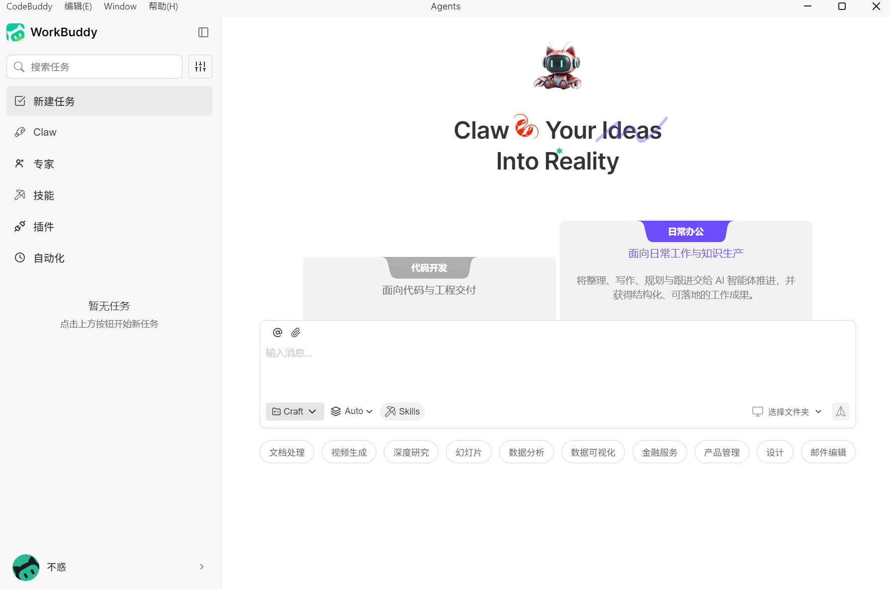
如果你做的事情是"重复、有明确输入输出、规则清楚"的，就适合交给 WorkBuddy。如果是"需要临场判断、涉及重大利益、结果不可控"的，只让它做初稿和资料整理，最终拍板留给你。
安装与基础配置
2.1 下载安装
- 访问官网 workbuddy.cn，选择对应平台（Windows / macOS）下载
- 安装包大小约 150-180MB，安装过程与普通软件一致
- 安装完成后打开，使用微信扫码登录
- 新用户注册即赠送免费 Credits，可以立即体验
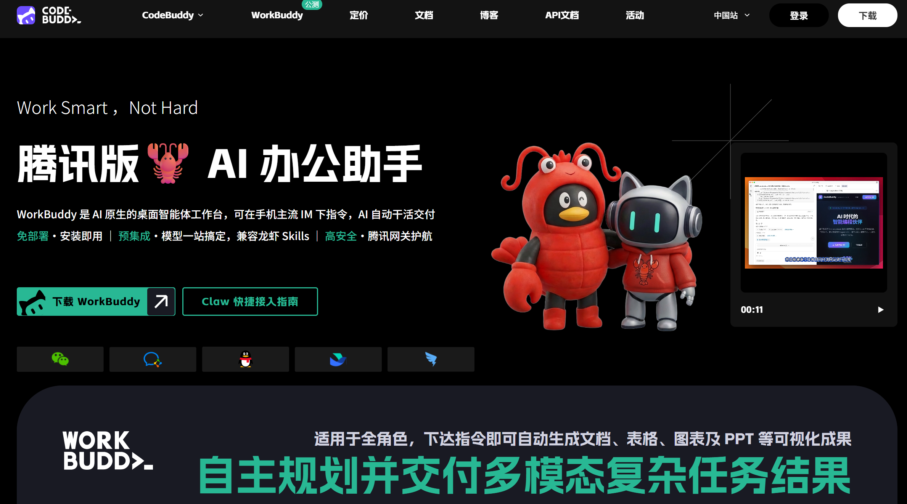
1. 右键"以管理员身份运行"安装程序，避免后续插件权限不足
2. 安装路径保持默认英文路径，中文路径可能导致技能包报错
2.2 必须做的 5 项基础设置
| 序号 | 设置项 | 建议 | 原因 |
|---|---|---|---|
| 1 | 完善个人偏好 | 填写岗位、工作场景、输出偏好、语言风格 | 越精准，AI 输出越贴合你 |
| 2 | 技能自动更新 | 打开 | Skills 市场更新频繁，保证最新版本 |
| 3 | 锁屏远程 | 打开 | 电脑不休眠，手机远程指令才能接收 |
| 4 | 系统授权 | 全部打开 | 否则很多功能用不了 |
| 5 | 对话记忆 | 打开 | WorkBuddy 会越来越了解你的习惯 |
2.3 文件授权
遵循最小权限原则：授权"桌面""文档""下载"等常用文件夹；指定非系统盘（如 D 盘）文件夹作为工作目录；不要授权整个磁盘。
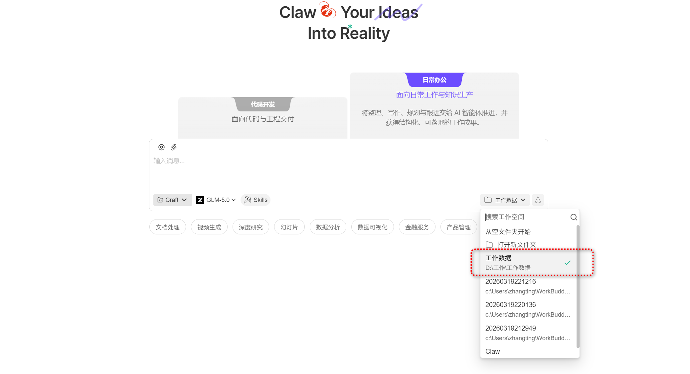
2.4 建立你的工作区
WorkBuddy/ ├── 01-input/ ← 放需要处理的原始文件 ├── 02-reference/ ← 放参考资料、模板、规则 ├── 03-output/ ← 放 WorkBuddy 生成的成品 ├── 04-archive/ ← 放已完成的归档 └── 99-prompts/ ← 放好用的提示词模板
这个结构看起来普通，但它能解决很多麻烦：WorkBuddy 知道去哪找文件、你能在 03-output 快速验收结果、以后复用时直接改文件名就行。
2.5 发起你的第一个任务
帮我把 01-input 里的这份销售数据生成一个分析报告， 包含图表。输出保存到 03-output，不要修改原文件。
任务创建后：新任务出现在左侧列表 → 对话区展示执行过程 → 右侧结果区展示产物/文件/变更/预览 → 你可继续补充或并行开新任务。
1. 只授权任务需要的目录
2. 先处理 3 个文件确认规则正确，再扩大
3. 敏感资料先脱敏或放单独目录
4. 每次指令里明确输入在哪、输出在哪、不要修改原文件
三种工作模式：Ask / Plan / Craft
默认就是 Craft 模式！随手发一条"帮我看看这个"，它就开始干了，积分也就开始消耗了。如果只是想问个问题，记得先切到 Ask 模式。
| 模式 | 功能 | 消耗积分 | 什么时候用 |
|---|---|---|---|
| Ask 问一问 | 纯问答，不执行文件操作 | 不消耗 | 咨询问题、确认思路、核实知识点 |
| Plan 想一想 | 先出执行计划，你确认后才动手 | 确认后才消耗 | 复杂任务、多文件、有风险 |
| Craft 做一做 | Agent 模式，直接开干（默认） | 发消息即消耗 | 目标明确的日常任务 |
3.1 Ask 模式
- 权限：只读，纯问答，不碰文件
- 适用：查资料、问问题、调研咨询
- 典型："Python 里怎么合并两个 DataFrame？""PPT 配色有什么原则？"
3.2 Plan 模式
- 权限：可读取文件，但只输出计划，等你确认
- 适用：复杂任务、高风险操作、多步骤流程
请先不要执行。请根据我的目标，列出执行计划、需要读取的文件、 可能的风险和你准备输出的文件结构。等我确认后再开始。
3.3 Craft 模式
- 权限：全权限，可直接读写文件、执行脚本
- 适用：目标明确的日常任务
- 注意：敏感数据建议提前备份
日常办公 → Craft（效率最高）｜ 复杂任务 → Plan（先审后做）｜ 信息检索 → Ask（不碰文件）
同一个任务中途不要切换模型，会导致上下文断裂。
三大场景模式
除了三种工作模式，WorkBuddy 还提供场景快捷切换，会自动加载对应的提示词模板。
4.1 代码开发
日常开发
代码生成、审查、Bug 修复、重构
网站开发
从需求到代码全流程
Agent 应用
构建 AI 智能体应用
Skill 开发
创建自定义技能包
4.2 日常办公
文档处理
报告、技术文档、会议纪要
数据分析可视化
上传数据自动分析绘图
深度研究
复杂问题调研输出报告
幻灯片
从需求生成演示文稿
4.3 设计创意
网站设计
界面稿、组件设计
App 设计
可交互产品原型
PPT 设计
自动排版配图
品牌设计
Logo、品牌标识
模型选择策略
| 模型 | 擅长领域 | 推荐场景 | 特点 |
|---|---|---|---|
| 混元 | 腾讯原生适配 | Excel、脚本、本地文件操作 | 最稳定，中文强 |
| DeepSeek V4 | 逻辑推理强 | 数据分析、调研、项目拆解 | 综合强、性价比高 |
| GLM | 结构化输出 | 公文、技术方案、标准文档 | 语义理解好 |
| Kimi | 长文创作 | 公众号、创意文案 | 200 万 Token 上下文 |
| MiniMax | 多模态 | 图片理解、跨模态分析 | 创意写作强 |
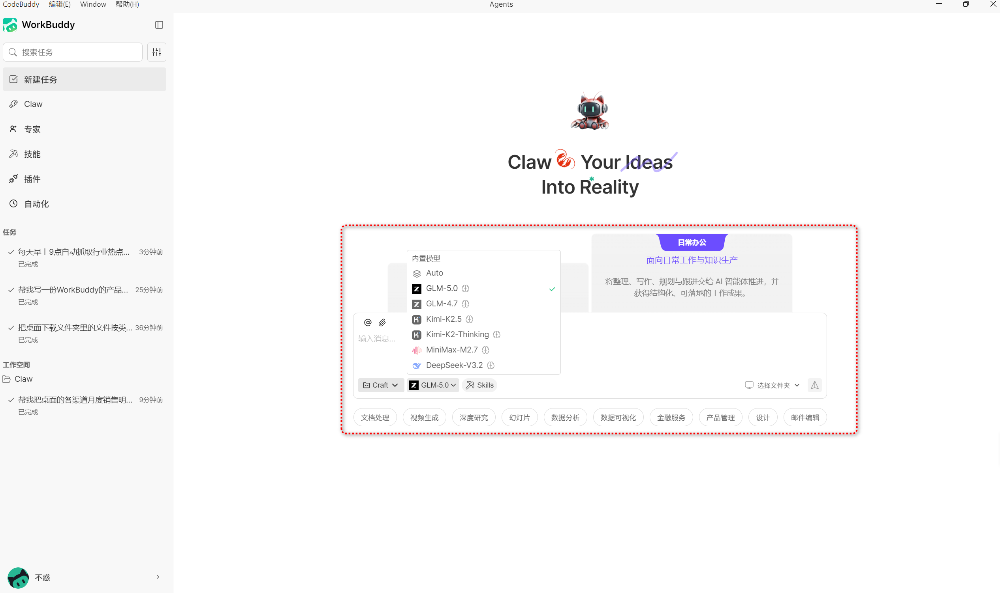
无脑推荐 DeepSeek V4 Pro：价格低、综合能力强（世界知识、Coding、Agent 几乎全覆盖），除了多模态，在国内模型里几乎是水桶级。
5.1 Auto 自动模式
支持 /model auto：每轮请求前系统用轻量路由分析任务复杂度，自动决定模型与推理级别（off/high/max）。
| 推理级别 | 说明 | 消耗 | 适用 |
|---|---|---|---|
off | 推理关闭 | 低 | 简单查询、代码补全 |
high | 推理增强 | 中 | 一般复杂任务 |
max | 推理拉满 | 高 | 复杂架构、深度分析 |
同一任务中途禁止切换模型，会造成上下文断裂。
三大能力支柱：专家 / 技能 / 连接器
WorkBuddy 的战斗力来自三个支柱。理解它们的定位和区别，是进阶的关键。
专家 (Experts)
内置 100+ 专家，专家团多角色并行协作
技能 (Skills)
执行能力扩展，插件商店：推荐/Skillub/套件
连接器 (MCP)
腾讯生态打通：邮箱/会议/文档/企微等扫码即用
| 维度 | 专家 | 技能 | 连接器 |
|---|---|---|---|
| 本质 | 角色人设+规范 | 任务流程封装 | 工具调用协议 |
| 解决什么 | "以什么身份做" | "这类任务怎么做" | "外部系统怎么接入" |
| 安装 | 专家中心选择/自建 | 技能市场一键装 | 扫码或 mcp.json |
| 执行 | 内部执行 | 内部执行 | 外部 Server 执行 |
Tool 负责"一个动作"，Skill 负责"一类任务的做法"，Expert 负责"以什么角色做"，MCP 负责"外部系统怎么接入"。它们可以组合：一个发周报的 Skill 可同时调用腾讯文档 MCP、知识库 MCP 和本地脚本，而执行时指定"项目经理专家"主导。
Skills 技能系统详解
7.1 本质
把 WorkBuddy 比作手机，Skills 就是 App。技能包提供领域知识库、封装标准化流程（SOP）、包含专属工具与指令模板。
| 类型 | 说明 | 来源 |
|---|---|---|
| 官方 Skills | 23 类原生职场技能 | 自带 |
| 社区 Skills | OpenClaw 生态 | ClawHub 13000+ |
| 自定义 Skills | 自己开发 | 开发者创建 |
7.2 三种创建方式
图形化新建
推荐新手，可视化配置触发词与动作
导入 YAML
适合复杂逻辑，标准 YAML 编写导入
指令反向生成
发三次相似指令，系统自动提示生成
7.3 推荐安装的 10 个实用 Skills
| Skill | 用途 | 理由 |
|---|---|---|
| web-scraper | 网页内容抓取 | 替代手动复制 |
| pdf-parser | PDF 解析提取 | 自动提取合同/发票信息 |
| github-manager | GitHub 管理 | Issue 分类、PR 审查 |
| email-digest | 邮件摘要 | 每日邮件自动摘要 |
| data-visualizer | 数据可视化 | 自动生成图表 |
| meeting-notes | 会议纪要 | 录音转文字+结构化 |
| translate-pro | 专业翻译 | 技术文档翻译 |
| code-reviewer | 代码审查 | 检查代码规范 |
| image-optimizer | 图片压缩 | 批量处理素材 |
| schedule-optimizer | 日程优化 | 会议排期建议 |
一条提示词跑通三次 → 存进 99-prompts｜一个流程跑通三次 → 考虑做成自动化｜自动化跑稳了 → 沉淀成自定义 Skill
MCP 连接器生态
8.1 MCP 是什么
MCP（Model Context Protocol）是 AI 与外部工具之间的标准化通信协议。通俗说，MCP 就是 AI 世界的 USB 接口——所有工具统一接口标准，AI 想调用哪个"插上"就能用。
| 类型 | 具体支持 | 能力 |
|---|---|---|
| 邮箱 | QQ/网易邮箱 | 筛选、总结、代写回复 |
| 文档 | 腾讯/金山文档 | 跨库检索、整理 |
| 会议 | 腾讯会议 | 转写、提取 Action Item |
| 知识库 | ima、乐享 | 语义搜索、沉淀 |
| 协作 | 企微/飞书/钉钉 | 消息同步、推送 |
| 金融 | 通达信/自选股 | 行情、持仓 |
| 设计 | Canva/MasterGo | 素材生成、协作 |
8.2 5 分钟接入
- 左侧「连接器」→ 选择服务 → 扫码授权 → 勾选权限
- 卡片旁出现绿色圆点即连接成功
- 直接在对话里输入需求，AI 自动调用工具
8.3 自定义 MCP Server
{
"mcpServers": {
"company-db": {
"command": "npx",
"args": ["-y", "@anthropic/mcp-server-mysql"],
"env": { "MYSQL_HOST": "host", "MYSQL_PORT": "3306", "MYSQL_USER": "ro_user", "MYSQL_DATABASE": "analytics" }
}
}
}
第三方 MCP 配置前检查来源，先隔离测试；配置文件中不要含明文密码，用环境变量。
8.4 Skills 与 MCP 区别
| 维度 | Skills | MCP |
|---|---|---|
| 本质 | AI 能力封装（提示词+流程） | 工具调用协议 |
| 安装 | 技能市场一键装 | mcp.json 配置 |
| 执行 | 内部执行 | 外部 Server 执行 |
两者可组合：一个 Skill 内部可调用已配置的 MCP 工具。
专家与专家团
每次对话都要重新告诉 AI 你的行业、岗位、输出风格？专家系统一次解决。内置 100+ 专家按行业分类，专家团可多专家并行协作。
9.1 专家团示例（内容创作）
- 创意总监 —— 统筹规划，把控方向
- 创意策划师 —— 产出创意方案
- 文案创作专家 —— 文案撰写
- 视频生成专家 —— 视频内容
- 图文创作专家 —— 图文内容
- 视频编辑专家 —— 后期剪辑
- 素材改编专家 —— 跨平台改编
9.2 自建专家
市场文案专家
固定品牌调性、禁用词、排版结构
财务报表专家
锁定数据位数、汇报口径、表格格式
项目复盘专家
固化复盘逻辑，导入资料自动产出
专家团一次调四五个角色，积分比单个专家高好几倍。新手先用小任务试水；"写句话、改错别字"别动整个团，简单活用单个专家更省。
部门全员共用一套专家配置，输出风格统一，减少审稿成本。
自动化定时任务
自动化适合已手动跑通、流程稳定的任务。没跑明白不要设，否则定时制造混乱。
10.1 配置方式
- 左侧「自动化」→ 新建计划 → 设时间/周期/指令 → 选工作空间 → 保存
10.2 实用模板
每日资讯简报
每个工作日早上 8 点生成 AI 行业简报， 包含 5 条新闻、3 条投融资动态、1 段个人待办提醒，发送到我的 QQ 邮箱。
每周周报草稿
每周五 17:00 读取 WorkBuddy/01-input/weekly 目录， 基于任务清单和会议纪要生成周报草稿，保存到 03-output/weekly。
10.3 调度类型
| 类型 | 说明 | 示例 |
|---|---|---|
| Recurring | 按 RRULE 重复 | 每天 8:00、每周一 9:00、每月 1 号 |
| Once | 指定时间一次 | 明天下午 3 点提醒开会 |
10.4 有效期
可设 validFrom / validUntil 控制活跃时间窗口，如"3 月 18 日到 3 月 22 日每天运行"。
Claw 手机遥控
绑定企微/微信/钉钉/飞书后，手机发文字或语音指令，电脑 7×24 自动执行。
通勤布置
地铁发指令，到公司看成品
出差处理
让 AI 整理数据，结果回传
周末生成
周日发指令，周一直接用
11.1 两种模式
| 模式 | 说明 | 优点 | 限制 |
|---|---|---|---|
| 云端工作 | 云端沙箱运行 | 不需电脑开 | 不能访问本地文件 |
| 连接电脑 | 远程操控本地 | 可操作本地文件 | 电脑需开机 |
远程不要做删除、覆盖、批量发送等高风险操作！远程无法实时看结果，出错难挽回。
基础设置打开「锁屏远程」，电脑不休眠才能接收指令。
Teams 团队空间
个人用法只发挥三成价值，Teams 才是企业级终极形态。
| 能力 | 说明 |
|---|---|
| 共享专家库 | 部门统一配置标准化专家，全员共用 |
| 项目共用记忆 | 团队维护 MEMORY 日志，新人 10 分钟吃透项目 |
| 全链路流转 | 需求→文档→设计→开发，同一空间闭环 |
| 权限分级 | 管理员控制文件访问和操作权限 |
| 多 Agent 协作 | 同一任务可开多个 Agent 并行 |
Teams 沙箱权限默认保守，成员无法操作本地文件时，需在团队后台手动放开文件调用权限。
Excel 数据清洗实战
真实数据从来不会"开箱即用"。WorkBuddy 帮你跨过"不会函数"的门槛——你照样可以拿 Excel 精修成品，但最累的第一步脏活交给它。
13.1 一句话完成清洗+可视化
读取桌面上的"销售数据.xlsx"，帮我做以下处理： 1. 删除完全重复的行； 2. 把"销售额"列的空值按 0 填充； 3. 按"月份"汇总每月销售额，生成一张汇总表； 4. 根据汇总结果画一张月度销售额柱状图； 5. 把结果保存为新文件"销售数据_月度汇总.xlsx"，不要覆盖原文件。
写清文件名和路径（避免找错文件）｜每步用序号列清楚（任务被准确拆解）｜明确输出文件名+"不覆盖原文件"（保护原始数据，非常重要）
实测：约 5 万行数据，1 分钟左右出结果，不用写公式、不用敲 Python。右侧结果区能看到它读文件、算汇总、画图的全过程。
13.2 可复用的诊断→清洗模板
读取桌面"[文件名].xlsx"，按以下步骤处理： 诊断：报告总行数、列名、每列类型、空值和异常值数量 清洗： - 删除完全重复的行 - 删除 [某列] 为空的行 - 把 [日期列] 统一为 YYYY-MM-DD 格式 汇总：按 [维度列] 汇总 [数值列] 生成柱状图和折线图 输出： - 清洗后数据另存为"[文件名]_已清洗.xlsx" - 汇总表另存为"[文件名]_月度汇总.xlsx" - 图表保存为 PNG 所有文件放到桌面
13.3 踩坑清单
| 坑 | 症状 | 解法 |
|---|---|---|
| 指令太模糊 | "帮我处理下这个表"→ AI 自由发挥 | 写清"做什么+对什么+要什么+存哪" |
| 覆盖原始数据 | 清洗完误删该留的行，原件没了 | 永远另存新文件 |
| 中文图表乱码 | 自己配 matplotlib 字体繁琐 | WorkBuddy 默认配好，直接用 |
| 大文件卡顿 | 10 万行首次读取 10-20 秒 | 先读前 1000 行试逻辑，再跑全量 |
| 合并单元格 | AI 读不出完整数据 | 先"取消所有合并单元格再处理" |
| 公式变数字 | 带公式列被读成计算值 | 告诉 AI"保留公式列原始公式" |
常规统计（求和、平均、占比、排序）准得很。但特别刁钻的逻辑最好把条件拆细了说。AI 标出的异常值建议都过一眼——原始数据录入错误，它也可能被带偏。
从 5 万行脏数据到销售分析报告
14.1 第一轮：分析数据（5 分钟）
读取桌面"Q1销售数据.xlsx"里的三个 sheet（京东自营、天猫、拼多多）： - 分别计算各平台 Q1 总销售额、总订单数、月度趋势 - 算各平台环比增长率 - 找出销量 Top5 产品 - 生成分析结果表保存为"Q1分析结果.xlsx"
14.2 第二轮：生成报告（5 分钟）
基于"Q1分析结果.xlsx"和原始数据，生成一份 Q1 电商销售分析报告： Word 格式 结构：封面 → 摘要(200字) → 整体概览(趋势图) → 渠道分析(对比柱状图) → 类目分析(饼图) → 问题与建议(3-5条) → 附录数据表 语言专业但不晦涩，结论有数据支撑，保存为"Q1销售分析报告.docx"
14.3 第三轮：生成 PPT（5 分钟）
基于分析报告，生成 10 页商务汇报 PPT： 封面页(标题+日期+公司名) → 目录页 → 数据概览页(趋势图) → 渠道对比页(柱状图) → 类目分析页(饼图) → 问题与风险页 → 下季度建议页 → 结尾页 配色蓝白为主，字体微软雅黑
数据分析的本质不是写代码，是描述清楚你要什么结果——诊断→清洗→汇总→输出，四步走完，AI 完成全部 pandas/matplotlib 技术工作。中间产物互为上下文，这是它比"单点工具"强的地方。
周报自动化：3 小时压缩到 10 分钟
15.1 实操一：5 万行数据自动清洗（见第十三章）
15.2 实操二：从数据到周报
根据"销售数据_月度汇总.xlsx"的数据，帮我写一份本周销售情况周报，要求： 1. 结构分"整体概况、亮点、问题、下周计划"四部分； 2. 关键数据用具体数字支撑，不要空话； 3. 语气正式，适合发给部门领导； 4. 字数 800 字左右，输出为 Word 文档。
生成后一般只需微调两句话。哪段不满意直接在对话区追问："第二部分再具体一点，补上环比增长数据"，它会基于上下文继续改，不用从头来。
15.3 实操三：周报一键转 PPT
根据这份周报内容，生成一份 10 页商务风格的 PPT 大纲： 划分封面、目录、核心内容、总结四个板块， 每页标注核心要点，风格简洁专业，适合上会汇报。
15.4 进阶：定时任务
每周一早上 9 点提醒我处理上周销售数据，并自动跑一遍数据清洗流程。
周报生成："基于 [材料类型]，生成 [部门] 周报，包含本周完成、存在问题、下周计划，语言风格 [正式/简洁]，字数 [800-1000]"
数据处理："对 [文件] 进行 [清洗/汇总/可视化]，按 [维度] 分组，生成 [图表]，保留 [小数] 位，输出 [Excel/PPT]"
会议纪要生成
16.1 文本会议纪要
请读取 01-input 里的会议记录，整理为会议纪要。 输出包括：背景、主要结论、行动项（任务、负责人、截止时间）、待确认问题。 不要修改原文件，保存到 03-output。
16.2 录音转文字
配合 Local Whisper 技能：先把会议录音、访谈、课程音频转成文字，再让 WorkBuddy 整理成结构化纪要。
16.3 标准纪要结构
| 模块 | 内容 |
|---|---|
| 背景 | 会议时间、参与人、议题 |
| 主要结论 | 达成的决策点 |
| 行动项 | 任务 / 负责人 / 截止时间（表格） |
| 待确认 | 未决问题和风险 |
文档与 PDF 处理
17.1 支持的文件类型
PDF、Word、TXT、Markdown、RTF、Excel、CSV、TSV、PPT、常见图片（JPG/PNG/GIF/BMP）、ZIP/RAR、各类代码文件。
17.2 多文档合并对比
请读取 01-input 中的 3 份 PDF，提取核心观点、关键数据、风险提示， 合并成一份对比表。输出到 03-output，不要修改原文件。
17.3 隐私授权边界
- 所有文件处理默认本地完成，原始数据不上传云端
- 服务端仅处理数据片段，用后即弃，不保存不训练
- 只能访问你主动授权的文件夹
- 系统敏感目录自动拦截，高危操作需二次确认
商务汇报 PPT
18.1 标准流程
Step 1 数据清洗与口径统一
把各部门表格丢给 WorkBuddy，让它检查单位、标红未达标指标
Step 2 生成 PPT 大纲
固定用"封面/目录/核心内容/总结"四板块，每页标注核心要点
Step 3 逐页生成内容与可视化
习惯让它直接生成 HTML 格式，复制进 PPT 排版更快
Step 4 人工校验关键数字
PPM、OTD、金额等客户会追问的指标，必须和系统源头对得上
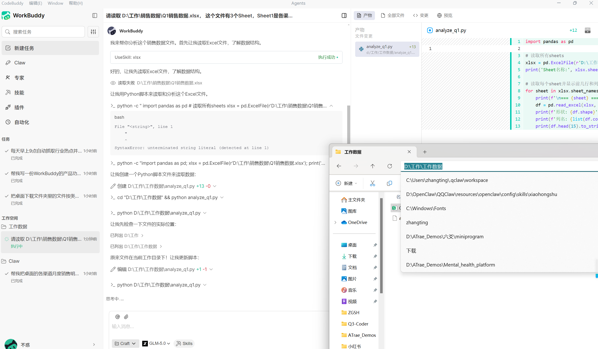
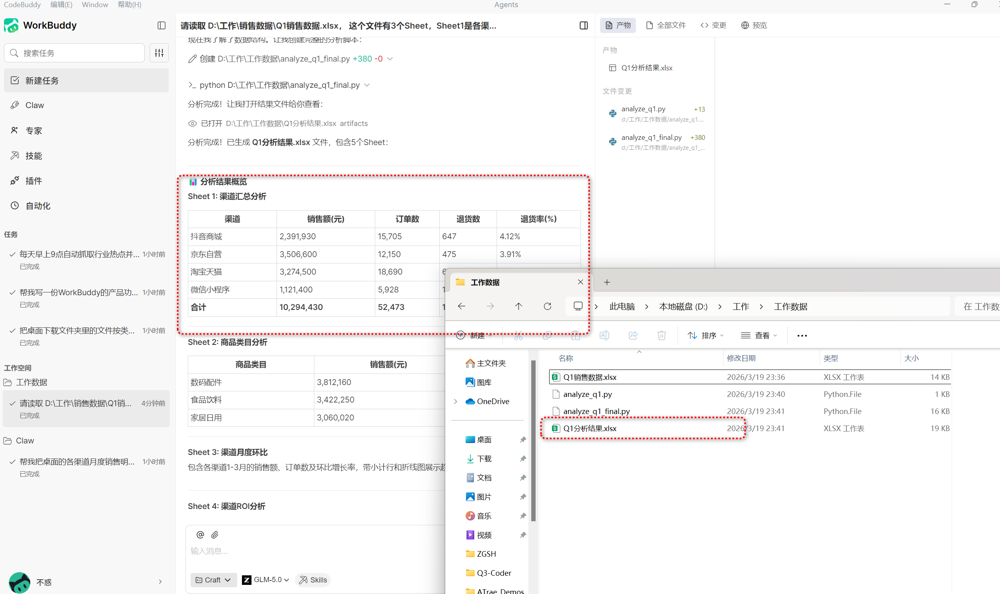
18.2 数据清洗 Prompt（汽车零部件商务回顾示例）
你是一名汽车零部件项目的商务回顾分析师，有 10 年质量、交付、项目、成本数据整合经验。 我将上传一份年度商务回顾素材表，包含质量、交付、项目、成本四个模块的数据。 请完成以下任务： 1. 检查每一列数据的单位是否统一，标记单位不一致或口径可疑的单元格； 2. 对同一指标出现多个数值的情况，列出所有版本并指出最可能正确的口径； 3. 计算全年关键指标：质量 PPM、交付 OTD、项目节点达成率、年降达成率、VA/VE 收益总额； 4. 标红全年未达目标的指标，并给出 3 句以内的解释建议； 5. 输出一份整理后的 Markdown 表格，表头：指标、年度目标、实际值、达成状态、备注。 注意：只输出整理结果，不要展开写长段分析。
WorkBuddy 再快，数字也必须你亲自核对一遍。特别是客户会追问的指标，必须和系统源头对得上。
产品路演 PPT：3 天 → 半天
路演和技术交流最大的区别：技术交流是"我回答你的问题"，路演是"我要让你记住我"。每一页都要推动客户往"我愿意继续谈"走。
19.1 先写清楚路演定位（15 分钟）
产品：H4012 隐藏式门把手电动执行器 路演场合：某 OEM 供应商大会技术路演 时长：15 分钟 听众：采购、项目经理、电子电气工程师、技术总监 客户痛点： - 隐藏式门把手低温失效投诉多，影响品牌口碑； - 现有执行器响应慢、噪声大、寿命余量不足； - 供应商方案同质化，OEM 想找技术差异化二供。 我们的核心差异： - 低温 -30°C 弹出力 42N，高于规范 35N，余量 20%； - 10 万次循环寿命验证通过，失效 0 件； - 平均响应时间 180ms，优于行业主流 220ms。 目标：让客户记住"H4012 是低温可靠性和响应速度都领先的方案"，邀约下一轮 DV 样件评审。
19.2 Prompt A：生成路演大纲
你是一名有 12 年经验的汽车零部件研发工程师，要做 OEM 供应商大会产品路演 PPT。
听众包括采购、项目经理、电子电气工程师和技术总监。
请根据以下信息生成完整的路演 PPT 大纲：
【路演定位】 {{粘贴上面内容}}
【输出要求】
1. 总页数 10-12 页，时长 15 分钟；
2. 结构必须包含：封面、市场痛点、产品定位、核心优势、技术验证、客户价值、合作方式、下一步行动、封底；
3. 每页给出：标题、核心信息、建议展示形式、讲解时长；
4. 标注每一页主要面向哪种听众角色；
5. 输出为 Markdown 表格格式。
19.3 单页内容：四段式结构
你是一名汽车零部件研发工程师，擅长把技术方案翻译成客户能听懂的价值语言。
请根据以下信息生成一页路演 PPT 的详细内容：
【本页标题】 {{标题}} 【本页核心信息】 {{核心信息}} 【输入数据】 {{数据}}
【输出要求】
1. 用"痛点/机会 → 方案 → 价值 → 证据"四段式结构；
2. 每页只讲 1-2 个核心观点，不要堆参数；
3. 首次出现缩写需加中文注释；
4. 输出 16:9 PPT，字数 60-100 字；
5. 对比用表格，数据用一句话结论+数字。
19.4 生成 HTML 路演页面
请将以下内容转换为一段 16:9(1440×810px) 的 HTML 路演 PPT 页面。风格专业、有冲击力。
【本页标题】 {{标题}} 【本页内容】 {{内容}}
【输出要求】
1. 只输出完整 HTML，含 <style> 和 <body>；
2. 页面尺寸固定 1440×810px；
3. 排版含标题区、内容区、页脚页码，重点数据用醒目强调色；
4. 不出现占位符，所有文字真实可用；
5. 用内联/内部 CSS，不引用外部文件。
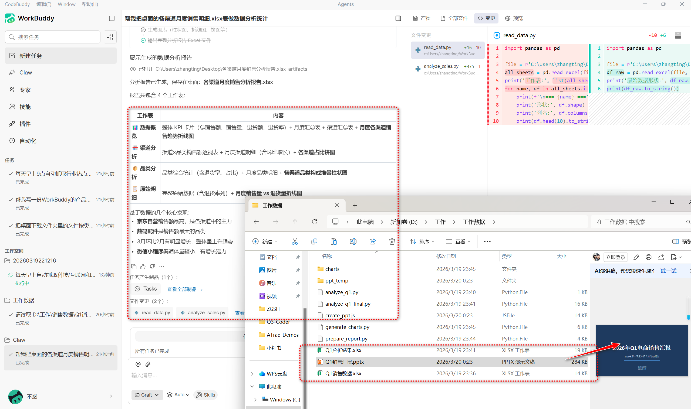
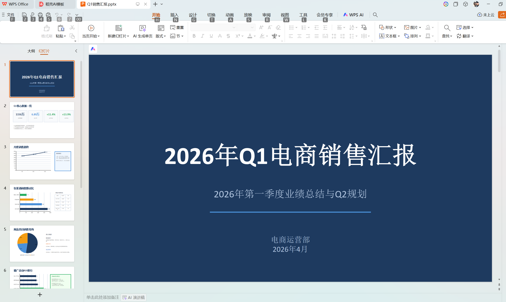
□ 封面 3 秒内讲清"我们是谁、解决什么"？□ 每页都在回答客户一个具体顾虑？□ 核心数据标注测试条件和来源？□ 最后一页明确告诉客户下一步？□ 准备 1-2 页备用页应对追问？□ 从接任务到交稿控制在半天？
8D 质量汇报 PPT：2 天 → 4 小时
20.1 生成 8D 大纲
你是一位有 15 年经验的汽车零部件质量工程师，擅长编写客户 8D 质量报告。 请根据客户投诉信息，生成一份 8D 报告大纲： D0 症状描述 / D1 团队 / D2 问题描述(5W2H) / D3 临时遏制措施 D4 根本原因分析(鱼骨图+5Why) / D5 永久纠正措施 / D6 实施与验证 D7 预防再发 / D8 团队表彰 每步给出：目标、关键内容、所需数据、负责人。
20.2 生成 HTML 版 PPT
你是一位专业的汽车零部件质量报告 PPT 设计师。请基于以下 8D 大纲，生成可直接在浏览器打开的 HTML 格式 PPT。 【8D 大纲】 (粘贴大纲) 【设计要求】 1. 页面尺寸 1440×810px (16:9)，总页数 10-15 页； 2. 结构：封面(项目/编号/日期/汇报人) → 目录(8D流程图) → D0~D8 → 结束页； 3. 配色：白底深蓝字，关键数据红色高亮，通过/OK 用绿色； 4. 标题微软雅黑 Bold 32px，正文 18px； 5. 每页底部加页码和"Confidential"水印； 6. 真实填写内容，不用占位符；输出完整 HTML 代码。
20.3 微调重点检查
- D2 的 5W2H：是否每个要素都有具体数据？"很多""大概"换成具体数字
- D4 根因链条：5Why 每层逻辑是否成立？有没有跳步？
- D6 验证数据：样本量够不够？测试条件是否符合实际使用场景？
- 数据一致性：同一组数据在不同页面数值是否一致？
用浏览器把 HTML 打印为 PDF，或截图插入 PowerPoint 模板。保存好原始 HTML，客户要求修改时直接复用。
年度商务回顾 PPT
21.1 Step 1：把素材归到四个篮子
质量数据
全年 PPM 趋势、客诉清单、8D 关闭、重大事件
交付数据
月度 OTD、交付异常、拉动响应时间
项目数据
节点达成率、量产 SOP、变更次数
经营数据
年降达成、VA/VE 收益、产能利用率
用一个固定模板让各部门填，不填完不开始。模板很简单：四列——指标名称、目标值、实际值、备注。统一口径比什么都重要。
21.2 固定六模块
年度商务回顾 PPT 固定用这 6 个模块，让 WorkBuddy 根据素材自动建议每页放什么指标、用什么图表、讲什么结论。
21.3 关键提醒
人工校验关键数字。WorkBuddy 再快，数字必须亲自核对。特别是 PPM、OTD、金额这些客户会追问的指标，必须和系统源头对得上。
知识库驱动 PPT
22.1 接入对话
在对话框输入 @资料库名称，把 ima 知识库接入当前任务。引用语法：输入 @资料库名称 即可调用；仅作用于本次任务上下文；原生集成无需中间层。
22.2 一句话生成
基于资料库内容生成一份关于某主题的演示文稿， 包含封面、目录、要点页与总结页。
22.3 WorkBuddy 的规划
- 检索先行：RAG 取回与主题相关的资料片段
- 结构规划：由 Agent 决定页数与每页要点分布
- 模型选型：Auto 模式按任务自动选模型，可手动覆盖（内置 13 个模型）
22.4 产出与调整
生成初稿后，用追加指令调整页面顺序、补充要点或精简篇幅。执行中可点"中止"停止，再重新描述需求。本地文件操作也让结果可保存到本机授权文件夹。
多模态协作：文档、表格、图片可在同一任务里被统筹。技能市场 pptx 技能在生成与编辑环节提供辅助。
网页开发实战：一句话生成看板
23.1 开局：一句话生成骨架
帮我做一个房产数据监控看板，要求： 1. 顶部 KPI 卡片（在售楼盘数、本月均价、成交量、库存去化周期） 2. 中间左侧近 6 个月价格走势折线图 3. 中间右侧各区域楼盘数量饼图 4. 底部竞品项目对比柱状图 5. 配色：深蓝主调、白底、浅灰卡片 6. 数据先用模拟数据填充
WorkBuddy 直接输出完整 HTML 文件——布局、配色、卡片样式全部到位。它不是给你"大概思路"，而是直接给可以运行的成品。
23.2 迭代优化（对话式开发）
- 第一轮：让图表加动画、悬停提示框（Chart.js 的 animation + tooltips）
- 第二轮：KPI 卡片加环比变化（涨红↓跌绿↑）
- 第三轮：响应式适配（手机上 KPI 两列、图表堆叠）
三轮迭代不到 15 分钟。自己手写光调 CSS 布局就够折腾一上午。
23.3 接入真实数据
让 WorkBuddy 写 Python 爬虫脚本抓取数据 → 输出 JSON → 前端 fetch 读取。甚至帮设自动化提醒"每天上午 9 点执行爬虫"。还可加"导出 Excel"按钮（SheetJS）、暗色模式。
WorkBuddy 负责写所有代码，你负责提需求和验收。从"能跑"到"好用"靠几轮对话式迭代。
全栈开发：需求到上线
24.1 数据库设计篇
我需要设计 QA 测试管理模块的数据库表结构，包含： 1. 测试问题管理(qa_test_issue)：标题、描述、优先级、状态、负责人、创建时间 2. 测试任务管理(qa_test_task)：名称、关联问题、执行人、起止时间、状态 3. 测试人员管理(qa_member)：人员信息、角色、所属项目 4. 日报记录(daily_report)：日期、人员、内容、工时 请设计完整表结构：所有字段及数据类型、主键外键、索引、表引擎及字符集、符合 MySQL 最佳实践，输出完整 SQL。
24.2 核心收益
| 指标 | 传统 | 用 WorkBuddy |
|---|---|---|
| 数据库设计 | 约 4 小时，易遗漏 | 几分钟，含约束与索引 |
| 开发效率 | 基准 | 提升约 60% |
| 代码质量 | 基准 | 显著提升 |
| 踩坑率 | 基准 | 降低约 70% |
前端 Vue.js 3 + Element Plus；后端 Java Spring Boot + MyBatis；数据库 MySQL。WorkBuddy 全流程辅助：需求分析→库设计→前后端→测试。
30 分钟搭数据看板
| 需求 | 技术方案 |
|---|---|
| 数据自动刷新 | 打开即看最新数据 |
| 多维度可视化 | 折线(走势)/柱状(对比)/饼(分布) |
| 响应式布局 | 电脑手机都能看 |
| 前端 | 纯 HTML + CSS + JS |
| 图表 | Chart.js（开源轻量） |
| 数据源 | Python 脚本爬取 + 静态 JSON |
| 部署 | 单文件，双击打开 |
WorkBuddy 负责写所有代码，你负责提需求和验收。数据导出 + 暗色模式可作为"锦上添花"的后续轮次追加。
从 0 到 1 搭校园资源平台
26.1 技术选型（全开源、零月租）
- 前端：Vue 3 + Vite + Element Plus
- 后端：Node.js + Express + SQLite
- 部署：学校 NAS 上的 Docker，frp 内网穿透
- 预览：pdf.js 渲染 PDF，Office 经 LibreOffice 转 PDF
26.2 六个关键点
- 数据库：六张表（roles/users/categories/resources/albums/reviews）
- 登录：JWT 鉴权，中间件必须在路由前注册
- 上传：中文文件名用随机名存，原文件名单独存字段
- 权限：RBAC 四级（superadmin/教师/学生/访客）
- 部署：Docker 一把梭，前后端打一个镜像
- 预览：Office 转 PDF 再 pdf.js 渲染
26.3 踩过的坑
- SQLite 并发写锁 → 开 WAL 模式 + 写入队列
- frp 断流 → 加健康检查和自动重连
- 权限越权 → reviews 表校验 owner
真实数据：注册 161 人、资源 240 个、下载 1554 次、覆盖 16 学科。心得：先想清楚再写代码——需求梳理比代码更值钱；权限和预览是校园平台命门。
多智能体团队 SOP：1 小时完成 MVP
核心方法论：代码 = SOP（团队）。把软件开发流程标准化，用不同专长的 AI 角色执行。
27.1 团队成员
| 角色 | 名字 | 职责 |
|---|---|---|
| 产品经理 | 许清楚 | 创建 PRD 需求文档 |
| 架构师 | 高见远 | 架构设计 + 任务分解 |
| 工程师 | 寇豆码 | 批量编写代码 |
| QA 工程师 | 严过关 | 测试用例 + 验证 |
所有信息必须经主理人（你）中转，不允许成员互相直连。确保信息可控、可追溯。
27.2 工作流路由
- 快速模式：单页面应用、≤10 源文件
- BugFix：修复明确 Bug
- 标准 SOP：多页面、中大型需求（如播客汇 PodHub：多页面+播放器+会员体系）
公众号文章全自动写作
28.1 固定账号人设（一次设置长期复用）
我是做【xx领域】的自媒体账号，受众是【xx人群】，年龄【xx岁】， 核心需求是【学习干货/避坑指南/情绪共鸣/省钱攻略】。 请你后续所有输出遵循：语言通俗接地气、拒绝书面套话、段落简短不堆砌、 逻辑清晰有干货、自带生活化口语感、适配【公众号/小红书/头条】平台， 输出原创、无 AI 生硬感。
28.2 六步标准化流程
Step 1 选题+资料（5分钟）
说主题 → 调用"内容创作"专家+"网页搜索" → 自动搜集整理成结构化笔记
Step 2 大纲（5分钟）
基于资料生成 3 个大纲方案 → 你选一个或提修改
Step 3 初稿（10分钟）
根据大纲撰写 → 你补个人经验、调语气
Step 4 排版（5分钟）
调用"公众号排版"技能 → 自动生成手机框 HTML
Step 5 检查发布（5分钟）
你检查 → 复制 HTML 到后台 → 发布
Step 6 自动推送（0分钟）
配置自动化：每周五 17:00 自动推送提醒发布
28.3 批量选题
围绕【我的领域：xx】，结合当下自媒体热门趋势，帮我生成 15 个高流量选题， 分为干货技巧、避坑指南、情绪感悟 3 类。每个选题附 1 句核心亮点， 标题适配【目标平台】，优先低竞争、高搜索、用户刚需角度，拒绝烂大街选题。
绝不让 AI 直接写正文，必须先过大纲。这一步多花 5 分钟，避免后面花 1 小时改稿。
专家团写作法：比 99% 的人更会用
专家团交出来的东西，选题、大纲、案例、配图方向都齐了。要让读者一眼觉得"这说的就是我"，还差你补上的三笔：
- (1) 换口吻：它写"赋能"你改"帮上忙"，读者认的是你的说话方式
- (2) 加经历：塞一两个你的真事，这部分只有你能写
- (3) 顺口气：大声读一遍，哪句拗口改哪句
1. 专家团积分比单个专家高好几倍，新手先用小任务试水。
2. 任务描述越具体结果越好——"帮我写个推文"得大路货，"2000字AI工具盘点，读者30+职场女性，轻松有梗，带3个案例"才可用。
3. 写句话、改错别字别动整个团。
运营人竞品调研：30 分钟出报告
30.1 正确用法
| 这样用效果好 | 这样会翻车 |
|---|---|
| 先说身份再说需求（"我是做XX运营的"好 10 倍） | 数据不核实（AI 偶尔编数据，关键数字自查） |
| 大任务拆步骤 | 一次要太多（一轮塞 5 个需求质量下降） |
| 给约束比给指令重要（"不要用专业术语"） | 忘了说行业（输出全球通用废话） |
| 要文件不要聊天（"保存为 Markdown"） | 不给格式（默认大段文字难整理） |
30.2 一键生成一周文案
请根据上面生成的 7 天选题日历，逐一展开每篇内容： - 公众号文章每篇 1200-1500 字 - 小红书笔记每篇 800-1000 字 所有内容保存为一个 Markdown 文件，按日期排列，每篇用分割线隔开。
AI 生成的文案一定要自己审核，尤其涉及婴幼儿食品安全等表述，确保合规。WorkBuddy 是帮你提效的，不是替你决策。
深度研究报告
31.1 适用场景
- 行业趋势调研（如"2024 AI 行业趋势"）
- 技术方案对比（如"Redis vs Memcached vs DragonflyDB"）
- 竞品功能横评
- 政策/法规解读
31.2 研究流程
- 明确问题：把研究目标拆成可回答的子问题
- 资料收集：用 Web Search + 连接器（如数据库/文档）获取一手资料
- 交叉验证：多个来源比对，标注来源链接和检索时间
- 结构化输出：摘要 → 分主题分析 → 结论与建议 → 附录
凡涉及"最新、最近、今年"的内容，先使用 Web Search，附来源链接和检索时间。结论要有数据支撑，不要空话。
去 AI 痕迹：让稿子像人写的
32.1 给 AI 立规矩
每次写东西前先抛这条指令，后续输出都按这个基调： 语言口语化，像跟同事聊天，不用"您"用"你"； 不要出现"首先、其次、综上所述"这类词； 每段不超过 3 行； 所有数据和案例必须来自我提供的资料，不要自行编造； 结尾加一个行动建议板块。
32.2 三步去痕迹
- 换口吻：书面词改口语（"赋能"→"帮上忙"）
- 加经历：塞入你的真实故事，越具体越像自己人
- 顺口气：大声读一遍，拗口的改掉
所有数据案例必须来自你提供的资料，不要自行编造；先出大纲再写正文，避免逻辑混乱、重点模糊。
任务指令的艺术
33.1 别用聊天句式，用任务句式
聊天句式
"帮我看看这个数据"
"整理一下"
"弄个报告"
任务句式
"读取 01-input/sales.xlsx，按月份统计销售额，生成带图表的分析报告，保存到 03-output，不要修改原文件"
33.2 完整任务字段
| 字段 | 说明 | 示例 |
|---|---|---|
| 角色 | 以什么身份 | "以数据分析师身份" |
| 目标 | 最终交付 | "生成销售分析报告" |
| 输入 | 读取哪些文件 | "读取 01-input/sales.xlsx" |
| 过程 | 是否先计划 | "先输出大纲，确认后生成" |
| 约束 | 格式/风格/禁区 | "不超过10页，含图表，不改原文件" |
| 验收 | 什么算完成 | "输出到 03-output/sales-report.docx" |
33.3 八个核心习惯
- 别用聊天句式，用任务句式
- 复杂任务先 Plan
- 给完整任务字段
- 批量操作前输出预览表
- 先小样后批量（先 3 个，再 300 个）
- 涉及最新信息先搜索
- 输出要能验收
- 跑通三次就沉淀
安全与风险分级
34.1 任务风险三级
| 等级 | 范围 | 策略 |
|---|---|---|
| L1 安全 | 只读、摘要、改写、草稿、数据分析 | 新手直接试 |
| L2 审慎 | 建新文件、整理目录、生成表格、自发邮箱 | 执行后检查 |
| L3 警惕 | 改原文件、批量移动/删除、对外发送、长期定时 | 先预览、再确认、留备份 |
34.2 安全五原则
- 最小权限：只开放必要目录，不授权整个磁盘
- 敏感备份：Craft 模式操作前备份重要文件
- 第三方 MCP：配置前查来源，先隔离测试
- Skill 审核：平台三线安全审核（内容合规+漏洞扫描+AI 安全评估）
- 企业审计：操作留痕，高危操作实时干预
法律结论、医疗建议、投资决策、财务重大判断——只让 WorkBuddy 做资料整理、选项生成、风险清单和初稿，最终判断一定是人来做。
避坑指南
坑1：默认 Craft 直接消耗
随手发一条就开始消耗积分。聊两句先切 Ask
坑2：中途切换模型
导致上下文断裂，之前对话可能丢失
坑3：指令模糊
"整理一下"这种模糊指令结果不会好
坑4：直接批量
不先小样验证就处理 300 个文件，出错全完
坑5：不装技能
没有 Skills 的 WorkBuddy 只能做基本操作
坑6：远程高危
远程删除、覆盖、批量发送——出错无法挽回
简单文字整理用 Ask 模式，同样周报只消耗 35 积分 vs Craft 的 200 积分，省 80%。忘记每日签到每月少 2700 积分——设开机提醒。
效率实测数据
| 任务场景 | 传统 | WorkBuddy | 提升 |
|---|---|---|---|
| 处理 30 封邮件 | 45 分钟 | 10 分钟 | 78% |
| 生成会议纪要 | 20 分钟 | 2 分钟 | 90% |
| 跨文档汇总 | 30 分钟 | 1 条指令 | 95%+ |
| 数据库查询报表 | 排期 1 天 | 即时查询 | ≈100% |
| 批量 50 份 PDF | 1.5 小时 | 3 分 20 秒 | 96% |
| 数据清洗+绘图 | 28 分钟 | 1 分钟 | 96.4% |
| 周报撰写 | 42 分钟 | 6 分钟 | 85.7% |
综合统计：打通全工具后，每月可节省约 30 小时低效工作，相当于每天多 1.5 小时高质量时间。
定价与积分
| 版本 | 价格 | 积分 |
|---|---|---|
| 免费版 | 0 元 | 每月 500 |
| 个人专业版 | 58 元/月 或 696 元/年 | 每月 2000 |
| 加量包 | 114 元 | 1000 |
| 企业版 | 按团队规模 | 定制 |
一个月成长路线
第 1 周：跑通基础
安装配置 → 建工作区 → 6 个基础任务 → 装 5 个基础技能
第 2 周：深入技能与连接器
装更多技能 → 接第一个 MCP → 试不同模型 → 练任务句式
第 3 周：知识库与自动化
连 ima 知识库 → 存资料消化 → 设第一个自动化 → 试 Claw 遥控
第 4 周：进阶与沉淀
建自定义专家 → 建自定义 Skill → 试专家团 → 优化流程 → 考虑 Teams
入门关键不在于装了多少技能，而在于——挑一个你每周都做、每次都烦、输入输出又清楚的任务，从它开始。跑通，存成模板，固定目录，然后自动化。
可复用提示词库
38.1 通用任务字段模板
角色：以什么身份处理 目标：最终交付什么 输入：读取哪些文件/链接/资料 过程：是否先计划，是否分阶段 约束：字数、格式、风格、禁区 验收：什么算完成，如何自检 输出：保存位置、文件名、是否附来源
38.2 场景模板速查
| 场景 | 模板要点 |
|---|---|
| 数据分析 | "对[文件]进行[清洗/汇总/可视化]，按[维度]分组，生成[图表]，保留[小数]位，输出[Excel/PPT]" |
| 周报 | "基于[材料]，生成[部门]周报，含完成/问题/计划，风格[正式/简洁]，[800-1000]字" |
| PPT 大纲 | "根据[内容]生成[页数]页[风格]PPT 大纲，划分[板块]，每页标核心要点" |
| 竞品调研 | "拆解：找竞品→对比维度→深挖→出报告，给约束比给指令重要" |
| 代码 | "设计[模块]表结构，含字段类型/主外键/索引/引擎，输出完整 SQL" |
打工人效率案例
一位运营同学用 WorkBuddy 把"每周 3 小时的 Excel+周报"压缩到 10 分钟：数据清洗→周报→PPT 三步全由 AI 串起来，中间产物互为上下文。最大的感受是：它不替代人，而是把人从机械重复里解放出来，让我们有更多时间思考创意、跟进重点客户。
| 工作事项 | 之前 | 现在 | 提升 |
|---|---|---|---|
| 周报撰写 | 42 分钟 | 6 分钟 | 85.7% |
| 数据清洗+绘图 | 28 分钟 | 1 分钟 | 96.4% |
| 月度累计 | 约 320 分钟 | 约 35 分钟 | 89.1% |
坚持签到+社区发教程文可赚积分，形成"提效→分享→赚积分→更多提效"的正循环。
教师 / 校园案例
一位中学老师用 WorkBuddy 从 0 到 1 搭起校园教学资源平台（见第二十六章），零成本部署在学校 NAS 上，注册 161 人、资源 240 个、下载 1554 次。心得：先想清楚再写代码——需求梳理比代码更值钱；权限和预览是校园平台命门。
对教师的通用建议：课件/试题/视频散落各处时，让 WorkBuddy 帮忙做资源分类标签、生成试题解析、写公开课逐字稿、做学生成绩分析可视化。
运营 / 自媒体案例
运营同学用 WorkBuddy 做竞品调研（30 分钟出报告）、批量选题（15 个选题 5 分钟）、一周文案（公众号+小红书一键展开）、合规自查。关键认知：先说身份再说需求好 10 倍；大任务拆步骤；给约束比给指令重要；要文件不要聊天。
涉及婴幼儿食品安全等表述必须自己审核，确保合规。AI 是提效工具，不是决策替代。
开发者 / 分析师案例
- 全栈开发者：独立开发项目管理系统（Vue3+Spring Boot），效率提升 60%，踩坑率降 70%（见第二十四章）
- 数据分析师：5 万行脏数据 4 句指令变报告，15 分钟从 Excel 到 Word 到 PPT（见第十四章）
- 房产分析师：30 分钟搭数据看板，零代码基础（见第二十五章）
- 汽车零部件老兵：路演 PPT 从 3 天→半天，8D 汇报从 2 天→4 小时（见第十九、二十章）
竞品对比
| 维度 | 网页 AI（Kimi/文心） | OpenClaw（开源） | WorkBuddy |
|---|---|---|---|
| 定位 | 对话问答 | 开源智能体框架 | 商用 AI 办公工作台 |
| 文件操作 | 无法访问本地 | 本地执行 | 本地执行+沙箱 |
| 生态 | 有限 | 社区驱动 | 腾讯生态+SkillHub 7.6万+ |
| 安全 | 云端为主 | 自管 | 企业级审计+权限分级 |
| 上手 | 简单 | 需技术 | 安装即用 |
WorkBuddy 基于 OpenClaw 开源框架商业化封装：下载即用、内置混元/DeepSeek/GLM/Kimi/MiniMax、自研安全网关、兼容 OpenClaw 技能生态。它把"模型+工具+流程+安全"打包成开箱即用产品。
技术架构与原理
44.1 四层架构
- Gateway：连接层，接入通讯平台与本地执行环境
- Agent：自主规划执行，拆解任务、调用工具
- Skills：封装"一类任务的做法"（提示词+流程+脚本）
- Memory：长期记忆用户偏好与项目背景
44.2 Skill 与 Plugin 与 MCP
- Tool：一个动作（如"读文件"）
- Skill：一类任务的做法（如"发周报"）
- Plugin：一组能力打包分发（如"办公套件"）
- MCP：外部系统接入标准（如"腾讯文档"）
MCP 解决"外部系统怎么接入"，Skill 解决"这类任务应该怎么做"，两者可组合——一个 Skill 可能调用多个 MCP。
重磅更新：V5.3.5「人机双写」
46.1 什么是「人机双写」
2026 年 7 月 30 日，腾讯 WorkBuddy（V5.3.5）联合腾讯文档，正式推出面向 Agent 时代的「人机双写」协同编辑能力。你可以在 WorkBuddy 中直接和 AI 在同一份文档里共同创作、修改、实时协作——用大白话讲就是：「你在哪儿写，AI 就在哪儿改」。
过去用 AI 辅助办公的流程是：打开对话框 → 输入提示词 → 等它生成 → 复制 → 切换窗口 → 粘贴到 Word/Excel → 重新排版。哪段不满意，还得切回去把背景重述一遍。AI 更像游离在工作流之外的"外挂"；而「人机双写」把 AI 请进了文档编辑环境本身。
46.2 三大核心升级
全格式覆盖
支持 Word、Excel、PPT、Markdown 等主流办公格式，同时兼容本地 Office 文件与腾讯文档在线文档。写周报、纪要、论文、标书、教案、技术文档都能在同一工作流完成。
框选即改
选中段落、表格区域、PPT 页面或画布位置，AI 只在指定范围内修改，保持其他内容与版式不变。"懂得只改该改的地方，也是一种生产力。"
多人 + AI 实时协同
AI 共创内容一键上传腾讯文档，团队成员在不同终端共编同一份文档，与同一个熟知上下文的 AI 伙伴协作；人人协同、人机协同、机机协同发生在同一份文档里。
46.3 记者实测（21 世纪经济报道）
记者实测了一个非常典型的任务——处理会议纪要：把腾讯 2026 Q1 业绩电话会录音发给 WorkBuddy，先翻译成中文、对照公开信息校对所有人名，再下达「在文档最前面生成摘要、把所有提到腾讯 AI 战略的内容标红」。左侧指令发出，右侧文档实时更新。
- 选区修改：选中段落上方弹出"AI 编辑"，输入指令只在选中区域改。
- Excel：告诉它要计算什么，自动生成公式与答案；一句话生成图表，输出可下载或直传腾讯文档。
- PPT：格式排版、AI 配图、拆页、写备注都用对话完成。
- 多人在线 AI 共创：本地文件一键上传腾讯文档，一边和 AI 写、一边和同事共编同一份文件。
46.4 付费与积分（必看）
| 档位 | 价格 | 说明 |
|---|---|---|
| 免费版 | ¥0 / 月 | 每月 500 积分，适合新手练手 |
| 个人标准版 | ¥70 / 月 | 日常办公够用 |
| 个人高级版 | 区间 ¥70–700 | 更高额度与更强模型 |
| 个人旗舰版 | ¥700 / 月 | 重度使用者 |
| 企业旗舰版 | ¥198 / 月 | 团队使用 |
| 企业专享版 | ¥316 / 月 | 企业级权限与管控 |
按正常办公强度，一个月消耗一两千积分并不难。积分消耗速度和模型调用有关：智谱 GLM 是出了名的"消耗大户"，DeepSeek、混元更省积分。新手先用免费额度 + 省积分模型练手，别一上来就跑旗舰模型把所有积分烧光。
第一代 Office 解决"人与文件交互"，第二代在线文档解决"人与人协同"，WorkBuddy「人机双写」把 AI 请进文档、理解上下文、参与编辑，办公软件走向第三阶段——人与 AI 在同一工作流中共同完成任务。
版本演进与产品定位
47.1 脱胎于 CodeBuddy
WorkBuddy 脱胎于腾讯旗下面向程序员的 CodeBuddy，底层保留了 Agent 拆解任务、调用工具的硬核能力，却替普通人卸下了所有需要折腾环境的技术包袱——网络环境、账号、权限、本地路径这些细节，普通用户不再需要自己处理。打开官网下载安装就能直接用，界面与 AI 聊天机器人类似。
47.2 现象级增长数据
日活千万级
有报道称日活已达 1300 万，按 DAU 计是国内最受欢迎的效率智能体工具之一
3 个月 43 个版本
迭代速度极快，功能几乎周周有更新
第三个现象级产品
腾讯内部定位为"QQ、微信之后第三个现象级产品"
全平台覆盖
Windows、macOS、鸿蒙、安卓等主流操作系统
47.3 与 Codex / Claude Code 的差别
海外 Agent
- Codex / Claude Code 环境配置门槛高
- 国内网络、账号、权限易卡壳
- 更擅长复杂工程项目
WorkBuddy
- 微信扫码本土化登录，零环境负担
- 中文场景 + 腾讯生态打通
- 日常办公任务零门槛上手
真要做复杂工程项目，Codex 和 Claude Code 仍是更好选择；但日常简单任务，WorkBuddy 给大多数人一个可用且低成本的选择。它不是阿拉丁神灯，而是"愿意打下手、能陪你干活的工作搭子"。
47.4 命名哲学
WorkBuddy = Work + Buddy（工作搭子）。它不替代你、不接管你全部工作，而是在你电脑里，和你一起把问题拆开、确认、推进。电脑里多了一位刚入职、勤快又不知疲倦的实习生，而你就是它的 Mentor。
腾讯生态联动全景
48.1 已打通的腾讯产品
| 产品 | 作用 | 典型玩法 |
|---|---|---|
| 腾讯文档 | 在线协同文档，「人机双写」载体 | 一键上传共创、跨文档检索 |
| 腾讯 IMA | 个人/团队知识库 | Agent 检索企业沉淀知识，缓解幻觉 |
| 腾讯会议 | 会议录音转写 | 录音 → 纪要 → 待办清单 |
| 腾讯网盘 / 微云 | 文件存储与远程取用 | 远程把资料打包发手机 |
| TAPD | 研发项目协作 | 任务同步、进度追踪 |
| 腾讯乐享 | 企业知识社区 | 知识沉淀与复用 |
| Agent Mail | 智能体邮箱 | 远程把资料打包 zip 发手机邮箱 |
48.2 企业级知识检索（缓解幻觉）
通过与腾讯文档底层权限体系无缝对接，Agent 可直接检索企业在腾讯文档积累的过往项目总结、财报数据、合同条款，在严格遵循权限隔离与管控的前提下，精准提取跨文档客观数据并交叉验证——有效缓解通用大模型在特定行业的幻觉与数据断层问题。
48.3 生态战略意图
国内大厂 Agent 竞争已从"模型参数 PK"转向"Agent 入口与工作流落地"：字节整合飞书 + 豆包、阿里钉钉打通通义、百度推进文心企业版；腾讯选择 WorkBuddy 深度绑定腾讯文档，用庞大月活锁定企业办公第一触达点。腾讯正构建「WorkBuddy + 腾讯文档 + 腾讯会议」生态闭环，重新定义大模型时代的企业级办公标准。
你写的文档、沉淀的知识、开的会议，都被 WorkBuddy 连接起来复用，而不是散落在各个 App 里。这是"孤立工具"和"工作台"的本质区别。
微信遥控 ClawBot 实战
49.1 一分钟配置
- 左侧点你的头像 → 微信绑定 → 扫码
- 手机弹出 OpenClaw bot 插件，点击配对
- 搞定。之后在微信里直接给 WorkBuddy 发消息即可
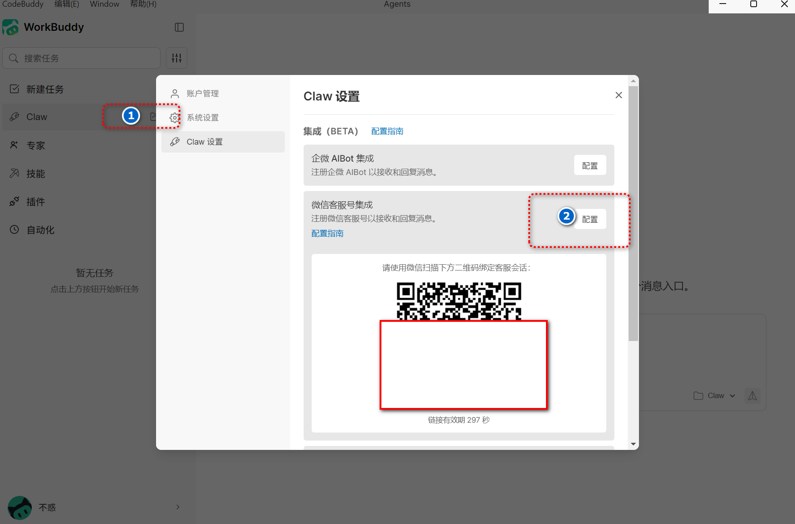
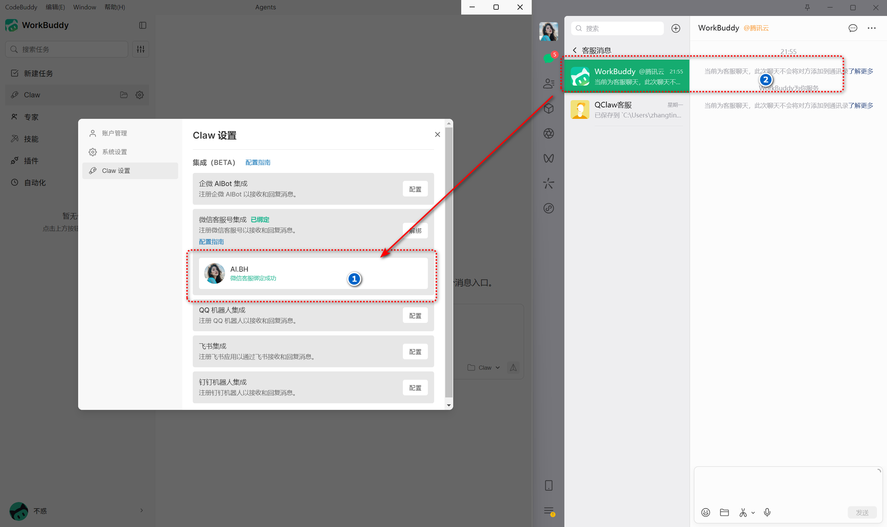
49.2 真实场景一：地铁上被老板追数据
下午 6 点刚刷卡进地铁，老板微信来了：「今天的销售数据出了吗？做个简报表发群里。」——掏出手机发条微信，家里的电脑自动开始干活，到公司前报表已经躺在群里。以前要远程桌面、网盘同步或拜托同事开电脑；现在只要电脑在线，微信一句话搞定。
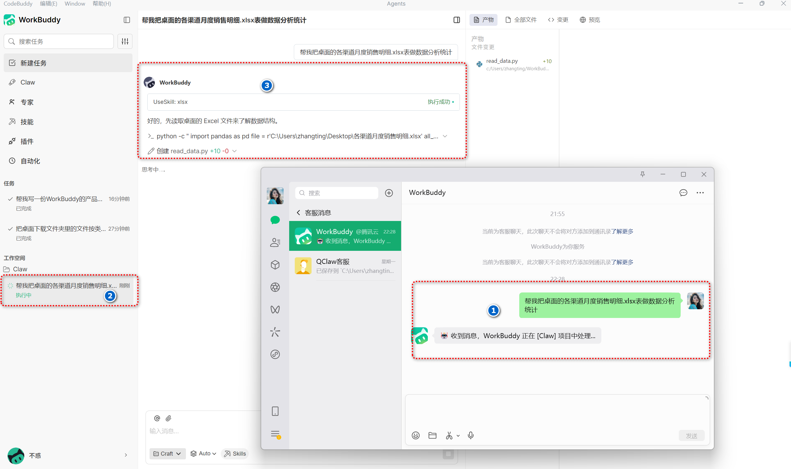
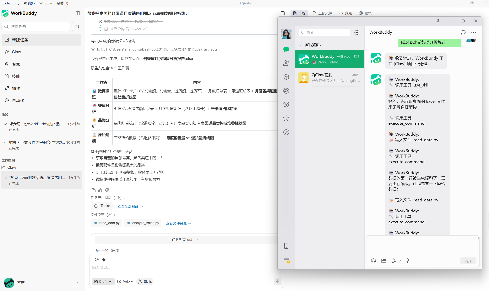
49.3 真实场景二：远程找资料
电脑里存了一堆照片，只记得拍摄对象却忘了放哪个文件夹——直接在微信里告诉它。返回大体积文件时，让它接入腾讯专为智能体打造的「Agent Mail」服务，把资料打包成 zip 直接发到手机邮箱里。
49.4 微信支付 AI 专属卡（彩蛋）
接入微信支付「AI 专属卡」后，可把团队下午茶交给它：3 点送达、10 人份、人均 30 元。它按预算、距离、评分比对蛋挞、披萨等一串选项，确认后推进到支付前，最后付款仍由人来决定。目前使用场景还比较单一，更像是附加能力。
微信遥控依赖"电脑在线 + 网络连通"。出门前确认电脑不休眠（见 51.1 锁屏远程），否则指令会排队到你回家才执行。
定时任务三板斧
50.1 入口与配置
- 左侧「自动化」面板 → 新建定时任务
- 选择时间、写清楚要干啥、选择生效日期
- 保存。到点自动执行，结果推微信 / 腾讯文档 / 企微
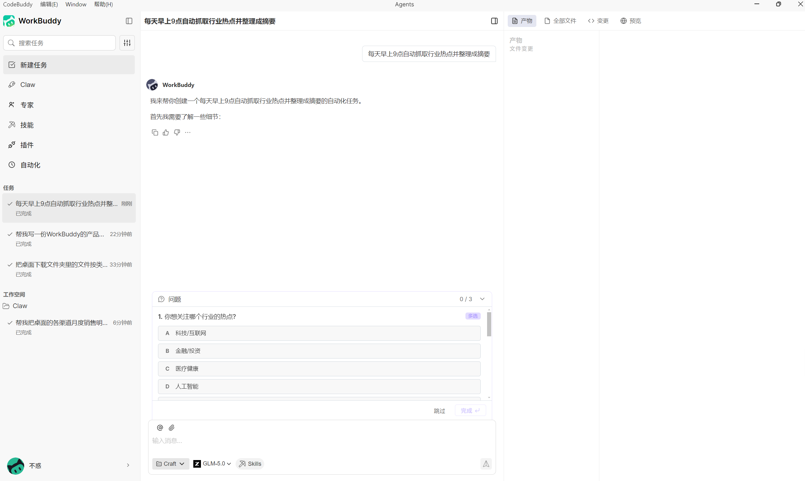
50.2 真实三件套（每天自动跑）
| 时间 | 任务 | 效果 |
|---|---|---|
| 8:30 | 抓行业新闻，整理 300 字早报推微信 | 到公司手机已躺好，不用自己翻新闻 |
| 12:00 | 汇总上午待办，生成进度清单发群 | 同事以为你午休还在干活 |
| 17:30 | 整理当天工作日志，生成日报草稿 | 下班前改两句就能发 |
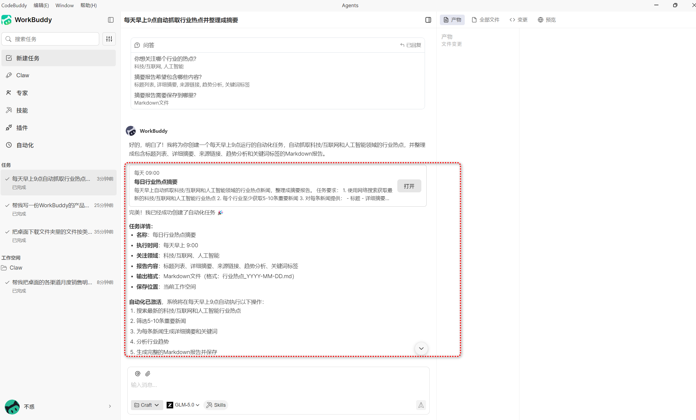
50.3 效率账
这不是"定时提醒你去干活"，是"定时让 AI 自己干活"——你什么都不用做，到点东西就出来了。如果你手头有每天要做的固定工作（日报、早报、数据汇总），这个功能三天就能帮你省出两小时。提示词要写清"输入来源 + 输出形式 + 推送目的地"。
锁屏远程与默认路径
51.1 锁屏远程
系统设置里有「锁屏远程」选项，开启后电脑即使锁屏也不会进入休眠，方便你出门在外通过手机远程操控。配合微信遥控（49 章），真正实现"人走电脑在"。
51.2 默认工作存储路径
WorkBuddy 的默认存储路径对很多非技术背景用户不友好。在设置里可改成自己熟悉的路径，任务产物就不会"找不到在哪"。
左侧边栏任务列表右键「打开文件夹」即可看到 Agent 产出的结果；也可手动把任务保存到指定工作空间，开启多个 Agent 协作。
实战：高考作文批改助手
52.1 背景
英语老师日常绕不开批改作文：看内容、结构、语言、语法，还要写能看懂的提分建议。把新高考 I 卷评分标准图片喂给 WorkBuddy，用大白话让它做一个带 HTML 界面的批改助手，可批量读取作文、输出分数、优缺点和提分策略。
52.2 可直接复制的 Prompt
我是一名英语老师，请为我开发一个「新高考作文智能批改 Skill」，深度阅读我上传的两张《英语试题评分参考》图片，将其中的五个档次评分标准（1-15 分）内化为你的打分逻辑。功能要求： 1. 界面设计：生成一个简洁的 HTML 交互界面。 2. 批处理能力：支持调用 macOS 自带 OCR，读取指定文件夹内的所有作文。 3. 输出规范： - 自动评分：根据标准（字数、语法丰富性、连贯性）给出具体分值。 - Pros & Cons：用 bullet points 列出本文的 3 个优点和 3 个改进点。 - 提分策略：针对该学生的档次，给一句最核心的提分建议。 4. 交互逻辑：批改结果以卡片形式排列，每个卡片下方留一个「老师确认」按钮。 5. 交付物：请直接生成这个 Skill 的代码文件，并告诉我如何放置到 WorkBuddy 的技能目录中。
52.3 它怎么拆任务
- 读取评分标准，提取 1-15 分的档次规则
- 设计作文读取逻辑，支持批量读取 .txt
- 为每篇作文生成分数、优点、问题、提分建议
- 用 HTML 做卡片式页面，方便老师复核、打印
老师从"从头批到尾"变成"复核、调整、打印"。判定权仍在人，但最耗耐心的第一遍筛选归类，AI 已替你做好大半。
实战：名人访谈亮点挖掘
53.1 思路
顺着"理解新闻价值"的思路，让 WorkBuddy 开发一个 Skill：读取长篇访谈（txt/md/srt/vtt），自动提炼金句、新信息、值得展开的选题，并给出后续补充信息——而不是做普通摘要。
53.2 可直接复制的 Prompt
请帮我开发一个「名人访谈亮点挖掘」Skill，并自动安装好。作用：读取一篇名人访谈（支持 txt、md、srt、vtt），自动从长访谈里提炼真正值得看的内容，以卡片形式展示。不要做普通摘要，只输出有价值的信息，包括： - 金句 - 新信息 - 值得展开的选题 - 有意思的观点 每张卡片需保留原文、说话人、为什么值得关注，以及如果继续写这篇内容还需要补充哪些信息。
53.3 实测效果
- 输入约 60 分钟扎克伯格播客转写：准确提取到"承认 Llama 4 开发未达预期、并重组超级智能实验室"的具体信息。
- 输入 Sam Altman 万字访谈：抓到谈 Codex「YOLO 模式」、合成数据、Agent 访问电脑权限等细节，并标出后续值得补充的信息。
Skill 创建方法论
54.1 内置 skill-creator
WorkBuddy 内置了 skill-creator Skill 帮你创建专属技能，连模板都准备好了。点击右上角「添加技能」，用自然语言描述即可。
54.2 何时该做成 Skill
重复的判断规则
每次都按同一套标准做事（评分、分类、筛选）
可复用小工具
同事或未来的你也会用
经验可内化
把"专家怎么判断"写成逻辑
54.3 安装位置
生成的 Skill 代码文件放置到 WorkBuddy 的技能目录（用户级通常为 ~/.workbuddy/skills/，项目级为 .workbuddy/skills/）。安装后在主聊天界面选择该技能即可调用。
别人（或一周后的你）拿到它，不用听你解释就能直接用，并且产出稳定。先在小样本上跑通，再扩大使用范围。
真人级自动化：邮件对账
55.1 痛点
每月和供应商对账：邮件发来账单发票，一封封搜索供应商名、下载附件、打开表格核对、回复"确认"，再等发票下载……光上周就花了 7 小时核对 + 9 小时发起付款，整个人被邮件淹没。
55.2 预处理（人在环）
- 企业邮箱里设置：带附件的邮件自动归档到「星标邮件」文件夹，AI 只处理真正要关注的
- 让 WorkBuddy 登录企业邮箱、下载所有供应商对账单附件
55.3 两条铁律（安全）
- 不自动删除任何邮件
- 不自动发送任何邮件
55.4 调试细节
- 一开始 AI 把邮件正文图片也当附件下载 → 指令限定"只认 .xlsx 或 .pdf"
- 多附件邮件要自动新建文件夹存放，否则堆一起乱掉
- 封装成 Skill，列出所有供应商名，"批量执行"
55.5 经验
有的供应商邮件标题写简称、有的不写公司名，AI 搜不到。后来要求供应商统一主题格式，并在指令里加入所有可能的别名和简称，容错率一下子上去。第一次批量执行发现没下载全——幸亏提前让 AI 输出每一步执行状态表，人工一扫就发现。
真人级自动化：键鼠模拟
56.1 场景
每月发起付款 OA：从业务后台一个个搜索供应商名、找对应分钟数、截图保存。几十个供应商挨个搜索、截图、重命名、存到指定文件夹，每次花大半天。
56.2 让它模拟真人
登录后台 → 搜索框输入名称 → 点击搜索 → 等加载 → 截取指定区域 → 图片存到文件夹。先小范围试跑——只循环 5 个供应商。
56.3 调试坑
有的只截到页面头部，有的把登录页也截进去了。对策：明确告诉它"等数据加载完再截""跳过登录页"，并在指令里指定截图区域坐标。不要急着骂它，而是不断提问"你为什么截到了登录页？"逐步修正。
真人级自动化：文件大扫除
57.1 场景
电脑里一片"素材废墟"：横跨一年半、命名规则前后不一致、有的夹日期有的夹产品名还带奇怪分隔符。平时找张图靠记忆力和运气。
57.2 隔离隐私工作空间
先在 WorkBuddy 划出一个隔离隐私的工作空间，再让它按复杂条件直接大扫除——提取特定人物、合并同一产品、去掉分隔符、统一日期格式。
57.3 危险操作的兜底
帮我把 with Liz 的专门拎出来放一个文件夹，产品的放另一个文件夹，同一产品多个文件夹的合并为一个；归档的 RAW 只保留与成片同名那些，其他删除；分隔符「_」全部去掉，文件夹命名统一为 yyyymmdd。
面对含"删除"的危险要求，它没有莽撞 rm -rf，而是触发二次确认机制，并在对话框顶部透明展示预估账单（预计消耗 5.37~53.6 积分）。确认无误后，喝口水功夫目录已收纳整齐。整套流程实际消耗约 95 积分——对比每日签到 100-150 免费额度，轻度本地整理基本够用。
- 先划隔离工作空间，不碰隐私目录
- 大目录先小样（3 个文件）验证规则再扩大
- 每次指令明确"输入在哪、输出在哪、不改原文件"
- 危险操作务必开二次确认
官方定位、界面与文档导航
本章内容整合自 WorkBuddy 官网（workbuddy.cn 国内站 / workbuddy.ai 国际站）与官方教程（docs/workbuddy/Overview 与 docs/zh/workbuddy/Overview）。作为全书的"官方权威速查"，与第一部分的基础认知互为补充、不重复。
58.1 官方一句话定位
WorkBuddy 是腾讯出品的全场景 AI 办公工作台（国际站表述为"全场景职场 AI 智能体桌面工作台"）。官网的核心理念只有三句：
说出要求
用一句话描述需求，无需复杂操作
开始执行
像同事一样自主规划、拆解并执行复杂任务
交付成果
产出可验收的文档、图表、代码等完整成果
"完美连接腾讯办公生态，你的办公好搭子。"——WorkBuddy 不是给技术人员专用的复杂工具，而是面向普通职场人的 AI 工作台：自然语言下达任务、多 Agent 并行执行、最终交付文档或图表。
58.2 与传统 AI 对话的本质区别
这是理解 WorkBuddy 价值的关键。传统 AI 聊天工具"只给建议"，WorkBuddy"真的把活干完"：
| 维度 | 传统 AI 对话 | WorkBuddy |
|---|---|---|
| 能力边界 | 只能对话，提供建议 | 能够实际执行任务 |
| 文件操作 | 需要手动操作文件 | 自动操作本地文件 |
| 任务复杂度 | 单步骤简单任务 | 多步骤复杂任务 |
| 最终产出 | 输出文字回复 | 交付可验收的结果 |
58.3 界面三大区域
WorkBuddy 桌面端由三个核心区域组成，理解它们能让你更快上手：
| 区域 | 位置 | 功能 |
|---|---|---|
| 侧边栏 | 最左侧 | 显示任务列表（按文件夹分组），支持搜索和管理；底部显示用户头像 |
| 对话区 | 中间 | 核心交互区域，包含任务标题栏、消息列表和输入框 |
| 结果区 | 右侧面板 | 展示产物、全部文件、变更、预览等视图 |
58.4 官方文档导航（建议阅读顺序）
官方教程给出了标准入门路径，建议在读完本绿皮书第一部分后对照官网实操：
| 顺序 | 文档 | 你将学到 |
|---|---|---|
| 1 | 快速开始 Quickstart | 如何进入 WorkBuddy、发起第一个任务、界面四大区域 |
| 2 | 创建任务 Create-Task | 选择工作模式、填写任务内容、补充上下文 |
| 3 | 任务管理 Task-Management | 查看任务列表、按状态筛选、继续处理已有任务 |
| 4 | 任务对话 Conversation | 持续追问、上传文件、使用顶部操作 |
| 5 | 结果查看 Results | 查看产物、全部文件、变更和预览 |
workbuddy.cn 为国内站点，workbuddy.ai 为国际站点，内容与文档结构基本一致；国内用户访问 .cn 即可，海外用户可访问 .ai。两个站点的文档均提供中文，路径为 /docs/workbuddy/Overview 与 /docs/zh/workbuddy/Overview。
定价档位与用户口碑
59.1 官网公开档位（参考）
以下为官网首页公开显示的档位信息，价格可能随活动调整，请以 workbuddy.cn 官网实际页面为准。WorkBuddy 采用订阅制，并配合积分（额度）消耗机制。
| 档位 | 现价 | 原价 | 适用 |
|---|---|---|---|
| 基础档 | ￥70 / 月 | ￥99 / 月 | 个人日常办公轻度使用 |
| 进阶档 | ￥140 / 月 | ￥199 / 月 | 重度使用 / 多场景并行 |
提示：官网还提供小程序端，无需下载即可快捷体验；内部员工反馈"已弃用 Cursor 全部切到 CodeBuddy/WorkBuddy"。具体权益与积分规则详见官网与产品内说明。
59.2 用户口碑（来自官网真实评价）
官网首页收录了来自腾讯内部及真实用户的反馈，最有说服力的几则：
普通职场人
"WorkBuddy 最打动我的地方，是它不像普通 AI 聊天工具只给建议，而是真的能把办公任务做完。从整理文件、分析表格到生成报告，都可以用一句话启动。"
企业推广负责人
"我们除了自己用，也和 15 个部门做了推广应用，新出的小程序端，不需要下载即可快捷体验，同事们反馈也是有 AI 搭子了。"
内部大规模使用
"我们内部日常办公大规模的在用 WorkBuddy，如 PPT 制作、文档数据分析、图片设计，单个环节提效在 90% 以上。"
零基础小白
"我一行代码不会写，想给客户还有母校做 Web 应用一年多了，借助 WorkBuddy 一周实现，直接用内置的'专家'，对于小白真的太友好了。"
这些评价反复出现三个关键词：一句话启动、真把活干完、腾讯生态打通。这正是 WorkBuddy 区别于普通 AI 聊天工具的核心价值，也是本绿皮书贯穿始终的方法论。
59.3 一句话总结
如果说前面的章节是"怎么用好 WorkBuddy"，那么这一章就是"WorkBuddy 官方到底怎么定义自己"。记住它的三句话——说出要求、开始执行、交付成果——你就抓住了这款产品最本质的设计哲学。
连接器官方详解：把外部服务接进 AI 工作流
60.1 连接器是什么
连接器（Connector）是 WorkBuddy 与外部服务之间的桥梁，把外部能力引入 AI 工作流，让你无需手动切换工具即可完成跨平台操作。官方明确：技术形态分为两种——MCP + CLI（标准化协议）与 Skill + CLI（内置脚本），二者在数据收集和权限边界上遵循一致原则。
连接器 = 让 WorkBuddy 直接读写你在第三方平台的数据与能力，彻底告别复制粘贴和文件来回传输。
60.2 已支持的连接器
官方文档列出当前已内置的连接器：
| 类别 | 连接器 | 能力举例 |
|---|---|---|
| 腾讯生态 | QQ 邮箱、腾讯文档、腾讯乐享、腾讯会议、TAPD、腾讯网盘 | 读邮件、读写文档、检索知识库、转写会议、查需求 |
| 自定义 | 支持自定义连接器 | 接入你自己的系统 / API |
注：新增连接器将同步更新隐私协议相关条款；更多连接器（飞书、钉钉、Notion、GitHub、企查查等 30+）可通过 MCP 协议接入，见第六十二章。
60.3 四大应用场景
数据查询
从外部数据源获取信息：查询数据库、检索文档
服务调用
调用第三方 API：发送邮件、创建日程
文件管理
访问云端存储与文件系统：读取网盘、上传附件
消息通知
与 IM 集成：发送企业微信 / 飞书消息
60.4 实战：连接 QQ 邮箱（官方五步）
+ 发起连接。授权成功时务必点击浏览器弹窗中的"打开"完成连接；取消或关闭网页可能导致操作中斷，需重新配置。
连接后直接用自然语言即可："帮我汇总今天 QQ 邮箱里来自张三的邮件""把这封邮件的附件下载到桌面"。
官方定价与版本权益：怎么选最划算
以下档位与权益整理自 WorkBuddy 官网（workbuddy.cn），仅供选型参考，最终请以官网实时信息为准。
| 版本 | 价格 | 额度 | 核心权益 |
|---|---|---|---|
| 个人体验版 | 限时免费 | 每月 500 Credit | 零门槛体验 AI Agent 能力；问答频率限制 |
| 个人专业版 | ¥58 / 人 / 月 | 每月 2000 Credit | 对话及问答不限频；技能市场与连接器；专家团；个性记忆；可购加量包 |
| 企业旗舰版 | ¥198 / 人 / 月（1 坐席起购） | 每坐席 2000 Credit | 所有基础及高阶能力；企业专家；安全与审计；组织架构管理；专属网络访问；专属企业插件；专属服务实例；数据租户隔离 |
| 企业专享版 | ¥316 / 人 / 月（100 坐席起购） | 每坐席 2000 Credit | 单租户专享部署；上述全部企业特性 |
个人尝鲜：先用体验版跑通工作流；重度个人用户：专业版不限频 + 2000 Credit 性价比最高；团队 / 企业：旗舰版起购，重点看安全审计、数据租户隔离与组织架构管理；对合规要求极高选专享版单租户部署。
61.1 关于 Credit（积分）
Credit 是 WorkBuddy 的统一算力额度，对话、任务执行、生成内容都会消耗。专业版 / 企业版每月发放固定额度，超额可购加量包；体验版额度有限且有频率限制。复杂任务（深度研究、长代码、大量文件处理）消耗更多，建议重度用户预留余量或用加量包。
61.2 腾讯生态连接器（权益内含）
专业版及以上可使用的连接器涵盖：腾讯文档、腾讯乐享知识库、QQ 邮箱、腾讯会议、ima 笔记、微信、企业微信等，打通办公 IM、文档、邮箱、会议、知识库等常用工具。
MCP 协议官方解读：AI 的"USB 接口"
62.1 MCP 是什么
MCP（Model Context Protocol）是一种开放协议，官方比喻为AI 的"USB 接口"——数据库、Jira、浏览器、地图、股票数据、内部 API，都能标准化地"插"进来使用。
核心价值
- 上下文共享：向模型提供文件内容、数据库记录、业务信息
- 工具调用：把文件读写、接口调用、消息发送暴露给模型
- 可组合工作流：多个工具串联成自动化流程
- 数据控制：支持本地或受控运行，兼顾灵活与安全
62.2 Skills 与 MCP 的区别
| 对比维度 | Skills | MCP Server |
|---|---|---|
| 本质 | AI 能力封装（提示词 + 流程） | 工具调用协议（标准化工具接口） |
| 安装 | 技能市场一键安装 | 通过 mcp.json 配置 |
| 执行 | WorkBuddy 内部执行 | 外部 MCP Server 程序执行 |
| 适用 | 封装知识与操作流程 | 提供标准化工具调用能力 |
两者可组合：一个 Skill 内部可以调用已配置的 MCP 连接器提供的工具。
62.3 配置级别
| 级别 | 作用范围 | 配置文件 |
|---|---|---|
| 用户级 | 配置一次，所有项目复用 | ~/.workbuddy/mcp.json |
| 项目级 | 仅当前项目生效 | 项目 /.workbuddy/mcp.json |
62.4 实操：5 分钟接入企业微信机器人
获取企业微信群机器人 WebHook URL → 进入侧边栏「插件」→ 右上角「MCP 服务器」→「配置 MCP」→ 填写如下 mcp.json：
{
"mcpServers": {
"wecom": {
"command": "uvx",
"args": ["wecom-bot-mcp-server"],
"env": { "WECOM_WEBHOOK_URL": "your-webhook-url" }
}
}
}保存后查看状态：绿色 = 连接成功，红色 = 配置异常。随后自然语言调用："请通过企业微信机器人通知：正式产品已发布"。
62.5 结合腾讯云生态
| 腾讯云产品 | 用途 |
|---|---|
| 腾讯云 Lighthouse | 实现 AI 工具云端运行，7×24 小时在线 |
| 智能体开发平台 ADP | 企业级权限控制、数据隔离、与企业微信深度融合 |
V5.3.5「人机双写」实测全记录
2026 年 7 月 30 日，腾讯 WorkBuddy 发布 V5.3.5，联合腾讯文档推出「人机双写」协同编辑能力，在业内首次做到"人人、人机、机机"多端同步协同，推动 Office 进入 AI 原生协作时代。本次升级最直观的变化：把一套完整文档编辑界面搬到了 AI 对话框旁边——左侧继续与 AI 对话，右侧直接显示可编辑的腾讯文档。
① 全格式覆盖（Word / Excel / PPT / Markdown，兼容本地与在线）；② 精准框选修改（只改你想改的地方）；③ 多人 + AI 实时协同（共创内容上腾讯文档后，团队共享同一个熟知上下文的 AI）。
63.1 Word 实测：左边聊，右边直接改
实测者上传一篇刚写完的文章，右侧出现可直接编辑的腾讯文档：
- 错别字检查报告：AI 先生成逐条报告，确认"改"后一次性同步到原文（不直接乱改）。
- 框选生成表格：框选段落中的测评数据，输入"生成表格"，AI 整理成表并直接插入对应位置。
- 生成配图：框选文字让 AI 配图，生成后直接插入文档，无需先下载再调整。
- 总结添加文末：读完全文生成总结，直接接在正文后方。
- 读取批注照改：在原文档留批注（补备选标题 / 换结语角度 / 改病句），让 AI"按批注修改全文"，它识别意见并在对应位置完成修改。
63.2 Excel 实测：行程单扔进去，顺手做了两张图
- 读取报销行程单与发票，识别行程与金额，整理进一张表格。
- "把金额大于 50 元的标红" → AI 直接修改对应单元格格式。
- "生成可视化图表" → 按金额差异生成柱状图，按服务商占比生成饼图，全程在右侧表格内完成。
63.3 PPT 实测：一份 PDF，复刻成风格统一的 PPT
实测者用一份往年 PDF 总结，让 AI 复刻视觉风格接近的 2026 年终总结模板：
- 保留原文件整体风格（统一版式、白色线条插画），不混入风格冲突的 AI 写实图。
- 指定页面加配图 → 生成图片沿用白色线条插画风格。
- "年度核心数据"页加表格 → 表格参考原 PPT 配色与版式调整表头、边框、文字。
实测中 AI 误判文中"SpaceXAI"为公司名错误并建议修改，实际是 AI 自身知识判断出错。涉及新公司、新模型、最新行业信息时，务必逐项核对，不能看到"已直接改进原文"就默认一定正确。编辑入口更方便 ≠ 人工审核可省略。
多智能体并行与专家团：组建你的 AI 虚拟团队
64.1 WorkBuddy 能并行处理多个任务吗
能。多任务并行处理是 WorkBuddy 作为"AI Agent 办公新范式"的核心能力之一。它支持组建 100+ 领域专家组成的虚拟团队，多个 AI 专家并行协作，而不是串行等待。
64.2 多专家并行架构
用户一句话指令，系统自动调度多个专家同时工作。典型场景：
软件开发团队
产品定需求、架构师设计拆任务、工程师批量实现、QA 验证质量——四角色并行，缩短交付周期
内容创作团队
视频生成、图文创作、智能剪辑、跨语言素材改编多专家同时处理不同平台适配，批量产出
64.3 专家团 vs 单专家
第九章已介绍专家系统：把行业、岗位、输出风格固化进"专家"，避免每次重复解释。进阶玩法是专家团——按职能组建多个专家协作；企业版支持自建专家、团队共享，部门全员共用一套配置，输出风格高度统一，减少审稿成本。
64.4 与 Teams 团队空间衔接
个人用法只发挥三成价值，Teams 才是企业级终极形态：共享专家库、项目共用记忆、全链路任务流转（需求→文档→设计→开发）、权限分级管理。多智能体负责"并行干活"，Teams 负责"团队协同与沉淀"，两者结合即从个人工具升级为企业中台。
先用单专家跑通一个高频场景（如周报、会议纪要），再扩成专家团并行，最后用 Teams 把流程固化给团队。不要一上来就铺满 100 个专家。
腾讯官方媒体实战图鉴与权威信源
本章所有配图均抓取自腾讯官方媒体：腾讯云开发者社区（cloud.tencent.com）、腾讯新闻 / 腾讯科技（new.qq.com）、WorkBuddy 官网（workbuddy.cn / workbuddy.ai）以及 WAIC 2026 官方报道。本书正文以官方信源为首要依据，自媒体内容仅作辅助参考，不采纳任何未经官方证实的营销表述。
65.1 安装与产品界面
WorkBuddy 是桌面客户端，下载安装包（Windows / macOS，约 150–180MB）后双击安装、微信扫码登录即可。新用户注册赠送免费 Credits 体验额度。
65.2 一句话整理乱成一团的文件夹
把杂乱的下载文件夹丢给 WorkBuddy，用一句话「按类型分类」，它会自动识别路径、读取文件属性、一键完成整理——几十个文件十几秒搞定。
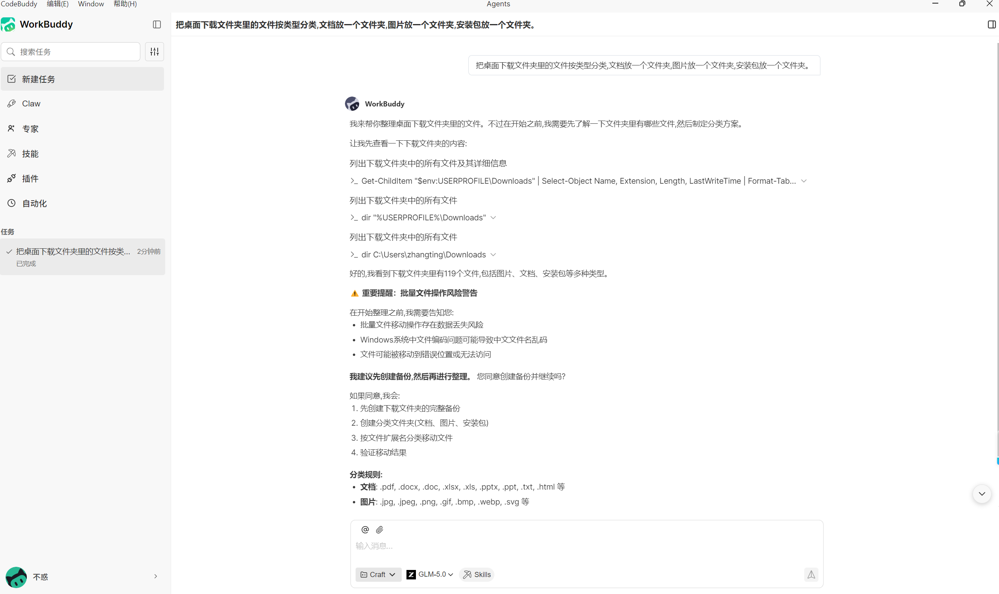
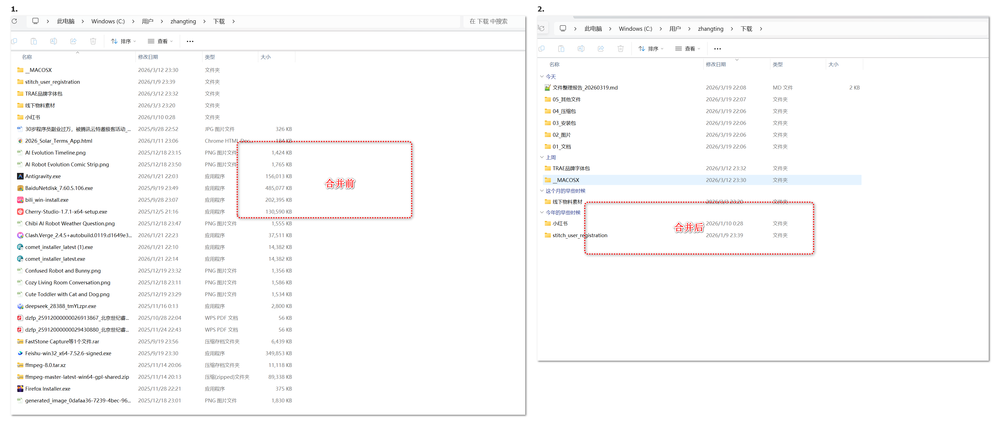
65.3 文档与报告生成
让 WorkBuddy 写产品说明文档、分析报告，生成的内容直接保存为本地 Word / Markdown，拿来就能改。
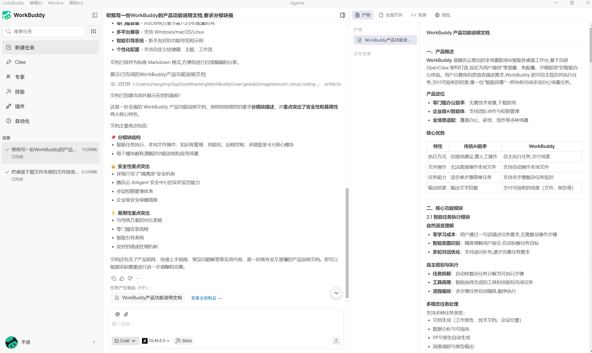
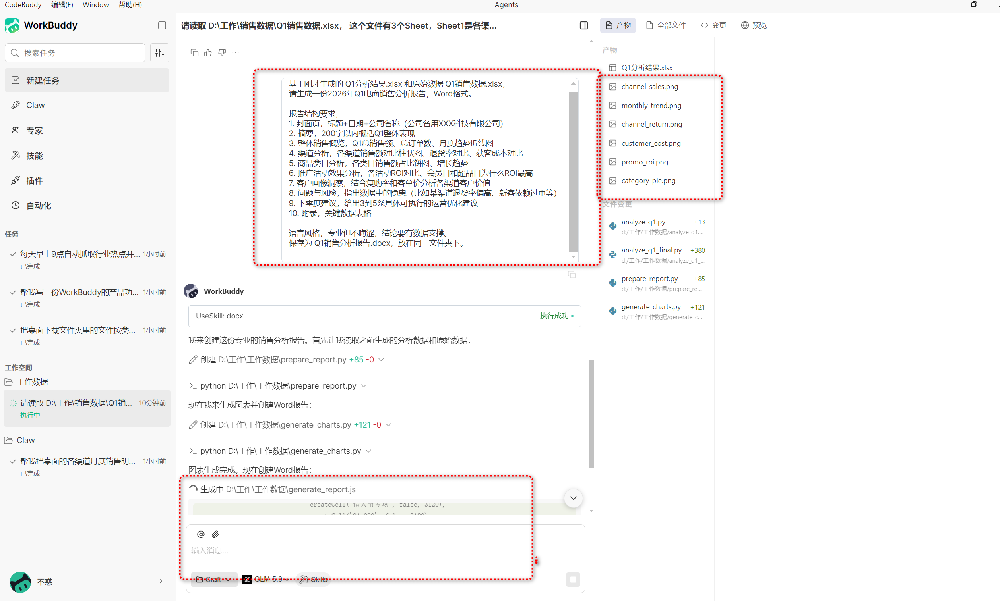
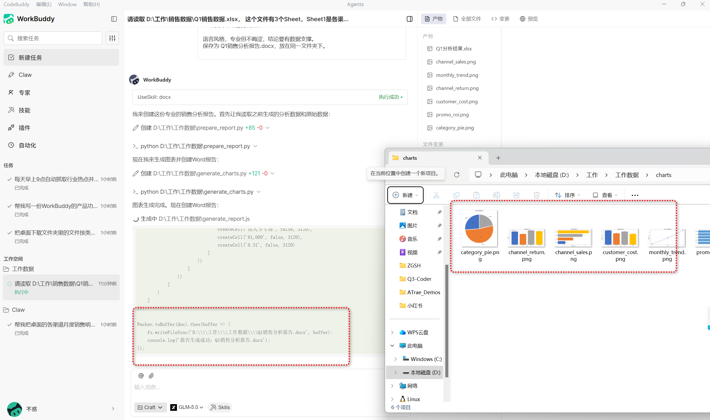
65.4 微信遥控 ClawBot
右上角 Claw 设置 → 微信客服号集成，手机扫码后，人在外面用微信发一句话，家里的电脑就自动开工。
65.5 定时自动化任务
左侧「自动化」面板新建定时任务，设置一次，每天自动生成早报 / 周报、抓取竞品、整理会议纪要，结果自动推送到微信 / 腾讯文档 / 企微。
65.6 数据分析与 Excel
给 WorkBuddy 一份原始表格，它能自动拆解执行计划、清洗数据、聚合分析、生成图表并导出 .xlsx。
65.7 PPT 一键生成
一句提示词即可生成 PPT：框架清晰、图表自动嵌入，细节手动润色后即可交付。
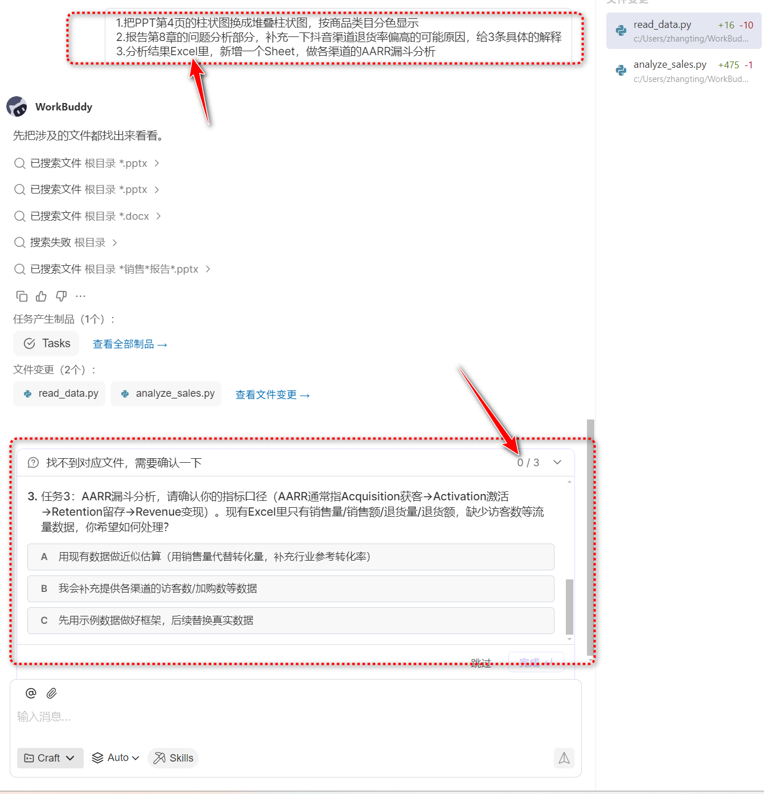
65.8 进阶避坑实录
官方实测也记录了踩坑点：装插件失败、脚本报缺模块等环境依赖问题，以及「WorkBuddy 像天赋高但未发育完全的新人」的公允评价——能力边界仍在本地文件操作范围。
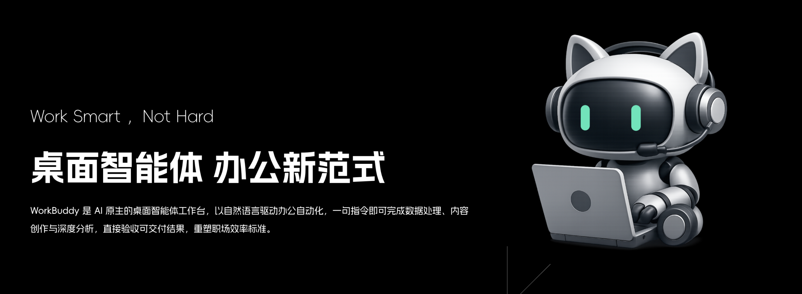
65.9 权威媒体报道索引
以下为腾讯官方媒体对 WorkBuddy 的权威报道，书中相关章节均以这些信源为准：
- 腾讯新闻 / 腾讯科技（2026-07-30）：WorkBuddy 发布 V5.3.5「人机双写」，联合腾讯文档实现 AI 与原文档共同创作，业内首次做到「人人、人机、机机」多端同步协同。腾讯新闻
- WAIC 2026 官方报道（中新网，2026-07-18）：WorkBuddy 展台展示「从一句话到交付」的全场景职场 AI 智能体；中国信通院与腾讯联合发布基于 WorkBuddy 的「AI 航海家+」，覆盖七国出海决策支撑。腾讯新闻
- 鸿蒙 PC 版上架（2026-07）：WorkBuddy 成为鸿蒙平台首个桌面办公智能体，完成手机 / 平板 / PC 鸿蒙全终端覆盖。腾讯新闻
- 腾讯云开发者社区：持续发布官方实战教程（QQ 机器人接入、HTML 公网部署、自动化工作流、小程序零代码开发等）。腾讯云开发者社区
对外分享或引用 WorkBuddy 数据时，优先引用上述腾讯官方媒体报道与官网数据，避免使用未经验证的第三方口径。
官方更新日志全收录（V5.3.8 → V4.8.0）
本章全部内容提取自 WorkBuddy 官方更新日志（workbuddy.cn/docs/workbuddy/Changelog）与 历史版本下载页（Download-History），为产品团队逐版本发布的权威记录，未做任何自媒体二次演绎。版本号与日期均以来源页面为准；官方建议始终使用官网最新版。
66.1 为什么要读更新日志
WorkBuddy 迭代极快——从 2026 年 3 月底的 V4.8.0 到 7 月底的 V5.3.8，四个月发布了 41 个版本。读更新日志能帮你：① 知道手里的功能是不是最新；② 避开"旧版 bug"误以为是自己操作问题；③ 发现隐藏新能力（如锁屏远程、扩展插件 Hook、人机双写、官网登录跳转）。建议每两周扫一眼，或订阅「强制升级」的关键版本。
66.2 版本演进六大里程碑
V4.8.0
V4.21.0
V5.0.0
V5.1.0
V5.3.3
V5.3.5
V5.3.8
66.3 近期版本关键特性速查（V5.3.8 → V5.0.0）
| 版本 | 日期 | 一句话关键能力 |
|---|---|---|
| V5.3.8 | 2026-07-30 | macOS 文件监听优化、产物索引膨胀修复、预热进程人设修复、历史消息展示修复 |
| V5.3.7 | 2026-07-29 | 小程序消息推送性能优化（剥离大字段）、20+ 项稳定性修复（Deeplink、端云同步、Windows 终端弹窗、SSE 乱码、PDF 预览等） |
| V5.3.6 | 2026-07-28 | 官网登录跳转（www.workbuddy.cn 无缝拉起桌面端）、图片模型能力提示优化、Ardot 画布新增真实图片/文本占位图双模式、10 项修复（流式乱码、深度思考覆盖、图表库加载等） |
| V5.3.5 | 2026-07-25 | 人机双写（联合腾讯文档）、扩展插件 Hook、Buddy AI 国内升配 |
| V5.3.3 | 2026-07-21 | 腾讯文档深度集成、PPT 生成插件预览、本地长期记忆、快捷键云同步、夜间折扣 |
| V5.2.6 | 2026-07-12 | 六档套餐文案与升级弹窗、积分消耗提示、专家腾讯专区 |
| V5.2.0 | 2026-06-30 | 视频生成模型升级、安全中心审计日志、启动链路优化 |
| V5.1.0 | 2026-06-13 | present_files 产物入口、企业自建 Skill/插件市场、沙箱安全可视化、微信支付注入 |
| V5.1.1 | 2026-06-14 | 微信支付内置插件、Token Plan、模型切换分隔线、models.json 热更新 |
| V5.0.0 | 2026-06-03 | Teams 团队协作、计划看板、资产库、任务流转、锁屏远程、多类型产物预览 |
66.4 完整更新日志（按版本，官方原文精编）
66.5 历史版本下载归档（节选）
官方归档了 9 个版本系列、共 47 个具体版本（macOS Apple 芯片 / Intel + Windows 64 位）。下表为各系列最新版本与安装包体积，体积随能力扩张显著增长（4.8.x 约 170MB → 5.1.x 约 370–485MB）。
| 系列 | 版本范围 | 最新版本 / 日期 | Windows 安装包 |
|---|---|---|---|
| 5.1.x | v5.1.0 – v5.1.2 | v5.1.2 / 2026-06-17 | 485.8 MB |
| 5.0.x | v5.0.0 – v5.0.5 | v5.0.5 / 2026-06-12 | 463.2 MB |
| 4.24.x | v4.24.0 – v4.24.8 | v4.24.8 / 2026-06-03 | 450.2 MB |
| 4.22.x | v4.22.0 – v4.22.16 | v4.22.16 / 2026-05-21 | 222.7 MB |
| 4.21.x | v4.21.0 – v4.21.1 | v4.21.1 / 2026-04-29 | 213.4 MB |
| 4.20.x | v4.20.1 – v4.20.4 | v4.20.4 / 2026-04-27 | 149.3 MB |
| 4.10.x | v4.10.0 – v4.10.4 | v4.10.4 / 2026-04-24 | 145.1 MB |
| 4.9.x | v4.9.0 – v4.9.6 | v4.9.6 / 2026-04-14 | 145.4 MB |
| 4.8.x | v4.8.1 – v4.8.3 | v4.8.3 / 2026-04-08 | 144.4 MB |
每个版本提供 macOS（Apple 芯片 / Intel）与 Windows 64 位安装包，下载链接均经官方校验。为获得最新功能与安全修复，建议始终从 workbuddy.cn 下载最新版。
66.6 小结
从 V4.8 的「能力市场」到 V5.3.5 的「人机双写」，再到 V5.3.8 的「稳定性全面攻坚」，WorkBuddy 用四个月走完了单兵 Agent → 团队协作 → Office 原生协同 → 大规模稳定性夯实 的四级跳。阅读本章时建议：记住四个关键版本号（V5.0.0 团队协作、V5.1.0 企业能力、V5.3.5 人机双写、V5.3.8 稳定基线），其余版本按需查表。遇到疑似 bug 时，先看对应版本是否已修复，再决定是否升级。
任务管理与对话交互——官方文档精读
本章内容综合自 WorkBuddy 官方文档 Task-Management（任务管理）与 Conversation（任务对话）两页，为产品团队发布的权威操作指南。
67.1 任务列表与搜索筛选
左侧边栏显示您创建过的所有任务，方便随时回看、继续处理和切换上下文。当前列表分为两个板块：
- 任务：展示最近访问或最近更新的任务
- 空间：按工作空间整理的任务，方便您在同一个项目下集中查看历史任务
每个任务卡片显示任务标题、当前状态、最近更新时间或创建时间。在任务列表顶部可使用搜索和筛选功能快速定位任务：按标题搜索、按状态筛选（进行中、已完成、失败等）、按日期筛选，或重置筛选恢复全部。
67.2 任务状态说明
| 状态 | 说明 |
|---|---|
| 进行中 | WorkBuddy 正在执行任务 |
| 已完成 | 任务已经执行完成 |
| 失败 | 执行过程中出现问题，任务未能完成 |
| 待处理 | 任务等待进一步处理或输入 |
| 规划中 | WorkBuddy 正在分析需求并整理执行思路 |
| 已归档 | 任务已被归档，用于后续查阅 |
67.3 常见管理操作
在任务列表中，您可以对每条任务执行以下操作：
| 操作 | 说明 |
|---|---|
| 置顶 | 将任务置于列表顶端 |
| 打开文件夹 | 打开任务所在文件夹 |
| 重命名 | 修改任务名 |
| 保存到工作空间 | 可开启多个 Agent 同时协作；在任务列表中持久保存；随时用 IDE 打开查看 |
| 分享任务 | 分享到任意渠道后，自动生成公开链接 |
| 删除 | 从列表中删除任务 |
| 归档 | 任务归档后可在「系统设置 - 数据管理」中查看已归档任务 |

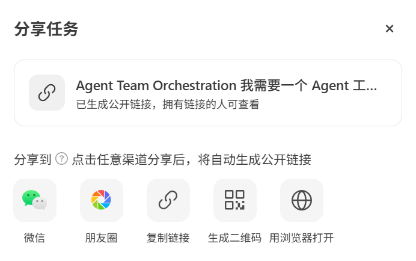

67.4 对话区顶部操作
对话区顶部除显示当前任务标题外，还提供以下常用操作（从左到右）：
- 对话内搜索：输入关键词快速查找目标对话内容
- 分享任务：自动生成公开链接，分享到任意渠道
- 历史提问：查看任务内历史对话记录，支持点击跳转
- 显示详情面板：打开右侧边栏，支持查看产物、全部文件、对话过程中的文件变更和内置浏览器
67.5 消息发送与追问
在对话区底部的输入框中，您可以随时发送新消息。适合直接发送的内容包括：
- 新需求：例如「再加一个饼图」「把字体调大一点」
- 修改意见：例如「表格按销售额排序」「报告加上执行摘要」
- 继续追问：例如「帮我导出成 PDF」「再分析一下环比变化」
WorkBuddy 会基于之前的对话上下文继续处理，无需重复描述背景。
67.6 支持的文件类型与隐私边界
除了直接输入文字，您可以补充文件或图片作为上下文：粘贴截图（Ctrl/Cmd + V）、上传文件（点击上传按钮或拖拽到输入框）。
支持的文件类型：PDF、Word、TXT、Markdown、RTF、Excel、CSV、TSV、PPT、常见图片（JPG/PNG/GIF/BMP）、ZIP/RAR 压缩包以及各类编程语言代码文件。
- 所有文件处理默认在本地完成，原始数据不上传云端
- 服务端仅处理数据片段，用后即弃，不保存也不用于模型训练
- WorkBuddy 只能访问你主动勾选授权的文件夹，系统敏感目录自动拦截，高危操作需二次确认
67.7 中断与继续
如果任务正在执行，输入框区域会显示停止入口，您可以随时中断当前执行。中断后仍然可以继续补充新的说明、调整需求后重新发送、基于已有内容继续推进任务。重点是保持连续对话，而不是每次都重新开始。
对于已经完成、失败或暂时中断的任务，都可以重新进入任务继续补充消息。适合继续处理的场景包括：任务第一次结果还不够完整想继续细化、任务执行失败后需要补充信息再试一次、想基于之前的结果继续扩展新的需求。
结果查看与产物管理——右侧面板全解
68.1 右侧结果区概览
任务执行过程中，右侧会显示结果区，用来查看 WorkBuddy 产出的文件、代码变更和内置浏览器预览的内容。您不需要离开当前任务，就可以一边看对话，一边查看结果。当前结果区主要提供四类内容：
- 概览：工作空间文件（查看当前工作空间中的文件内容）、浏览器（查看网页或可直接打开的结果页面）、变更（查看本次任务带来的文件修改）
- 产物：查看任务生成的文件和交付物
68.2 产物查看与分享
当任务生成文件、表格、文档或其他可交付内容时，您可以在「产物」中统一查看和分享。适合在这里查看的内容包括：文档类结果（Word、Markdown、PDF 等）、表格类结果（Excel、CSV 等）、演示文稿（PPT）、分析报告、自动生成的交付文件。
产物分享：在预览产物文件时，点击右上角分享图标，支持上传到我的云端网盘、腾讯文档、ima 知识库、乐享知识库，在其他端的应用内也可以查看。
68.3 网页预览（内置浏览器）
如果任务生成的是网页、页面原型或本地启动的 Web 应用，您可以在内置浏览器中直接查看效果。内置浏览器通常提供：当前页面地址、刷新入口、页面内容的实时查看。这适合用于确认页面结构、样式和交互结果是否符合预期。
68.4 工作空间文件
「工作空间文件」用于查看当前工作空间中的文件内容，适合在不离开任务的情况下直接浏览产出文件。这一视图通常包含：左侧文件列表或文件树、右侧文件内容区域、顶部已打开文件的切换栏。适合用来快速查看某个生成文件的完整内容、对照不同文件之间的关系、检查任务是否写入了正确的位置。
68.5 变更视图
「变更」视图用于查看当前任务带来的文件修改，方便您在接受结果前先做一轮检查。这一视图通常会显示：本次修改涉及的文件列表、每个文件的改动情况、选中文件后的具体变更内容。如果任务涉及代码开发、脚本生成或配置调整，建议优先在这里确认改动是否符合预期。
自动化任务官方完整指南——RRULE 速查与安全须知
本章综合自 WorkBuddy 官方自动化文档（codebuddy.cn/docs/workbuddy）与腾讯云开发者社区实战教程（article/2717329），覆盖自动化任务的完整配置流程、RRULE 语法速查与安全注意事项。
69.1 自动化概述
自动化在本地客户端保存定时任务配置（任务名称、prompt、调度规则、工作目录、执行状态等），在指定时间以您当前的登录身份自动发起 Agent 任务，按 prompt 执行查询、汇总、文件处理等工作。任务仅在配置的时间规则触发时执行，受任务频率、最大执行时长与系统并发控制限制。
69.2 创建自动化任务
- 打开自动化页面：在 WorkBuddy 左侧边栏找到「自动化 / Automation」入口，点击进入
- 点击「添加」：填写以下配置项
| 配置项 | 说明 |
|---|---|
| 名称 | 用于区分不同自动化任务 |
| 工作空间 | 指定任务执行目录及文件保存位置，默认自动分配 automation-xxxx 工作空间 |
| 提示词（Prompt） | 描述任务目标和输出要求，写得越具体越好 |
| 选择模型和技能 | 指定执行任务的模型和技能 |
| 定时规则（RRULE） | 设置执行频率和生效日期区间 |
| 推送到小程序 | 开启后，推送会通过安全链路把结果同步到云端，以便在小程序接收 |
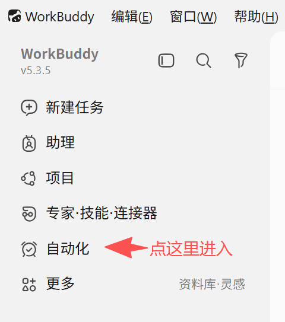
69.3 RRULE 执行频率速查表
| 频率 | RRULE 写法 | 示例 |
|---|---|---|
| 每天上午 9 点 | FREQ=DAILY;BYHOUR=9 | 每日市场主线扫描 |
| 每周一早上 8 点 | FREQ=WEEKLY;BYDAY=MO;BYHOUR=8 | 每周一自动生成周报 |
| 每工作日 18 点 | FREQ=WEEKLY;BYDAY=MO,TU,WE,TH,FR;BYHOUR=18 | 工作日下班前数据备份 |
| 每小时一次 | FREQ=HOURLY | 实时行情监控 |
| 每月 1 号 | FREQ=MONTHLY;BYMONTHDAY=1 | 月度财务汇总 |
69.4 任务模板
不想从零编写提示词？可直接使用任务模板，覆盖新闻推送、周报生成、体检预约以及学习计划等常见场景，选择后按需修改即可。
69.5 推送到 WorkBuddy 小程序
打开配置后，WorkBuddy 可在任务执行完成后自动将结果发送至 WorkBuddy 小程序，便于第一时间查看。
69.6 安全提醒与注意事项
- 信息收集与使用：账户身份信息用于识别任务归属，触发时沿用当前登录身份调用模型/工具/MCP/连接器；用户输入内容保存为任务名称、prompt 和调度说明；使用行为日志用于状态展示与审计
- 积分消耗提醒：积分消耗视任务复杂度而定——简单提醒类较低，代码巡检、文档汇总、连接器分析等可能产生较多 token 消耗
- 第三方共享：自动化调用外部模型、MCP、连接器、OAuth 平台或通知通道时发生数据共享
- 核心安全提醒：任务在无人值守下自动执行，请审慎设置涉及文件写入/删除/资金操作的 prompt
WorkBuddy 国际版上线与 SuperAI 2026 新加坡发布会
本章内容综合自腾讯新闻·腾讯云官方账号报道（2026-05-28）与腾讯云国际站新闻（SuperAI 2026 新加坡，2026-06-11），以及腾讯云国际版 Techpedia 完整指南（tencentcloud.com/techpedia/145043）。
70.1 WorkBuddy 国际版正式上线
2026 年 5 月 28 日，腾讯云在香港面向全球开发者发布多个 Agent 新品。继 CodeBuddy、DataBuddy、QClaw 面向全球用户发布之后，WorkBuddy 国际版正式上线，保留国内版特色的同时，深度适配 Slack、Telegram、Discord 等国际主流 IM 生态，手机遥控就能让 Agent 干活。
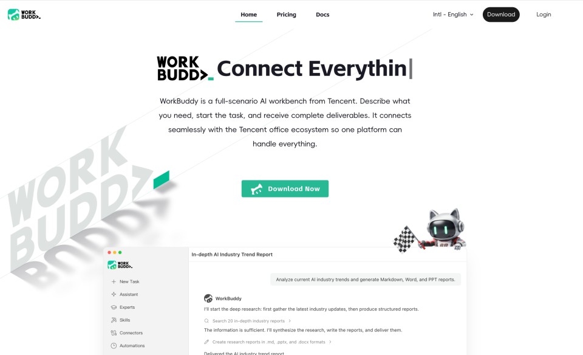
WorkBuddy 国际版官网：workbuddy.ai
70.2 SuperAI 2026 新加坡发布会
2026 年 6 月 11 日，腾讯云在新加坡 SuperAI 2026 大会上展示了 WorkBuddy 和 Miora 两大 AI Agent。腾讯云全球产品运营经理 Sherina Chen 表示：「AI 采用的下一阶段正走向能够自主执行复杂工作流的智能体，同时仍在人类监督的边界内运作。通过 WorkBuddy 和 Miora 这样的 Agent，我们正在帮助组织和专业人员释放更高的生产力。」
WorkBuddy 的核心定位在国际语境中被概括为：「Brief it, run it, get results」（说需求、自动跑、拿结果）。一条指令即可转化为完整的可交付成果，多个任务和 Agent 可同时并行运行，支持通过 API 灵活集成多种模型，可通过 Discord、Slack 和 Telegram 远程管理。
70.3 Skill / Expert / Expert Group 三层架构
腾讯云国际版 Techpedia 完整指南首次系统阐述了 WorkBuddy 的三层 AI 能力架构：
| 层级 | 定义 | 适用场景 |
|---|---|---|
| Skill（技能） | 独立能力——AI 能做的事，如生成产品描述或分析网页 | 需要特定 AI 能力时，从市场安装 |
| Expert（专家） | 能力 + 领域经验——不仅知道怎么做，还带来上下文知识 | 有明确问题或需求时，找到对应专家 |
| Expert Group（专家组） | 多个专家 + 协作流程——组装成有定义流程的协作工作流 | 复杂任务需要跨角色协作 |
例如，一个软件开发 Expert Group 可能包括：产品经理（定义需求）、架构师（设计并分解任务）、工程师（分批实现代码）、QA（验证质量），所有角色并行工作。这一架构意味着 WorkBuddy 可以从简单的一次性任务扩展到复杂的多角色项目——所有这些都由一条命令触发。
70.4 远程控制支持的 IM 平台
WorkBuddy 的突出功能之一是通过即时通讯应用程序进行远程控制。您可以通过以下平台从手机发送命令，WorkBuddy 将在您的桌面上执行任务：
- Slack
- Telegram
- Discord
- 微信助手 Bot
- 企业微信
- 钉钉
- 飞书
这意味着您可以：在外出时处理文档、在会议期间生成会议纪要、在通勤途中准备工作材料、随时随地发送任务和检查进度。
70.5 团队版定价与能力
对于团队，WorkBuddy 提供了团队版，在个人助手体验之上增加了管理和协作功能：
| 套餐 | 价格 | 每座席包含 |
|---|---|---|
| 月付 | $40 / 座席 / 月 | 每月 1,000 积分；访问共享的团队公共池；具有统一计费的管理控制台；支持以多种形式使用 IDE、CLI 和插件 |
| 年付 | $480 / 座席 / 年 |
团队版三大管理维度：管理人员（精细的权限控制，强化团队访问管理）、管理 AI（个人经验和配置可在整个团队中共享，积累成共享的公共资产池）、管理资金（完整的使用可追溯性确保每一笔消耗的积分都可见）。
70.6 国际版技能市场首批技能
WorkBuddy 技能市场首批上线的预构建技能包括：
- 电子商务 AI 选品：基于多平台数据和趋势分析生成高潜力产品列表，包括品类、卖点和定价参考
- 独立落地页生成：创建多语言落地页文案和结构，兼容 EdgeOne Pages 和 Lighthouse 部署
- 网页风险与内容保护：利用腾讯云 EdgeOne 检查网页内容合规性、链接有效性和风险关键词，及时预警
- IM 多平台客户服务：集成 Telegram、Discord 和企业微信，基于知识库处理客户咨询，并可选择转接人工客服
- 对话式 AI 客户服务：在官网或独立站点嵌入对话式 AI，理解上下文并访问知识库以提供持续支持
Agent Runtime 五大组件与 SkillHub 生态
71.1 Agent Runtime 全面升级
2026 年 5 月 28 日，腾讯云对 Agent Runtime 做了一次系统性升级，原生匹配 Agent 自主执行、休眠爆发等全新运行逻辑。Agent Runtime 包含五大组件：
71.2 五大组件详解
| 组件 | 核心能力 | 关键数据 |
|---|---|---|
| Agent SandBox | 升级「休眠唤醒」机制，让 Agent 像手机后台 App 一样随时挂起和恢复 | 唤醒仅需 50 毫秒，比业界主流快 20 倍；暂停时自动释放 70% 算力，不干活不计费 |
| Agent CBS | 优化「买 10G 用 2G」的传统预设模式，专为 Agent 新增按用量计费新模式 | Agent 的第一块「电脑硬盘」，用多少付多少 |
| Agent Bucket | 搭建人与 Agent、Agent 与 Agent 之间的共享空间 | 可为亿级用户提供专属云空间，原生多模态语义检索 |
| Agent Gateway | Agent 全程不接触凭证，每一次出站访问动态授权 | 企业可以安心让 Agent 访问内部系统和数据（QClaw 访问腾讯文档用的就是这套机制） |
| Agent Memory | 智能 Context 卸载 + 符号化记忆 | 长任务成功率提升 30%，Token 消耗降低 60%（已在 Claw Pro 一键启用，开源版本已上线） |
71.3 SkillHub 技能市场
腾讯云全栈产品 CLI 完成 Skill 化改造，统一封装为 Tencent Cloud Infra Skill，并在 SkillHub 上线。用户无需打开控制台或编写命令行，直接通过 Agent 就能完成资源查询、创建与部署。
SkillHub 上有 7 万多个经科恩与云鼎实验室双重安全检测的 Skills，上线 2 个月累计下载量超 3000 万次。
71.4 TokenHub 统一大模型访问
腾讯云 TokenHub 提供大模型 Token 调用的统一管理。通过 WorkBuddy，用户可以在单一平台上访问 14 个顶级 AI 模型，包括：
- DeepSeek-V4-Pro / Flash
- MiniMax M2.5 / M3
- Kimi K2.6
- GLM 5.1 / 5.2
每个模型提供 100 万免费积分作为起步。主要优势包括：一键模型切换（无需更改工作流）、稳定调用和可控成本、多场景扩展（从文本和图像生成到视频、音频和 3D 内容）。
71.5 云服务集成
WorkBuddy 与腾讯云基础设施深度集成：
- COS 对象存储：WorkBuddy 处理的文档、图像和生成内容直接存储在腾讯云 COS 中，确保安全性、持久性和全球加速访问
- Lighthouse 轻量应用服务器：支持一键部署 WorkBuddy 自托管服务或独立站点，2 核 4GB 计划足以实现流畅的智能体操作，24/7 实时监控
妙境 Miora——全场景创意智能体工作室
72.1 Miora 产品定位
WorkBuddy 团队最新产品——全场景创意智能体工作室妙境 Tencent Design Miora国际版同步开启邀测。Miora 与 WorkBuddy 共享同源 Agent 架构，但针对创意设计场景进行了深度优化。
Miora 官网：miora.design（在官网申请邀请码进行体验）
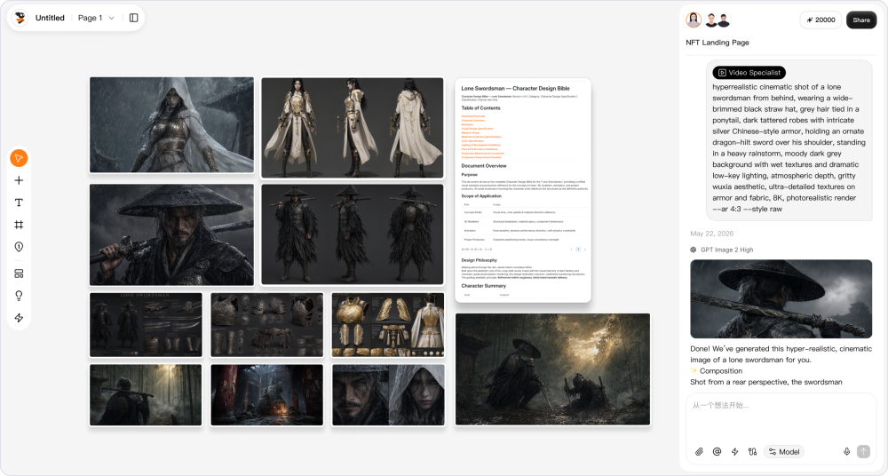
72.2 核心能力
Miora 搭载全球主流视觉模型，支持 AI 生成图片、视频、UI/UX 以及 3D 等多种模态的内容，专业设计师与零基础用户都能用 Miora 快速把创意兑现。
- 一次交付整套视觉：输入一份需求描述，Miora 按专业流程自行拆解，生成一整套品牌视觉全案——图片、视频、UI/UX、3D 资产。生成后还能局部修改、扩展尺寸，从需求到成品一站完成
- 有大脑、能记忆：Miora 先思考再干活，可以理解用户的审美偏好、设计规范和项目上下文，每次生成都更贴合用户风格，无需反复发送品牌资产
- 一张画布承载多模态创作：图像、视频、3D、文本以节点形式自由摆放。Agent 能读取画布上下文，理解你正在做什么和下一步的计划
- 支持个性化 Skills 定制：用户可与 Miora 协作沉淀自己的 Skills，并分享给团队和社区
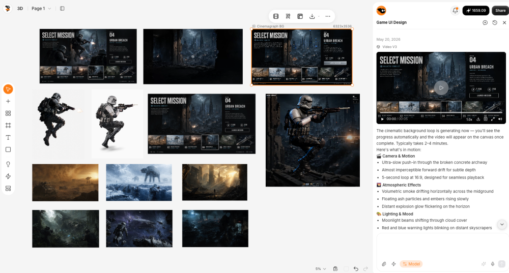
72.3 首批预置 AI 专家
Miora 首批预置品牌视觉全案、创意分镜、插画与视觉叙事等高频场景 AI 专家。从自然语言简报出发，Miora 调用合适的创意专家，生成可用于生产的图形、视频、3D 资产和用户界面，将创意周期从数周压缩到数小时。
72.4 WorkBuddy 与 Miora 的关系
| 维度 | WorkBuddy | Miora |
|---|---|---|
| 定位 | 全场景 AI 办公工作台 | 全场景创意智能体工作室 |
| 核心场景 | 文档、表格、PPT、数据分析、代码开发 | 图片、视频、UI/UX、3D 资产 |
| 架构 | 共享同源 Agent 架构 | |
| 记忆 | 本地长期记忆 + 云端记忆 | 持久记忆（审美偏好、设计规范） |
| Skills | 均支持个性化 Skills 定制与社区分享 | |
批量处理效率模板——Word 与 Excel 一键指令
本章模板来自腾讯云开发者社区教程《教你一键搞定文档 / 表格 / PPT：WorkBuddy 批量处理效率模板》（article/2679989），提供可直接复制的批量处理指令，覆盖 Word 文档与 Excel 表格两大高频场景。
73.1 WorkBuddy 批量办公四大优势
- 本地文件直读直写：无需上传云端，安全高效
- 自然语言指令：不用写脚本、不用记函数
- 批量处理：一次指令搞定多文件、多格式、多步骤任务
- 支持 Plan 预览确认 + Craft 直接执行：稳妥可控
73.2 模板一：Word 文档批量处理
适用场景：批量会议纪要、周报、合同、报告的格式统一、内容提取、合并、格式转换。
万能指令（可直接复制）：
对【D:\办公\周报文件夹】下所有.docx文件执行批量处理：
1. 统一字体：正文微软雅黑、小四、1.5倍行距；标题黑体、二号、居中、段前1行
2. 去除多余空行、手动编号、冗余空格，统一页眉为"XX部门-2026年X月周报"
3. 提取每份文档的【完成工作、明日计划、风险问题】，合并为1份总汇总表
4. 所有文件另存为PDF，输出到【D:\办公\周报_PDF】，命名规则：原文件名_归档.pdf执行步骤：把所有待处理文档放入同一文件夹 → 打开 WorkBuddy，粘贴指令，指定路径 → 选择 Craft 模式，一键执行 → 自动输出：格式统一的 Word + 合并汇总表 + 批量 PDF。
73.3 模板二：Excel 表格批量处理
适用场景：多表合并、数据清洗、批量计算、按字段拆分文件、自动生成图表。
万能指令（可直接复制）：
处理【D:\数据\统计数据】下所有Excel文件：
1. 合并所有表格到总表，统一字段：日期、区域、产品、销售额、销量、负责人
2. 数据清洗：删除空行/重复值，异常值标红，缺失值标记"待补"
3. 新增列：计算毛利=销售额*0.35、毛利率、区域合计
4. 按【区域】拆分为独立文件，保存到【D:\数据\按区域拆分】
5. 生成总销售额月度柱状图、区域占比饼图，嵌入总表实测 WorkBuddy：5-10 分钟全自动完成。
73.4 批量执行避坑指南
- 路径务必绝对路径，不要用中文特殊符号与空格
- 重要文件先备份，先用 Plan 模式预览再 Craft 执行
- 指令越具体越好：字段、格式、路径、规则写清楚
- 单次批量不宜超 50 个文件，大文件分批处理更稳
六大自动化工作流实战——从日签到标书的全景案例
本章来自腾讯云开发者社区深度实战教程《WorkBuddy 实战：我用 6 个自动化工作流把重复劳动全干掉了》（article/2683143），作者分享了 3 个月使用 WorkBuddy 搭建 6 个自动化工作流的完整经验，附带积分消耗实测数据。
74.1 工作流总览
| 场景 | 痛点 | 效果 |
|---|---|---|
| 每日智能日签 | 每天做日签图发群，手动 20 分钟 | 每天节省 20 分钟，月省 10 小时 |
| 微信聊天记录转工作日志 | 翻聊天记录找待办，低效易遗漏 | 自动生成项目维度工作日志 |
| 美团优惠券一键领取 | 每种券都要手动点，烦 | 耗时从 5 分钟降到 10 秒 |
| 技术标书自动生成 | 几百页招标文件，肝好几天 | 初稿从 3 天降到 2 小时 |
| 思源笔记智能管理 | 笔记整理归类去重同步是体力活 | 全功能操作 + NAS 双向同步 |
| 多 Agent 并行协作 | 串行做调研太慢 | 并行效率提升 2-3 倍 |
74.2 场景一：每日智能日签自动化
方案：Python 脚本 make_sign.py + WorkBuddy 定时执行。流程：定时触发 → 检查节假日 → 获取天气 → 搜索历史事件 → 选随机照片 → PIL 合成日签 → 上传思源笔记。
关键技术点：在 WorkBuddy 中直接说「每天早上 8 点执行」，自动创建定时自动化；用中国节假日日历判断，周末和法定假日自动跳过；Pillow 库叠加文字时加人脸检测，文字自动避开人脸区域。
74.3 场景二：微信聊天记录转结构化工作日志
方案：提取微信聊天记录 → 过滤本人发言 → 按项目关键词分组 → 提取任务/结论/待办 → 生成结构化 Markdown 日志 → 存入思源笔记。
用 wechat-qq-sender skill 读取微信消息，按预定义项目关键词自动分类，用正则提取时间节点和待办事项，最终生成带目录的结构化日报。
74.4 场景三：美团优惠券一键领取
用 meituan-coupon-workbuddy skill，一句话搞定：「帮我领今天的美团券」。WorkBuddy 自动完成：验证 Token → 遍历各品类券 → 一键领取 → 返回领取结果。每天多领 3-5 张券。
74.5 场景四：技术标书自动生成
使用 biaoshu-writer skill（标书撰写器），支持解析 txt/pdf/docx/xlsx 格式的招标文件，自动生成符合评分标准的技术标 Word 文档：上传招标文件 → 自动解析评分标准 → 按评分点对应生成技术方案 → 自动排版生成 docx → 人工审核微调。
74.6 场景五：思源笔记智能管理
通过 siyuan-notes-skill，WorkBuddy 可以直接操作思源笔记的几乎所有功能：搜索笔记、网页剪藏、批量整理、数据统计、附件修复。结合群晖 NAS，通过 Robocopy 做增量同步。
74.7 场景六：多 Agent 并行协作
WorkBuddy 支持 Team（多智能体协作）模式，可同时启动多个 Agent 并行工作。例如「帮我调研这三个技术方案并出对比报告」，三个 Agent 分别调研方案 A、B、C，最终汇总生成对比报告，每个 Agent 独立执行互不干扰。
74.8 积分消耗实测数据
| 使用场景 | 单次消耗 | 频率 | 月消耗 |
|---|---|---|---|
| 日签生成 | 约 50 | 每天 | 约 1,500 |
| 微信日志整理 | 约 80 | 每天 | 约 2,400 |
| 美团领券 | 约 20 | 每天 | 约 600 |
| 笔记管理 | 约 30 | 每周 3 次 | 约 360 |
| 标书生成 | 约 200 | 每月 2 次 | 约 400 |
| 其他零散任务 | 约 50 | 每天 | 约 1,500 |
| 月合计 | 约 6,760 | ||
而每月免费额度 500 + 发一篇社区教程 1,000-3,000 + 邀请好友，轻松覆盖。作者用了 3 个月，还没充过钱。
74.9 Skill 体系搭建心得
从低频到高频逐步搭建：第 1 周用一个现成 Skill 感受自动化 → 第 2 周写一个简单脚本学会定时任务 → 第 3 周搭管道学会多步骤工作流 → 第 4 周建 Team 学会并行协作。善用现成 Skill 市场别重复造轮子，把成功的流程固化为 Skill。
CloudQ 多云管理专家接入实战——Well-Architected 架构评估
本章来自腾讯云开发者社区教程《CloudQ WorkBuddy 接入实战：从安装技能到第一次架构评估》（article/2681216），详解 CloudQ 通过 WorkBuddy 接入的完整流程。
75.1 CloudQ 产品定位
CloudQ（昵称「领域虾」）作为「多云管理专家」，已原生集成在 WorkBuddy 的专家版块中，无需额外部署。选择 WorkBuddy 接入 CloudQ 的理由：交互体验最完整、功能支持最全面、接入门槛最低。
CloudQ 融合三大能力：ChatOps（对话即运维）、AIOps（架构感知驱动，实现超过 95% 的告警噪音过滤率）、CloudOps（基于 Well-Architected Framework 的全天候架构评估）。
75.2 接入步骤
- 进入 WorkBuddy 专家版块：打开 WorkBuddy 工作台，在界面中找到「专家」版块入口
- 找到并召唤 CloudQ：在专家版块中找到「CloudQ 多云管理专家」，点击「立即召唤」
- 开始第一次对话：召唤成功后直接输入运维相关问题或指令，CloudQ 支持自然语言交互
75.3 Well-Architected Framework 五维架构评估
CloudQ 的架构评估基于 Well-Architected Framework，从五个维度对云上架构进行全方位评估：
| 评估维度 | 关注重点 |
|---|---|
| 安全性 | 访问控制、数据保护、安全配置 |
| 高可用性 | 容灾能力、冗余设计、故障恢复 |
| 成本优化 | 资源利用率、计费模式、闲置资源 |
| 性能效率 | 资源选型、扩展能力、瓶颈识别 |
| 运营卓越 | 监控覆盖、变更管理、自动化程度 |
每个风险项都有 P0/P1/P2 优先级标注。在 CloudQ 对话中输入「请对我的云上架构进行评估」，CloudQ 将自动感知云上资源拓扑，基于架构图生成五维评估报告。评估过程：架构图感知 → 风险识别 → 优先级标注 → 报告生成。
75.4 更多 CloudQ 能力
- 故障根因分析（RCA）：当故障发生时直接向 CloudQ 描述故障现象，基于架构感知驱动进行日志收敛和多产品日志聚合，一键生成结构化 RCA 报告。WorkBuddy + CloudQ 双引擎协同，将 RCA 时间从 45-105 分钟压缩到约 6 分钟
- 自定义任务：5 个环节——描述意图 → 自动执行 → 智能分析 → 结构化报告 → 主动推送。例如新版本上线后创建一次性任务让 CloudQ 盯住 48 小时内错误日志，无需人工值守
- 灰度观察：创建灰度观察任务后，CloudQ 持续监控指定指标和日志，发现异常模式时主动推送告警和分析结果，无需运维同学持续盯盘
CloudQ 目前处于公测阶段，完全免费。
反常规实操教程——七层使用逻辑与避坑手册
本章来自腾讯云开发者社区教程《WorkBuddy 反常规实操教程：拒绝说明书式罗列，按「干活逻辑」分层吃透》（article/2715319，发布于 2026-07-24），抛弃菜单顺序，以「使用层级 + 真实办公动线」拆解 WorkBuddy 的完整使用逻辑。
76.1 前置认知：WorkBuddy 与普通 AI 的本质区别
| 维度 | 普通 AI（豆包、ChatGPT） | WorkBuddy |
|---|---|---|
| 文件操作 | 只线上打字回复，碰不到本地文件 | 授权后直接读写本地硬盘文件，自主打开 WPS/Office |
| 执行方式 | 需手动上传、手动保存 | 自动新建文档、批量改文件、自动存到指定文件夹 |
| 远程能力 | 无 | 搭配微信远程，手机发指令，电脑自动跑完任务 |
| 适配平台 | 各平台独立 | Windows、Mac（Intel/M 芯片）、iOS、安卓、鸿蒙 + 微信小程序全打通 |
76.2 三层使用逻辑
层级 1：轻量化问答——临时查资料、写短句，和普通 AI 用法一致。直接对话框打字，不用选工作空间，不用上传文件。适合写文案、改话术、查行业知识点、写大纲。
层级 2：本地文件全自动干活——最高频核心用法。不用手动上传下载文件，3 种给 AI 喂文件的方式：@文件名（输入框敲 @ 唤起本地文件列表）、拖拽直传（直接拖进对话框）、提前锁定工作空间（左下角选定固定项目文件夹）。
层级 3：微信/手机远程遥控——外勤、出差刚需。微信搜「腾讯 WorkBuddy」小程序，同微信账号自动绑定电脑主机；或下载手机独立 App，支持拍照传图、语音发指令。关键限制：电脑端必须保持开机、联网、后台在线。
76.3 七大隐藏模块（90% 用户从未开启）
| 模块 | 能力 | 用法 |
|---|---|---|
| 1. SkillHub 技能市场 | 内置 7 万+ 免费技能 | 侧边栏打开技能中心，搜索关键词安装，AI 自动调用 |
| 2. 专家角色库 | 法务、工程、市场、财务、文案上百种专家身份 | 切换对应专家，AI 输出贴合行业话术 |
| 3. 定时自动化 | 电脑每天定点自动运行 | 设置一次性规则，全程无人值守 |
| 4. Plan 长任务模式 | 复杂多步骤项目 | AI 自主拆分十几步流程，遇到信息缺失主动弹窗确认 |
| 5. MCP 插件拓展 | 对接公众号、网盘、地图、企业微信等 | 实现跨软件联动，如自动抓取行业资讯汇总成简报 |
| 6. 批量多文件联动 | 一次选中 10+ 份合同、报表 | 统一改格式、替换名称、批量加水印，1 分钟完成 |
| 7. 电脑远程投屏 + 任务回看 | 远程发指令 + 查看执行全过程 | 历史任务全部留存，可回看 AI 每一步操作 |
76.4 四套可直接复制的落地指令模板
模板 1 Excel 批量处理：
@台账.xlsx 筛选苏州环保项目，统计臭氧催化氧化设备月度出货量，
做柱状图表，生成汇总Excel保存到桌面「环保报表」文件夹。模板 2 文档批量生成：
@会议纪要.docx 整理所有待办事项，区分责任人、截止日期，
生成规范Word周报，统一微软雅黑12号字体，另存为「7月项目周报」。模板 3 文件自动化整理：
遍历桌面所有PDF，按"环评资料、设备报价、合同文件"分成三个文件夹，
批量重命名统一格式：日期-文件类型-项目名。模板 4 PPT 自动制作：
@技术方案.doc 生成12页臭氧水处理宣讲PPT，
封面、工艺介绍、案例、报价、售后分板块，配色商务蓝，保存到本地。76.5 避坑手册
- AI 读取不到本地文件：排查没开文件夹权限、选错工作空间、文件路径有中文特殊符号。解决：重新授权目录，文件改名只用英文 + 数字
- 微信连不上电脑：两台设备微信不一致；电脑断网休眠；防火墙拦截。三要素全部核对一遍
- 执行任务中途中断：文件被 WPS 占用、杀毒拦截读写、积分耗尽。关闭占用文件，充值/领取积分，加入软件白名单
- 远程执行特别慢：办公室电脑网速差；大文件建议拆分处理；尽量白天办公网执行
76.6 效率进阶口诀
简单打字闲聊不用选文件夹；要改本地文件必选工作空间；
出门干活走微信小程序，居家复杂操作用电脑客户端；
常规表格文档正常对话，调研、整套方案开 Plan 模式；
重复工作做定时自动化，专业内容切换对应专家技能；
权限不全所有功能失效，安全只开放必要文件夹，不全局授权。
76.7 正确使用心态
WorkBuddy 是电脑办公副驾驶，负责批量重复劳动、初稿产出、文件整理；最终数据、合同、技术参数一定要人工复核，AI 完成效率，人把控专业对错。普通 AI 拼话术，WorkBuddy 拼电脑落地执行力。
第七十七章 人机双写——AI 时代的 Office 新范式
信源：腾讯 WorkBuddy 公众号（2026-07-30）、腾讯公众号（2026-07-30）、腾讯云公众号（2026-07-30）
2026 年 7 月 30 日，腾讯 WorkBuddy（V5.3.5 版）联合腾讯文档，正式推出面向 Agent 时代的「人机双写」协同编辑能力。这是业内首次实现「人人、人机、机机」多端同步协同的办公智能体能力，推动 Office 进入 AI 原生协作时代。
从「帮你写」到「和你一起写」。你在哪儿写，AI 就在哪儿改。不再需要复制粘贴、切换窗口——AI 直接进入你的文档，无缝接力编辑。
一、功能概览
「人机双写」的核心体验是框选即改。用户通过 WorkBuddy 打开文档后，直接选中文字、表格区域、PPT 页面等需要修改的内容，点击「AI 编辑」，用一句自然语言告诉 WorkBuddy 怎么改。AI 会在指定范围内修改，尽量保持其他内容和版式不变。
WorkBuddy 支持 Word、Excel、PPT、Markdown 等主流办公格式，同时兼容本地 Office 文件和腾讯文档在线文档。覆盖三大场景：
| 场景 | 典型指令 | 效果 |
|---|---|---|
| 写文档 | 「帮我在文档最后加上总结，并排版全文内容」 | 自动生成全文总结、批量修改格式、检查错别字、润色全文 |
| 做表格 | 「按大区和产品线分析销售额」 | 生成数据透视分析、输出分析报告、自动补齐公式、批量清洗数据、生成可视化图表、标注异常数据 |
| 做 PPT | 「按照这一页的风格优化整份 PPT」 | 统一整份风格、自动生成配图、生成图表、优化页面结构、提炼页面重点、生成演讲备注 |
二、文档场景详解
写周报、方案、会议纪要时，过去总是在「复制内容 → 打开 AI → 提需求 → 再复制回来」的循环中反复。现在在 WorkBuddy 内打开文档，一句话即可完成修改：
- 一句话生成全文总结——「帮我在文档最后加上总结的部分，并排版全文内容」
- 一句话批量修改格式——「帮我把所有数字加粗，给某一段的关键数字变红」
- 一句话检查错别字——「帮我检查并修正文档里的错别字」
- 一句话润色全文——「帮我优化这个文档并重点突出人力成本」
三、表格场景详解
面对大量数据，公式太多、操作太碎、分析太花时间。选中需要处理的数据区域后：
- 「帮我按照大区 x 产品线做透视，统计销售额」——生成数据透视分析
- 「帮我按时间维度分析趋势，给出关键洞察」——输出分析报告
- 「选中列之后，帮我把这一列销售额公式补齐」——自动补齐公式
- 「帮我针对 SKU 里面的产品名称，统一把『-』前后加上空格」——批量清洗数据
- 「帮我把各产品的销售额，做成可视化图表」——生成图表
- 「帮我给销售额小于 1000 的标红」——标注异常数据
四、PPT 场景详解
做 PPT 最费时间的从来不是写内容，而是改版式、找配图、拆页面、写演讲稿：
- 统一风格——选择参考页面，AI 同步整份 PPT 的版式和视觉风格
- 自动配图——「帮我在这页右侧添加一张符合内容的配图」
- 生成图表——「帮我做一张柱状图放第 3 页，标题：Q1 销售对比」
- 优化结构——「帮我把各个投放的渠道策略详细补充完整 / 把这页拆成两页」
- 提炼重点——「选中区域，把这页的内容再提炼成一个小标题」
- 生成备注——「选中 PPT，帮我按每页内容生成 30 秒口播备注」
五、团队协作与生态
WorkBuddy 生成的腾讯文档或已上传的产物，可邀请同事一起协作——你 + 别人 + AI 共同编辑同一份文档。张三在第一段调整框架，李四在第三页补充数据，AI 在表格里生成图表，所有改动实时同步。
目前 WorkBuddy 已覆盖 Win、Mac、鸿蒙、安卓等主流操作系统，并深度集成腾讯文档、腾讯 ima、腾讯会议、腾讯网盘、TAPD、腾讯乐享等生态产品，打通内容创作、知识沉淀与能力复用链路。
第一阶段：人与文件交互（本地 Office）→ 第二阶段：人与人协同（在线文档）→ 第三阶段：人与 AI 共创（人机双写）。WorkBuddy 正在推动办公软件迈入第三阶段。
六、晒用法投稿活动
即日起至 2026 年 8 月 16 日，体验「人机双写」功能并投稿至小红书 / 抖音 / B 站 / 视频号 / 公众号（带 #WorkBuddy #人机双写 #腾讯文档 话题），审核通过即可赢取积分和腾讯文档会员。一等奖 3 名（10,000 积分 + 腾讯文档会员），参与奖名额超 100 名。
第七十八章 HyperFrames——用 WorkBuddy 低门槛制作视频
信源：腾讯云 AI 社区公众号（2026-08-02）
以前用 AI 做视频，往往需要在脚本生成、素材搜集、配音、动画和剪辑工具之间反复切换。现在可以直接给 WorkBuddy 安装 HyperFrames Skill，用自然语言描述想要的视频，让 WorkBuddy 自动完成脚本拆分、画面设计、动画制作、字幕添加和视频导出。
一、HyperFrames 是什么
HyperFrames 是一个面向 AI Agent 的开源视频制作框架。它让 AI 使用 HTML、CSS 和 JavaScript 编写视频画面，再将这些画面逐帧渲染并编码成 MP4。工作流程为：
你的需求 → WorkBuddy 规划视频 → HyperFrames 编写画面和动画 → 浏览器逐帧渲染 → 导出 MP4
适合制作的视频类型：文章转视频、知识科普视频、产品介绍和功能演示视频、数据可视化视频、动态海报和品牌片头、口播视频字幕与包装、批量生成不同文案/尺寸/语言的视频。
二、安装与使用
打开 WorkBuddy 的技能页面，选择「添加技能 → 查找技能」，输入 HyperFrames，查找并安装。安装完成后在「已安装」中确认启用，直接告诉 WorkBuddy「使用 HyperFrames 制作视频」即可。
三、四大实战案例
案例一：文章转视频
使用 HyperFrames 将我提供的文章制作成一条 60 秒的竖屏视频。 请先提炼文章的核心观点，将内容改写成适合视频表达的旁白脚本， 并拆分为 6～8 个场景。 视频要求： - 画面比例为 9:16，分辨率 1080×1920 - 开头 3 秒使用一个能够引起好奇心的问题 - 每个场景只表达一个核心信息 - 使用动态文字、关键词高亮、图标和简单示意图辅助表达 - 添加中文字幕，并确保字幕位于短视频安全区域 - 配置自然的中文旁白和轻量背景音乐 - 整体风格简洁、现代，避免做成 PPT 翻页效果 制作完成后先预览并检查文字遮挡、字幕溢出和动画节奏，确认无误后导出 MP4。 文章链接是：[URL]
案例二：无真人出镜科普视频
使用 HyperFrames 制作一条主题为"为什么飞机能够飞起来"的 45 秒科普视频。 请先生成通俗易懂的中文旁白，将内容拆分为： 1. 问题引入 2. 空气流动 3. 机翼上下方压力差 4. 升力形成 5. 总结 视频比例为 16:9，使用深色背景、白色文字和蓝色强调色。 不使用真人出镜和素材堆砌，主要通过动态图形、箭头、气流线条、 机翼剖面图和关键词动画解释原理。 添加中文旁白、字幕和轻微音效。最终导出一条完整的 MP4 视频。
案例三：产品介绍视频
使用 HyperFrames 为以下产品制作一条 30 秒的产品介绍视频： 产品名称：WorkBuddy 产品定位：能够自主规划并执行复杂办公任务的 AI Agent 工作台 视频结构： - 0～3 秒：展示用户面对大量工作的痛点 - 3～8 秒：产品名称和一句话定位 - 8～22 秒：依次展示三个核心卖点 - 22～27 秒：展示典型使用场景 - 27～30 秒：展示行动号召 视频比例为 16:9，整体采用简洁、专业、具有科技感的视觉风格。
案例四：口播视频剪辑与包装
使用 HyperFrames 对我提供的口播视频进行剪辑和包装。 请完成以下工作： 1. 转写视频中的中文语音 2. 删除明显停顿、重复表达和无意义语气词 3. 保留原始观点和说话人的表达风格 4. 生成逐字中文字幕 5. 重点词使用放大、变色或弹出动画 6. 添加简洁的标题卡和信息标签 7. 根据内容加入适量图片、图标或画中画素材 8. 调整人声响度，并添加不影响人声的轻背景音乐 输出比例为 9:16，字幕不得遮挡人物面部。完成后导出带字幕的 MP4。
四、提示词通用公式
使用 HyperFrames 制作一条【视频类型】。 输入内容：【文章、脚本、网址、图片或原始视频】 目标观众：【视频给谁看】 视频时长：【多少秒】 画面比例：【16:9、9:16 或 1:1】 内容结构：【开头、正文、结尾分别讲什么】 视觉风格：【科技、极简、商务、活泼等】 素材要求：【使用哪些素材，禁止虚构哪些内容】 声音要求：【旁白、字幕、音乐和音效】 输出要求：【格式、分辨率和不同版本】 请先规划脚本和分镜，再制作视频。完成后检查字幕溢出、画面遮挡、 动画节奏、音画同步和素材版权，修复问题后导出最终 MP4。
五、环境依赖
| 工具 | 用途 |
|---|---|
| Node.js 22+ | 运行 HyperFrames CLI、安装依赖和执行视频项目 |
| Chrome / Chromium | 加载 HTML/CSS/JS，逐帧生成视频画面 |
| FFmpeg / ffprobe | 视频编码、音视频合成、格式转换、裁剪、压缩 |
| Whisper / faster-whisper | 语音转文字，生成字幕文本和时间轴 |
| Kokoro / ElevenLabs / HeyGen TTS | 脚本转旁白。Kokoro 适合本地生成 |
首次调用时 WorkBuddy 会自动检查并安装缺少的依赖，也可直接让 WorkBuddy 完成环境配置。运行 npx hyperframes doctor 可检查依赖状态。
第七十九章 WorkBuddy x ima——知识自动化工作流实战
信源：腾讯云 TDP 公众号（2026-07-22）
本文整理自 WorkBuddy × CodeBuddy 开发者分享季第四周周最佳获奖者阿靖的实战经验。阿靖在公众号和小红书双平台输出，7 篇内容，小红书单篇最高 625 赞、1087 收藏，擅长将 WorkBuddy 和 ima 两个工具连起来，打造完整的知识自动化工作流。
一、连接两步走
- 打开 WorkBuddy，对话框右下角「+」号，连接器里找到「ima 知识库」，点链接，「立即前往授权」，弹出二维码，微信扫码，点「确认授权」。
- 在对话框发一句：「请检查我是否已经成功连接 ima 知识库，并列出我有哪些文件夹。」返回「成功连接」和文件夹名称即通。
二、让资料自己进库
ima 支持添加本地文件、微信文件、公众号文章、网页链接、笔记、腾讯文档、录音纪要。复制公众号文章链接，直接告诉 WorkBuddy 让它添加到知识库。
三个实战场景：
- 竞品公众号长文被折叠——丢进库里，让 WorkBuddy 展开提取全文摘要。
- 扫描版合同——OCR 提取文字，整理关键条款。「以前一小时，现在十分钟。」
- 看到好文章——说一句「存进对应主题文件夹」，它自己归类。
三、让 WorkBuddy 在库里干活
资料进库后，让 WorkBuddy 直接在库里读、写、搜、整理。
请按照以下要求整理「学习资料库」中的文件： 1. 先按照主题帮我分个类。 2. 每个文档都按照以下格式：标题、摘要、核心观点、推荐主题。 3. 不要修改文章内容，不要删除文档，不要移动文档。 4. 生成一份清单，包含以上内容，以供我快速查阅知识库里的文档。 5. 如果有任何任务外的操作，请先与我确认。
跑完之后知识库里的文档被总结成一份结构化清单。更进一步：设定自动化任务，让 WorkBuddy 定期更新这份清单。还可以把知识库当写作素材源：「搜 ima 里最近一个月的行业文章，提三个反复出现的关键词，每个写段分析。」
四、把 Skill 串成一条线
阿靖花了三天时间，把 10 个 WorkBuddy 精选 Skill 逐一跑了一遍。他的核心观点是「每个 Skill 是个节点，节点连起来才是自动化」。
以日常内容生产为例，链路为：
- AI 热点抓取——搜最新行业动态和高频话题
- 知识库收纳——搜出的链接批量入 ima 的竞品文件夹
- 文档 Skill——从 ima 里拉出素材，结合「阿靖写作约束」生成初稿
- 公众号排版 Skill——调格式、分段落、做视觉层次，推草稿箱
五个环节，一句指令跑到底。提醒：Skill 装得越多，上下文占用越大，响应质量和速度都会打折。不是所有看着厉害的 Skill 都要装。
五、三个偏方
偏方一：反向驯化
每周末跑一次诊断，让 WorkBuddy 分析你是怎么用它的：
请分析我本周所有对话记录。找出三个问题： 1. 哪些类型的任务被反复提交（说明我还没找到一劳永逸的办法） 2. 哪些指令总要两轮以上修正才能拿到满意结果（说明我的指令写得不够清楚） 3. 哪个 Skill 调用次数最多但效果最差（说明这个 Skill 不适合我） 针对每个问题，给出一条具体的改进建议，写到我的约束文件里。
驯化的最高境界，是让 AI 告诉你哪里还教得不够好。
偏方二：知识库当大脑
在 ima 里建一个「写作思考库」，存的不是外部文章，是自己写过的内容和思考记录——被删掉的段落、修改理由、判断逻辑全存进去。下次调用：
先在「写作思考库」里搜索与当前选题相关的历史删改记录，列出三条最相关的。 参考这些记录，避免之前犯过的错误。
改过三次语气的句子不再犯，删过的角度不再碰。
偏方三：跨工具串联
ima 存知识，WorkBuddy 执行，结果自动推送到飞书。打开 WorkBuddy 左侧「连接器」，找到飞书机器人，扫码授权。在飞书建群「AI 工位」，关联 ima 知识库和飞书群后：
读取 ima「竞品追踪」文件夹里本周新增的文章，生成一份竞品动态简报，发到群里。
手机是遥控器，飞书是通知中心，WorkBuddy 是发动机。
六、避坑提醒
- 先用「想一想」模式对齐方向——复杂任务先让 WorkBuddy 出方案，确认没问题再放行。「方向没对齐，跑得越快，返工越大。」
- 建知识库前先规划目录结构——日报、项目、灵感、会议纪要分开。
- 重要文件先备份再开自动化——至少手动跑通三次，确认结果符合预期，再挂定时任务。
- 连接器只在任务需要时开——接入外部服务后不会自动翻遍你的账号。
第八十章 用 WorkBuddy 还清文档债——开源项目 Wiki 自动化生成
信源：腾讯云开发者公众号（2026-07-28），作者：晚枫（腾讯云架构师名人堂专家，python-office 开源项目作者，GitHub Star 1300+）
杀死一个开源项目的，往往不是代码烂，是没人看得懂它。README 停在半年前，API 文档只有作者自己看得懂，翻遍仓库找不到一个调用示例——用户硬啃了半天源码，默默关掉页面，转头搜了替代品。
一、30 分钟还清两年文档债
作者维护着 30 个开源仓库，python-office 有 1.3k Star，文档永远是「下次再补」。让 WorkBuddy 扫了一遍源码后，它生成了 160+ 篇 Wiki——项目概述、快速入门、安装指南、API 参考、核心功能详解、开发者指南、示例大全全齐了。129 篇中文加 32 篇英文，海外用户直接能读。这些活手写保守估计要两周，它跑完用了 30 分钟。
生成的文档每段结尾都标着源码出处，精确到 file://路径#L 起始行-L 结束行，像论文引用文献一样。挑了三个路径去仓库里搜，全对得上——它是真读了代码，读完再写。
二、效果：Issue 降 60%，新人上手从 2 天到 2 小时
Wiki 上线后，问「怎么调用」「目录结构是什么」的 Issue 肉眼可见地少了，降了大概 60%。新人想贡献代码，从搞懂「加密功能在哪个文件」需要摸索大半天，到打开开发者指南一路读完即可上手——onboarding 从两天缩到两小时。
三、四步 Prompt 核心方法
你是项目文档工程师，请阅读本项目全部源码，生成一篇「项目概述」。 要求： ① 顶部列出引用的所有源码文件路径 ② 章节按 简介→项目结构→核心组件→架构总览→组件分析 →依赖分析→故障排查→结论→附录 ③ 项目结构和架构用 Mermaid graph TB 画分层 调用链路用 sequenceDiagram 画时序 ④ 每节结尾标源码出处 file://路径#L 起止行 ⑤ 不许编造不存在的文件或函数，所有描述必须基于实际源码
换个章节名重复跑，全套就出来了。验证方法：从文档顶部的引用列表随机挑 3 个路径去仓库里搜，都能找到。
四、封装成 WorkBuddy Skill
Skill 名称：项目 Wiki 生成器 触发词：给这个项目写文档 工作流程： 1. 扫描项目目录结构，识别项目的实际分层 2. 依次执行 4 步 Prompt：项目概述 → 快速入门 → API 参考 → 开发者指南 3. 每步生成 Mermaid 架构图后，同步生成一张配图，保存到 wiki/images/ 4. 每步生成后自动验证：检查文件路径是否存在、Mermaid 图是否渲染 5. 输出到项目的 wiki/ 目录，保持 10 节骨架 + 源码溯源格式
封装完之后，下次拿到一个新项目，只需要说一句「给这个项目写文档」，它自己跑完 4 步，30 分钟交付一整套 Wiki。反复用的工作流固化成一次触发，这是 Skill 生态最爽的地方。
AI 时代代码越来越不值钱，因为谁都能让 AI 写。真正卡住一个项目的反而是文档。你的 Star 可以一直涨，但点进来的人看不懂、用不起来，那些 Star 就只是数字。
第八十一章 Agent 工程深度拆解——从模型到可用产品
信源：腾讯技术工程公众号（2026-07-24），作者：Anne（WorkBuddy 团队策略产品经理）
这是 WorkBuddy 团队策略产品经理 Anne 撰写的深度技术文章，沿着「模型—上下文—Harness—Loop」的链路，讲清楚 WorkBuddy 如何把 Agent 从模型能力推进到可用产品能力。
模型决定能力上限；上下文和 Harness 决定这个上限能否稳定落地。人负责选择方向、定义标准并承担责任；Agent 负责执行、验证和加速迭代。
一、模型是一个无状态的函数
对产品侧而言，模型是一个根据输入产生后续文字的函数：
输出 = 模型 (系统提示词 + 工具 + 会话历史 + 其他上下文 + 用户指令)
两条约束决定了上层所有工程的存在理由：模型是无状态的，不会自动保留上次调用内容；模型知识截止到训练日期，训练后发生的事默认不掌握。
二、用户能感知的四个概念
| 概念 | 核心问题 | 主要消费者 | 典型内容 |
|---|---|---|---|
| 工具调用 (Function Call) | 一个模型怎么请求执行动作？ | 模型 + Agent | 名称、描述、Schema、调用结果 |
| MCP | 外部系统怎么标准化接入 Agent？ | Agent / Server | Tools、Resources、Prompts |
| Skill | 一类任务应该按什么方法做？ | Agent | 流程、约束、脚本、验收标准 |
| Plugin | 怎么把一组能力安装和分发？ | 用户 / 团队 | MCP、Skills、Rules、模板 |
一句话区分：MCP 解决「外部系统怎么接入」，Skill 解决「这类任务应该怎么做」。两者可以组合——一个「发周报」Skill 可能同时调用腾讯文档 MCP、知识库 MCP 和本地脚本。
三、Context Engineering——模型这一刻该看到什么
Context Engineering 定义为：在一次模型决策前，设计哪些信息进入上下文、以什么形式进入、放在什么位置、何时更新或移出，以提高模型做出正确下一步决策的概率。它包含五类动作：
- 写入 (Write)——把目标、规则、环境和任务状态显式写进上下文
- 选择 (Select)——从已在手的候选信息里只挑当前这一步需要的
- 检索 (Retrieve)——当前不在手的信息，从历史会话、资料库、工具目录里按需捞进来
- 压缩 (Compress)——长内容外置到文件，只留结论与证据位置
- 隔离 (Isolate)——用独立会话或 Sub-agent 处理旁支任务，只把结果带回主线
System Prompt、基础工具定义、长期规则放前面，保持内容与顺序稳定；对话历史采用追加方式保存；动态内容追加到后面；工具和 Skill 按需加载，避免每轮重新生成并排列完整能力列表。
四、Memory——让正确的过去在正确的时候重现
WorkBuddy 长期 Memory 的五类记忆：
| 信息类型 | 存的是什么 | 在系统中的作用 |
|---|---|---|
| 稳定事实 | 长期偏好、已确认的默认假设 | 作为长期推理前提 |
| 用户知识背景 | 专业背景、知识水平 | 调节解释深度和术语密度 |
| 行为信号 | 从多次交互观察到的稳定使用模式 | 作为交互策略调节信号 |
| 表达偏好 | 对表达方式的稳定偏好 | 控制「怎么说」，不影响「是什么」 |
| 会话延续信息 | 当前会话中仍有价值的目标、决策、进度 | 帮助延续讨论和任务 |
WorkBuddy 没有把 Procedural Memory（程序性记忆）纳入长期记忆，因为程序性记忆记录的是「做事方法」，会直接影响推理路径。选择是：用户事实和历史状态放进 Memory，经过验证的工作方法保存为 Skill——Skill 可版本化、可评审、可测试、可回滚。
五、Harness Engineering——引导、约束与整合
Harness Engineering 把指引、能力、权限、反馈、验证与编排组成可信系统。三类能力：
- 驾驭 (Steer)——控制执行方向、速度和停止时机（System Prompt、Skills、Todo、错误纠正）
- 约束 (Constrain)——防止执行超出安全范围（权限边界、Sandbox、Approval Gate、Allowlist）
- 整合 (Integrate)——把各项能力配齐并协同（工具、Memory、协作、自动化）
WorkBuddy Agent 的五层 Harness
| 层次 | 核心问题 | 典型机制 |
|---|---|---|
| 运行环境层 | Agent 在哪里执行 | 文件系统、Shell、Sandbox、Browser、MCP、权限边界 |
| 引导层 (Feedforward) | Agent 开始前掌握什么 | 项目上下文、环境上下文、规则与风格、Skills |
| 反馈层 (Feedback) | 执行后如何获知错误 | 工具结果、时间戳校验、lint/测试、Audit log |
| 编排层 | 多个能力如何组织 | 渐进式加载、意图识别、多模型路由、Teams |
| 迭代层 | Harness 自身如何持续调整 | 精简上下文、增加约束、模型适配 |
WorkBuddy 的原则：能用计算型信号解决的问题，优先交给确定性程序；需要语义判断的问题，再交给审查 Agent。
六、Loop Engineering——任务如何跨时间继续
Loop Engineering 关注 Agent 如何被触发、连续执行、验证结果、记录进度并再次运行。四层工程的位置关系如下：
| 层次 | 核心问题 |
|---|---|
| Prompt Engineering | 本次请求应如何表达？ |
| Context Engineering | 这一次决策前，模型该看到什么？ |
| Harness Engineering | 如何让 Agent 的每一步都在可信边界内？ |
| Loop Engineering | 任务怎么跨多轮、跨时间继续？ |
Loop 的三个关键设计：① 任务以文件为单位持久化，而非会话；② 验证结果先于记录，不通过则不写入；③ 进度记录面向「下一次执行能看到什么」，而非写给人看的流水账。
Agent 产品竞争力不在模型本身，而在 Context Engineering 的精度、Harness 的完备度、Loop 的可持续性。这三层工程越扎实，同一个模型能跑出的任务复杂度和可靠性越高。这正是 WorkBuddy 区别于套壳工具的核心壁垒。
第八十二章 WorkBuddy 市场表现与里程碑
信源：腾讯科技公众号、腾讯公众号、腾讯云公众号（2026年6-7月）
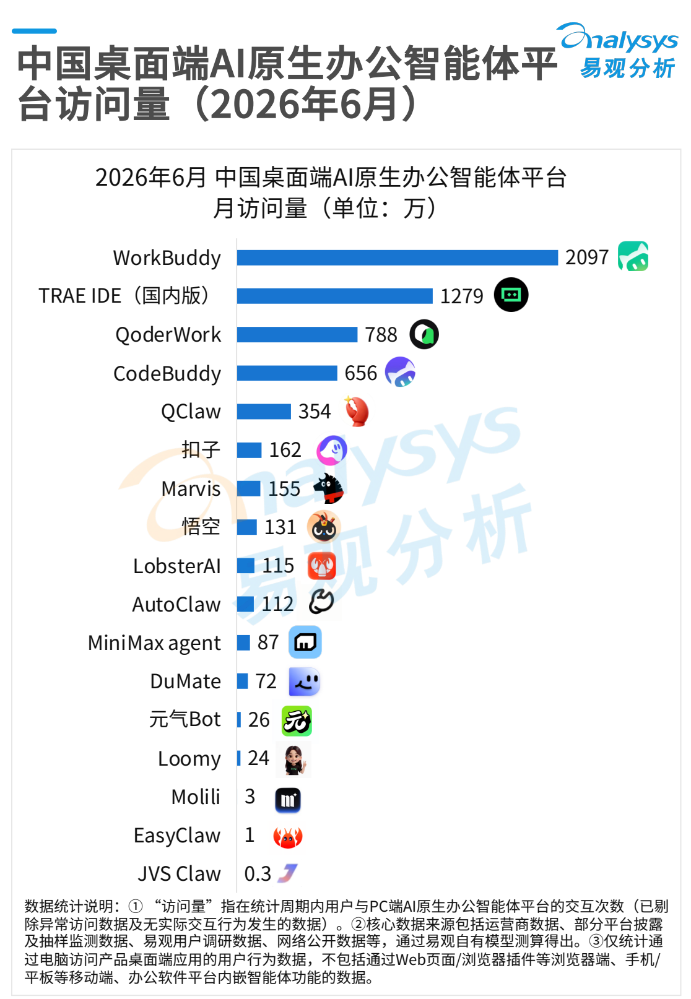
一、月访问量突破 2000 万
2026 年 Q2，腾讯科技公众号援引海外数据分析平台的数据报道：WorkBuddy（海外版 CodeBuddy）月访问量已突破 2000 万次，在 AI Coding Agent 领域跻身全球第一梯队。这一数字较年初翻了一倍以上，增长曲线持续陡峭。
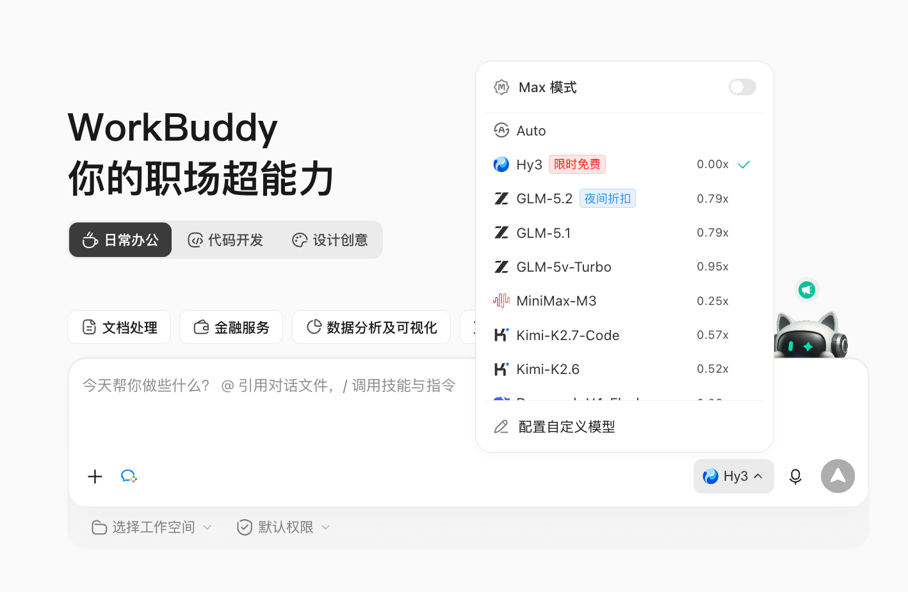
在市场格局对比图中，WorkBuddy 与 GitHub Copilot、Cursor、Windsurf 等产品同列第一阵营。值得注意的是，WorkBuddy 是其中唯一由中国科技公司推出、同时在国内外市场都保持强劲增长的 AI Coding Agent。
二、鸿蒙 PC 版正式上线
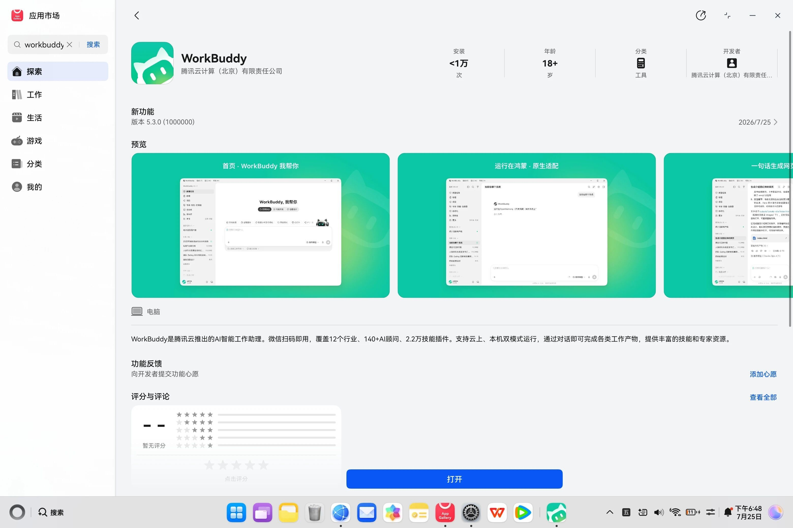
2026 年 7 月，WorkBuddy 鸿蒙 PC 版正式上线，成为首批原生支持华为鸿蒙操作系统的 AI Coding Agent。这意味着 WorkBuddy 已覆盖 Windows、macOS、Linux、HarmonyOS 全主流桌面操作系统，进一步拓宽了用户覆盖面。
鸿蒙版的核心能力与桌面版完全对齐：Agent 工作循环、Skills 系统、MCP 连接器、多模型路由、Teams 协作、自动化任务等全部可用。针对鸿蒙系统的特性，还增加了与鸿蒙分布式能力的初步对接，为后续跨设备协同打下基础。
三、增长驱动力分析
| 驱动力 | 具体表现 |
|---|---|
| 产品力 | Agent 工作循环的可靠性持续提升，长任务成功率行业领先 |
| 生态 | Skills 市场 7 万+ 技能、Expert 专家 100+、MCP 连接器覆盖主流工具 |
| 定价 | 免费版每月 500 积分 + Credits 计量，个人专业版 58 元/月，门槛远低于竞品 |
| 国际化 | 海外版 CodeBuddy 在 SuperAI 2026 发布后增长迅速，覆盖 8 大 IM 平台 |
| 开源贡献 | 积极参与开源社区，Skills/Expert 可由社区贡献，形成正向飞轮 |
四、关键里程碑时间线
| 时间 | 里程碑 |
|---|---|
| 2024 Q4 | WorkBuddy 正式发布，首批支持 Windows/macOS |
| 2025 Q1 | Skills 系统上线，开放社区贡献 |
| 2025 Q2 | MCP 连接器生态启动 |
| 2025 Q3 | Expert 专家系统上线 |
| 2025 Q4 | Teams 团队协作功能发布 |
| 2026 Q1 | 自动化任务（Automations）上线 |
| 2026-05-28 | 国际版在香港正式发布 |
| 2026-06-11 | SuperAI 2026 新加坡发布，Agent Runtime 架构公开 |
| 2026 Q2 | 月访问量突破 2000 万，跻身全球第一阵营 |
| 2026-07 | 鸿蒙 PC 版上线，实现全主流桌面 OS 覆盖 |
从市场份额数据和增长曲线看，WorkBuddy 已从「新锐工具」成长为「市场主力」。对于用户而言，选择一个增长势头强劲、生态持续扩大的平台，意味着更多的社区资源、更快的迭代速度和更长的生命周期保障。
第八十三章 AI 产业演化视角下的 WorkBuddy 定位
信源：腾讯研究院公众号（2026年），腾讯云架构师技术同盟公众号
腾讯研究院在 AI 产业研究系列中对 Agent 类产品做了系统性的产业分析。本章从产业演化的视角，解读 WorkBuddy 在 AI 产业格局中的位置和意义。
一、AI 产品的三层演化
腾讯研究院将 AI 产品的演化划分为三个层次：
| 层次 | 核心特征 | 代表产品 | 时间窗口 |
|---|---|---|---|
| 第一层：AI 工具 | 单点辅助，人在环中 | GitHub Copilot（早期）、Grammarly | 2022-2024 |
| 第二层：AI Agent | 多步自主执行，人在环上 | WorkBuddy、Cursor、Devin | 2024-2026 |
| 第三层：AI 基础设施 | Agent 编排平台，人定义目标 | WorkBuddy Teams + Automations、Miora | 2026+ |
WorkBuddy 当前处于第二层向第三层过渡的阶段：单次任务已实现高度自主（第二层），同时通过 Teams、Automations、SkillHub 等能力，正在构建 Agent 编排平台（第三层）。
二、Agent 产业的核心竞争维度
腾讯研究院指出，Agent 产品的竞争不在单一指标，而在五个维度的综合表现：
- 可靠性 (Reliability)——长任务能否跑通，出错能否自纠。这是「能用」和「好用」的分水岭。
- 安全性 (Security)——权限边界是否清晰，沙箱是否可靠，审计日志是否完整。
- 生态广度 (Ecosystem)——Skills/Plugin/MCP 的数量和质量，决定了 Agent 能做的事的上限。
- 可编排性 (Orchestrability)——多 Agent 协同、定时任务、条件触发，决定了从「工具」到「平台」的跃迁。
- 成本效率 (Cost Efficiency)——同等任务质量下消耗的 Token 和 Credits 越少，竞争力越强。
WorkBuddy 在这五个维度上的定位：可靠性靠 Harness 五层工程保障（行业领先）；安全性靠 Sandbox + Approval Gate + Audit Log（企业级）；生态靠 7 万+ Skills + 100+ Expert + MCP 标准（最广）；可编排靠 Teams + Automations + Sub-agent（已具备）；成本靠多模型路由 + 按需加载 + Prompt Cache（持续优化）。
三、WorkBuddy 的差异化定位
与同类产品相比，WorkBuddy 的差异化体现在三个方向：
1. 全栈 Agent，而非代码补全
GitHub Copilot 的核心是代码补全——你写代码它接话。WorkBuddy 的核心是 Agent 工作循环——你说目标它干活。两者的技术复杂度差距很大：补全只需要当前文件上下文；Agent 需要理解整个项目、规划步骤、执行操作、验证结果、自我纠错。
2. 人在环上，而非人在环中
传统 AI 工具要求人持续介入（人在环中）。WorkBuddy 的 Plan/Craft/Ask 三模式让用户可以「定义目标、审查计划、接收结果」（人在环上），中间执行交给 Agent。这意味着用户可以同时监督多个任务，大幅提升人效。
3. 开放生态，而非封闭花园
Skills 和 Expert 可由社区贡献和分发，MCP 连接器遵循开放标准。任何人都可以为 WorkBuddy 编写新能力。这与某些竞品的封闭生态形成鲜明对比——封闭生态短期体验一致，但长期创新能力受限。
四、产业趋势预判
腾讯研究院对 Agent 产业的三个趋势预判：
| 趋势 | 含义 | 对 WorkBuddy 的影响 |
|---|---|---|
| Agent 融合 | Coding Agent / 通用 Agent / 创意 Agent 的边界模糊化 | WorkBuddy 与 Miora 同源架构，天然具备融合优势 |
| Agent 基础设施化 | Agent 从「工具」变成「平台」，上层长出垂直应用 | SkillHub + TokenHub + Teams 已搭建基础设施层 |
| 企业级合规 | 企业要求审计、权限、数据隔离 | Sandbox + Audit Log + Approval Gate 已就位 |
对于企业用户，现在布局 Agent 平台的关键不是选哪个工具，而是选一个有平台化能力、有开放生态、有合规保障的 Agent 基础设施。WorkBuddy 在这三个维度的成熟度，使其成为企业 Agent 化转型的优先候选。
第八十四章 Vibe Coding 与 Agent 基础设施
信源：鹅厂技术派公众号、腾讯云架构师技术同盟公众号（2026年）
鹅厂技术派在技术前瞻系列中探讨了 Vibe Coding 这一新兴范式，以及 Agent 基础设施的技术要求。本章解读 Vibe Coding 的核心思想，以及 WorkBuddy 如何为之提供基础设施支撑。
一、什么是 Vibe Coding
Vibe Coding 是 AI 驱动的编程新范式。核心理念：开发者不再逐行编写代码，而是用自然语言描述意图（「vibe」），由 Agent 理解、规划、实现并验证。开发者的角色从「代码编写者」转变为「意图表达者」和「结果验收者」。
与传统 AI 辅助编程的区别：
| 维度 | 传统 AI 辅助（Copilot 式） | Vibe Coding（Agent 式） |
|---|---|---|
| 交互方式 | 逐行补全，人在键盘上 | 自然语言指令，人在审查席 |
| 上下文范围 | 当前文件 / 光标附近 | 整个项目 / 多文件 / 跨仓库 |
| 执行粒度 | 单行 / 单函数 | 整个功能 / 整个模块 |
| 验证方式 | 人眼审 + 手动跑 | Agent 自跑测试 + lint + 人审结论 |
| 迭代速度 | 分钟级 | 小时级完成天级工作 |
二、Vibe Coding 对基础设施的要求
鹅厂技术派指出，Vibe Coding 不是把大模型塞进编辑器就完事了。它对基础设施有五个硬要求：
1. 完整的项目理解
Agent 必须能读懂整个项目的结构、依赖、约定和历史，而不只是当前文件。WorkBuddy 通过项目上下文自动加载（.workbuddy/ 目录）+ Memory 系统实现这一点——项目约定、技术栈、代码风格、历史决策都在上下文里。
2. 可验证的执行
Agent 写完代码必须能自己跑测试、lint、类型检查，而不是把验证甩给人。WorkBuddy 的 Harness 反馈层内置了工具结果校验、时间戳校验、lint/测试运行和 Audit log——不通过的代码不会提交到结果区。
3. 安全的执行环境
Agent 需要一个沙箱来执行可能有害的操作（装依赖、跑脚本、访问网络），不能直接在用户的生产环境上跑。WorkBuddy 的 Sandbox 提供了文件系统隔离、Shell 隔离和权限边界——Agent 在沙箱里做事，只有通过 Approval Gate 的结果才落地。
4. 持续的上下文管理
长任务可能跑几小时，中间会话历史会膨胀到超出模型上下文窗口。必须有 Context Engineering 来持续压缩、检索和隔离。WorkBuddy 的五类上下文动作（写入/选择/检索/压缩/隔离）正是为此设计。
5. 多模型路由
不同任务环节适合不同模型：写代码用代码模型，写文档用长文本模型，做规划用推理模型。WorkBuddy 的 TokenHub 支持 14+ 模型动态路由，按任务类型自动选最优模型。
三、WorkBuddy 作为 Vibe Coding 基础设施
将上述五个要求与 WorkBuddy 的能力对应：
| Vibe Coding 要求 | WorkBuddy 能力 | 成熟度 |
|---|---|---|
| 完整项目理解 | 项目上下文 + Memory + .workbuddy/ | 生产级 |
| 可验证执行 | Harness 反馈层 + Audit log | 生产级 |
| 安全执行环境 | Sandbox + Approval Gate | 生产级 |
| 持续上下文管理 | Context Engineering 五类动作 | 生产级 |
| 多模型路由 | TokenHub 14+ 模型 | 生产级 |
五个维度全部达到生产级，这是 WorkBuddy 能支撑 Vibe Coding 范式的技术基础。
四、Vibe Coding 的实践建议
- 先 Plan 后 Craft——复杂任务务必先切 Plan 模式看规划，确认路径合理再执行。直接 Craft 跑复杂任务容易跑偏。
- 小步快跑——把大需求拆成 3-5 个小任务逐个跑，每个跑完验证再跑下一个。不要一次性丢一个三天量的需求。
- 善用 Skills——重复出现的任务模式封装成 Skill，下次一键调用。Skill 是 Vibe Coding 的「代码库」——你的 Skill 越多，Agent 能做的事越多。
五、从 Vibe Coding 到 Agent 基础设施
鹅厂技术派的判断：Vibe Coding 是 Agent 基础设施的「第一公里」。当单次 Agent 任务成熟后，下一步是多 Agent 协同（Teams）和自动化编排（Automations）——这恰好是 WorkBuddy 已经布局的方向。
WorkBuddy 的定位由此清晰：它不仅是一个 Vibe Coding 工具，更是一个 Agent 基础设施平台。底层是 Sandbox + Harness + Context + Memory + TokenHub；中层是 Skills + MCP + Expert；上层是 Teams + Automations + Sub-agent。用户可以从单次 Vibe Coding 起步，逐步扩展到多 Agent 编排，平滑过渡到 Agent 基础设施的使用。
2026 年下半年，Agent 基础设施将进入快速普及期。对于技术团队而言，现在用 WorkBuddy 积累 Agent 工程经验（Context Engineering、Harness 设计、Loop 管理），等同于在云计算普及前学会云原生——这不是学工具，是学下一代软件工程范式。
WorkBuddy x OPC — 一人公司的 AI 超级赋能
信源：央广网（2026-07-10）、腾讯新闻（new.qq.com 20260710A0B60300 / 20260711A0490R00）、腾讯云开发者社区（cloud.tencent.com/developer/article/2713698）、腾讯云官方
一、什么是 OPC
OPC 是 One Person Company（一人公司）的缩写。这不是法律意义上的个体工商户，而是一种用 AI 武装到牙齿的新型工作形态：一个人凭借 AI 工具链完成过去需要一个团队才能覆盖的产能——内容生产、数据分析、课程研发、行业研报、客户交付，全链路一人扛下。
WorkBuddy 的出现，让 OPC 从概念变成了可落地的现实。它的定位是"智能工作台"：读取授权文件夹、批量处理文件、一键生成文档/表格/PPT、数据分析、行业调研、内置百余种行业定制 Skills——文创从业者无需代码基础即可上手操作，从重复工作中解放出来，将精力聚焦于策划与创意本身。
二、全国首个 WorkBuddy OPC 合作社区
2026 年 7 月 10 日，全国首个腾讯 WorkBuddy OPC 合作社区在成都高新区天府长岛数字文创园正式成立。该社区由腾讯云与成都高新文创传媒有限公司联合发起，以 OPC（One Person Company）为核心主体，探索"政府扶持、平台支持、社区共创"三方协同的 OPC 全流程成长新路径。同时，WorkBuddy 数字文创 OPC 社区成立发布会也是 2026 年 APEC 数字周城市侧活动之一。
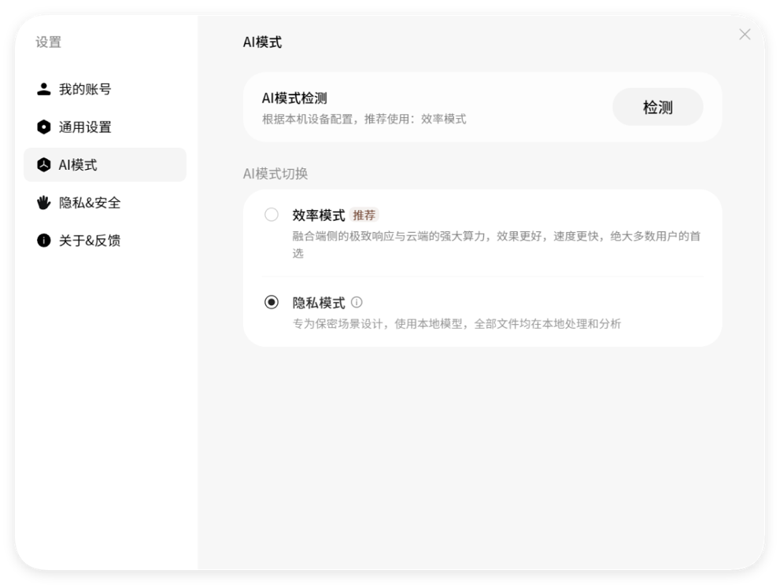
社区为入驻 OPC 提供两大专项支持
| 支持类别 | 具体内容 |
|---|---|
| 平台技术服务 | 入驻 OPC 可申领腾讯 WorkBuddy 平台专属账号，服务期内每月可免费获得 4000 通用算力积分，该积分在腾讯 CodeBuddy、WorkBuddy 等工具中互通使用，覆盖文创、办公和开发全场景，大幅降低 AI 使用成本 |
| 免费实战培训 | 入驻 OPC 可参加由天府长岛园区和腾讯云开发者社区搭建的专属实战训练营。训练营依托腾讯云开发者社区、TVP 及架构师技术同盟等成熟平台，邀请 AI 技术专家、商业创业、营销等领域导师授课，配套腾讯产品与技术专家手把手实操，构建"AI 资源普惠—产品教学—专家陪跑—经验复制"的全流程陪伴式服务链路 |
OPC 社区合作计划五大维度
腾讯云发布了"腾讯 WorkBuddy OPC 社区合作计划"，覆盖五大维度：
生产力底座
WorkBuddy 平台 + 4000 月积分，为 OPC 提供全场景 AI 工作台
工具赋能
百余种行业定制 Skills、MCP 连接器、自动化定时任务，按需取用
生态链接
腾讯文档、腾讯网盘、腾讯乐享打通，内容创作、知识沉淀与能力复用全链路
长期陪跑
价值放大
联合园区、社区组织多场沙龙授课，将成功打法沉淀为可复制路径，为更多 OPC 提供发展加速度
三、真实 OPC 案例：用 WorkBuddy 改写产能公式
案例一：SoR Core5 — 5 人团队干出 100 人的产能
教育科技团队 SoR Core5 仅 5 人，通过 WorkBuddy 打通课程研发、AI 开发与内容运营全链路：
| 指标 | 使用前 | 使用后 |
|---|---|---|
| 课程研发周期 | 2—3 年 | 1—3 个月 |
| 等效产能 | 5 人团队 | 过去 100 人团队才能达到 |
| 小红书粉丝增长 | — | 上涨 4.2 万 |
案例二：财经博主"宏哥"— 一人支撑一支投研团队
财经博主"宏哥"以 WorkBuddy 为"超级数字工作台"，42 个 AI 技能 7x24 小时运行：
| 任务 | 使用前 | 使用后 |
|---|---|---|
| 深度产业链研报 | 2 天 | 30 分钟 |
| 每日复盘 | 3 小时 | 15 分钟 |
一人支撑起一支专业投研团队才能完成的内容产出。
四、用 WorkBuddy 搭建个人 OPC 体系的实操路径
基于腾讯云开发者社区的公开案例，一个完整的个人 OPC 运营体系可以分为四个模块：
模块一：定时自动化选题
用 WorkBuddy 的自动化功能设置每天早上 8:00 自动执行的任务：抓取指定信息源（行业热点、平台热榜、竞品动态），按预设方向分类，生成当日选题建议清单并推送到通知。每天早上打开手机，选题清单已经在那里了。
| 配置项 | 建议 |
|---|---|
| 触发时间 | 早上 8:00-9:00，匹配内容创作黄金决策时段 |
| 信息源 | 指定具体平台/关键词，避免泛抓取导致噪音过大 |
| 输出格式 | 表格：选题方向、热度判断、适配平台、建议角度 |
| 执行频率 | 每天一次，避免信息过载 |
定时任务依赖 WorkBuddy 客户端在线。如希望完全离线运行，需要配置服务器端任务。
模块二：自建 Agent 团队
WorkBuddy 内置了很多专家 Agent，但说话不像你。自建 Agent 的关键是：喂素材、立风格规则、绑定权限。
- 第一步：喂素材——把过去写的文章整理好作为知识输入，在 System Prompt 里明确风格规则（开头必须有钩子、不用"总之"等套话结尾、多用具体细节等）
- 第二步：绑定权限——在 WorkBuddy 里配置公众号 AppID 和 AppSecret，配置完成后对 Agent 说"把这篇推到草稿箱"，它会自动调用 API 完成发布
- 第三步：选题驱动——定时任务推送选题清单（自动）→ 选方向发给 Agent（30 秒）→ Agent 生成初稿推进草稿箱（5-10 分钟）→ 打开后台审核微调（30 分钟到 1 小时）
模块三：接入外部模型
WorkBuddy 支持自定义接入外部模型。通过添加自定义模型（API 端点 + API Key），可以免费使用外部图片和视频生成能力，弥补内置模型在特定场景下的不足。
模块四：知识库
没有知识库，Agent 是一个通用写手——聪明但不认识你。知识库的作用是把身份信息、过往作品、行业经验变成 Agent 的长期记忆，从根本上解决"AI 味"问题。
一人公司的核心是"让每一分钟都花在只有自己能做的事上"。AI 工具帮你把那条线画得更清楚：哪些事只有你能做（判断、创意、和人的连接），哪些事可以交给工具（执行、排版、素材生成）——分得越清楚，效率越高。
WorkBuddy x FDE — 一个人当前线部署工程师
信源：腾讯云开发者社区（cloud.tencent.com/developer/article/2713698），2026-07-22 发布
一、FDE 是什么
FDE 全称 Forward Deployed Engineer（前线部署工程师 / 前线部署顾问）。这个词你可能没听过，但硅谷已经为它疯了。领英的数据显示，从 2023 到 2025 年，FDE 岗位数量涨了 42 倍；Indeed 上过去一年这类职位的招聘广告暴增 729%，年薪普遍从 17 万美元起步。OpenAI 专门成立了部署公司、Salesforce 一口气承诺招 1000 个、Anthropic 拉着高盛黑石组队——大厂们抢的不是会训模型的人，是能把 AI 塞进客户真实业务、让它真正跑起来的人。
说白了，FDE 就是被派进客户现场的那种工程师：上午跑调研、下午驻场看流程、晚上回来写代码，一边卖 AI 产品，一边教这套 AI 在客户那套乱七八糟的业务里落地。
二、FDE 与其他角色的区别
| 角色 | 回答什么问题 | 交付什么 |
|---|---|---|
| 销售 | "有什么功能" | 产品演示 |
| 实施人员 | 账号/权限/连接怎么配 | 系统上线 |
| 培训讲师 | 员工怎么操作 | 培训课程 |
| FDE | "先改哪个场景、影响什么指标" | 能持续运行的业务结果 |
FDE 交付的不是一场课，也不是一套提示词，而是一个能持续运行的业务结果。腾讯云内部已经设立相关岗位（正式岗位名"腾讯云 AI 前线部署工程师 FDE"，base 北京/上海，要求 3 年以上经验，熟练掌握 Python/TypeScript/Java 至少两门，精通大模型应用技术栈：上下文、RAG、MCP、SDD、Harness 工程），成为打通产品与客户需求的关键桥梁。
三、真实案例：王广辉 — 一个人扛下 FDE 全活
王广辉，腾讯云架构师技术同盟成员，一个做了 10 年技术、如今全面转型 AI 企业级交付的架构师。他没有大厂的团队，没有驻场几个月的预算，就靠一个人，三个月开拓了 18 家以上的企业客户，覆盖教育、制造、园区好几个行业。
而支撑他一个人干完这套 FDE 全活的，是 WorkBuddy。用他的话说，WorkBuddy"不是工具，是协同者"。
FDE 的活，难就难在它不是一种能力，是一串能力：跑客户、听懂对方说不清楚的需求、当场给方案、做培训、跟进十几个项目进度。真正拖垮一个人 FDE 的，从来不是技术难度，是量大、碎、还急。
四、用 WorkBuddy 搭建「AI 架构师」系统
王广辉基于 WorkBuddy 搭了一套叫"AI 架构师"的系统，核心功能是把客户会议的录音或对话直接变成能交出去的专业方案。
| 环节 | 以前 | 现在（WorkBuddy） |
|---|---|---|
| 需求整理 | 手写会议纪要理清需求，半小时 | 拉取会议转写，提炼结构化需求文档 |
| 方案生成 | 从零搭 PPT、调格式，一两个小时 | 从预置 23 个行业模板匹配，生成 PPT 和 Word 技术方案 |
| 分发交付 | 手动发企微、传文件，一小时 | 支持本地导出、企微直发、公网链接、腾讯文档四种方式 |
| 总耗时 | 3-4 小时 | 15-20 分钟 |
效率大概提升了 10 倍。但王广辉说，比 10 倍更值钱的是另外两件事：
- 质量稳了——以前方案质量随精力波动，现在模板标准化输出，哪个客户拿到的都是同一个水准
- 心态变了——以前开完会一想到还得回去写方案就累，现在是边喝咖啡边等成品
五、十五分钟出一份跨岗位复用的培训手册
FDE 不只交付方案，还得教客户公司的人用起来。以前这活比做方案还熬人：调研岗位痛点一小时、一个场景一个场景地写话术找案例两三个小时、再排版调表格转 HTML，整套 4-5 小时，而且不同岗位之间几乎没法复用。
现在一句话："生成行政岗位 AI 技能手册，表格形式，HTML 深色调。"WorkBuddy 按"岗位痛点 → AI 场景拆解 → 提示词模板 → 实操示例 → 量化效果"这套结构批量填好，直接生成深色调的 HTML。15 分钟。
一旦结构跑通，换个岗位就是换个输入的事——行政岗做完了，财务岗、销售岗照着改改就能出。
六、FDE 三条铁律
王广辉一个人扛下 FDE 的活，靠的是三条很朴素但天天在用的规矩：
| 铁律 | 核心要义 |
|---|---|
| 第一条 | 别问 WorkBuddy"能做什么"，直接告诉 WorkBuddy 你要什么。越具体它越强。把它当同事派活，别当搜索引擎提问。 |
| 第二条 | 先确认大纲，再让 WorkBuddy 展开。生成任何正式内容之前，先让它把大纲给出来，确认内容符合预期了再往下写。 |
| 第三条 | 给 WorkBuddy 立死规矩，尤其是涉及安全和交付顺序的。装任何 Skill 之前先做安全扫描，有风险立刻停；交付物严格按图片、格式转换、文案的顺序来，不许跳步。 |
七、WorkBuddy vs Cursor：一个管脑，一个管手
王广辉同时重度使用 Cursor 和 WorkBuddy，但他把分工说得很清楚：
Cursor 是你写代码时多出来的一双快手，是副驾；WorkBuddy 是你管项目时多出来的一个能独立干活的同事。你用 Cursor 解决这个功能怎么实现，用 WorkBuddy 解决这件事到底谁来干。一个管手，一个管脑。
FDE 的活，写代码只占很小一块。更大的部分是理客户、出方案、做培训、跟进度——这些需要连续上下文和个性化理解的事，恰恰是 Cursor 那类"写代码的手"管不了的。而 WorkBuddy 记得住每一个客户的跟进状态、背得下每一条培训话术，甚至比王广辉自己更清楚哪个项目卡在哪一步。
八、一个人当 FDE 的三步路径
第一步
把你的业务背景和标准模板喂进去（花一次时间，省无数次重复）
第二步
把反复用的工作流固化成自己的 Skill（下次一句话召唤）
第三步
严守安全和交付的规矩（AI 越强，越得由人兜底）
硅谷用年薪百万和一整个团队，去填 AI 落地的那道鸿沟。而一个人 + WorkBuddy 证明了另一种可能：当交付成本从三四个小时降到二十分钟，瓶颈就从"做不完"变成了"敢不敢要"。以前有些活不是不会做，是算了算时间成本觉得不划算、不敢接——而当一份方案的交付成本从三四个小时降到二十分钟，敢接的活，肉眼可见地变多了。
腾讯 Agent 生态协作 — WorkBuddy + QClaw + Marvis
信源：腾讯新闻（new.qq.com 20260422A02AFR00 / 20260521A04JQZ00）、腾讯应用宝 / Marvis 官网（marvis.qq.com）、QClaw 官网（qclaw.qq.com）、腾讯云开发者社区
一、腾讯 AI Agent 三兄弟
腾讯内部形成了差异化布局，不到两个月的时间，打造了覆盖个人、开发者和企业的全场景 Agent 产品矩阵，被称为"龙虾特攻队"。核心三款产品定位截然不同：
| 维度 | QClaw | WorkBuddy | Marvis |
|---|---|---|---|
| 一句话定位 | 手机聊天框里的电脑遥控器 | 能交付成果的 AI 专家团 | 系统级个人 AI 管家 |
| 主要入口 | 微信 / IM 与桌面端 | 桌面端、主流 IM、小程序 | 电脑端与手机跨端控制 |
| 核心任务 | 远程操作电脑、处理文件网页、邮件提醒、自动化任务 | 调研、PPT、数据分析、内容生产、业务洞察 | 文件搜索整理、系统设置、格式转换、知识库、本地理解 |
| 技术气质 | 本地 Agent、Skills、记忆、安全网关 | 多 Agent 并行、多专家/多模型、MCP 与 Skills 扩展 | 本地大模型、端侧模式、系统权限、文件与图片理解 |
| 适合人群 | 想随时远程让自己电脑干活的个人用户 | 创业者、职场人、运营/市场/数据等结果导向用户 | 重视本地文件、隐私、设备管理和生活场景的个人用户 |
| 团队背景 | 腾讯电脑管家团队 | 腾讯云 CodeBuddy 产品线 | 腾讯应用宝团队 |
| 上线时间 | 2026 年 3 月（中文版），4 月（海外版） | 2026 年 3 月 9 日（公测） | 2026 年 5 月 20 日 |
二、QClaw — 入口型 Agent
QClaw 是首个基于 OpenClaw 开源框架构建的消费级 AI 智能体，由腾讯电脑管家团队打造——这款桌面工具产品在中国大陆拥有数亿用户。中文版于 2026 年 3 月上线，凭借免部署、无需命令行的优势，上线 10 天就获得了超百万的用户量。海外版于 4 月开启内测。
QClaw 的核心叙事不是"替你写一份报告"，而是"让你的电脑能被聊天应用唤醒并执行任务"。用户不必经历复杂的环境部署，也无需任何技术背景，只需点击下载安装，三步就能上手。如果不在电脑前，用户只需要在 WhatsApp 或 Telegram 上发一条消息，QClaw 就会在电脑上执行任务，并快速交付成果。
- 一键安装——支持 macOS（Apple/Intel）和 Windows，自动处理所有依赖和运行时
- IM 直联——支持 WhatsApp、Telegram、Discord、Slack、iMessage、微信、企业微信、飞书、钉钉等
- 持续记忆——学习偏好和上下文，持续成长，越来越懂你
- 安全网关——每步操作都被监控、记录，用户可随时审查
- Skills 生态——兼容 OpenClaw 社区技能包，随取随用
三、Marvis — 系统型 Agent
Marvis（马维斯，昵称"小马"）于 2026 年 5 月 20 日正式上线，是腾讯操作系统层级 AI 助手。区别于传统 AI 对话工具或单一应用层 Agent，Marvis 的核心定位在于"操作系统层级"——它可将整台电脑变成可对话的"智能对象"，直接触达系统底层，实现从系统设置到数据处理的闭环操控。
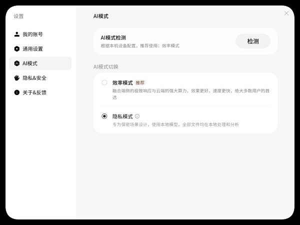
六大预置 Agent
| Agent | 职责 |
|---|---|
| 主 Agent | 全盘统筹，理解需求并拆解任务，调度其他 Agent 完成任务 |
| File Agent | 数字资产管家：文件搜索、阅读、编辑生成、格式转换 |
| Computer Agent | Windows 系统运维专员：系统设置、硬件检测、开机启动管理、冗余文件清理 |
| App Agent | 应用操作专员：调用电脑上的 App 与 Exe 应用，内嵌应用宝引擎可跑安卓 App |
| Browser Agent | 网页交互专员：接管网页，进行网页交互与数据抓取 |
| Search Agent | 搜索专家：网络搜索与信息聚合，快速定位答案并给出关键引用 |
效率模式 vs 隐私模式
| 模式 | 架构 | 适用场景 |
|---|---|---|
| 效率模式 | 端云协同：复杂问题理解与规划借助云端模型，文件处理、执行动作和本地索引尽量在端侧完成 | 日常任务，追求更快响应和更稳定体验 |
| 隐私模式 | 端侧模型：所有数据解析、图片识别及对话均在本地完成，完全不上云，断网亦可正常使用 | 财务、法务、人力资源等对数据安全有极高要求的场景 |
L2 级安全兜底
删除文件、修改系统核心配置等敏感操作，系统会先给出执行计划并请求用户确认；支付等更高敏感级别动作必须由用户本人完成。支持 Windows、macOS、Android 多端入口及同账号互通——用户可在手机上直接查看电脑屏幕并实时接管，即使个人电脑处于锁屏状态，手机仍可远程输入密码解锁操控。
四、三个典型场景与选型决策树
场景一：远程获取电脑文件（选 QClaw）
你在外面开会，突然需要电脑上的一个文件，并希望顺手整理网页资料。QClaw 的逻辑最顺——把需求发给聊天框，电脑端 Agent 在本机环境里执行，文件、浏览器、邮件等本地资源都可以成为它的操作对象。
场景二：快速制作行业分析 PPT（选 WorkBuddy）
你要在两小时内做一份行业分析 PPT，不仅需要检索资料，还要提炼观点、生成结构、做图表和汇报口径。WorkBuddy 更合适——它的产品叙事是"AI 专家团"和"从策略到交付一站搞定"，把任务当成可拆解、可并行、可交付的工作流。
场景三：本地文件管理与系统设置（选 Marvis）
你的问题是"帮我找到最近下载过的合同，提取重点，顺便把电脑某项设置改好，再把整理结果同步给手机查看"。Marvis 的优势更明显——它强调对本地文件、图片文字、系统设置和跨端接管的理解，本地模式文件 0 上传。
选型决策树
- 你是否经常"不在电脑前，但希望电脑继续替你干活"？→ 优先看 QClaw
- 你是否更关心"最后能不能给我一份完整报告、PPT、分析或方案"？→ 优先看 WorkBuddy
- 你是否更关心"本地文件、系统设置、跨端接管与隐私模式"？→ 优先看 Marvis
五、组合使用方案
对于重度用户来说，这三款产品不是三选一，更合理的组合是：
| 产品 | 负责 | 解决问题 |
|---|---|---|
| QClaw | 管远程唤起 | 怎么从手机触达电脑 |
| WorkBuddy | 管成果交付 | 怎么把任务变成工作成果 |
| Marvis | 管本地系统与知识库 | 怎么让 AI 更懂我的设备与本地资料 |
三者可以串联起来：让 Marvis 先找到目标文件，再丢给 WorkBuddy 去分析处理——一个管"找到"，一个管"算出来"。QClaw 则负责在外出时远程触发整个流程。当通讯入口、办公交付和系统级本地理解连在一起时，AI Agent 才真正从"会聊天的工具"，走向"能持续替你处理事务的数字劳动力"。
六、四款腾讯 Agent 免费额度对比
| 平台 | 免费额度 | 折算日均问答次数 | 特点 |
|---|---|---|---|
| Marvis | 1000 万 Token/天 | 200-500 次（视任务复杂度） | 简单任务下最宽裕 |
| QClaw | 800 积分/天 | 80-160 次 | 重度任务下可能吃紧 |
| IMA | 签到 100 算力/天 | 50-250 次（视模型选择） | 切模型需注意算力消耗 |
| WorkBuddy | 签到 150 积分/天 | 15-30 次 | 免费额度最紧但 Agent 编排能力强，企业旗舰版无限制 |
七、为什么腾讯会同时做三个
从产品矩阵看，腾讯并不是只押注一种 Agent 形态，而是在同时试探三个入口：
| 入口类型 | 代表产品 | 逻辑 |
|---|---|---|
| 通讯入口 | QClaw | 用户已习惯在微信、企业微信、飞书、钉钉等工具里发指令，如果 Agent 能从这些入口进入，学习成本最低 |
| 办公交付入口 | WorkBuddy | 用户不只是要聊天，还要报告、方案、图表、PPT 和业务洞察 |
| 设备系统入口 | Marvis | 当模型能够理解文件、屏幕、系统设置和跨端任务时，Agent 会更接近个人操作系统的一部分 |
QClaw 的中心是"电脑执行"，WorkBuddy 的中心是"工作成果"，Marvis 的中心是"个人设备与本地上下文"。它们都在回答"AI 怎么替人干活"，但对"活"的定义不同。未来真正有意思的地方，可能不是三者谁取代谁，而是这些能力会不会在腾讯生态里逐渐打通。
作为本绿皮书的编者（GoodTime，公众号「宁的 AI 小站」），实测三款产品后的建议：Marvis 常驻后台当电脑管家（桌面整理、文件搜索、出门在外远程取文件），WorkBuddy 按需打开（写报告、分析数据、处理文档），QClaw 在出差和通勤场景下用微信远程触发。三者组合使用，覆盖了"从触发到执行到交付"的完整链路。
WorkBuddy 近期重大更新与生态动向
这一部分收录了 2026 年 7 月底到 8 月初，腾讯官方媒体与权威行业媒体集中报道的 4 件 WorkBuddy 大事：7 月 30 日的 V5.3.5「人机双写」大版本发布、鸿蒙 PC 版的深度技术还原、WorkBuddy 成为腾讯内部"超级项目"并得到马化腾高度关注、面向个人版用户的"升级套餐"政策。每件事都标志着 WorkBuddy 在"从 AI 工具到 AI 同事"这条路径上又迈进了一步。
本部分信源：雷峰网、腾讯云开发者社区、AI 蓝媒汇/腾讯科技、IT 时代网/腾讯新闻，以及腾讯 WorkBuddy 官方公众号。
第八十八章 「人机双写」V5.3.5——AI 时代的 Office
信源：雷峰网报道、腾讯新闻 2026-07-30 17:03 报道，作者：腾讯 WorkBuddy 团队
一、为什么是 V5.3.5？
2026 年 7 月 30 日，腾讯 WorkBuddy 发布重大版本更新（V5.3.5）：联合腾讯文档，正式推出面向 Agent 时代的「人机双写」协同编辑能力。新版本支持用户在打开 Word、Excel、PPT、Markdown 等格式文档时，直接与 AI 在同一文件内共同创作、修改并实时协同，着力解决"人机混编"团队多角色协作等痛点。
从传统 Office 的"人与文件交互"，到在线文档的"人与人协同"，再到 AI 时代的"人与 AI 共同完成任务"——WorkBuddy 该功能的上线，让 AI 第一次从办公协同的"外挂"变成同一文档里的协作方，并在业界内首次做到"人人、人机、机机"多端同步协同，推动 Office 进入 AI 原生协作时代。
二、三大核心升级
1. 覆盖更多文件与场景，支持完整的人机共写
依托腾讯文档编辑能力，最新版 WorkBuddy 支持 Markdown、Word、Excel、PPT 等主流办公格式，并同时覆盖本地 Office 文件和腾讯文档在线文档。无论是论文、标书、教案、技术文档、咨询报告，还是运营周报、路演材料与数据分析，用户都可以在同一工作流中完成创作、编辑与协作。
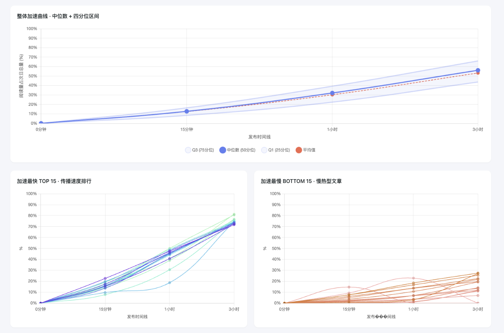
2. 框选即改，精准又高效
用户可以框选段落、数据区域或 PPT 画布，让 AI 只在指定范围内完成修改，其余版式和内容保持不变。例如：
- 在 Excel 里圈选几千行数据，让 AI 做透视分析、生成趋势图表，或批量纠错、套用复杂公式
- 切换到 PPT，在空白区域让 AI 把分析结论和图表自动排版呈现
- 标书、教案等结构化文档，可以圈出待补充区域，让 AI 按模板补全内容
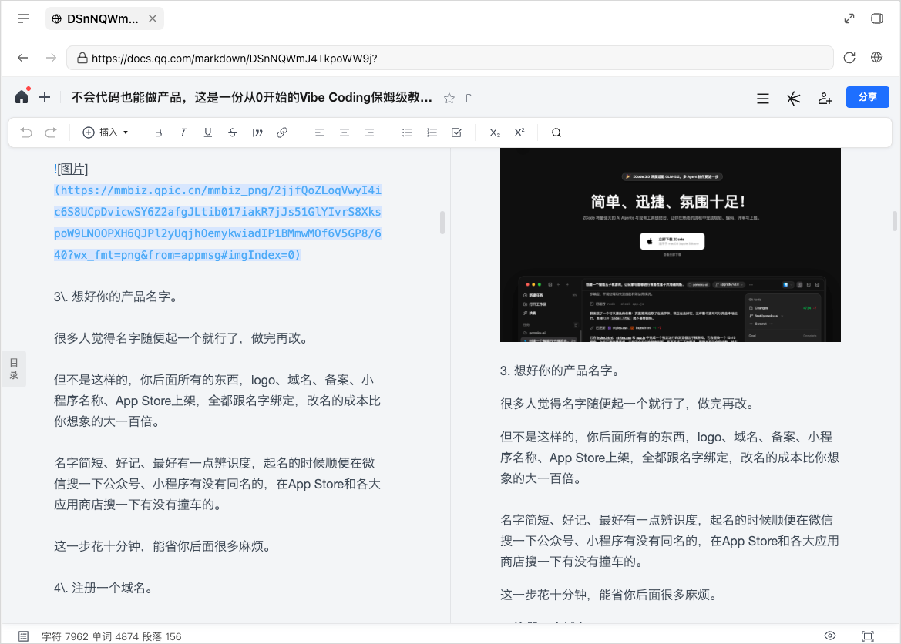
3. 多人加 AI，实时协同不断线
AI 共创的内容可以一键上传到腾讯文档，团队成员在不同终端共同编辑同一份文档，也可和同一个 AI 伙伴协作。各方改动实时同步，文档上下文持续保留。从个人写作、团队共编，到多人围绕同一任务和 AI 一起推进，人人协同、人机协同、机机协同在同一份文档里融为一体。
三、办公的第三个阶段
从第一代解决个人本地办公的 Office，到第二代解决多人协同的在线文档，随着 AI Agent 深度融入企业生产力，办公软件正走向第三个阶段。WorkBuddy 通过打通"人人、人机、机机"协作，正让 Office 从一个单纯的工具，变成能理解任务、看懂上下文、协同编辑、持续管理业务的 AI 原生办公系统。
| 阶段 | 代表 | 核心交互 | 关键能力 |
|---|---|---|---|
| 第一代 | Microsoft Office | 人与文件交互 | 本地编辑、保存、打印 |
| 第二代 | 在线文档（腾讯文档、飞书文档、Google Docs） | 人与人协同 | 云端实时同步、版本管理、评论 |
| 第三代 | WorkBuddy「人机双写」 | 人与 AI 共同完成任务 | AI 嵌入式协作、框选即改、Agent 原生 |
四、官方配套生态布局
目前，按 DAU 计 WorkBuddy 已成为国内最受欢迎的效率智能体工具之一，并率先实现了 Win、Mac、鸿蒙、安卓等主流操作系统的全覆盖。以此为底座，WorkBuddy 深度集成腾讯文档、腾讯 ima、腾讯会议、腾讯网盘、TAPD、腾讯乐享等生态产品，基于 OneID 全面打通了内容创作、知识沉淀与能力复用的链路。
你再也不需要在 Word 窗口和 AI 聊天窗口之间来回复制粘贴了——WorkBuddy 把整套文档编辑界面直接搬到了 AI 对话框旁边，AI 不再是"侧边栏的小助手"，而是真正参与创作的协作者。选中一句话，AI 就地改；圈一组数据，AI 就地分析；上传一份底稿，AI 接着你的思路继续写。
第八十九章 鸿蒙 PC 版深度还原——首个桌面办公智能体如何炼成
信源：腾讯云开发者社区 2718640，原创作者：gavin1024，发布时间：2026-07-30 17:10
一、从零到一：鸿蒙 PC 版诞生的背景与契机
2026 年 7 月 25 日，效率智能体腾讯 WorkBuddy 正式上架鸿蒙电脑应用市场，成为鸿蒙平台首个桌面办公智能体。这一节点的达成并非偶然——在此之前，WorkBuddy 鸿蒙移动版已率先上线并收获用户评分 4.6 的口碑。随着鸿蒙生态设备规模在 2026 年 7 月突破 7000 万台，大量职场用户在各类渠道发出同一个呼声：WorkBuddy 什么时候能上鸿蒙 PC 版？
桌面端是职场人真正的生产力主场。相比于移动端以轻量交互和远程控制为主的使用场景，PC 端承载着复杂文档处理、多窗口协作、本地文件系统操作等重度办公需求。一款成熟的效率智能体若缺少桌面端支持，就如同给职场人配备了一位只能站在门口出主意的顾问，却无法走进办公室真正动手干活。
二、联合攻坚：面对零经验可循的全新 OS 环境
2.1 不是简单移植，而是原生重构
相比于 Windows、macOS 等主流系统平台，桌面智能体原生适配鸿蒙系统并非简单的代码复制粘贴。鸿蒙操作系统采用了不同于传统桌面系统的架构设计，这意味着 WorkBuddy 团队面对的是一套全新的系统调用方式、权限模型和交互范式。
联合攻坚的首要挑战来自于系统级权限适配。WorkBuddy 在核心应用场景中涉及多个敏感权限域：
- 系统登录认证——需要对接鸿蒙账户体系
- 电脑连接功能——需要建立稳定的跨设备通信通道
- 技能调用——涉及本地文件读写和网络请求的系统授权
- 产物预览——要求与鸿蒙系统的显示子系统深度集成
这些关键链路中的任何一个环节未能打通，都会导致用户体验出现断点。
2.2 关键链路的逐一攻克
WorkBuddy 团队与鸿蒙专家团队采取了深度协同的作战模式——双方围绕产品适配、系统能力和用户体验三个维度展开集中攻坚，建立了快速响应的沟通机制和技术对接通道。
其中，技能调用是 WorkBuddy 作为智能体的核心能力载体——80,000+ 技能的正常运行依赖于底层系统对进程调度、网络访问、文件操作等基础能力的完整支持。联合团队逐一对接鸿蒙系统的应用沙箱模型和资源访问接口，确保每一项技能都能在合规的前提下发挥完整功能。
三、用 AI 开发 AI：人机协同的研发效率实践
在本次鸿蒙 PC 版的研发攻坚过程中，联合团队大量调用了 WorkBuddy 本身的开发能力，通过人机协同大幅缩短了开发周期。这种用 AI 开发 AI 的模式，既是 WorkBuddy 产品能力的实战检验，也为智能时代的软件工程提供了可参考的范式。
具体而言，研发团队在日常开发中将重复性高、模式固定的编码工作交由 WorkBuddy 辅助完成——例如在适配鸿蒙系统 API 的过程中，大量的接口封装代码、错误处理模板和数据转换逻辑都可以由 WorkBuddy 根据开发者的自然语言描述自动生成初稿，开发者只需专注于核心业务逻辑的设计与审核。在代码审查环节，review-pr 技能能够自动检测代码变更中的潜在问题，帮助团队在早期发现并修复缺陷。
它让研发人员能够将更多精力投入到需要创造性思维和深度判断的工作中。在面对鸿蒙系统适配这类缺乏先例可循的技术挑战时，人类工程师的经验直觉与 AI 助手的快速执行形成了有效的互补关系。
四、安全底座与生态拓展性的双重验证
鸿蒙 PC 版的顺利上线，进一步验证了 WorkBuddy 的安全底座与生态拓展性。腾讯云官方产品的身份背书、等保 2.0 合规资质以及支持私有化部署的企业版能力，共同构成了 WorkBuddy 的安全防护体系。
生态拓展性方面，WorkBuddy 此前已通过全国首个省级政务智能中枢平台「湾擎」的上线试运行得到了初步验证——专为政务场景定制的 WorkBuddy 即将面向广东全省公务员开放使用，这一高安全要求的落地场景充分说明了产品在严肃办公环境中的可用性。
五、独家体验：「碰一碰」分享，上下文丝滑续接
依托鸿蒙系统的底层能力，鸿蒙 PC 版还上线了一个其他主流系统目前无法实现的功能：「碰一碰」分享。用户不仅能"碰一碰"分享产物文件，还能把与 AI 沟通的完整上下文历史记录直接碰给对方——接收方打开后，无需重新截图或重新描述背景，直接就能顺着原有的上下文，继续与智能体无缝交流。
六、本章实战启示
| 启示点 | 具体内容 |
|---|---|
| 全终端覆盖不是装个壳 | 每个 OS 都需要重新适配权限、文件、网络、显示子系统 |
| 人机协同开发已成现实 | 在 AI 开发 AI 的模式下，编码速度提升数倍 |
| 跨设备上下文是真正的护城河 | 碰一碰传文件 + 传记忆 = 其他生态无法复制的体验 |
| 政务场景倒逼安全能力 | 广东全省公务员试运行，是对安全底座最严苛的验证 |
第九十章 WorkBuddy 给腾讯长脸了——内部「超级项目」与战略地位
信源：AI 蓝媒汇 / 腾讯科技（叶二/魏晓），发布于 2026 年 8 月初，原文标题《WorkBuddy 给腾讯长脸了》
一、一段现场对话刷屏整个 AI 行业
两个月前，在腾讯云 AI 产业应用大会上，腾讯集团高级执行副总裁汤道生向首席 AI 科学家姚顺雨抛出灵魂拷问：
"你觉得，腾讯 AI 真的慢吗？"
姚顺雨一语四两拨千斤：
"感觉这应该是我问你的问题。"
彼时的腾讯，不管是底层大模型基座，还是面向普通用户的 C 端 AI 产品，始终没能跑出一款达到市场预期的作品，"腾讯 AI 掉队"的论调此起彼伏。这场对话早已埋下伏笔：最先需要为腾讯 AI 节奏破局的人，反而成为了汤道生。其所掌管的腾讯云推出的 WorkBuddy，目前正在 AI 办公赛道一骑绝尘。
二、Q2 数据：WorkBuddy 一骑绝尘
根据易观发布的报告显示，在 Q2 办公智能体平台中：
| 排名 | 产品 | 月访问量 | 备注 |
|---|---|---|---|
| 1 | 腾讯 WorkBuddy | 2097 万 | 超过第二名+第三名之和 |
| 2 | 字节 Trae | — | — |
| 3 | 阿里 QoderWork | — | — |
日活方面，有消息显示，截至 7 月 WorkBuddy 已突破 1300 万日活，是腾讯全系 AI 产品中唯一一款不靠流量导流、不靠营销造势，完全依托用户真实需求实现自然高速增长的 C 端产品。
三、V5.3.5「人机双写」背后的组织调整
「人机双写」功能的上线，不只是内部部门的协同，而是一次深度的人才融合与资源整合——腾讯文档多名核心骨干直接调任至 WorkBuddy 团队，负责文档协同与 AI 智能体的融合场景。
一位腾讯内部人士告诉 AI 蓝媒汇：第一阶段，WorkBuddy 解决的是 AI 办公能不能干活的问题，依靠桌面智能体能力打通本地文件、自动执行多步骤任务，依靠低门槛优势快速收获海量用户，完成规模积累。第二阶段，则是解决"AI 办公"本身的痛点，让 AI 彻底融入完整办公工作流，打破传统 AI 问答与实际创作割裂、需要反复跳转复制的低效难题。
四、马化腾罕见高度关注
市场亦有消息显示，WorkBuddy 已经成为腾讯内部的「超级项目」，得到了马化腾的高度重视，几乎从不缺席产品会议。就在今年 Q1 财报中，马化腾还专门提及了 WorkBuddy，称其为目前国内使用最广的效率 AI 智能体。
要知道，过往数个季度，腾讯对 AI 业务的表述大多偏向技术投入、底层研发的铺垫性描述，鲜有具体产品的正面肯定与高光评价。但这一次，马化腾挺起了腰。
五、为什么是腾讯？为什么是 WorkBuddy？
有业内人士告诉 AI 蓝媒汇，现在市场上能够明显转化为生产力的 AI 应用场景，一个是编程，另一个就是办公。而 WorkBuddy 正是第一个成功把大模型能力应用到白领的日常办公，跑通商业化闭环的。
5.1 腾讯的场景积累
不同于市场普遍认为在 AI 领域年轻开发者有优势，WorkBuddy 则出自于一帮行业老兵之手，有多年的产品打磨经验。"说到底，在把技术转化为可落地、可规模化的产品应用上，腾讯还是有优势，有深厚积淀的。"
5.2 落后者的激进
事实上，此前阿里跟字节仍然将大量资源投在千问豆包等 C 端对话助手上，而腾讯作为落后者，在面对其他战线可能存在的机遇时，表现非常激进。此前"龙虾"爆火，腾讯多部门以赛马形式密集布局其中，而 WorkBuddy 正是胜出者。
六、红利窗口正在关闭
对手们已经反应过来：
- 阿里：将旗下 QoderWork、悟空、MuleRun 三款办公智能体产品合并，统一推出全新拳头产品"千问办公"，由钉钉新任 CEO 亲自操盘
- 字节：7 月 30 日完成重大组织升级，将飞书产品团队整体并入豆包体系，打通大模型能力与办公协同场景，瞄准政企办公市场
两大头部对手同步战略转向、集中资源围剿 AI 办公赛道——WorkBuddy 独享赛道红利的窗口期已然结束。接下来，就是真刀真枪的贴面厮杀。
WorkBuddy 处在行业第一的窗口期不会太长——现在用好它，意味着你比同行更早积累了 AI 办公的方法论；等对手的产品追上来，你已经能成为公司内 WorkBuddy 培训的内训师。这份时间差红利，本身就是绿皮书帮你抢到的。
第九十一章 56 岁，体制内，我用 WorkBuddy 把 AI 用进了日常
信源：腾讯云开发者社区 2719510，原创作者：一位 56 岁的县城公务员，发布时间：2026-08-01
一、自述背景
作者今年 56 岁，在河北一个小县城做行政执法安全工作。体制内干了快三十年，按理说这个年纪，大部分人早就不折腾新技术了。但他过去两年开始认真学 AI——不是那种蜻蜓点水式的"看看新闻"，是真的上手用。从最早的网页聊天到后来装各种客户端，一直在找一个真正能融进日常工作流的东西。直到遇到 WorkBuddy。
这篇文章不是官方软文，是他实际用了一个多月的真实记录。说清楚它到底能干什么、在哪里踩过坑、以及什么样的人适合用它。
二、三个高频实战场景
场景 1：公众号写作——从笔记到成稿
他运营一个读书公众号"书香阅世界"，每周要发 2-3 篇文章。
| 环节 | 以前 | 现在 |
|---|---|---|
| 读书记笔记 | 手写笔记 | 在 Obsidian 里记笔记 |
| 初稿 | 对着笔记发呆 2 小时 | 把笔记路径丢给 WorkBuddy，5 分钟出初稿 |
| 修改 | 边写边改 | 花 20-30 分钟改一遍，加入自己的观点和故事 |
| 效率提升点 | 不是"写得快"，而是"不用从零开始对着空白页发呆了" | |
他的判断：WorkBuddy 给的初稿质量大概在 70 分 左右——结构完整、语言通顺，但缺少"人味儿"。最终成稿保持在 85 分以上。
有一次他直接用了它生成的初稿没怎么改就发了，读者反馈"这篇感觉不像你写的"。结论：AI 给你骨架，血肉必须自己填。
场景 2：工作报告——把碎片变结构
体制内写报告是家常便饭。他以前最头疼的不是写，而是"把脑子里一堆零散的东西理出结构"。现在的做法：
打开 WorkBuddy，用语音或者打字把想到的点全部倒进去——不用管逻辑、不用管顺序，就是 dump。 然后跟它说： "帮我把这些零散内容整理成一份季度工作总结的提纲，分三个板块：主要工作、存在问题、下一步计划。每个板块下面列出 3-5 个要点。" 它会在 30 秒内给你一个结构清晰的提纲，再根据提纲逐项填充内容。
这个流程帮他省掉了至少 40% 的"对着空白文档发愁"的时间。
场景 3：知识管理——让读过的书能被找回来
他读书量不小，每年大概 50-60 本。但以前读完就忘，笔记散落在各个地方，想找的时候根本找不到。WorkBuddy 可以连接他的 Obsidian 笔记库，直接问它："帮我找一下我关于零极限的笔记，那本书里有没有提到'清理工具'的具体用法？"它会在笔记库里搜索，找到相关内容，还能总结。这比自己翻几十个 Markdown 文件快太多。
三、一个 56 岁的人用 AI 的真实体会
刚开始用 WorkBuddy 的时候，他一度觉得很挫败。它的功能多、配置项多，对于一个不是技术出身的人来说，学习曲线不算平缓。但后来想明白了一件事：你不需要学完所有功能才开始用，你只需要学会解决你当前那个问题的那个功能。
他每天实际用到的功能大概就 4-5 个：读文件、写文档、搜网页、整理思路、管理笔记。其他高级功能没碰过，也不影响每天用得挺开心。
56 岁学 AI 的最大优势是——不会被"应该怎么用"框住。年轻人容易纠结"这个工具设计出来是干什么的"，他不纠结，只看"这个东西能帮我解决什么问题"。这种实用主义反而是优势。
四、踩坑记录（真实教训）
| 坑 | 症状 | 解决办法 |
|---|---|---|
| 1. 文件路径搞不清楚 | macOS 路径与 Windows 不一样，中文路径有时报错 | 所有工作文件放在一个英文命名的文件夹里，路径尽量短 |
| 2. 一次性让它做太多事 | "总结+对比+综述+做表"一轮塞过去，结果跑乱 | 拆开任务，一次只让它做一件事，多轮对话比一轮复杂指令靠谱得多 |
| 3. 忘了告诉它"不要联网" | 有些操作它会联网搜索，体制内涉密 | 涉及工作内容时，开头就明确说"以下内容仅限本地处理，不要联网" |
| 4. 过度依赖，忘了自己思考 | 两周后发现自己思考能力在退化 | 先自己思考 5 分钟把想法写下来，再让 AI 优化。AI 是助手，不是替身 |
五、五条使用心得总结
- 把它当助理，别当神。它能做 70% 的体力活，剩下 30% 的判断和创造必须你来。
- 从小场景切入。别一上来就想让它重构你的全部工作流。找一个最痛苦、最重复的事，先用它解决这一个。
- 学会写清晰的指令。这不是技术问题，是沟通问题。告诉它"你是谁、要做什么、给什么材料、要什么结果、不要什么"，越具体越好。
- 本地优先，安全第一。敏感内容明确标注不要联网，养成习惯。
- 年龄不是障碍，心态才是。我 56 岁能学会，你更没问题。
这位作者的案例之所以打动我，是因为他代表了 WorkBuddy 用户最广泛的一面：不是技术极客，也不是 AI 重度玩家，就是一个 56 岁的普通公务员，凭借实用主义和学习意愿，把 AI 用到了日常。绿皮书这一章送给所有觉得自己"年纪大了/不是技术出身/用不来 AI"的朋友——你需要的不是更多教程，是先找到你工作里最痛苦的那一件事，然后让 WorkBuddy 帮你解决它。
WorkBuddy x 法律行业
信源：深圳龙岗区司法局官网（lg.gov.cn，2026-07-28）、腾讯新闻（new.qq.com/rain/a/20260725A030RU00）、嘉潍律师事务所专题活动实录
一、法律行业的 AI 痛点
法律服务业是知识密集、文本驱动、逻辑严密的行业。文书撰写、案卷整理、材料汇总等事务性工作占用了从业者大量时间和精力。更关键的是，法律从业者对数据安全极其敏感——"想用 AI，又怕不安全"是很多律师的共同顾虑。
二、WorkBuddy 在法律行业的实战场景
| 场景 | 以前 | WorkBuddy 方案 |
|---|---|---|
| 法律文书撰写 | 手动起草，2-3 小时/份 | 输入案情要点，自动生成文书初稿，律师复核专业判断 |
| 案卷整理归档 | 人工分类、编号、装订，半天起 | 批量读取 PDF/扫描件，自动按案号、日期、类型分类整理 |
| 庭审材料生成 | 逐份整理证据清单、庭审提纲 | 一键生成庭审提纲、证据目录、时间线梳理 |
| 合同条款比对 | 逐条人工核对，易遗漏 | 两份合同同时上传，自动标红差异条款并给出风险提示 |
| 律所经营报表 | 财务软件导出后手工汇总 | 自动读取财务数据，生成可视化经营分析报表 |
| 多案件交叉检索 | 逐个打开案卷查找关联 | 建立私有化知识库，自然语言查询跨案件关联信息 |
三、官方培训实录：深圳龙岗「AI 赋能律所提质增效」
2026 年 7 月，深圳市龙岗区司法局联合区人工智能（机器人）署等多部门，在坂田街道国际机器人产业园（OPC 第一区）成功举办"AI 赋能律所提质增效——WorkBuddy 助力智能办公"专题业务培训。辖区律所合伙人、企业法务代表及 OPC 相关人士等 80 余人齐聚现场。
培训突出"场景化、实战化"操作。腾讯技术专家结合法律行业常见应用场景，展示了如何利用 AI 工具高效完成法律文书撰写、远程案卷调取、庭审材料生成及律所经营报表输出等功能，并重点介绍了本地化部署与数据安全保密合规机制，确保敏感信息全程留痕、本地存储，有效化解了从业者"想用 AI、又怕不安全"的顾虑。
四、嘉潍律师事务所专题活动
2026 年 7 月 24 日，由欧氪律、嘉潍律师事务所主办，腾讯云、亿欧提供技术支持的《让 WorkBuddy 成为法律人的可靠伙伴》专题活动在嘉潍律师事务所成功举办。
嘉潍律师事务所战略发展总监马佳表示："法律行业具有知识密集、文本驱动、逻辑严密等特点，与 AI 大模型能力高度契合。AI 不会取代律师，但善用 AI 的律师，正在形成新的工作优势。"
腾讯云北区 AI 渠道负责人赵志翔带来《案头革命：律师如何用数字化工具实现"降维打击"》主题分享，围绕 AI 办公工具的发展趋势、WorkBuddy 的产品能力及其在律师日常办公中的应用场景，介绍了 WorkBuddy 如何辅助文档处理、信息整合、内容生成与流程管理。
五、律师使用 WorkBuddy 的安全建议
- 本地优先：敏感案件材料明确标注"仅限本地处理，不要联网"
- 私有化部署：利用 WorkBuddy 本地长期记忆能力，建立律所专属知识库
- 人审 AI 稿：AI 生成的法律文书必须经执业律师审核签字，责任不可转移
- 分段处理：复杂案件拆成多个子任务，逐段生成、逐段复核
WorkBuddy 对法律行业最大的价值，不是替代专业判断，而是把律师从重复性事务中解放出来，让更多精力集中在案件研判与客户服务上。正如参加培训的陈律师所说："学会借力轻量化 AI 工具优化业务流程，对律所规范化、智能化发展很有实践指导意义。"
WorkBuddy x 会计财税
信源：腾讯云开发者社区（cloud.tencent.com.cn/developer/article/2685644、2719435），财税从业者实战分享与注册会计师审计视角
一、财税从业者的日常痛点
每月整理凭证、核对数据是最耗时间的重复工作。以前手动分类、核对附件，至少要花 3-4 小时，还容易出错。审计人更苦：抽凭怕漏抽大额、分类错；几百张扫描件要 OCR；十几个被审计单位的底稿要归置；银行流水、往来款、合同金额要交叉比对。
二、月度凭证整理自动化（三步 10 分钟）
Step 1：读取并整理凭证数据
指令示例："帮我读取 D 盘「2026 年 5 月财税凭证」文件夹下的所有 PDF 和 Excel 文件，自动按凭证号、日期、金额进行分类整理，生成一份结构化的凭证清单，用 Markdown 表格输出。"
Step 2：自动核对银行流水与凭证差异
指令示例："帮我读取「2026 年 5 月银行流水.xlsx」，和上一步生成的凭证清单进行比对，找出金额、日期不匹配的条目，标注差异金额和差异类型。"
Step 3：一键生成核对报告
指令示例："根据以上核对结果，帮我生成一份规范的《月度凭证与银行流水核对报告》，包含核对概况、差异明细、调整建议，语言正式，适合提交给管理层或审计使用。"
三、审计人的提效清单
| 环节 | WorkBuddy 方案 | 效果 |
|---|---|---|
| 凭证抽样 | 把科目余额表丢给它，"按金额降序列每类前 10 笔，输出带超链接的 Excel" | 几分钟出清单，比手工翻凭证快一个数量级 |
| 批量 OCR | 几百张扫描件本地 OCR 引擎跑一遍，导出带"需复核"标记的 Excel | 敏感金额走本地识别，不往通用云端大模型贴 |
| 底稿归置 | 按"按单位 / 按科目"建目录、归类凭证抽查和各国别凭证 | 打印前一目了然，不再满桌面找文件 |
| 报告与复核 | 先让它出初稿框架，审计师填专业判断；长文档体例、格式统一交给它 | 人盯数字和结论，AI 管格式和框架 |
| 数据勾对 | 写脚本交叉比对银行流水、往来款、合同金额，差异自动标红 | 重复活人做易错，AI 做稳 |
四、注册会计师踩过的坑
- AI 给的数字和结论，必须你复核签字，责任甩不出去
- 客户名、金额别往通用云端大模型直接贴，用本地 / 私有化工具更稳
- 工具吃透一个就行，别贪多
五、百望股份 x WorkBuddy：企业级财税 Agent 实践
百望股份（06657.HK）与腾讯云达成战略合作，首批"智能发票专家团"同步进入腾讯云 AI 平台及 WorkBuddy 生态。能力覆盖应付票据处理、应收票据处理、交易伙伴合规尽调、财税合规处理、纳税申报处理等高频场景。
核心架构分三层：Skill 层把复杂能力包装成用户能理解的具体任务；MCP 层解决 Agent 与外部工具、数据和流程的标准化连接；API 层调用底层发票、税务、交易、信用与风险规则，提供确定性结果。简单说，腾讯云负责让 Agent"进场"，百望股份负责让 Agent 在财税合规场景里真正"会干活"。
对审计这行，WorkBuddy 最值钱的不是"会聊天"，是"能动手"——能直接读你磁盘上的 Excel / PDF / Word，能写 Python 一键处理几百份凭证，能把乱糟糟的底稿归置好。以前需要几小时的手动核对工作，现在只需要 3 条指令、10 分钟就能完成。
WorkBuddy x 农业
信源：腾讯云开发者社区及行业实践分享
一、农业公司的数字化困境
农业公司负责人和新农人朋友们常被这些场景困扰：深夜还在电脑前为明天的项目汇报 PPT 焦头烂额；面对一沓沓销售数据、财务报表，不知从何分析起；想为自家的优质农产品写篇动人的推文，却憋了半天写不出几个字；人在外地考察，公司急需处理一个合同文件，却鞭长莫及。
二、WorkBuddy 在农业企业的核心能力匹配
| 能力 | 农业场景应用 |
|---|---|
| 自然语言操控 | "把上个月所有柑橘的销售数据，按地区做成一个柱状图和分析报告"——一句话完成数据整理与可视化 |
| 多格式文件处理 | Word 项目计划书、Excel 财务报表、PPT 产品推介、PDF 合同、产品图片，读取/编辑/合并/转换一站式完成 |
| 远程控制（Claw） | 在果园里巡查时，手机发条指令，办公室的电脑自动处理报价单、合同、报表 |
| 多专家并行协作 | 新品发布会方案自动分派"市场专家"调研、"文案专家"写稿、"设计专家"做图 |
三、典型工作流示例
场景：农产品季度销售分析
- 将各渠道销售数据 Excel 表放入同一文件夹
- 指令："读取该文件夹下所有 Excel，按产品品类和月份汇总，计算同比环比增长率，生成一份带图表的季度销售分析报告"
- WorkBuddy 自动完成数据清洗、透视分析、图表生成和报告撰写
- 报告可直接导出为 Word/PPT，或上传腾讯文档分享给团队
场景：农产品品牌推文
- 提供产品图片和基本卖点
- 指令："根据以下产品信息，写一篇面向城市消费者的农产品品牌推文，风格温暖、有故事感，800 字左右，配 3 个小标题"
- WorkBuddy 生成初稿，人工微调后即可发布
当 AI 走进田间地头，它要替代的不是农民，而是那些繁琐、重复、低效的案头工作。对于正处在数字化转型关键期的农业企业来说，WorkBuddy 可能比新招一个员工来得更及时、更高效。
WorkBuddy x 公益与 AI 向善
信源：NGO2.0 技术公益工作坊实录（2026-04-13 成都）、腾讯 2025 年度可持续社会价值报告、AI & Society 创造营（深圳，2026-06）
一、AI 向善：腾讯的三重理解
腾讯公司董事会主席兼 CEO 马化腾在 2025 年度可持续社会价值报告中分享了对"以人为本，AI 向善"的三重理解：
- 技术平权：目标是支持最多数的普通人受益
- AI 安全：对用户隐私和安全的敬畏，是腾讯不可动摇的底线
- 普惠：那些帮助弱势者、助解民生议题的领域，理应是 AI 普惠的破局点
报告中特别提到，WorkBuddy 作为智能体"全家桶"的一员，秉承着"我帮你"的理念，已经成了许多用户不可或缺的"工作搭子"。
二、成都技术公益工作坊实录
2026 年 4 月 13 日，由成都市社会组织乡村振兴联盟、四川尚明公益发展中心、NGO2.0、腾讯技术公益、中国计算机学会 YOCSEF 成都联合主办的技术公益赋能工作坊在成都成华区社会组织孵化园圆满举办。近 30 位本地公益伙伴齐聚一堂，共同完成从认知到实操的技术公益学习，亲手安装并体验 AI 智能助手 WorkBuddy。
上午，多位专家围绕公益数字化展开深度分享，聚焦行业人力有限、事务繁琐等共性痛点，探讨 AI 从"交互对话"到"自主行动"的升级意义，同时明确 AI 技术与伦理边界，坚守技术向善、安全合规的公益底线。
下午进入实战环节，腾讯技术公益团队现场拆解 WorkBuddy 核心能力——这款具备"自主执行"能力的 AI 助手，可自动完成数据整理、报告生成、财务报销等复杂任务，有效降低技术使用门槛。在一对一指导下，所有参会者均成功安装并上手操作。
在共创环节，各小组结合志愿者管理、数据统计、项目执行等真实痛点，现场用 WorkBuddy 探索解决方案，完成多项任务模拟，真正实现即学即用、即学即会。
三、AI & Society 创造营：WorkBuddy 的社会创新实践
2026 年 6 月 14 日，由腾讯研究院、WorkBuddy、腾讯基金会、清华大学可持续社会价值创新研究院、BottleDream 联合发起的 AI & Society 创造营在深圳举行。来自不同职业背景的 40 组团队展示了 AI 在无障碍、医疗健康、家庭教育、社区治理等领域的探索实践。
WorkBuddy 作为"让人放心、把人放大"这个 AI 观的首个大规模社会行动载体，提供了底层技术支持。创造营的行动者们没有采取"AI 颠覆一切"的宏大叙事，而是将目光投向身边日常却亟待解决的真实困境：
- 无障碍与特殊群体："小蜜蜂无障碍"致力于让残障人士每一次出行都有尊严；"声曦"聚焦声带术后患者，为其提供实时语音修复的可穿戴设备
- 医疗与健康管理："乡音医伴"巧妙结合"方言+AI"，让农村留守老人也能跨越就医的沟通壁垒
- 家庭与代际关系："WorkBuddy 个性化亲子学习工具"将苏格拉底式启发学习带入普通家庭
- 就业转型与成长："AI 职场谈判助手"为个人的职业转型增添底气；"Echolife 第二曲线实验室"帮助陷入 35 岁焦虑的职场人重新找回行动力
四、公益组织使用 WorkBuddy 的典型场景
| 场景 | 应用方式 |
|---|---|
| 志愿者管理 | 自动整理志愿者报名表、生成排班表、发送通知 |
| 项目报告 | 根据项目执行数据自动生成阶段性报告和结项报告 |
| 财务报销 | 整理票据、核对金额、生成报销明细表 |
| 数据统计 | 汇总受助对象信息、捐赠记录、项目覆盖人数等关键指标 |
| 传播文案 | 基于项目素材生成公众号推文、新闻稿、社交媒体内容 |
NGO2.0 张强老师在总结中提到，技术融入公益需要"多学、多看、多做"，从了解到使用再到深度融合，需要持续练习与沉淀。WorkBuddy 降低了技术使用门槛，让公益组织不需要专职 IT 人员也能享受 AI 带来的效率提升。技术真正应该成为公益人的得力助手，而不是负担。
DeepSeek-V4-Flash 正式版 — WorkBuddy 首发接入
96.1 模型发布背景
2026 年 7 月 31 日，DeepSeek 官方正式发布 V4-Flash 正式版。与此同时，WorkBuddy 作为首批接入平台，首发支持该模型——所有 WorkBuddy 用户均可直接切换使用。
根据官方信息，V4-Flash 正式版的 Agent 能力大幅增强，相关基准测试表现远超之前的 V4-Pro-Preview 版本。这标志着 DeepSeek 在推理效率与任务执行能力上的又一次跃升。
96.2 核心能力提升
| 维度 | V4-Pro-Preview | V4-Flash 正式版 |
|---|---|---|
| Agent 任务成功率 | 基线水平 | 显著提升（官方称"远超" Preview） |
| 响应速度 | 标准延迟 | 更快推理（Flash 架构优化） |
| 成本效率 | 预览定价 | 更优性价比（正式版定价策略） |
| WorkBuddy 接入 | — | 首发支持，全用户可用 |
96.3 在 WorkBuddy 中使用
用户在 WorkBuddy 中使用 DeepSeek-V4-Flash 非常简单：
- 打开 WorkBuddy 对话界面
- 点击顶部工具栏的模型选择器（或输入
/model deepseek-v4-flash） - 选择「DeepSeek-V4-Flash」即可开始使用
该模型适用于需要高质量推理的场景：复杂文档分析、代码生成与调试、长文本理解、多步骤任务规划等。对于已经在使用其他模型的用户，建议在新任务中对比体验 V4-Flash 的效果差异。
DeepSeek-V4-Flash 是国产大模型阵营的重要成员，其 Flash 系列以"快"著称——在保持高推理质量的同时大幅降低延迟，特别适合对响应速度有要求的办公场景。
96.4 行业意义
V4-Flash 正式版的发布与 WorkBuddy 的首发接入，体现了两个趋势：
- 国产大模型加速迭代：从 Preview 到正式版的周期缩短，模型能力持续快速进化
- WorkBuddy 模型生态持续扩展：继混元 Hy3 之后，又引入 DeepSeek-V4-Flash，为用户提供更多模型选择
- "模型中立"战略验证：WorkBuddy 不绑定单一模型，而是接入多家优秀模型，让用户按需选择
张军实测：项目功能迭代与团队协作新体验
97.1 来自腾讯高管的真实反馈
2026 年 8 月 3 日，腾讯公司公关总监张军在社交平台上公开发文，分享了他对 WorkBuddy「项目」功能的实测体验：
"WorkBuddy 里面的'项目'功能悄悄迭代了。昨晚试了一下，组建项目、邀请成员后，可以共享所有资料、可以一起协同处理、同步计划、留言告诉谁来一起跟进或共享信息，相当丝滑。我还做了一个项目内的 skills 让参与的同学一起使用。确实有了一群人跟 AI 一起干活的感觉。"
97.2 项目功能核心能力
张军的反馈揭示了 WorkBuddy「项目」功能的五大核心能力：
| 能力 | 说明 | 实际价值 |
|---|---|---|
| 项目组建 | 创建项目空间，定义目标与范围 | 将零散任务组织为结构化项目 |
| 成员邀请 | 邀请团队成员加入项目 | 建立多人协作者身份 |
| 资料共享 | 项目内共享所有文件和资料 | 消除信息孤岛，统一知识库 |
| 协同处理 | 多人同时处理项目内任务 | 并行工作，提升团队效率 |
| Skills 共享 | 创建项目专属 Skills 供成员共用 | 个人经验固化为团队能力 |
97.3 "一群人跟 AI 一起干活"意味着什么
张军使用的表述——"一群人跟 AI 一起干活"——精准概括了 WorkBuddy 从"个人助手"向"团队协作中枢"演进的方向：
- AI 不再是个人工具：通过项目功能，AI 成为团队的共享能力层
- Skills 成为团队资产：个人积累的提示词和工作流可以一键分享给所有成员
- 协同超越通信：不是"用 AI 聊天"，而是在同一个项目空间里共同交付结果
这一功能迭代的意义在于：它标志着 WorkBuddy 开始从 C 端个人效率工具向 B 端团队协作平台延伸。当企业内部的多个成员可以在同一个项目中共享 AI 能力时，AI 就真正融入了组织的日常工作流。
如果你是团队负责人或项目经理，可以尝试创建一个 WorkBuddy 项目，把常用的提示词和工作流封装成 Skills 分享给团队成员——这是将个人 AI 效率转化为团队生产力的最直接路径。
Hy3 限免延长与订阅套餐全解析
98.1 Hy3 限免事件回顾
2026 年 7 月 6 日，腾讯混元正式发布新一代大模型 Hy3——基于 MoE 架构的推理模型，总参数量 2950 亿但激活参数仅 210 亿，最大支持 256K 上下文窗口，办公场景任务成功率从 72% 提升至 90%，平均耗时缩减 34%。
WorkBuddy 作为首批接入平台，于 7 月上旬开启为期两周的限时免费体验活动。然而用户热情远超预期：
- 7 月 20 日前后，部分时段用户请求排队率超过 50%
- 大量用户将原有工作迁移到 Hy3，偏好明显
- 用户强烈呼吁"再来两周"
腾讯迅速启动紧急扩容，并将限免活动延长至 8 月 5 日；后于 8 月 4 日再次公告延期至 2026 年 8 月 31 日（详见第 105 章）。
98.2 个人版订阅套餐
限免结束后，Hy3 将纳入 WorkBuddy 常规模型矩阵。以下是完整的个人版套餐体系：
| 版本 | 月付价格 | 连续包月 | 连续包年 | 每月基础积分 | 加赠积分（限时） | 每月实得（限时） |
|---|---|---|---|---|---|---|
| 体验版 | 免费 | — | — | 500 | — | 500 |
| 标准版 | 99 元/月 | 70 元/月 | 672 元/年 | 2,000 | 2,000 | 4,000 |
| 高级版 | 199 元/月 | 140 元/月 | 1,344 元/年 | 4,000 | 5,000 | 9,000 |
| 旗舰版 | 999 元/月 | 700 元/月 | 6,720 元/年 | 20,000 | 30,000 | 50,000 |
折扣说明：连续包月享 7 折；连续包年在年付 7 折基础上再享 8 折（即 5.6 折）。加赠积分自到账日起 1 个月内有效。
98.3 企业版订阅套餐
| 版本 | 按月购买 | 按年购买 | Credits 额度 | 起购要求 |
|---|---|---|---|---|
| SaaS 企业版（旗舰） | 198 元/人/月 | 2,376 元/人/年 | 2,000 Credits/人/月（团队共享） | 1 个坐席起购 |
| 专有云企业版（专享） | 316 元/人/月 | 3,792 元/人/年 | 2,000 Credits/人/月（团队共享） | 100 个坐席起购 |
企业版限时活动（2026 年 7 月 1 日至 9 月 30 日）：新购/续费/扩容企业旗舰版或专享版，额外赠送 2,000 Credits/账号/月（即每月实得翻倍），赠送积分有效期 6 个月。
98.4 升级套餐功能
8 月 3 日，WorkBuddy 国内个人版正式支持升级套餐功能：用户无需等到当前套餐到期即可向更高档位升级，旧套餐剩余费用原路退回。月付与年付均可在订阅期内操作。这一功能大幅降低了用户的决策门槛——可以先从低档位试用，确认需求后再无缝升级。
个人轻度使用选体验版（免费 500 积分/月）；日常办公选标准版（99 元/月，限时 4000 积分）；重度用户或专业创作者选高级版或旗舰版。企业用户建议优先考虑 SaaS 企业版，享受团队共享与限时翻倍优惠。
月活增速全球第一 + APP 正式推出
99.1 AI 产品榜数据：397% 增速登顶
2026 年 8 月 3 日，AI 产品榜发布 7 月应用榜数据显示：腾讯 WorkBuddy 以 397.5% 的环比增速位列全球第一，月活跃用户达 217 万（该统计口径为独立应用数据，与易观的 PC 端访问量统计口径不同）。
这一增速数字的含义是：WorkBuddy 在短短一个月内，用户规模翻了近 5 倍。在全球 AI 应用竞争白热化的背景下，这样的增长速度极为罕见。
99.2 WorkBuddy APP 正式上线
同在 8 月初的腾讯「具身智能全栈方案」发布会上，腾讯正式宣布：WorkBuddy 独立 APP 上线，iOS、Android、鸿蒙三大平台同步发布。WorkBuddy 成为首个登陆鸿蒙系统的通用智能体应用。
APP 端的核心能力包括：
- 具备桌面端的大部分核心能力（对话、任务执行、Skills 调用等）
- 支持手机远程遥控电脑——在手机上发起任务，电脑端自动执行
- 跨平台同步——iOS / Android / 鸿蒙数据互通
APP 的推出标志着 WorkBuddy 从"桌面端 AI 助手"进化为"全平台 AI 工作台"。用户不再受限于电脑前——在路上、在会议室、在任何地方都可以通过手机与自己的 AI 协作者保持连接。
99.3 市场地位持续巩固
结合多方数据，WorkBuddy 的市场地位可以从以下几个维度看：
| 指标 | 数据 | 来源 | 时间 |
|---|---|---|---|
| PC 端月访问量 | 2097 万（第一） | 易观 Q2 报告 | 2026 年 6 月 |
| 日活跃用户 | 1300 万+ | 行业估算 | 2026 年 7 月 |
| 环比增速 | 397.5%（全球第一） | AI 产品榜 | 2026 年 7 月 |
| 3 月增长倍数 | 2.4 倍（885 万→2097 万） | 公开数据 | 3-6 月 |
99.4 企业培训落地案例：道可云威海站
7 月下旬，山东威海迎来了一场面向几十家企业负责人的 AI 智能体落地实战培训。道可云团队以"培训+赋能+落地服务"的形式，系统讲解了大模型与智能体的本质区别——"大模型是大脑，智能体则是大脑+手+眼"。
培训中，WorkBuddy 成为关注焦点。许多企业负责人虽然听说过 WorkBuddy，却不了解如何将其与实际业务场景结合。培训覆盖了 HR 简历筛选、财务报表核对、市场竞品分析、销售跟进等真实场景，帮助企业管理者理解如何让 AI 真正融入日常办公。
这一案例折射出一个重要趋势：WorkBuddy 正在从"个人尝鲜工具"向"企业数字化基础设施"演进。当越来越多的培训机构和企业开始围绕 WorkBuddy 设计课程和流程时，产品的护城河就不只是技术本身，还有生态系统和人才沉淀。
千问办公公测与大厂 Agent 大战全景
100.1 三巨头同一周完成战略收敛
2026 年 7 月底 8 月初，中国 AI 办公赛道发生了标志性事件——腾讯、阿里、字节几乎在同一周完成了产品整合与战略收敛：
| 公司 | 动作 | 时间 | 核心产品 |
|---|---|---|---|
| 腾讯 | QClaw 并入 WorkBuddy；Miora 全量上线；V5.3.5 人机双写 | 7 月 20-30 日 | WorkBuddy |
| 阿里 | 钉钉 CEO 用 46 天整合三款赛马产品为"千问办公" | 7 月 27 日上线 | 千问办公（Qwen3.8） |
| 字节 | 飞书产品团队整体并入豆包；销售体系收归火山引擎 | 7 月 30 日内部邮件 | 飞书+豆包融合 |
三个月前，这三家还在各自内部"赛马"：腾讯有 WorkBuddy/QClaw/Marvis，字节有 Trae/扣子/豆包办公/飞书 Aily，阿里有 QoderWork/悟空/MuleRun。如今几乎同时选择了同一条路：收兵、合流、统一入口。
100.2 千问办公公测详情
8 月 3 日，阿里"千问办公"正式启动公测，网页版与独立 PC 客户端同步开放。核心信息：
- 底层模型：Qwen3.8（2.4 万亿总参数，输入 12 元/百万 Token）
- 个人定价：98 元/月（标准）、198 元/月（专业）
- 企业定价：198 元/月/席
- 定位：企业级智能体，瞄准付费意愿强的组织客户
100.3 竞争格局深度分析
行业观察者指出，AI 办公赛道正从"单点工具比拼"转向"系统级入口争夺"。三个关键判断：
- 模型决定上限，Agent 决定交付：当模型能力普遍越过可用线后，竞争焦点从"谁家参数最大"转向"谁能以更低成本、更低延迟把任务交付"
- 头部产品正在主动弱化单一模型绑定：WorkBuddy 已开放接入多款模型，以"模型中立"姿态换取更大市场覆盖面
- ToB 之路：万亿市场的必然与艰难：李开复判断"ToB 的价值应该更大——普通用户不太可能每月花几千块订阅 Agent，而企业愿意为强化工作流付费"。但 AI 公司做 ToB "赚钱容易，盈利很难"的行业魔咒仍在
100.4 三条战略路径对比
| 维度 | 腾讯 WorkBuddy | 阿里千问办公 | 字节飞书×豆包 |
|---|---|---|---|
| 核心优势 | 生态覆盖（企微/文档/会议） | 模型能力（Qwen3.8） | 协同基因（飞书+豆包打通） |
| 获客策略 | 免费获客→企业版变现 | 直接收费验证需求 | 飞书存量用户转化 |
| 当前市占 | PC 端访问量第一（2097 万/月） | 刚公测，待观察 | 整合中，待观察 |
| 决胜关键 | 工作流打通深度 | 模型成本持续下降 | 组织协作嵌入 |
作为读者，理解这场大厂 Agent 大战的核心在于：这不是"谁家模型更强"的问题，而是"谁能把 AI 能力嵌入最多用户的日常工作流"。WorkBuddy 当前的领先优势在于先发优势和用户体验，但竞争远未结束。建议读者保持关注三家产品的动态，根据自己的实际需求选择——而不是被营销叙事带节奏。
安全中心上线 — 4 个安全设置建议不要关闭
信源：腾讯云《WorkBuddy 这 4 个安全设置，建议不要关闭》（2026-08-03，公众号推文）
101.1 背景：安全中心正式上线
WorkBuddy 安全中心上线后，大量用户根据工作习惯重新检查 Buddy 的权限配置——有人在敏感内容加入强制审批的"名单"，有人保持默认权限只在需要时开启完全访问，也有人先确认默认安全开关是否保持开启。官方据此把高频实践整理成 4 条建议。
设置路径：WorkBuddy 客户端左下角用户头像 → 设置 → 安全中心。
101.2 保持 4 个默认安全开关开启
进入安全中心后，先确认以下 4 项能力均为"绿色"开启状态，保障所有操作在可控范围内进行：
| 安全开关 | 作用 | 使用要点 |
|---|---|---|
| 安全沙箱 | 默认权限下，指令先经安全沙箱判断，不直接与操作系统交互 | 工作空间内正常读写可直接执行；格式化磁盘、访问敏感文件等高风险操作被拦截。日常整理资料、编辑文档、写代码一般无需开启完全访问 |
| 自动备份 | 每次 AI 修改文件前，系统先自动备份原文件 | PPT / Word / 图片 / PDF 等可恢复到修改前版本；备份空间默认上限 1GB，旧版本自动清理；Windows 版已全量，Mac 版即将上线 |
| 删除保护 | 删除的文件不直接永久删除，而是进入系统回收站 | 操作系统层执行，不依赖对文字指令的简单识别；误删后可自行找回 |
| 内置运行时 | 给 WorkBuddy 准备独立工作环境（Python、Node 等常用工具） | 建议保持常态开启；AI 执行代码脚本优先在内置环境运行，减少对本地开发环境与依赖配置的影响 |
101.3 不让 AI 访问的内容，提前加入"审批名单"
默认安全能力可识别格式化磁盘等通用风险，但哪些是敏感文件/命令/网络地址，可由用户自定义。安全中心提供三类"审批名单"：
| 名单类型 | 建议加入内容 | 设置路径 |
|---|---|---|
| 文件审批名单 | 财务资料、合同、个人证件、私人照片，以及 .ssh、.env 等密钥与配置文件所在目录 | 安全中心 → 文件安全 → 强制审批黑名单 |
| 命令审批名单 | git push、npm publish、生产环境部署脚本等需人工最终确认的命令 | 安全中心 → 命令安全 → 询问名单 |
| 网络审批名单 | 公司内网、管理后台、堡垒机入口及其他不需 WorkBuddy 访问的内部地址 | 安全中心 → 网络安全 → 拒绝域名 |
设置完成后，WorkBuddy 会按用户划定的范围访问文件、执行命令、连接网络。
101.4 "完全访问"用完及时切回默认权限
WorkBuddy 提供默认权限与完全访问两种模式。写文档、整理表格、分析数据、改 PPT 等日常任务建议用默认权限；安装依赖、配置开发环境、执行自动化脚本或跨目录批量处理文件时，可临时开启完全访问。任务完成后建议及时切回默认权限，避免长期开放不必要的系统权限。
101.5 强烈建议：提前测试一次文件找回
- 新建一个测试文件；
- 让 WorkBuddy 删除该文件；
- 前往系统回收站，确认文件可以找到并恢复。
提前熟悉恢复路径，真正遇到误删时可以更快找回文件。把"安全沙箱 + 自动备份 + 删除保护 + 内置运行时"四项全开，是绝大多数办公场景的最优默认配置。
个人工作台 — 17 个模板 + 工作台搭建师
信源：腾讯 WorkBuddy《不懂怎么建「个人工作台」，来 WorkBuddy 抄作业！》（2026-08-03，公众号推文）
102.1 个人工作台新能力总览
针对用户搭建"个人工作台"的热情与卡点，WorkBuddy 围绕「个人工作台」上线了三项能力：
- 17 个灵感模板：「灵感」新增「个人工作台」tab，上线 17 个灵感模板，覆盖职场人、学生、家长等 5 类人群；
- 工作台搭建师：「专家」新增「工作台搭建师」，没有心仪模板时可直接描述需求，从 0 到 1 定制工作台；
- 成长计划积分任务：活动期间召唤工作台专家，可按规则领取 100 积分。
102.2 手把手搭建：两种方式
方式一：新建任务，调用「个人工作台」模板
打开 WorkBuddy → 新建任务 → 选择「个人工作台」模块 → 参考制作模板（更多模板可至「灵感」页面查看）。
方式二：召唤「工作台搭建师」，从 0 到 1 定制
若 17 个模板无完全匹配场景，或已有明确管理流程，可在「专家」页召唤置顶的「工作台搭建师」（小程序端也支持）。打开 WorkBuddy → 进入「专家」页 → 找到「工作台搭建师」→ 输入提示词。
102.3 提示词示例（可直接复制）
请为泛生活人群制作一个集成式生活工作台，以单文件 HTML 交付，所有 CSS、JavaScript、图标与资源全部内联，不依赖外部组件，手机和电脑都能稳定使用。 工作台至少包含：今日生活指数；记账理财（收支记录、预算、月度对比、分类筛选、消费结构、Excel 导出）；习惯健康（可新增/删除习惯，支持勾选、计数、数值三种打卡方式和 30 天热力图）；减脂健身（体重体脂、7 日均线、BMI、目标进度、热量缺口、可自定义周计划）；日程统筹；待买清单；书影音收藏（状态、星级、短评、封面墙/列表、年度统计）。 数据必须输入即保存到 localStorage，关闭页面后仍在；提供 JSON 导出备份与不限条数导入，新增满 20 条提醒备份，存储失败和数据损坏要明确提示并允许恢复；预置少量可清空的演示数据。视觉保持克制、高级、有生活感。
102.4 成长计划积分激励
「成长计划」活动期间，召唤工作台专家可按规则领取 100 积分，支持 PC 端或移动端领取（每个账号限领一次），有效期至 2026 年 8 月 31 日。
102.5 FAQ：生成的 HTML 如何加到手机
在 WorkBuddy 对话框打开 HTML 文件 → 右上角「分享」点击复制链接 → 在手机浏览器打开链接 → 找到「添加到主屏幕」，即可像 App 一样添加到手机桌面使用。
官方表示后续版本将持续完善「工作台」体验，推出更多能力。个人工作台本质是把高频生活/工作流沉淀为一个可离线、可同步的单页应用，是 WorkBuddy "Agent 交付物"理念的典型落地。
长安汽车 × 腾讯「AI 火箭班」— 七大业务场景共创
信源：长安汽车《长安汽车携手腾讯启动首届"AI 火箭班"，WorkBuddy 助力七大业务场景共创》（2026-08-03，公众号推文）
103.1 项目启动
2026 年 8 月 3 日，长安汽车首届"AI 火箭班"正式启动。该项目由长安汽车与腾讯联合打造，双方围绕首批七大核心业务场景，共同探索人机协同作业、落地 AI 价值闭环的实践路径。
103.2 聚焦七大核心领域
双方聚焦软件研发、产品策划、合同智审、智能客服、产销协同等七大核心领域，以 WorkBuddy 和 CodeBuddy 为实训平台，覆盖：
| 全链路环节 | 说明 |
|---|---|
| 场景拆解 | 把业务需求拆解为可训练的 AI 子任务 |
| 知识库搭建 | 沉淀企业私有知识与规范 |
| Skill 技能包开发 | 封装可复用的技能组件 |
| 专家应用封装 | 把技能组合为面向岗位的数字员工 |
| MCP 系统对接 | 连通企业现有业务系统 |
| 多 Agent 编排 | 让多个智能体协同完成长周期任务 |
目标是共同打造可上线、可运营的 AI「硅基员工」。
103.3 组织保障与时间表
- 筹备：一个月内完成方案设计、学员选拔、场景筛选及课程规划；
- 执行：腾讯投入多位一线 AI 工程师及讲师资源，在后续两个月项目周期中扎根业务场景，与长安团队深度协同；
- 背景：自 2017 年以来，腾讯与长安在智能驾驶、智能座舱、企业数智化等领域保持紧密合作，此次"AI 火箭班"为新起点。
长安汽车学习中心总经理、人力资源部副总经理蔡锦锋表示，火箭班要打通"从热爱驱动到价值闭环"的完整链路；总裁助理、变革与效率部总经理梁光忠希望探索 AI 开发新模式与治理体系；腾讯智慧出行副总裁钟学丹期待通过 AI 与业务场景深度融合拓展业务增长新空间。
这是 WorkBuddy 进入大型制造企业"人才 + 流程 + 智能体"三位一体落地的标志性案例，也呼应了第 22 部分关于 OPC / 企业 Agent 生态的讨论——当"硅基员工"可被批量培训上岗，AI 落地就从工具使用升级为组织能力建设。
用户深度体验视角 — "或是 AI 时代的微信"
信源：李跃红（AI 编程研发从业者）《WorkBuddy 的十字路口：或是 AI 时代的微信》（2026-08-02，第三方深度使用体验，使用 WorkBuddy 三个月）。下文数据均来自该文，部分与第 99 章官方口径交叉印证。
104.1 产品定位：从 CodeBuddy 到办公提效
作者指出，WorkBuddy 前身是 CodeBuddy，在年初各类 "Claw" 产品门槛高、稳定性差的背景下，团队敏锐转向办公提效场景，从而大获成功。作者同时以深度使用 QClaw 的视角，复盘了 QClaw（基于开源 OpenClaw 搭建）因架构稳定性差、数据多次丢失、备份仅本地等问题最终在腾讯内部赛马中落败、并入 WorkBuddy 的过程——侧面印证了 WorkBuddy 以"任务最终交付"取胜的路径。
104.2 WorkBuddy 帮他做了什么
- 定时任务：通过其公司内部办公软件（类似飞书/钉钉）AI 预定会议室、日程待办管理、内部文档查阅总结；每日收集 AI / 房地产行业资讯并按自定义 Skill 汇总；每周项目周报。
- 涉密事务：训练了 2 个自定义专家——财务报销、专利发明思路探讨与前沿论文搜集。
- 内容创作：日常材料整理、公众号内容创作、项目方案调研、汇报材料整理。
- 研发场景：codeReview、根据 PRD 生成技术方案、基于 harness 生成代码与测试用例。
104.3 七大亮点功能
- 项目协作：含最新的 NPC 人机协作，对 OPC（一人公司）实用，组织 AI Native 转型探索成本低；
- 任务拆解 / 自测 / 反思：一句话 vibe-coding 布置任务，Agent 自行拆解、设计方案、写测试用例、交付并复盘；
- 界面友好、操作简单：codex 类工具也在学习 WorkBuddy 布局；
- 内置专家团 / 技能库：普通白领免配置；系统还会检查不常用的 Skills 并禁止启动以节约 tokens；
- 积分签到、虚拟 Buddy 趣味性：强腾讯系粘性设计；
- 灵感模板丰富：可一键 copy 打造同款，把工作沉淀；
- 模型内置丰富、统一积分：含腾讯自研 Hy3 限时不限量，支持自定义模型配置。
104.4 五点不足（用户真实吐槽）
| 痛点 | 说明 |
|---|---|
| 任务记录检索太短 | 历史任务只能检索最近一周，记不清时难以找回 |
| 不支持云同步 | 个人版↔企业版、PC↔移动端数据不互通，资产难复用 |
| 执行任务电脑发热 | 深度 I/O 任务 CPU 占用高，系统进程多、电脑卡 |
| 空间无法命名 | 任务生成的空间默认"日期+时间"，无法重命名、难区分 |
| 分享物料网页端不解析 | 生成的 HTML 分享给同事查阅时丢失解析，不够美观 |
104.5 竞品格局与用户数据（第三方口径）
作者引述的市场数据（与第 99 章官方口径一致部分已交叉验证）：
| 指标 | 数据 | 说明 |
|---|---|---|
| 6 月桌面端月访问量 | 2097 万（第一） | 字节 Trae 国内版约 1210 万、阿里 Qoder Work 约 788 万；17 款合计破 6000 万 |
| 用户粘性 | 全端 MAU 超 2000 万、DAU 约 1300 万、DAU/MAU 约 65% | 4 月留存约 47%、3 月留存约 29%（行业均值约 22%） |
| 使用行为 | 单用户日均约 42 分钟、日均 6+ 条自动化任务 | 已切入真实工作流 |
| 混元 3 增益 | 任务成功率 +25%、耗时 -30% 以上 | 7 月 6 日全面接入混元 3 |
全球层面，作者称 Claude Code、Cursor、GitHub Copilot 三巨头占据 75-80% 份额；国内按易观 2026 年 6 月数据，办公智能体月访问量 TOP5 依次为腾讯 WorkBuddy（885 万）、字节 TRAE IDE、阿里 QoderWork、腾讯 CodeBuddy、腾讯 QClaw。趋势判断：从"对话式 AI"向"执行式 AI"跃迁、多智能体协同时代开启、生态战取代工具战。产品负责人李超透露已实现 Skill→专家→专家团三级进化，定位为腾讯 AI 旗舰级入口。
该文作者称听闻马化腾亲自监工、常参加 WorkBuddy 周会。这类"AI 时代的微信"判断属第三方观点，绿皮书引用仅供读者参考，关键决策仍应以官方信息为准。
Hy3 限免再延期 — 延长至 2026 年 8 月 31 日
信源：腾讯 WorkBuddy & 腾讯混元联合项目团队《Buddy 专属！Hy3 模型限时免费体验延期》（2026-08-04，公众号推文）。详见第 98 章套餐解析。
105.1 延期公告
在 Hy3 限免临近尾声时，因大量 Buddy 留言要求"再来两周"，官方宣布：WorkBuddy 中 Hy3 模型调用限时免费活动延长至 2026 年 8 月 31 日。
105.2 两点重要说明
| 说明 | 内容 |
|---|---|
| ① 多模态边界 | Hy3 是大语言模型，暂不具备多模态能力。当用户调用 Hy3 执行视频、图像等生成任务时，会切换到相应多模态模型完成，因此会按正常规则产生积分消耗 |
| ② 每日免费额度 | 因参与热度太高，对每日免费额度做了合理分配；当日资源繁忙时会进入排队，页面会提示重置时间。官方提示：每晚 23:00–次日 8:00 资源更充足，可夜间加速、错峰畅用 |
Hy3 限免是体验国产旗舰推理模型的最佳窗口。需要多模态生成（图/视频）的任务建议显式切换对应模型以免意外消耗积分；工作日白天高峰期若遇排队，可把重任务安排在夜间错峰执行。
AI 办公：从内部赛马走向入口决战
信源：腾讯科技《AI办公，从内部赛马走向入口决战》（2026-08-04，文/张志峰 编辑/吕栋，腾讯新闻客户端）。本章为媒体行业观察，非官方产品发布，相关市场数据以原文披露为准。
106.1 被低估的存量市场
过去一年多，资本与舆论的聚光灯几乎全打在了机器人、智驾和基础大模型上，办公场景常被视作缺乏想象力的存量市场。但产业数据给出了相反的答案：AI 办公与 AI 工业并驾齐驱，是当下 AI 商业化落地最确定、规模最大的两大场景之一。
106.2 争夺的不再是流量，而是「意图解释权」
从 PC 时代的浏览器到移动时代的超级 App，入口争夺从未停止。但这一次截然不同：AI 办公智能体争夺的不再是流量分发权，而是意图解释权——谁能最先理解并替用户完成复杂任务，谁就能成为用户打开电脑后的第一交互层。
106.3 三巨头的三条路径
| 厂商 | 路径类型 | 打法要点 |
|---|---|---|
| 腾讯 | 流量入口型 | 依托微信与企业微信的高频社交流量，WorkBuddy 打通文档、会议生态，并通过远程控制让用户在手机端指挥电脑干活 |
| 阿里 | 企业基建型 | 将 QoderWork、悟空、MuleRun 整合为千问办公，试图把通义千问的模型底座与钉钉的 B 端底盘深度融合 |
| 字节 | 技术产品型 | 飞书与豆包深度整合、GTM 团队并入火山引擎，用 C 端口碑与交互体验转化为 B 端生产力工具 |
文章指出，三巨头在 7 月下旬的「同频动作」更多是行业发展到特定阶段的恰逢其会，WorkBuddy 的意外表现加速了巨头收拢战线、全面开战；赛道由此从「内部赛马」进入「入口决战」。
106.4 数据：WorkBuddy 登顶与赛道规模
据文章援引的数据，2026 年 6 月，国内 17 款主流桌面端 AI 原生办公智能体合计月访问量突破 6000 万次；腾讯 WorkBuddy 以 2097 万次登顶，单款产品流量超过第二名与第三名之和，而四个月前这一数字还停留在 800 万。
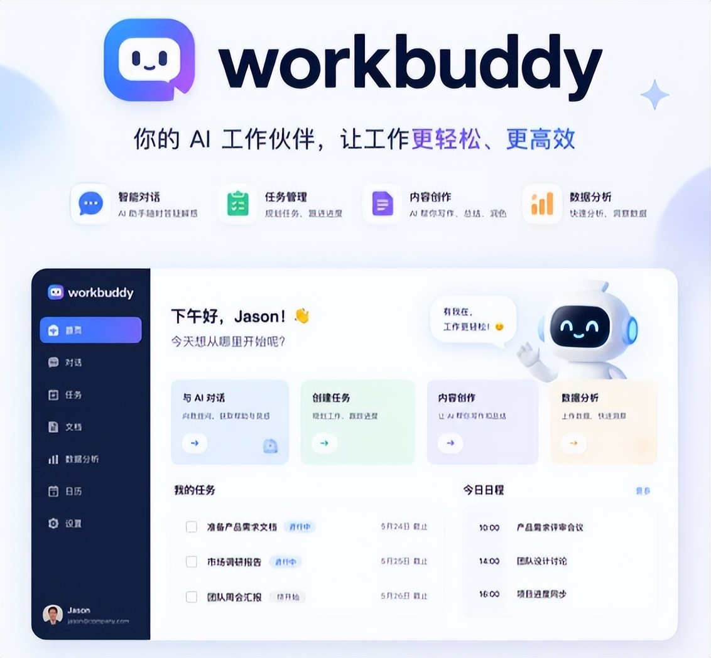
106.5 终局：多入口并存
业内曾有「赢家通吃」的猜测，但文章认为现实更可能指向多入口并存。企业级产品切换成本极高，一旦用户养成习惯并沉淀数据资产，替换成本呈指数级上升；不同行业、人群的工作流差异，决定了单一入口无法包揽所有需求。文中以金山办公推出 WPS 灵犀 / WPS Comate 正面争夺入口为例，指出其底气来自 6.78 亿台设备全球月活与 38 年用户习惯护城河，短板则是缺乏自研基础模型能力。IDC 则预测 2026 年中国企业级 Token 消耗量将较 2025 年增长约 20 倍。
这篇行业观察与本书第二十五、二十六部分的市场数据相互印证：WorkBuddy 凭借微信 / 企微入口与「手机遥控电脑」的差异化能力，在「意图解释权」之争中占据了有利身位。对普通用户而言，把高频、跨应用的办公流沉淀到 WorkBuddy，既是效率投入，也是在为未来的「数字工作空间」入口占位。
《把活交给 AI》橙皮书（上篇）：认知·入门·进阶
信源：腾讯云架构师技术同盟 / AI大眼萌《首发！把活交给 AI：WorkBuddy 小白上手橙皮书（上篇：认知篇、入门篇、进阶篇）》（2026-08-05，腾讯云开发者社区原创）。本章为社区创作者实战教程整理，书中功能、权益以 WorkBuddy 官方实时版本为准。
107.1 这本书写给谁
《把活交给 AI》专为零基础职场人而写：不堆术语、不画大饼，目标是 10 分钟跑通第一次，当天就能用上「急救五连」「动手四连」。全书 6 篇 19 章，陪你从「遇事才找 AI」走到「AI 成了懂你的搭档」。作者 AI大眼萌有近 20 年项目管理经验，内容由众多 WorkBuddy 用户实战经验整理而来。一句话定调：签字的笔，始终在你手里——AI 是同事，不是替代你做决策的人。
107.2 认知篇：工作伙伴 ≠ 聊天 AI
| 维度 | 聊天 AI | WorkBuddy |
|---|---|---|
| 关系 | 你问它答、聊完即忘 | 把活交给它，替你跑完，还记你是谁 |
| 能力 | 给建议 | 读改文件、定时跑流程、远程接指令、记习惯 |
| 你的角色 | 自己干 | 下指令、把关、拍板 |
旧工作逻辑是「我会所以我做」，新书主张「该我做的我才做，重复的给 AI」——你从执行者变成审改者。跑通一次就存下来（如存成 Skill），是高手的第一条习惯。
107.3 入门篇：当天就能用上的两套连招
指令四要素：做什么 + 有什么 + 怎么样 + 给样本。给的样本越具体，输出越贴近你想要的。
办公急救五连
① 周报（列要点→生成≤200字→改发）；② 脏表格（去重填空统一日期带公式）；③ 会议纪要（文字稿→三句结论+待办+两风险）；④ 竞品 PPT（给链接→出 5 页对比初稿）；⑤ 群聊转清单（事/提/认领/截止，待确认单列）。
让它动手四连
① 整理桌面（必加「先列计划给我确认」）；② 发票台账（拍照→识别金额抬头生成报销表，敏感打码）；③ 生活外包（比价/日程只查不动）；④ 选区编辑（Word 里框选→「压到两句」，大改先小试）。
107.4 进阶篇：自动化 · 第二大脑 · Skill
- 每日节奏：前瞻 + 定时自动化（如每天 08:00 抓 AI 新闻存 md）；微信遥控本机 / 云端两种模式。四条铁律：手动跑两次再自动化、路径格式写死、远程破坏操作人确认、换机备份。
- 第二大脑：云端 ima（ima.qq.com）建主题知识库，对话 @知识库 调取；本地 LLM Wiki 自动成 Markdown 百科。三层存储：MEMORY.md（人设/偏好/禁用词）→ 知识库（素材）→ Skill（流程）。心法：记忆交 AI，思考留自己。
- 流程复用：Skill 跑通 1–3 轮即「保存为 Skill」；专家可单次切换或写进 MEMORY 固定；多 Agent 分工（研究员生成 + 风控只审不写，决策权归你）。
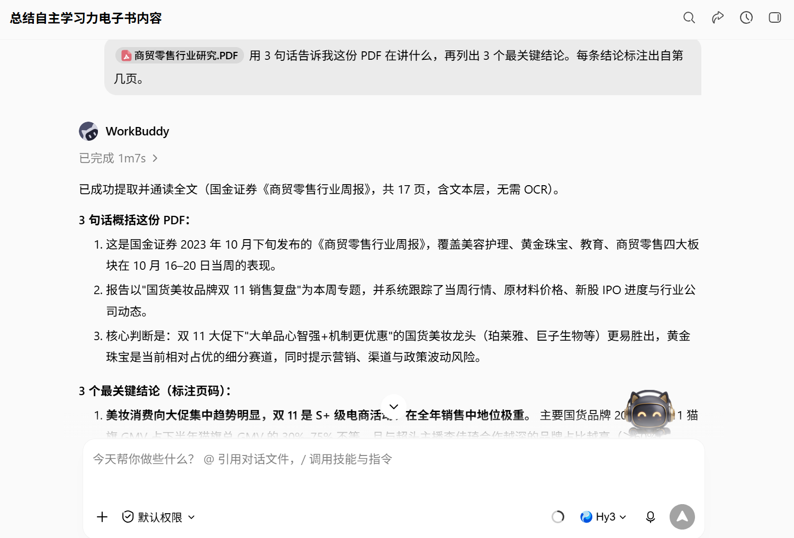
上篇把「新手怕用不好 AI」拆成了可立即照做的动作：四要素指令 + 急救五连 + 动手四连 + 定时自动化。与其收藏一堆教程，不如今天就跑通一个「周五周报」Skill——这正是本书第七部分「最佳实践」与橙皮书共同强调的「跑通即沉淀」心法。
《把活交给 AI》橙皮书（下篇）：场景·增值·边界
信源：腾讯云架构师技术同盟 / AI大眼萌《首发！把活交给 AI：WorkBuddy 小白上手橙皮书（下篇：场景篇、增值篇、边界篇）》（2026-08-05，腾讯云开发者社区原创）。本章为社区创作者实战教程整理，相关功能以 WorkBuddy 官方实时版本为准。
108.1 场景篇：和你差不多的人怎么用
| 人群 | 关键做法 |
|---|---|
| 职场新人 | 资料传 ima 云端知识库→AI 讲业务；周报/纪要封装 Skill；附 30 天落地清单与效率对比表 |
| 管理者 / 资深员工 | 琐事交 AI、独家判断亲为；团队共享汇报 Skill + MEMORY 固化文风；多 Agent 虚拟圆桌互相制衡挑错 |
| 自由职业 / 自媒体 | 客户沟通/报价自动化；OPC「一人公司」Skill；选题库→多 Agent 产出→GEO 合规诊断→人工终审（两条铁律：有回路迭代、发布人工确认） |
| 学生 | 课程知识库 + 考点拆解 + 私教答疑；论文红线：AI 只辅框架/润色/格式，禁代写正文 |
108.2 增值篇：标书 · 原型 · 小团队
- 技术标书全自动：SkillHub 装
biaoshu-writer-pro→ 上传招文 → 逐条溯源出稿 → 人工核验参数/资质；涉密走本地沙箱。铁律：AI 出初稿，签字风险人担。 - 零代码产品原型：非技术人用 Web 开发技能，按页面拆需求 → 自然语言出 HTML 原型 → 沙箱并行 → 人主导整合风格。传统数天→数小时。
- 3 人小团队 AI 共建：个人 Skill 实测 3 次后分发；MEMORY 统一标准；三人产研运闭环；安全红线（涉密不上公域等）。
108.3 边界篇：AI 安全红线
- 三级风险：红区（盘授权/不备份/高危操作/涉密传公域/密钥明文）；黄区（中文路径/忽略积分/超大文档）；绿区（Token 过期等）。
- 幻觉识别三招：强制溯源、交叉验证、警惕「完美文本」。
- 两条铁律：① Agent 只供素材、不替你决策；② 对外签字权永远在你。
- 三类事永不交 AI：价值判断、真实情感、临场应变。学生另加：论文正文不代写。
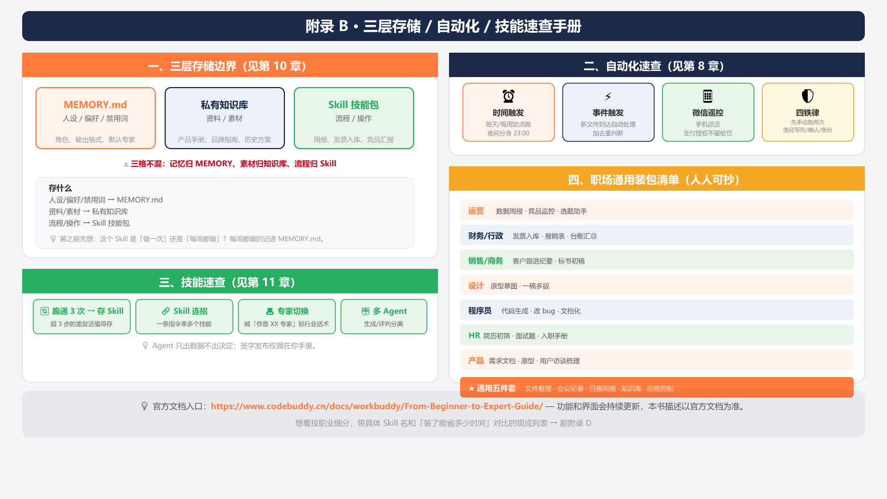
橙皮书的「三级风险 + 三类事不交 AI + 签字权在人」与本书第二十六部分「安全中心」、第二十七部分的安全规范完全同频：WorkBuddy 默认开启安全沙箱与删除保护，但用户自身的涉密不传公域、密钥不明文、对外文件过手再发，仍是不可让渡的底线。
保姆级！WorkBuddy 万字长文教程：核心功能逐一拆解讲透
当下最火的 AI 工具，WorkBuddy 绝对榜上有名。你丢个活给它，它自己规划、自己操作电脑、自己处理文件，最后把成品端到你面前——不是给你一段建议让你自己干活，而是它干完、交差。一句话区分：ChatGPT、DeepSeek 这类是「顾问」，只动嘴给建议，活你自己干；WorkBuddy 是「员工」，你说它干，干完交付。这个差别，比任何一个单独的功能都重要。
为什么值得专门写一篇万字教程？因为「会干活的 AI」和「会聊天的 AI」操作逻辑完全不同。聊天你随便问，干活你得懂它的边界、权限、模式。下面把每个核心功能单独拆开讲，按「先装好 → 搞懂在哪派活、用哪种模式 → 选对模型 → 把权限这道安全关设明白 → 技能 / 连接器 / 自动化 / 专家助理 / 人机双写五大能力 → 实战 → 避坑与答疑」的路线走一遍。
109.1 五分钟下载安装，先把地基打稳
- 官网：copilot.tencent.com/work/，按系统选版本（Windows .exe / Mac .dmg）。
- 登录：微信扫码（推荐）或账号密码登录；第一次用直接扫码最省事。
- 工作空间：就是 WorkBuddy 读写的文件夹，建议按任务类型分（如「周报」「发票」「数据分析」），让默认权限判断更准；不指定也会自动开独立目录。
- 环境：想玩技能、搞自动化，提前装好 Node.js（LTS）和 Git；8G 内存以上更顺。
109.2 认识任务栏：你派活的地方
主界面底部输入框是「新建任务栏」，每一次对话是一个独立任务，可多任务并行。可直接把文件拖进对话框或粘贴路径；任务之间上下文独立，同一项目的活尽量放同一任务，它才记得住前因后果；生成过的文件可在下一条指令里引用（如「把刚才那份报告转成 PPT」）。
109.3 三种工作模式，逐一拆给你看
| 模式 | 行为 | 适用 |
|---|---|---|
| 问一问 Ask | 纯问答，绝不碰你的文件 | 问问题、查概念、出思路，零风险 |
| 做一做 Craft | 直接执行，建文件、改表格、跑命令 | 熟门熟路、后果可恢复的批量活 |
| 想一想 Plan | 先出方案，你确认了再动 | 不熟、重要、怕出错（新手默认） |
一句话记牢：Ask 动嘴不动手，Craft 直接上手干，Plan 先举手再干。模式可中途切换；重要文件先备份，Craft 改动有回退。
109.4 模型怎么选，别用错人
- DeepSeek：日常问答、写文案首选，快又便宜。
- 腾讯混元：中文写作、会议纪要强项，中文语感更到位。
- Kimi：截图识别、图片转文档等视觉活。
- MiniMax：表格、PPT 想快出结果时用。
- 智谱 GLM：长流程、复杂任务交给它（长链条更稳）。
轻量模型跑日常活几乎不烧钱，把重模型留给真正复杂的任务；结果不满意先怀疑需求是否说清，再怀疑模型。
109.5 权限系统：这道关不讲清楚不敢让你干活
- 默认权限：一层护栏。日常顺畅跑；一旦要删重要文件、动敏感路径、跑脚本或联网，会停下来让你确认。
- 完全访问权限：暂时拆掉护栏，少点几次确认，但也可能直接删东西——只在该信得过、可恢复的小活上短时间开，用完立刻切回默认。
- 三道防线：命令优先在沙箱里跑；删除走回收站兜底；改已有文件前自动备份（Windows 已支持），改坏能还原。
完全访问权限别长期开着。批量改文件前，单独建个文件夹只放副本，别拿原件冒险；敏感路径（系统目录、别人文件、带密钥配置）它会额外拦你。
109.6 技能 Skills：给 AI 注入专业知识
如果说连接器是 AI 的「手」（扩能力），技能就是 AI 的「脑」（扩知识深度）。WorkBuddy 自带数百个预设技能包（PPT 制作、海报生成、自动化报表、文件整理、翻译、代码助手…）。更狠的是自定义技能：用大白话让它在对话里现生成一个专属技能，不用写代码（如「做一个每周销售周报技能，输入原始数据就出标准报表」）。技能分用户级（全项目通用）与项目级（仅该项目共享）。记一句：技能是「怎么干」（方法、知识），连接器是「去哪干」（接入外部系统）。
109.7 连接器 Connectors：AI 的万能接线员
没连接器前，用 AI 干活得先「搬数据」（文档下载再上传、邮件复制再粘贴）。有了连接器，你只需说「帮我从腾讯文档里那份周报，整理出 100 字汇报」，它自己翻、自己读、自己给结果。平台预置连接器开箱即用：腾讯文档（直接读/建/改云端 Office，改完自动存回）、QQ 邮箱、TAPD、腾讯乐享、飞书、企业微信；第三方生态还有 Notion、可画、GitHub、北大法宝、企查查等。自定义连接器无限扩展：写代码接 MCP Server（改 ~/.workbuddy/mcp.json）或用 Webhook 把任意支持 HTTP 的服务插进来。配置预置连接器就三步：点「连接器」→「+」→ 选服务点「连接」→ 扫码/登录授权，看到绿色圆点即连上。授权时只勾必要权限。
109.8 自动化 Automations：你的赛博实习生
让 WorkBuddy 从「你喊才动」升级成「到了点自己就动」。判断标准：这件事我每周/每天都做、步骤差不多——就该做成自动化。创建时填：名称、提示词、触发规则（每天 9 点 / 每周五 17 点，界面一般可视化选择）、工作空间、执行模型（省积分选轻量）。真实例子：每天 9 点抓行业热点出简报、每周五 17 点汇总本周工作、每周日整理下载文件夹、每天生成日签图发团队群。保存后先手动「立即执行」测试一次。
109.9 专家与助理：外援和自己人
顶部「专家」入口能召唤一百多位垂直领域顾问（推荐指令格式：「我的身份」+「我的目标」+「具体问题」+「希望的输出格式」）。与之相对的是助理（Assistant）——你亲手养大的「自己人」，记得你的所有偏好、项目背景、常用路径，越用越像你肚子里的蛔虫，每次完成自动写「工作日志」，下次接着上次进度干。专家是雇来的顾问，助理是养大的自己人，两者不冲突：复杂任务可专家出方案、助理帮你落地。另提团队向功能「项目（Project）」：多人和多 AI 在同一空间并行协作，共享项目记忆、各自独立会话沙箱、实时预览迭代——个人用助理够，带团队做复杂项目再上项目空间。
109.10 人机双写：AI 直接坐你旁边改
最新也最实用的狠活。以前用 AI 写作像传纸条（写一段、复制给 AI、它改完、你粘回来）；现在 AI 直接坐到你文档旁，同时敲键盘。框选一段说「优化表达」就地改；圈一片数据说「做透视分析」自动出图表；PPT 空白区说「把结论排进来」直接填充。支持 Word、Excel、PPT 与云端腾讯文档就地协同。价值不在单次改写，而在「就在你工作流里」——你不用离开文档去另一个窗口找 AI，思路不中断。这一步让 AI 从「你打开的工具」变成「你身边的同事」。
109.11 五个实战案例
- 乱表格变报告：拖入销售 Excel，说「按地区和品类汇总，标出增长最快几项，做成图表」，它读文件、算数、出图，给你能接着改的真表格。
- 腾讯文档周报汇总：连腾讯文档连接器，说「汇总这 5 份周报，按项目分类生成部门汇总」，三分钟出结果（以前半小时）。
- 每日热点简报自动化：建自动化任务，每天 9 点抓 AI 行业热点生成 300 字简报。
- 两小时会议变一张待办表：把纪要丢进去，说「提取所有待办，按负责人和截止时间列成表格」。
- 一句话整理乱文件夹：说「按类型分类到 图片／文档／压缩包」，桌面瞬间清爽。
109.12 新手避坑 & FAQ 精选
- 坑一：完全访问权限别长期开着；坑二：别迷信「一句话操控一切」（三步鼠标搞定的事喊 AI 反而绕）；坑三：别把密钥、身份证号、客户隐私往里塞；坑四：别一上来就丢大活，先小后大。
- 收费吗？有免费额度，日常轻度基本够；重度调用模型或跑自动化耗积分，以官网为准。
- 数据安全吗？默认权限护栏 + 沙箱 + 回收站 + 自动备份；敏感操作要你确认，但别塞密钥隐私、连接器授权只给必要范围。
- 不会写代码能用吗？能。自定义技能和连接器才涉及配置，技能能用大白话现生成。
本章整理自腾讯新闻（腾讯官方账号）2026-08-06 发布的《保姆级！WorkBuddy万字长文教程：核心功能逐一拆解讲透（打工人必备）》。原文配官方界面截图（JS 懒加载，未提取到腾讯图床直链），故未下载本地配图；内容已按本书体例精编，版权与数据以官方页面为准。
腾讯研究院 AI 速递 20260806：Hy3 限免延至月底、Miora 接入 Hy3
腾讯研究院每日 AI 速递（2026-08-06）中，与 WorkBuddy 直接相关的新动态有两条，且均含此前版本未收录的具体事实：
110.1 混元 Hy3 限免延长至 8 月底（含排队机制）
- 腾讯 WorkBuddy 中的混元 Hy3 模型限时免费体验延长至 2026 年 8 月 31 日（与第二十五 / 二十六部分已收录的限免延期一致，本次新增执行细节）。
- 排队机制：因参与热度过高，官方对每日免费额度做了合理分配，资源繁忙时进入排队，每晚 23:00 至次日 8:00 资源更充足——可作为用户错峰使用 Hy3 的实操建议。
- 多模态边界：Hy3 为大语言模型，暂不含多模态；调用视频、图像等生成任务时会切换至相应多模态模型并正常消耗积分。
110.2 腾讯混元 Hy3 正式接入创意智能体 Miora
- Hy3 正式接入创意智能体 Miora，作为画布背后的思考模型，负责理解需求并统筹图像、视频、3D 与界面设计（补充第十九部分「妙境 Miora 创意智能体工作室」未含的模型底座信息）。
- Hy3 采用 MoE 架构，总参数 295B、单次激活 21B、最大支持 256K 上下文；官方评测称部分能力可达两至五倍参数旗舰模型水平。
- 接入后 Miora 更擅长理解模糊的中文需求，能将一句话拆解为完整品牌视觉项目并规划多交付物，减少返工与成本。
Hy3 限免延长（至 8/31）已在第二十六部分第一百零五章收录；本章补充其深夜排队机制与多模态边界两项新事实。Miora 接入 Hy3 为本书首次收录，归入第十九部分 Miora 主题的新底座说明。Hy3 调用量较上代暴涨 68 倍、曾登 OpenRouter 全球第一等数据已在第一百零五章记录，此处不再重复。
WorkBuddy 1.2.0 上线：手机端发起桌面任务、跨设备云端同步
2026 年 8 月 9 日，腾讯 WorkBuddy 移动端更新至 1.2.0 版本；8 月 10 日经腾讯科技《手机助手动态》、腾讯《混元动态》汇总报道，腾讯公关总监张军亦在社交平台确认该功能已上线。这是继 7 月 App 正式发布后，WorkBuddy 在「多端协同」上的关键补全。
111.1 核心新能力
- 手机端发起桌面任务：在手机上新建 AI 任务，远程驱动电脑端 WorkBuddy 执行复杂工作。
- 手机端查看与分享产物：直接查看 AI 生成的文稿、表格、幻灯片等办公文档，并支持分享。
- 跨设备云端同步：手机端可管理多台电脑，任务及 AI 生成内容实时同步，同一账号下所有设备的任务状态手机端全部可读。
- 对话体验优化：移动端交互细节打磨，降低多设备职场用户的流转门槛。
111.2 使用前提与注意事项
- 需在电脑端开启「锁屏远程」功能，手机才能远程调用电脑端执行任务。
- 远程调用期间电脑需保持运行；如使用笔记本，建议不要合上屏幕，避免进入休眠后正在执行的任务中断。
111.3 为什么重要
此前绝大多数 Agent 重活只能在电脑端操作，用户出门后无法跟进进度、临时加需求只能回电脑重来，打断工作流。1.2.0 把「任务发起—进度跟进—产物取用」搬到手机上，让 WorkBuddy 真正融入碎片化办公场景，也标志着国内 Agent 产品开始把「多端协同」当作标配能力。
本章整理自腾讯科技《手机助手动态》（2026-08-11 08:44）、腾讯《混元动态》（2026-08-11 04:53）对 WorkBuddy 1.2.0 的报道，原始信源为凤凰网科技（2026-08-10）、IT时代网（2026-08-10）及腾讯公关总监张军社交平台确认。原文未暴露腾讯图床（qqpublic.qpic.cn / developer.qcloudimg.com）直链，本次未下载本地配图；版本号与功能以 WorkBuddy 官方页面为准。
SkillHub 技能生态进阶：10 万+ Skill 中筛选「优质 20%」
2026 年 8 月 10 日，腾讯技术工程发文介绍 SkillHub 的最新发展：平台技能总量已达 10 万+（对比本书此前记录的 7 万+，平台持续高速增长），并着手解决「规模上来之后怎么挑」的问题。
112.1 平台新动作：从「规模」转向「精准匹配」
- SkillHub 通过差异化标签与推荐机制，帮用户在 10 万+ Skill 中筛选优质约 20%，缓解「平台堆积导致筛选成本上升」。
- 平台价值主张正从「什么都有」升级为「精准匹配」——竞争维度从「数量规模」转向「质量与匹配效率」。
112.2 对用户的含义
选技能时优先看官方标签与推荐流，避免被低质堆叠淹没；这也为「企业专属 Skill 共享、团队复用」扫清了选择成本障碍。本书第十九部分已系统介绍 SkillHub 与 Agent Runtime 生态，本章补充其进入「质量筛选」新阶段的事实。
整理自腾讯技术工程 2026-08-10 发文（经腾讯《混元动态》2026-08-11 收录，原始链接 view.inews.qq.com/a/20260810A09XZX00）。原文未暴露腾讯图床直链，本次未下载本地配图。书中既有「7 万+」数据为早期版本记录，本次以官方最新披露的「10 万+」为准。
WorkBuddy 被定位「第三个战略级产品」：饱和式投放与内部「一路绿灯」
2026 年 8 月 8 日，界面新闻披露、并经腾讯研究院《互联网大厂日报》（8/8）、腾讯科技《AI智能体信息日报》（8/9）收录：腾讯 WorkBuddy 的战略地位与获客打法出现标志性变化。
113.1 战略定位：继 QQ、微信后的「第三个战略级产品」
多家信源确认，WorkBuddy 已被列为腾讯 AI 应用中战略优先级最高的产品之一，内部流传「继 QQ、微信后第三个战略级产品」的说法；不少员工认为其今年大概率进入腾讯「名品堂」（里程碑式产品最高荣誉之一）。
113.2 饱和式投放与资源「一路绿灯」
- 5 月以来，WorkBuddy 广告从北京知春路铺到深圳高新园，北上广深地铁与写字楼密集投放，被评价为腾讯近年少见的饱和式产品投放。
- 马化腾亲自参与产品会议；团队提出的算力、技术、市场资源需求大多快速获批，内部形容「一路绿灯」。
113.3 市场地位（与本书一致的数据口径）
易观 2026 Q2 国内 PC 端 AI 原生办公智能体市场，WorkBuddy 以 2097 万次月访问量居首，月活 2000 万级、日活超 1300 万；7 月 QClaw 业务已调整至 WorkBuddy 部门，资源向 WorkBuddy 体系集中。
113.4 组织收口与竞争
产品已接入腾讯文档、企业微信、腾讯会议，支持混元、DeepSeek、GLM 等多模型；年内重点扩企业客户。阿里千问办公（8/3 公测）、字节飞书并入豆包被视为对其的反击，而腾讯生态的快速打通与本土化 Skill 被视为差异化优势。
整理自腾讯研究院《互联网大厂日报》（2026-08-08 14:59）、腾讯科技《AI智能体信息日报》（2026-08-09 13:31）对界面新闻 8/8 报道的收录。月活/访问量数据与本书第二十一、二十三、二十五部分一致，此处作为战略定位背景复述，不重复展开。原文未暴露腾讯图床直链，本次未下载本地配图。
腾讯云 Agent Memory 2.0 上线：团队记忆支撑 WorkBuddy 协作
2026 年 8 月 6 日，腾讯云宣布 Agent Memory 2.0.0 上线；8 月 10 日相关概念股异动（石基信息直线涨停），机构称将推动企业级 AI 软件迭代。其「团队记忆」能力与 WorkBuddy 的协作场景直接承接。
114.1 核心升级：Team Memory 从个人扩至团队
全新升级的 Team Memory（团队记忆）将长期记忆从「个人」扩至「团队协作」场景——这与 WorkBuddy 的「项目（Project）/ 多人多 AI 协作空间」直接对应，让团队共享上下文、沉淀协作记忆，而非每个成员各自积累。
114.2 与本书的关系
本书第一百零九章已介绍 WorkBuddy 的「项目」协作与「助理」长期记忆；Agent Memory 2.0 是从云基础设施层面为这类协作记忆提供底座，体现腾讯「个人 → 团队」记忆能力的工程化落地，也呼应 WorkBuddy 企业版「组织级智能体」的主线。
114.3 意义
企业级 Agent 落地的关键拼图：记忆不再只服务于单用户，而能跨成员、跨会话复用，降低「老人离职、经验带走」的损耗，让协作产生的能力沉淀为组织资产。
整理自腾讯云 Agent Memory 2.0.0 上线公告（2026-08-06）及腾讯《混元动态》（2026-08-11）、腾讯《腾讯动态》（2026-08-10）收录（原始信源每日经济新闻）。Agent Memory 为腾讯云产品，本章聚焦其与 WorkBuddy 团队协作记忆的承接关系。原文未暴露腾讯图床直链，本次未下载本地配图。
腾讯WorkBuddy 官方上线「多端同步」：三端实时同步与锁屏远程
2026 年 8 月 11 日 13:16，腾讯 WorkBuddy 官方账号发布《上班忘带电脑？别慌，WorkBuddy 打通手机和电脑了》（升级「多端同步」），正式宣布「多端同步」能力上线。这是在第一百一十一章所述 1.2.0 移动端跨设备协同基础上的完整版发布：PC、App、小程序三端打通，任务、对话记录与产物实时同步，并支持手机远程对电脑端任务进行授权、急停与切换项目。8 月 12 日，腾讯研究院《AI 速递 20260812》也将「腾讯 WorkBuddy 上线多端同步、打通手机与电脑」列为当日重点。
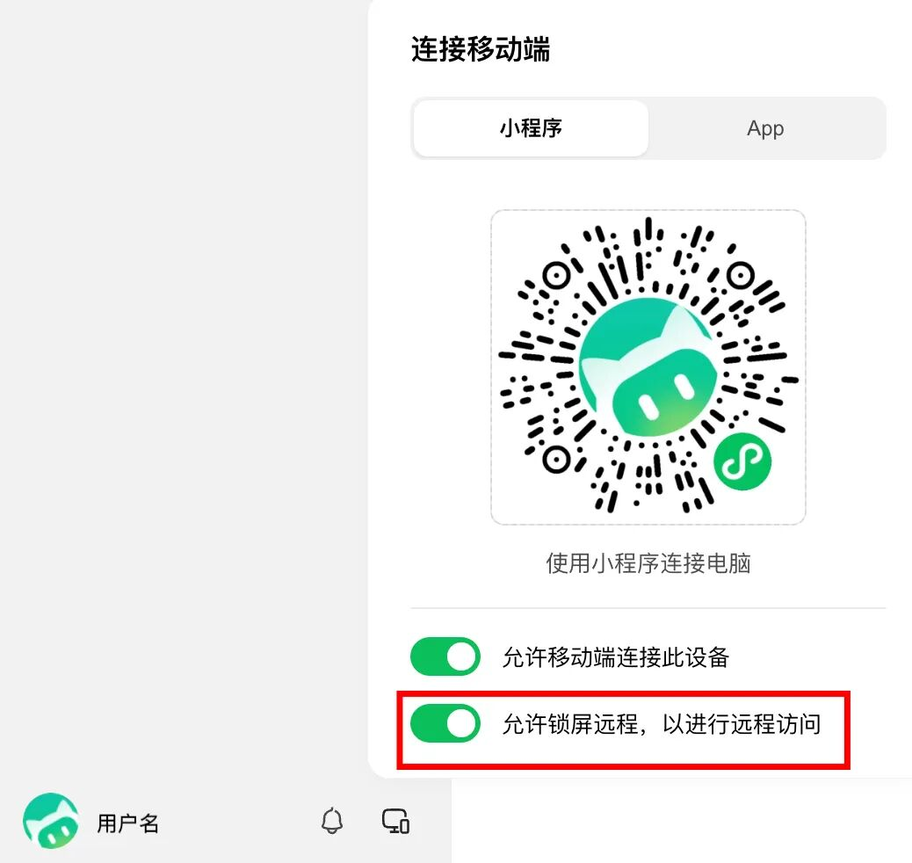
115.1 版本与接入要求
- PC 端需升级至 5.3.8 及以上；移动端 App 需升级至 1.2.0 及以上。
- 同一账号登录即可默认开启桌面端「允许移动端连接」开关，任务与工作空间自动同步，无需扫码、配对或手动授权。
- 连接成功后，设备区域显示「绿色圆点」 = 已连接 + Agent 正在工作，无需回工位即可了解任务状态。
115.2 三端实时同步：任务、对话、产物
PC、App、小程序三端的任务、对话记录与产物实时同步，随时随地在线，跨设备切换不再打断工作流。
- 跨项目一致：手机端完整复刻桌面端的「任务 + 工作空间」双分组结构，不同项目的任务列表互不串扰，切换项目无需退出。
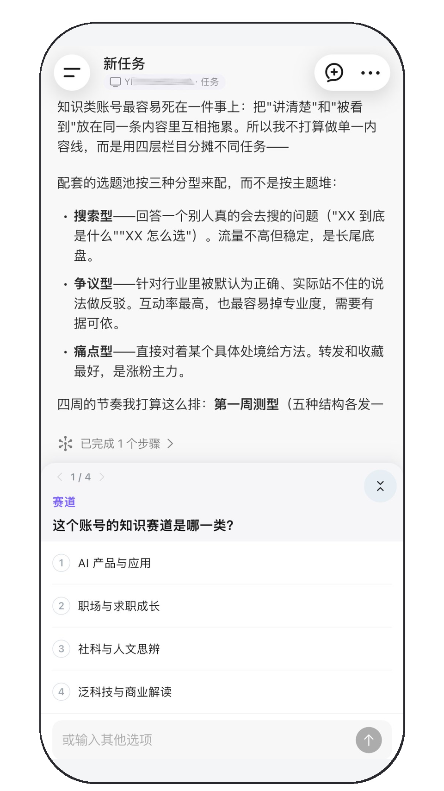
115.3 手机远程控制电脑，Agent 接着跑
- 点进任意对话即可看到 Agent 当前读取哪些文件、下一步要做什么，并远程完成授权与操作。
- 任务运行中点「停止」可远程急停电脑端 Agent 当前执行，调整指令后重新出发；停在哪一步、已产出什么完整留痕。
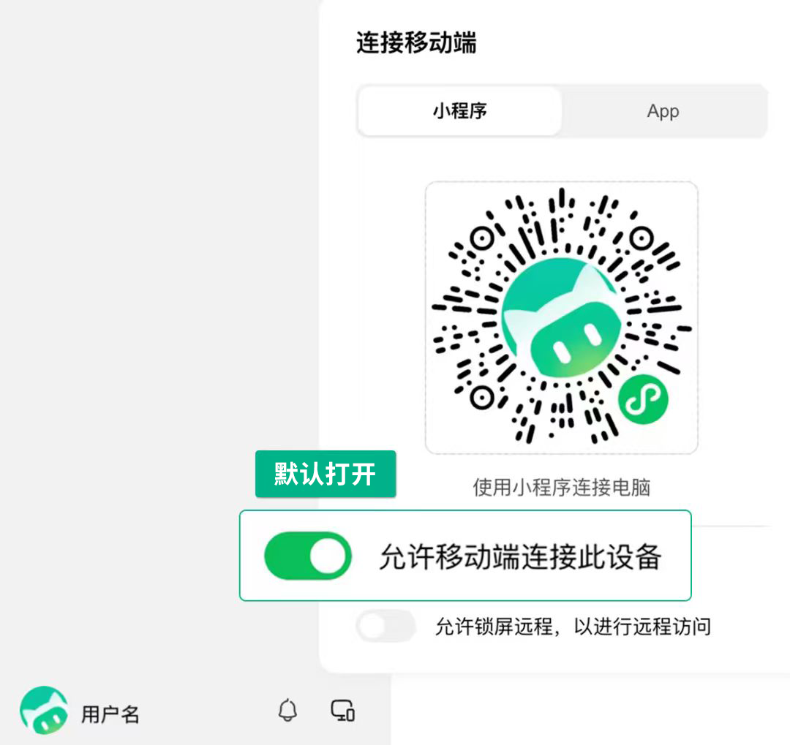
115.4 双端联动与多设备切换
- 双端协作：手机拍发票 / 传文档，电脑端 Agent 识别、分类归档、录入表格——手机采集、电脑处理，无需来回传文件。
- 一台手机可连接多台电脑，切换设备分别拉取不同电脑上的任务与工作空间列表。
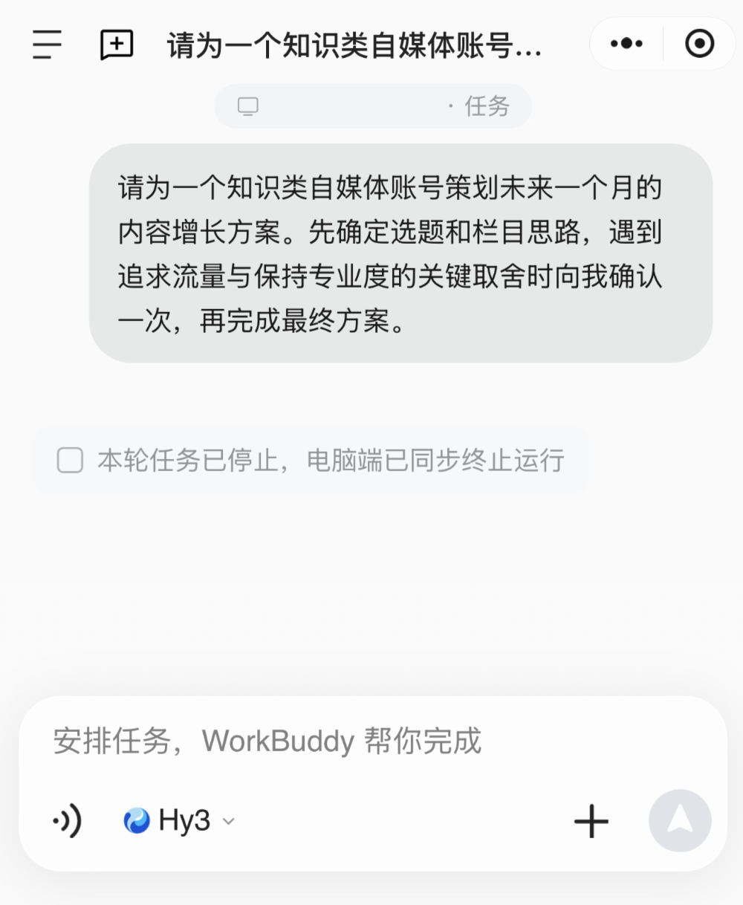
115.5 锁屏也可办公：锁屏远程
桌面端开启「允许锁屏远程」后，电脑不会自动休眠、屏幕不自动关闭，手机锁屏状态下仍可远程操控，Agent 该跑就跑，人无需一直盯屏。
115.6 与本书的关系
第一百一十一章记录了 1.2.0 移动端的「预览级」跨设备能力（8/9–8/10）；本章是官方账号于 8/11 给出的正式发布说明，补全了小程序同步、锁屏远程、工作空间分组同步、远程急停与「绿色圆点」状态等正式版细节。两者共同构成 WorkBuddy 多端协同能力的完整图景，也呼应本书「移动办公 / 远程协作」相关实战章节。
本章整理自腾讯 WorkBuddy 官方账号推文《上班忘带电脑？别慌，WorkBuddy 打通手机和电脑了》（升级「多端同步」，原创，2026-08-11 13:16，广东；原文链接 mp.weixin.qq.com/s/XKDwvBBnSvhcXdHGSZPNPQ），并经腾讯研究院《AI 速递 20260812》（腾讯财经聚合收录，同日将「腾讯 WorkBuddy 上线多端同步、打通手机与电脑」列为重点）交叉印证。5 张官方配图均来自微信公众平台图床（mmbiz.qpic.cn，即腾讯图床）并已下载至本地 assets/ 嵌入；版本号与功能以 WorkBuddy 官方页面为准。
腾讯云开发者：4 周上线鸿蒙电脑，WorkBuddy 团队用 AI 给自己造了个「捷径」
2026 年 8 月 12 日 08:45，腾讯云开发者官方账号发布《4 周上线鸿蒙电脑，WorkBuddy 团队用 AI 给自己造了个"捷径"》。文章披露：鸿蒙电脑第一款第三方智能体应用——WorkBuddy 鸿蒙电脑版，从正式启动到上架应用市场仅用 4 周，且大量开发工作由 WorkBuddy 自身的能力完成。这是继第一百一十五章「多端同步」之后，官方对 WorkBuddy 工程能力与跨端落地的最新一次公开复盘。
116.1 从零到一的适配挑战
鸿蒙版 WorkBuddy 移动端开发顺利，但 PC 端作为真正的桌面生产力工具，要同时保证内置数万款技能被稳定调用、管理本地文件时安全可靠、手机给电脑「派活」体验顺畅无缝——这绝非从其他系统简单复制粘贴代码。当时鸿蒙电脑应用市场还没有桌面智能体，没有现成的路可走。团队决定：把自家产品当成开发工具。
116.2 "用 WorkBuddy 开发 WorkBuddy"：四个真实场景
- 技术调研：把鸿蒙开发者文档、API 参考、社区讨论扔进 WorkBuddy，让它快速提取关键信息、对比方案、输出技术选型建议；原来一个人花一天啃的资料，十几分钟理清脉络。
- 代码辅助：从鸿蒙 UI 组件调用到桌面端特有的文件系统交互逻辑，WorkBuddy 协助完成大量代码编写与调试；遇到报错直接把日志丢进去，几分钟定位根因并给出修复方案。
- 测试验证：鸿蒙电脑版涉及多版本多机型，WorkBuddy 生成测试用例、模拟用户操作场景、自动比对预期结果，大幅缩短测试周期。
- 问题排查：线上兼容性问题中，把崩溃日志、设备信息、复现步骤输入 WorkBuddy，它能在海量数据中快速圈定问题范围甚至直接给出修复建议。
结果是：从正式启动到上架应用市场，只用了 4 周。文章强调，真正有意思的不是「4 周」这个数字，而是它展示的一种新开发范式——AI 不再只是辅助工具，而是参与了从调研、编码、测试到上架的每一个环节的「协作者」。
116.3 不是「问答机」，是「执行者」
文章借跨境电商 OPC（一人公司）的例子重申 WorkBuddy 的核心定位：它不是一个「你问我答」的聊天机器人，而是能听懂意图、自主拆解任务、直接干活的智能体工作台。其几项核心能力包括：
- 任务自主拆解：理解复杂指令，自动分解为可执行的多步流程。
- 本地+云端双引擎：授权前提下读取 / 操作本地文件，也能调用在线资料与工具。
- 多模态输入：文字、语音、拍照、文件导入，腾讯文档 / ima 知识库一键接入。
- Skills 生态：兼容 2.2 万+ 技能插件，覆盖 12 个行业的 140+「专家顾问」。
- 跨设备协同：手机端派活，电脑端干活，碰一碰无缝流转。
文中并援引易观最新报告：WorkBuddy 月访问量已突破 2000 万，位列国内桌面端 AI 办公智能体平台首位（与第一百章、第一百一十三章的市场数据相互印证）。
116.4 给鸿蒙开发者的两个信号
- 信号一：进入新生态的门槛正在被 AI 抹平。过去为一个新操作系统开发应用，得先啃下开发语言、框架、设计规范；现在即使没有现成经验，也能借助 AI 快速理解新环境、验证思路、完成基础开发——不必先成为「鸿蒙专家」再开始，可以在开发中让 AI 帮你变成「鸿蒙专家」。
- 信号二：AI 工具本身，就是最好的开发利器。WorkBuddy 用自家产品开发自家产品，本身就是最好的产品演示：一个 AI 智能体已足够强大到参与复杂软件开发流程。
116.5 人人都可以成为开发者
文章特别指出，这里的「开发者」不只是写代码的程序员——懂业务的产品经理、擅长设计的创作者、刚入门的爱好者，都可以借助 AI 工具完成过去只有专业开发者才能做的事。鸿蒙生态的开发者群体，正从「程序员」扩展到「每一个有想法的创作者」。
116.6 与本书的关系
本章是官方对 WorkBuddy 鸿蒙电脑版（HarmonyOS PC）工程落地的权威复盘，与第一百章「千问办公公测与大厂 Agent 大战全景」、第二十一部分「鸿蒙 PC 版与桌面全覆盖」、第一百一十五章「多端同步」共同构成 WorkBuddy 跨端战略（移动 / PC / 鸿蒙 / 小程序）的完整图景。其中「用 WorkBuddy 开发 WorkBuddy」的工程范式，也呼应本书第六~十部分关于 Skills、自动化与 Agent 工程的实战章节。
本章整理自腾讯云开发者官方账号推文《4 周上线鸿蒙电脑，WorkBuddy 团队用 AI 给自己造了个"捷径"》（原创，2026-08-12 08:45，北京；原文经搜狗微信索引 weixin.sogou.com 定位，mp.weixin.qq.com/s 真实地址以微信后台为准）。文中配图来源标注为「鸿蒙电脑应用市场 / WorkBuddy 团队 / 腾讯 WorkBuddy 官方公众号 / 华为开发者大会 2026」，WebFetch 未提取到可直接 curl 下载的腾讯图床（mmbiz.qpic.cn / qqpublic.qpic.cn / developer.qcloudimg.com）直链，故本次未下载本地配图，遵循 2026-08-07 起「无可提取图床直链则不落地图片」的先例。版本号、功能与市场份额数据以 WorkBuddy 官方页面及易观报告原文为准，未做推断。
腾讯WorkBuddy 资料库升级：AI 原生知识管理空间，让产物"活"起来
2026 年 8 月 13 日，腾讯 WorkBuddy 官方账号发布《WorkBuddy 重磅升级：内置 AI 原生资料库，让你的资料"活"起来》（腾讯新闻于 8 月 14 日同步刊发）。本次升级把"资料库"从文件收纳箱升级为AI 原生的知识管理空间——所有工作产物统一存放、人与 AI 共同读写协同；并新增"轻应用"能力，把 AI 生成的 HTML 网页与 CSV 数据打通，让网页能存数据、能协作、能发布。这是继 V5.3.5「人机双写」之后，WorkBuddy 在"产物可沉淀、可协作、可持续使用"方向上的又一次关键推进。
117.1 资料库：从"存文件"到"AI 知识空间"
- 统一存放：除 Word/Excel/PPT/PDF/音视频外，资料库新增支持 HTML、Markdown 等 AI 原生格式，让"人机共创"更顺畅。
- 人与 AI 共同读写、协同编辑：所有工作产物统一存放与管理，AI 能理解、编辑和使用其中的内容。
- 四个数据源：我的文件、腾讯文档、ima 知识库、乐享知识库（每个数据源需先授权 / 上传，再添加到对话）。
117.2 人机双写扩展到 HTML 与 Markdown
此前 V5.3.5 的"人机双写"覆盖 Office 三件套；本次升级将这一能力扩展到 HTML 与 Markdown——网页不再"能生成、改不了、协作不了"。
- HTML 人机双写：人可直接改、让 AI 改、邀请同事一起改；改完一键发布为公开网页链接。
- Markdown 智能审阅：支持多人批注、框选修改；AI 提出的修改以建议修订形式呈现，逐条接受后才写入正文，修改过程完全可控。
- 精细化编辑：选中页面中任意文字、图片、区块，输入需求，AI 直接在原文里完成编辑；随时评论、实时对话不脱离上下文。
- 邀请协作：直接邀请同事进入文件同时修改，实现 HTML/Markdown「人+人+机」协同体验。
117.3 轻应用：一句话搭出会存数据的网站
过去 AI 生成的 HTML 多是"一次性"静态页，分享要打包、存不了数据。本次升级上线"轻应用"：以 HTML 做前端展示、CSV 承担数据存储，AI 把两者连接起来，实现实时双向同步。
- 三步搭建：对 WorkBuddy 说"用资料库能力帮我做一个 xxx，实现数据在线存储和双向同步" → 自动新建在线表格 → 表格与页面双向同步 → 一键发布为链接。
- CSV 不止存文字：合同、发票、图片、设计稿等文件也可直接存进单元格，并同步显示到 HTML 页面。
- 典型场景：记账、打卡、客户跟进、项目管理、库存管理、经营看板、自媒体运营工作台等。
117.4 一手实测佐证（智东西 8/13）
智东西以零代码、免费版混元 3 实测：按官方案例生成"自媒体运营工作台"，从生成、修改到数据联动走通完整链路——工作台与 CSV 建立双向连接，改一端另一端同步刷新。实测也发现若干限制：大标题手动修改受限、AI 编辑偶需多次尝试、首会话无法直接进编辑模式（需打开资料库开新会话）。整体上，"轻应用"已具备从生成到修改再到数据同步的完整闭环。
117.5 版本与定位说明
腾讯发布稿将本次升级归入 5.3.11（"发布 5.3.11 版本，资料库功能迎来重大升级"）。需说明：据 workbuddy.cn 官方更新日志，5.3.11 标注日期为 2026-08-07，并另有 5.3.12（2026-08-12）版本，具体功能归属以官方更新日志为准，本书不臆造版本号。官方将本次能力概括为"AI 原生的办公三件套"：HTML 负责呈现、Markdown 管轻量写作、CSV 承载数据，由 AI 连接。
117.6 与本书的关系
本章与第四十六章 / 第六十三章「人机双写（V5.3.5）」形成递进：人机双写从 Office 三件套扩展到 HTML/Markdown，并叠加"轻应用"使产物可沉淀为持续使用的工作台；与第一百一十五章「多端同步」、第一百一十六章「鸿蒙电脑 / 跨端」共同构成"产物跨端可用、可协作、可发布"的完整闭环。本书第十七部分更新日志与第一百一十三章市场数据亦可一并参照。
本章整理自腾讯 WorkBuddy 官方账号推文《WorkBuddy 重磅升级：内置 AI 原生资料库，让你的资料"活"起来》（2026-08-13；经搜狗微信索引 weixin.sogou.com 定位，mp.weixin.qq.com/s 真实地址以微信后台为准），及腾讯新闻 new.qq.com/rain/a/20260814A01X7L00（2026-08-14 02:44，北京）同步刊发；智东西 news.qq.com/rain/a/20260813A0DWRA00（2026-08-13 21:30，一手实测）交叉印证。配图 2 张来自腾讯图床 qqpublic.qpic.cn（so.html5.qq.com 新闻聚合页内嵌），已下载至本地 assets/ 嵌入。版本号以发布稿所述 5.3.11 为准，并已在 117.5 标注与 workbuddy.cn 官方更新日志日期的细微差异，未做推断。
腾讯 2026 年第二季度财报：WorkBuddy 数据全景与 AI 战略定调
2026 年 8 月 12 日，腾讯控股（00700.HK）发布 2026 年第二季度财报。这是 WorkBuddy 被定位为"第三个战略级产品"、月访问量登顶之后，首次在集团季度财报中以明确数据披露其增长与商业化进展。马化腾在财报中重申"正在智能、应用与基础设施三个层面构建 AI 赋能的腾讯"，WorkBuddy 与 CodeBuddy 被列为应用层突破性增长代表。（注：本财报发布于 2026-08-12，上次 8/13 运行未命中，本次补融。）
118.1 集团财务大盘（AI 投入视角）
- 营收 2047.9 亿元，同比 +11%。
- Non-IFRS 经营利润 756.4 亿元，同比 +9%；剔除新 AI 产品（Hy / 元宝 / CodeBuddy / WorkBuddy / 小微）收支影响后同比 +19% 至 861 亿元。
- 研发支出 272.8 亿元，同比 +35%。
- 资本开支 527.8 亿元，同比 +176%、环比 +65%（算力采购大幅加码）。
118.2 WorkBuddy 关键数据
- 任务解决率由 72% 提升至 90%（接入 Hy3 后），模型与产品协同设计成效显著。
- Hy3 调用：在 OpenRouter Token 消耗量持续位列全球前三，日均 Token 用量达 preview 版 7 倍；WorkBuddy 自选模型用户中选 Hy3 占比 60%。
- 市场份额：据易观《2026 Q2 中国办公智能体平台市场洞察》，WorkBuddy PC 端 6 月访问量 2097 万次，国内第一、超第二三名之和；月访问量前十腾讯占四席（WorkBuddy / CodeBuddy / QClaw / Marvis）。
- 落地与商业化：已落地 50+ 行业，企业版正式发布。
118.3 AI 战略三层与产品矩阵
- 智能层：Hy3 正式版（相对小参数规模可比肩 2–5 倍旗舰），Hy4 计划近期上线。
- 应用层：WorkBuddy、CodeBuddy 突破性用户增长；微信 AI 助手"小微"6 月上线扩大灰测；企业微信 AI 助理"大圆"上线。
- 基础设施层：大幅增加算力采购，将应用及模型的使用转化为收入。
118.4 与本书的关系
本章与第一百一十三章「第三个战略级产品 / 饱和式投放」、第一百一十六章「易观月访问量破 2000 万」相互印证并补全财务与解决率数据；与第四十六章 / 第六十三章「人机双写」、第一百一十七章「资料库 AI 原生升级」共同说明 WorkBuddy 从"能力发布"走向"规模化营收与留存"的阶段。财报未单列 WorkBuddy 独立营收，仅披露其在新 AI 产品组合中的增长与"现金收入高速增长"定性表述（据腾讯科技 / 腾讯业绩会报道），本书以官方财报原文及易观报告为准，未做推断。
本章整理自腾讯控股 2026 年第二季度财报（2026-08-12 发布）；腾讯新闻 new.qq.com/rain/a/20260812A0BZ8F00（潮新闻，2026-08-12）及上观新闻、网易财经、闪电新闻等同步报道；易观《2026 年 Q2 中国办公智能体平台市场洞察报告》为市场份额数据原始出处。财务与产品数据以腾讯财报原文及易观报告为准；"现金收入高速增长"为腾讯科技 / 腾讯业绩会报道对该财报中新 AI 产品组合的定性表述，非财报单列数字。版本号、功能与市场数据均未做推断。
腾讯云"王炸组合"：十大专业级技能，启信慧眼与什么值得买入选
2026 年 8 月 14 日，腾讯云在《腾讯动态》聚合中发布 WorkBuddy"王炸组合"——围绕消费、法律、金融、设计、营销等十大专业领域，集中展示一批具备专业服务能力与实际应用价值的 Skill，标志着 WorkBuddy 的技能生态从"通用工具"进一步走向"专业赋能"。同日及次日（8 月 15 日），腾讯官方账号《腾讯早报》将"启信慧眼入选 WorkBuddy 十大专业级技能""一周双更打通多端同步·改 HTML 如改 Word"列为当日要点，侧面印证"王炸组合"系 8 月 11–13 日版本双更（多端同步 + 资料库 AI 原生升级）之后的生态补全动作。
119.1 "王炸组合"是什么
据腾讯云发布的《腾讯动态》（2026-08-14）聚合条目："腾讯WorkBuddy发布王炸组合，覆盖十大垂直领域，什么值得买及启信慧眼等专业 Skill 入选；此前 8 月 11 至 13 日版本双更打通多端同步与 AI 原生文档协同。"即"王炸组合"并非单一版本功能，而是 WorkBuddy 在 5.3.11/5.3.12 双更（多端同步、资料库 AI 原生升级、轻应用）之后，面向专业场景集中梳理并力推的一批精选 Skill 合集，覆盖消费、法律、金融、设计、营销等十类专业领域。其定位与第一百一十二章「SkillHub 在 10 万+ Skill 中筛选优质 20%」的"平台从『什么都有』转向『精准匹配』"方向一致——从"海量技能"进阶到"官方优选的专业级技能"。
119.2 启信慧眼：入选"十大专业级技能"的企业数据服务
合合信息旗下启信慧眼入选腾讯 WorkBuddy"十大专业级技能"，其"AI 供应商管理专家"组件已上线，支持一键调用超过 200 项数据接口，覆盖工商信息、司法风险、知识产权、经营数据等模块，将专业数据服务融入 AI 办公工作流。启信慧眼数据调用服务已上架 WorkBuddy、ima、千问办公、TraeWork、MiniMax Agent 等多个主流 AI 办公平台。在金融对公尽调等场景中，过去客户经理需在数十个页面间逐项翻查工商、股权、融资、经营风险等数十项指标，接入启信慧眼后，用户一句话指令即可让智能体自动完成调研，并输出带有明确结论与数据来源的尽调报告，从源头降低 AI"幻觉"与"不可溯"风险。对大型集团采购场景，其"供应商管理专家"组件将核验逻辑、判断标准嵌入 AI 工作流，人工仅需复核数据来源与用途，实现核验、总结、留痕的标准化处理。
119.3 什么值得买：唯一入选的消费决策类 Skill
据什么值得买官方披露（2026-08-14），"什么值得买购物管家"Skill 凭借消费决策服务能力成为"王炸组合"中唯一入选的消费类专业 Skill。用户在 WorkBuddy 中只需一句话描述购物需求，购物管家 Skill 便能基于预算、使用场景及个性化偏好，提供商品推荐、口碑总结、同类商品对比及跨平台价格与优惠查询；自 WorkBuddy 上线以来该 Skill 月均输出量增长 14%。值得买科技自 2024 年 9 月与腾讯达成战略合作，其"海纳"MCP Server 已接入腾讯元器，本次入选标志着双方合作从"智能体及数据服务接入"扩展至"具体任务的专业 Skill 协同"。
119.4 与本书的关系
本章与第一百一十二章「SkillHub 10 万+ Skill 精准筛选」、第二十八章起各"橙皮书/官方动态"章节共同构成 WorkBuddy 技能生态演进的证据链：从"技能数量扩张"（7 万+ 至 10 万+）到"官方优选专业级技能"（王炸组合·十大专业级技能），再到"专业数据/消费决策 Skill 落地"（启信慧眼、什么值得买）。这也与第一百〇七、一百〇八章提及的"Skill 与多 Agent 协同"、附录 A1 推荐技能清单形成呼应——专业级 Skill 的引入，进一步降低了垂直场景（金融尽调、采购风控、消费决策）的使用门槛。版本与日期以腾讯云《腾讯动态》聚合发布（2026-08-14）及《腾讯早报》（2026-08-15）为准，未做推断。
本章整理自腾讯云《腾讯动态》聚合发布（new.qq.com/rain/a/20260814A0BYRL00，2026-08-14，条目 6"腾讯WorkBuddy发布王炸组合…启信慧眼等专业 Skill 入选"）；腾讯官方账号《腾讯早报》（new.qq.com/rain/a/20260815A03MSB00，2026-08-15 07:21，条目 9"启信慧眼入选十大专业级技能"、条目 11"一周双更"）；第三方媒体佐证：光明网 tech.gmw.cn《专业数据服务加速融入AI办公流》（2026-08-14）、新浪财经 finance.sina.com.cn《AI办公入口争夺白热化，专业数据服务成平台"标配"》（2026-08-14）、搜狐 www.sohu.com《腾讯WorkBuddy发布：什么值得买购物管家Skill入选王炸组合》（2026-08-14）。"王炸组合"覆盖十大专业领域、启信慧眼 200+ 接口、什么值得买为唯一消费决策类 Skill 等表述以腾讯云聚合发布与厂商官方披露为准；该动态为官方聚合/转载与第三方媒体报道，未暴露腾讯图床（qqpublic.qpic.cn / developer.qcloudimg.com / mmbiz.qpic.cn）直链，本次未下载本地配图。版本号未做推断。
腾讯新闻 × WorkBuddy「智见价值：寻找 100 位财报价值捕手」创作者计划
2026 年 8 月 14 日，腾讯新闻联合腾讯 WorkBuddy 正式启动「智见价值：寻找 100 位财报价值捕手」创作活动，面向全网财经、产经创作者及上市公司研究爱好者开放投稿，活动周期为 2026 年 8 月 13 日至 9 月 10 日。这是 WorkBuddy 在金融投研垂直场景一次标志性的"官方搭台 + AI 工具赋能"联动：活动明确将 WorkBuddy 作为创作者拆解财报的推荐 AI 工具，并强调其已接入通达信、东方财富妙想、同花顺 iFinD、恒生聚源等专业金融数据源。
120.1 活动机制与激励
活动征集图文与视频两类作品，设置总额 3 万元创作激励：金牌作品 1 篇（单篇 5000 元）、银牌作品 5 篇（单篇 3000 元）、优秀作品 5 篇（单篇 2000 元）。评审由腾讯新闻及业内专家组成，围绕专业度、创作深度、数据表现、创意表达等维度评估，结果于活动结束后 30 日内公布。对符合主题的作品，平台鼓励在投稿中体现 WorkBuddy 的辅助分析与创作过程——图文可展示处理文件、分析数据的演示截图或在正文标注，视频需呈现使用 WorkBuddy 辅助创作及数据分析的生成过程（相关画面不少于 10 秒）。
120.2 四大创作方向
活动聚焦上市公司 2026 年半年报，划分四大创作参考方向：① 公司财报解读（盈利能力、偿债能力、成长能力、现金流质量、业务结构、市场估值等维度穿透至商业本质）；② 同行业对比解读（横向比较净利润、毛利率、研发投入、业务结构、高管薪酬等，复盘行业景气度）；③ 上半年新股研究（结合招股书与上市后表现分析业绩兑现与估值变化）；④ 财报基础知识科普（通俗讲清毛利率、ROE、经营现金流、商誉、存货、应收账款等指标）。
120.3 WorkBuddy 在投研场景的定位
活动官方推荐创作者使用 WorkBuddy 辅助分析与创作，其价值在于：上传半年报 PDF 后，可用自然语言驱动完成文件提炼、资料收集、数据整理、框架搭建等耗时环节，把精力留给独立判断与专业分析。WorkBuddy 提供丰富的专家功能及金融投研类 Skill，并已接入通达信、东方财富妙想、同花顺 iFinD、恒生聚源等数据源，覆盖行情、财报、研报、宏观等多类数据。官方给出的可直接套用提示词包括：单家公司财报结构化分析（输出含页码标注的指标表）、三家同赛道公司合并口径对比、以及搭建"半导体财报观测台"定时巡检任务——后者可配置异动告警（如净利润亏损启用红色预警）并每周一自动核查新发财报。
120.4 与本书的关系
本章与第一百一十八章「腾讯 2026 Q2 财报：WorkBuddy 数据全景」、第一百一十九章「王炸组合十大专业级技能」共同印证 WorkBuddy 在金融专业场景的纵深：从财报数据披露（Q2 财报），到专业级金融 Skill（启信慧眼企业数据服务），再到以"创作者计划"形式把 WorkBuddy 推到金融内容生产一线（投研 Skill + 四大金融数据源接入）。这也与附录 A1 推荐技能清单、第二十一章集萃的金融 / 投研类工作流相互呼应，显示 WorkBuddy 正从"通用办公"向"专业垂类赋能"加速落子。
本章整理自腾讯新闻 × 腾讯 WorkBuddy 联合发起的「智见价值：寻找 100 位财报价值捕手」活动公告（2026-08-14 启动，活动周期 2026-08-13 至 2026-09-10），经腾讯《腾讯动态》（new.qq.com/rain/a/20260814A0BYRL00，2026-08-14 条目 12"腾讯新闻联合发起财报创作计划"）、腾讯财经、腾讯《混元动态》（news.qq.com/rain/a/20260814A0AZKO00，2026-08-14 条目 4）收录。活动激励金额、四大创作方向、接入的金融数据源（通达信 / 东方财富妙想 / 同花顺 iFinD / 恒生聚源）及官方示例提示词均以活动公告原文为准；配图 1 张（活动主视觉 banner）来自腾讯图床 qqpublic.qpic.cn，已下载至本地 assets/ 嵌入。版本号与功能未做推断。
大湾区架构师峰会落地「WorkBuddy 开发者沙龙」，前海首站启动全国巡回
2026 年 8 月 15 日，以"潮起潮落，你我仍在"为主题的 2026 腾讯云粤港澳大湾区架构师峰会在深圳前海 5 号楼举办，由腾讯云架构师技术同盟、腾讯云 TVP 联合主办，设置主论坛、六大平行分论坛、技术竞技场及科技成果展区，超 1000 位来自粤港澳三地的政界、学界、产业界及创投机构代表参会。峰会上，腾讯云现场正式启动 "WorkBuddy 开发者沙龙"，深圳前海作为全国首站拉开序幕，后续将在成都、深圳等首批重点城市持续开展——这是 WorkBuddy 首次以"线下开发者沙龙"形式进入城市巡回，标志着其生态运营从线上技能市场延展到线下技术社区。
121.1 WorkBuddy 开发者沙龙是什么
据腾讯云开发者生态总监李佳忆现场介绍，"WorkBuddy 开发者沙龙"聚焦在推广优秀 AI 工具，帮助更多人群改变生活并提高工作效率。沙龙定位为"聚焦 WorkBuddy 与 AI 应用实践"：技术与行业专家围绕真实痛点展开分享与实操，带来可复用的方法、可落地的经验，帮助开发者与广大用户更快把 AI 用好、用透。其全国城市巡回计划由腾讯云开发者社区统筹，招募同步开放，诚邀共建。这与 WorkBuddy 自身"降低 AI 使用门槛、让普通人也能用自然语言驱动智能体干活"的产品理念一脉相承。
121.2 林强代表 WorkBuddy 参与技术人价值对话
峰会上，腾讯云 WorkBuddy 首席架构师林强受邀出席圆桌论坛「浪潮对话：几代技术人思考」，与墨问西东 CEO 池建强、技术专家廖雪峰、95 后连续创业者谢扬同台，围绕"代码变便宜以后，什么更贵""经验还值不值钱""什么该守、什么该放"等议题，探讨 AI 时代技术人如何重塑核心竞争力。林强的出场，意味着 WorkBuddy 已从"被报道的产品"进阶为"在核心开发者圈层拥有话语权的技术品牌"，其与大湾区架构师技术同盟的绑定，也为后续城市巡回沙龙提供了稳定的专家与渠道资源。
121.3 同期生态成果
峰会现场还落地多项生态成果：前海 5 号楼、前海深港青年梦工场、前海国际 OPC 社区等组成的前海科创人才社区同盟，与腾讯云架构师技术同盟联合成立"大湾区 AI 科创社区生态联盟"，并发布"大湾区 AI 领军人才引育计划"（前海提供税收优惠、人才补贴、产业支持，腾讯云提供顶级交流圈层、技术荣誉认证、个人成长赋能，共计十六项专属权益）。前海已集聚人工智能重点企业 532 家，释放超 26 万平方米产业空间，为 WorkBuddy 开发者沙龙的落地提供了真实的产业与人才土壤。
121.4 与本书的关系
本章与第一百一十六章「4 周上线鸿蒙电脑，用 WorkBuddy 开发 WorkBuddy」、第一百一十九章「王炸组合十大专业级技能」共同勾勒 WorkBuddy 生态扩张的三条线索：自研效率（鸿蒙 4 周上线）、技能生态（十大专业级 Skill）、开发者社区（城市巡回沙龙）。对读者而言，WorkBuddy 开发者沙龙是离"线下实操、专家带练"最近的一扇门——若所在城市入选首批重点城市，可优先参与，把书中工作流与一线专家经验直接对接。
本章整理自 2026 腾讯云粤港澳大湾区架构师峰会报道：南方都市报（网易订阅，2026-08-15 22:34，记者任贺）、香港商报（hkcd.com.hk，2026-08-15，记者王娜）、腾讯《腾讯早报》（new.qq.com/rain/a/20260816A03ED700，2026-08-16 条目 2"腾讯云大湾区架构师峰会在前海举办"）、腾讯《互联网大厂日报》（new.qq.com/rain/a/20260816A032N300，2026-08-16 条目 10）。"WorkBuddy 开发者沙龙"启动、前海首站与全国巡回、李佳忆介绍、林强出席圆桌等事实以峰会官方发布与南方都市报 / 香港商报报道为准；报道配图来自网易图床（nimg.ws.126.net）及前海供图，非腾讯图床（qqpublic.qpic.cn / mmbiz.qpic.cn / developer.qcloudimg.com）直链，故本次未下载本地配图，遵循 2026-08-07 起"无可提取图床直链则不落地图片"的先例。版本号未做推断。
腾讯电子签「资深合同法务专家」：把合同最后一公里交给 WorkBuddy
2026 年 8 月 14 日，腾讯 WorkBuddy 联手腾讯电子签推出「资深合同法务专家」，在既有合同起草、审查、对比、法规检索四类能力之上，新增关键一环——合同签署：用户上传或起草完成的合同，可直接在对话里说一句「发起签署」，即可拉起腾讯电子签的签署流程，扫码进入小程序完成发起与签署。这意味着 WorkBuddy 在法务场景真正打通了「写合同 → 审合同 → 签合同」的闭环，把过去最磨人的「文件接力最后一公里」交给 AI 与电子签协同完成。
122.1 它就在 WorkBuddy 里
打开 WorkBuddy，在「专家·技能·连接器」中进入「法律咨询」专区，即可召唤腾讯电子签「资深合同法务专家」。电脑里的合同、聊天截图与你的问题，都可以留在同一段对话里处理——少开一个页面、少传一次文件、也少一次把需求重新讲一遍。对需要反复改合同的人来说，这一点尤为实在。
122.2 一次实战：租房合同怎么跑完这条链路
以用户「小林」的场景为例：房东发来新版 Word 租房合同，并在截图中补充两点修改——押金由退租当天返还改为验房后 7 个工作日返还；家具家电损坏责任补充为「以入住交接清单为准」。过去这意味着截图、文件、聊天框反复切换；现在用 WorkBuddy 可三步跑通：第一步把合同 Word 与修改截图放进同一段对话并说清诉求；第二步用合同对比定位新增、删除、修改条款，用审查能力查权责失衡、用法规检索作为沟通依据；第三步文本确定后直接说「这份合同发起签署」，进入腾讯电子签个人账号发起签署流程，省掉一次文件交接，也就少一次把修改前版本当成最终版发出去的风险。
122.3 五项基础能力，成就更顺的闭环
腾讯电子签「资深合同法务专家」目前承接五类高频任务：① 合同起草——按工作 / 个人场景与核心条款生成初稿，覆盖采购、服务合作、租赁、个人服务、买卖、保密约定等常见情形；② 合同审查——围绕权责、履约、违约、争议解决等识别风险并给修改建议；③ 合同对比——对照不同版本定位新增、删除、修改条款；④ 法规检索——围绕合同问题与法律关系检索相关法律法规；⑤ 合同签署——将上传或起草完成的合同接入腾讯电子签签署流程，扫码进入小程序完成发起与签署，打通合同最后一公里。
122.4 它能帮谁省掉麻烦
价值最具体的人群包括：偶尔碰合同的个人（随手能问的合同助手）；房东与租客（租约、家具清单、押金、退租约定分散在不同文件与聊天记录，先看清再签，规避「当时没说清」）；自由职业者与个体创作者（把已有约定整理成合同、审查风险、用电子签在线发起签署，比在聊天记录里找依据更稳妥）；以及所有想找个「法务」简单问问的人——从一年只签一次的租房续约，到客户拖了半年款的维权主张，再到看不懂的协议条款，都可以去 WorkBuddy 问问。需要强调的是，合同工具能提效但不能替人承担商业判断，涉及较大金额或争议事项时仍建议结合具体情况与专业法务作最终判断。
122.5 与本书的关系
本章与第一百一十九章「王炸组合十大专业级技能」、第一百二十一章「WorkBuddy 开发者沙龙」共同构成 WorkBuddy 生态「专业垂类 + 官方合作 + 线下社区」的三条延展线；与第八十七章「腾讯 Agent 生态协作」、附录 A1 推荐技能清单中的法律类工作流相互呼应，显示 WorkBuddy 正从「通用办公」向「签约级专业服务」深入。版本与功能以腾讯 WorkBuddy 官方推文（2026-08-14）及腾讯电子签为准，未做推断。
本章整理自腾讯 WorkBuddy 官方公众号《WorkBuddy 联手腾讯电子签，打造能签合同的法务专家》（2026-08-14 17:51，广东）。五项基础能力、租房合同实战链路、适用人群与「合同工具不能替人承担商业判断」的边界提示均以推文原文为准；该文配图来自微信公众平台图床（mmbiz.qpic.cn，属腾讯图床体系），但 WebFetch 未提取到直链，本次未下载本地配图，遵循「无可提取图床直链则不落地图片」的先例。版本号未做推断。
FocusFlow 专注流：腾讯员工用 WorkBuddy 打造的智能秘书
2026 年 8 月 14 日，腾讯 WorkBuddy 官方账号刊发「腾讯员工实践」专栏，由腾讯 PA（Public Affairs，公共事务）团队高级项目经理雅良讲述她如何用 WorkBuddy 搭建自定义 Skill「FocusFlow 专注流」。它不是普通番茄钟或 Todo List，而是把一团乱麻的待办拆成可直接开工的「专注单元」、排好优先级、并生成专注日报的效率管理系统。截至发稿，FocusFlow 已帮雅良管理 81 个任务、129 个专注单元和 76 条专注记录，覆盖工作与生活两大类场景。这个案例对普通用户极具可复制性——它展示了如何用 WorkBuddy 从零造一个「懂你」的效率 Skill。
123.1 背景痛点：不是事情太多，而是「下一步」太模糊
雅良描述，7 月 11 日凌晨 1 点，她的待办列表里同时躺着 20 多件事：外地出差、产品汇报、采访稿、AI 黑客松方案、处理租房、报税、球赛大合照、企鹅岛 Q 宝狗崽救助……每件都不算艰巨，却没有一件能拿起来就做，因为每个事项背后都连着一串未拆解的动作。她意识到自己缺的不是 Todo List，而是能替她判断「下一步先做什么」的系统。Todo List 只记录事情、番茄钟只计时、靠感觉的复盘看不清注意力流向——真正拖住人的，是每件事的「下一步」都不够清晰。
123.2 解决方案：用 WorkBuddy 搭建自定义 Skill
FocusFlow 的核心思路是「不直接管理时间，而是管理注意力；不只盯任务本身，还持续关注下一步可执行动作」。日常使用分为四个环节：记录待办与任务分诊、任务优先级排序、执行与专注记录、复盘与行动建议。① AI 任务分诊：输入「写 XX 项目汇报材料」，FocusFlow 不会只存一行字，而是自动拆成「明确主线 → 搭建结构大纲 → 完成初稿 → 润色终稿并提交」等可执行的专注单元，让开工压力骤降；② 红黄绿优先级：高（今天 / 近期必须处理）/ 中（可集中安排）/ 低（有余力再做），并区分【工作】【生活】类型，扫一眼任务池就知道先处理哪类；③ 专注记录：借鉴番茄工作法但不止 25 分钟倒计时，记录关联任务、起止时间、专注时长、能量与专注评分、中断原因（微信临时沟通、临时会议、突发需求、情绪波动、身体疲劳、环境干扰等），把 FocusFlow 变成「注意力账本」；④ 专注日报 / 周报：每天输出完成任务数、总专注时长、效率峰值时段、中断次数与原因、次日行动建议，周报则观察长期趋势（深度工作时间是否增加、高优先级是否拖延、生活事项是否挤压工作）。
123.3 提效成果：从「脑内排队」到「系统分诊」
FocusFlow 在雅良工作流中跑通了闭环，最明显的变化是：把「我到底该做什么」从脑内焦虑变成系统输出，减少每次开始之前的犹豫。它既处理工作（项目出差、产品汇报、采访稿、活动方案），也管理生活（租房、房贷、年度报税），把持续存在的「后台噪音」从注意力中清掉。雅良的观点是：效率管理的终极秘诀不是「做更多的事」，而是少一点犹豫、快一点开始，并始终清楚下一步该做什么。
123.4 实操步骤：五步复刻一个效率管理系统
若想复刻，给 WorkBuddy 的指令可以很简单：Step 1 定义任务数据结构（标题、domain 工作 / 生活、priority、due_date、status、focus_units 数组等字段模板）；Step 2 让 AI 完成任务分诊（每个专注单元 15–25 分钟可完成，须含标题、完成边界、预计耗时、优先级、执行顺序，最关键一句：「每个专注单元都必须有明确的完成边界」，避免出现「推进一下」这类无法验收的动作）；Step 3 用规则排序（优先级 > 截止日期 > 预计耗时 > 创建时间）；Step 4 定期生成专注日报 / 周报（含完成任务数、总专注时长、效率峰值、中断原因、次日 3 个专注单元等）；Step 5 生成 Skill 并安装（对 WorkBuddy 说「基于上述过程创建一个效率管理 Skill 并安装到本地」，或在 SkillHub 搜索「FocusFlow 专注力神器」，直达 skillhub.cn/skills/user_5206bb12/focusflow）。雅良提醒：多记录过程（任务、起止时间、实际专注、能量状态、中断及原因），持续沉淀才能让 FocusFlow 越来越懂你。
123.5 与本书的关系
本章与第八十七章「腾讯 Agent 生态协作」、第二十二部分「OPC 超级个体」、附录 A1 推荐技能清单形成呼应：它证明 WorkBuddy 的价值不只在于官方预置能力，更在于普通用户能用自然语言从零造出贴合自身节奏的 Skill——这正是「超级个体」叙事最接地气的注脚。文中五步复刻法也直接呼应第二十六章起的「Skill 创造」方法论。版本与功能以腾讯 WorkBuddy 官方推文（2026-08-14）及雅良访谈原文为准，未做推断。
本章整理自腾讯 WorkBuddy 官方公众号《「腾讯员工实践」手把手教你用 WorkBuddy 打造懂你的智能秘书》（2026-08-14 10:55，广东，作者「越来越懂你的」），受访者腾讯 PA 团队高级项目经理雅良。81 个任务 / 129 专注单元 / 76 专注记录、五步复刻法、SkillHub 直达链接（skillhub.cn/skills/user_5206bb12/focusflow）等均以推文原文为准；该文配图来自微信公众平台图床（mmbiz.qpic.cn），WebFetch 未提取到直链，本次未下载本地配图。版本号未做推断。
腾讯棋局与版本节奏：四个多月迭代 52 个版本
2026 年 8 月 12 日，腾讯 WorkBuddy 官方复盘其产品演进逻辑——上线四个多月迭代了 52 个版本，平均不到两三天一次。最早只有一个通用窗口，文档、开发、设计混在一起；随后逐步拆分出文档处理、应用开发、设计创意，并陆续增加专家、专家团与自定义专家。最明显的变化是「能不能干活」：早期长任务常悄悄中断，如今多数复杂任务能坚持到交付。横向兼容上，WorkBuddy 可接入混元、GLM、MiniMax、Kimi、DeepSeek 等大模型并支持自定义模型，也能打通飞书、钉钉、企业微信；而同期部分竞品仅支持自家办公应用。一名腾讯员工认为，专家团、项目空间、人机双写让 WorkBuddy 在产品完整度上领先同类一两个月。
124.1 三种工作模式实战指南（收官篇）
腾讯技术工程刊发《WorkBuddy 三种工作模式实战指南（收官篇）》（2720775），系统拆解 Ask（只问不动手）/ Plan（先看方案）/ Craft（直接执行）的接力用法：简单事用 Ask，复杂事先用 Plan 看方案、再切 Craft；纯咨询用 Ask 最省积分。这是「先想后做、再让 AI 干」方法论的官方收束。
124.2 零基础保姆级教程与资料库全面升级
腾讯云发布《WorkBuddy 零基础保姆级教程：告别无效操作搞定全场景办公》（2723740），面向新人把安装、授权、模式、技能、自动化串成一条可照做的路径。同期（8/14）腾讯云开发者披露资料库全面升级：资料库新增腾讯文档、腾讯乐享、我的文件三大知识源，一站贯通后知识资产可被 AI 直接调用（2726463）。
124.3 案例：用腾讯云 AI Skills 造一个 3D 虚拟盲盒
腾讯云开发者「星哥」的实操（2726308）把 AI 3D 虚拟盲盒做成了可复现的 Skill 案例：腾讯云把 OCR / ASR / TTS / 人脸核身 / 3D 生成封装成开箱即用的 Skill（上架 SkillHub），用 6 步把能力接进 WorkBuddy——开通账号实名、控制台开通 AI 服务、本地装好 WorkBuddy、选定一个真实小问题（如营业执照文字识别入 Excel）、照 Step 验证、沉淀为可复用 Skill。这说明「说人话就能调腾讯云 API」已跑通。
本章整合自多篇官方/半官方推文：腾讯 WorkBuddy《WorkBuddy里的腾讯棋局》（2026-08-12）、腾讯技术工程《三种工作模式实战指南（收官篇）》（2720775）、腾讯云《零基础保姆级教程》（2723740）与《资料库全面升级》（2726463）、腾讯云开发者《AI 3D 虚拟盲盒 skill 案例》（2726308）。版本号、52 个版本、三大知识源、6 步接入等均以原文为准，未做推断。配图均来自腾讯图床但 WebFetch 未提取到直链，本次未下载本地配图。
AI 办公「三国杀」：腾讯暂跑赢半个身位
2026 年 8 月第一周，AI 办公赛道骤然升温。8 月 3 日阿里通过阿里、钉钉、千问办公三大公众号官宣千问办公公测并推出旗舰大模型 Qwen3.8；腾讯完成 QClaw 与 WorkBuddy 的产品整合；字节将飞书生态深度嵌入豆包。**打响 AI 办公贴身战**一文（腾讯，20260807A03Z6S00）披露：WorkBuddy 3 月公测、6 月全平台月活突破 2000 万、日活超 1300 万；8 月 4 日腾讯宣布将混元 Hy3 面向 WorkBuddy / CodeBuddy 用户的免费调用权益再度延期至 8 月 31 日（已是第二次延长）。横向实测中 WorkBuddy 可一键输出结构化会议纪要、待办表格与 11 页业务复盘 PPT，短板是修改本地文件名称/路径后会丢失上下文记忆。
125.1 五路玩家与竞争转向
腾讯《五路玩家齐下场，AI 办公超级入口争夺战》（20260807A05ULK00）将战局归纳为超级入口之争；《AI 竞争转向，腾讯重新走到前排》（20260814A0BX4500）则从企业版与产品全景图角度解读腾讯的反超；央广网《腾讯 AI 全线推进：Hy4 近期发布，WorkBuddy 持续领跑，微扩大灰测》（20260812）称 WorkBuddy 在持续领跑、Hy4 计划近期上线。多家媒体共识：上半场比基础功能，下半场比「花样多」与生态完整度。
125.2 腾讯算好的「三层回报」
腾讯《加码 AI，腾讯算好了三层回报》（20260813A0COID00）从算力层、模型层、商业模式层拆解 AI 投入的回报逻辑：以自研模型与云基础设施摊薄算力成本，以产品矩阵放大调用规模，以企业版/订阅实现商业化。这与 WorkBuddy「先占份额、再补短板」的节奏互为表里。
本章整合自腾讯《AI新观察｜腾讯、阿里、字节打响AI办公贴身战》（20260807A03Z6S00）、《五路玩家齐下场》（20260807A05ULK00）、《AI竞争转向，腾讯重新走到前排》（20260814A0BX4500）、《加码AI，腾讯算好了三层回报》（20260813A0COID00）及央广网报道（20260812）。2000 万月活、1300 万日活、Hy3 免费延期至 8/31 等数字以原文为准。本章与第八十七章「腾讯 Agent 生态协作」、第 125 章后续企业版落地相互呼应。
沙龙、专场、游学与行业案例：WorkBuddy 走进实体经济
近一月 WorkBuddy 的 B 端落地明显加速，从线上创作者计划延伸到线下沙龙、专场与行业案例。需注意：本书第 120 章已收录「财报价值捕手」创作者计划、第 121 章已收录「大湾区架构师峰会 + WorkBuddy 开发者沙龙」，本章不再重复，聚焦其余全新落地动作。
126.1 东莞滨海湾：「数字同事」沙龙落地 50+ 企业
8 月 4 日，「WorkBuddy 企业 AI 效能升级沙龙」在东莞滨海湾新区上海技术交易所全球跨境技术贸易（大湾区）中心举办，由新区管委会指导、灵境市集·AI 生态创业空间主办，腾讯云与云跨汇科技联合承办，吸引东莞、深圳、广州、中山等地 超 50 家企业代表参会。腾讯云产业生态合作部南区渠道总监余文韬介绍：WorkBuddy 是可自主执行复杂工作的桌面级 AI 原生智能体，本地化运行、仅在授权目录读写，从「被动对话」升级为「主动干事」。针对企业「依赖少数超级员工、离职即流失」的痛点，WorkBuddy 依托技能生态与长效记忆，把优秀员工的 AI 经验沉淀为标准可复用模板，将新人培育周期从一年压缩到一周，助力「超级个体 → 超级团队」。
126.2 成都游学、晋江专场与武汉闭门会
成企联 2026 八月「腾讯游学」活动中，WorkBuddy 首次在成都深度展示（全景解析 + 实战演示），成企联与成都棱镜极智能科技表示将继续推出「腾讯游学」系列覆盖智能制造、智慧金融、数字文创等领域（toutiao 7673822252253381166）。晋江企业降本增效专场（腾讯研究院，20260816A08RPQ00）聚焦 WorkBuddy 企业版落地。腾讯云 TDP 预告 8 月 21 日武汉老板闭门会（sohu 1063147623），延续区域深耕节奏。
126.3 药企落地：40 小时 → 2 小时
药企成为企业版落地的标杆场景：东阳光集团采购 百余个 WorkBuddy 企业版账号，药业研究院法规部将药物全生命周期调研从 40 小时压缩至 2 小时、效率提升 20 倍，并把解读流程固化为 Skill（zjjk365）；阿斯利康基于企业版底座搭建专属学术内容 Agent，覆盖全国 1.2 万余名一线医药代表，打通 CRM / 学术推广 / 物料合规 / KOL 拜访全链路，数据不出企业内网（10jqka 6/27 c677766643）；叮当快药落地 WorkBuddy 做数据分析、写需求方案、搭知识库，本地存文件、多 AI 同步、企微/钉钉/飞书/QQ 远程操控（10jqka 7/29 c678526623）。赛柏蓝更将「从个人到组织」的 AI 技能包培训办成实战班。
本章整合自广州日报新花城《AI"数字同事"落地东莞滨海湾》（20260805）、成企联八月腾讯游学报道（toutiao 7673822252253381166）、腾讯研究院晋江专场（20260816A08RPQ00）、腾讯云 TDP 武汉闭门会预告（sohu 1063147623）、东阳光案例（zjjk365）与同花顺/药企落地报道（10jqka c677766643 / c678526623）。50+ 企业、100+ 账号、40h→2h、1.2 万代表等数字以原文为准。财报价值捕手与大湾区开发者沙龙已在第 120/121 章，本章未重复。
首篇论文与 WorkBuddy Bench：把 Agent 评测的天花板拉起
2026 年 8 月上旬，WorkBuddy 的第三方评测与学术化进入密集期，既有利空也有加分。
127.1 光锥智能实测：能力及格，但生态真香
腾讯科技转载光锥智能《实测腾讯 WorkBuddy：能力及格，但生态真香》（inews 20260806A0DL7Z00）：不到一周内 WorkBuddy 上新「人机双写」与「个人工作台」模板（8/4 上线，首批 17 个模板）。实测把 8000 多行电商订单表交给它做清洗+图表，速度够快但日期格式统一有遗漏；PPT 审美仍是短板。结论：WorkBuddy 此刻更关注降低使用门槛而非绝对能力，其护城河是「横向打通 + 纵向扎根」的生态与场景。
127.2 WorkBuddy Bench 与首篇论文
一周内腾讯连发两篇 Agent 评测论文。其一 WorkBuddy Bench（7/24，腾讯编码助手 WorkBuddy 团队联合安全实验室）：四条赛道——代码 80 题、前端 70 题、办公 50 题、安全 60 题，共 260 题，题目/评分代码/参考答案全开源（arxiv 2607.20911），从真实提交、CVE、企业流程逆向改写以防背题，五层反作弊。其二 E-Bench（7/28，腾讯混元团队）：用王者荣耀、QQ 音乐、腾讯会议三个真实产品场景造 323 道有状态任务。腾讯新闻《爆红的腾讯 WorkBuddy 发了首篇论文》（news 20260806A07DLX00）指出，这是优图、Keen、WorkBuddy、云鼎四大实验室联合提出的 Tencent WorkBuddy Bench，核心发现是「没有全能王」——Claude Opus 4.8 代码/前端第一，GPT-5.5 办公第一，国产开源 GLM-5.2 安全赛道第一；且换一套执行引擎排名会变，单一框架榜单不可全信。论文与代码已在 github.com/Tencent/workbuddy-bench 开源。
127.3 管理视角：当智能体真正开始干活
鹅厂《当智能体真正开始干活，企业管理也该变革了》（so.html5 70000021_4736a74544093652）以 WorkBuddy 为例证，讨论智能体从「辅助个人」走向「重构组织流程」时，企业管理范式需要同步变革——这与药企、东莞沙龙的「超级个体 → 超级团队」叙事相互印证。
本章整合自光锥智能测评（inews 20260806A0DL7Z00）、Datawhale/腾讯研究院《腾讯一周连发两篇 Agent 评测》（sohu 1060159261）、腾讯新闻《WorkBuddy 发了首篇论文》（news 20260806A07DLX00）、鹅厂管理视角文章（so.html5 70000021_4736a74544093652）。260 题/323 题、arxiv 2607.20911、GLM-5.2 安全第一等以原文为准。本书第 110 章已涉及 Hy3 评测语境，本章聚焦 WorkBuddy 自有 Bench 与论文，不重复模型参数。
汪晟杰两小时回答，与一份 3 万字实战地图
128.1 汪晟杰：WorkBuddy 怎么火成国内第一
腾讯新闻《WorkBuddy 是怎么火成国内第一的？腾讯汪晟杰两小时回答》（news 20260807A04ISJ00）中，产品负责人汪晟杰披露：WorkBuddy 3 月 9 日上线，首月 PC 端月访问 885 万，到 6 月变为 2097 万，超过第二、三名总和，坐上国内 PC 端 AI 办公智能体头把交椅。北京密云一位副局长用 20 多元算力 + WorkBuddy 近一个月「手搓」出防汛小程序，覆盖 5049 名群众转移零遗漏。他认为 Buddy 是「替你做事的伙伴」，办公只是切入点，「Work 是场景，Buddy 才是后面的」。他提出「数字分身」是带记忆的长久陪伴，并给出方法论金句：Token 是下限，个人能力才是上限；不要给 AI 设上限，也别让它替你选择；文科生应转型为「能驱动 AI 的文字工作者」而非转行；手机作为连接器的时代正在终结，未来是 Agent 与 Agent 之间的调用。
128.2 鹅厂程序员：从安装到实战的完整地图
鹅厂程序员写的《3 万字长文带你 WorkBuddy 从入门到精通》（new.qq 20260812A0E2XT00）不是说明书而是一份「完整地图」，拆成安装、功能、养虾案例、高效技巧、零成本 Skill 推荐五个模块。核心亮点是「养虾实践案例」：天气简报自动生成、文档识别处理、数据分析可视化、零代码本地应用等真实例子，把单次对话封装成可复用自动化流程；并推荐 Agent Browser、办公四件套、Local Whisper、yt-dlp 等零成本 Skill，强调「连接器（MCP）+ 专家中心 + 技能市场 + 自动化」才是让 WorkBuddy 变强的组合拳。
本章整合自腾讯新闻汪晟杰两小时访谈（news 20260807A04ISJ00）与鹅厂程序员 3 万字长文（new.qq 20260812A0E2XT00）。2097 万月访问、5049 名群众、数字分身等以原文为准。本章与第 128 章（产品演进）、第三十七部分整体方法论相互呼应，强调「人驱动 AI、长板拉到无人能及」。
从周报到自动化：官方与社区教程全景
近一月官方与社区产出了大量可照做的实战教程，按场景可分为「个人提效」与「零门槛养 Agent」两条线。
129.1 个人提效：周报、自动化与一人顶团队
腾讯云 AI 社区《WorkBuddy 实战教程：一句话自动生成工作周报》（2725333）与《WorkBuddy 自动化实战：3 个场景让重复工作自动跑起来》（2721636），把周报与定时自动化做成傻瓜流程。腾讯云开发者三篇侧重真实战果：《靠 WorkBuddy 一人搞定 5 份工作任务，直接顶替小团队》（2722790）讲多专家协同；《从 0 到 1 搞定周报与数据分析》（2721171）；《用 WorkBuddy 把 5 万行销售数据 10 分钟变可视化周报》（2721701）则是大表可视化的标杆案例。
129.2 零门槛养 Agent 与垂直场景
腾讯云《零门槛养 Agent：把腾讯云 AI Skills 接入 WorkBuddy 的 6 步》（2726510）让普通人「说人话」就能调 OCR/语音/3D 等能力。垂直场景教程包括：腾讯云 AI 社区《WorkBuddy 入门实战》（2726896）；腾讯云开发者《告别"一次性 AI 产物"：资料库实战》（2726489）、《资料库实战》（2726737）；腾讯科技《从零开始用 WorkBuddy：小白的第一周真实体验》（2726639，含省积分技巧）；腾讯《律师场景：资料库 + HTML + 一键发布》（4441028，展示用资料库+HTML 快速产出可发布法律内容）。这些教程共同指向一个结论：WorkBuddy 的价值不只在于官方能力，更在于用户能用自然语言从零造出贴合自身的 Skill 与工作流。
本章整合自 11 篇官方/社区教程（URL 见各章 subtitle 与 integrated-docids 记录）。所有标题、章节号与「5 万行/10 分钟」「一人顶小团队」等表述均以对应推文为准。本书第二十六章起已系统讲 Skill 创造方法论，本章作为近一月「用户实战」附录合集，避免逐篇碎章。配图均来自腾讯图床（部分微信直连 403 未取直链），本次未下载本地配图。
Hy3 面向全球开放：本书 Hy3 章节的新进展
本书第 98 章（Hy3 限免与套餐）、第 105 章（限免延期至 8/31）、第 110 章（研究院 AI 速递：Hy3 限免延至月底、Miora 接入 Hy3）已详述 Hy3 的模型参数（MoE 总参 2950 亿 / 激活 210 亿 / 256K 上下文）、限免机制与内部实测（接入后任务成功率 72%→90%、平均完成时间 -34%）。本章补充其 2026 年 8 月 5 日面向全球开放的新进展。
130.1 全球可用与开源生态
8 月 5 日腾讯宣布 Hy3 进一步向国际市场开放，用户可在 2026 年 8 月 31 日前于 WorkBuddy 免费体验；同期通过 Miora、腾讯云 TokenHub 提供，并接入 Hermes、Kilo、Cline、OpenClaw、OpenCode、Cherry Studio 等平台，首发上线 Hugging Face 与 ModelScope。发布一周内 API 调用量达上一代模型 68 倍以上，位列 OpenRouter 全球大语言模型使用排行榜首位；并以 Apache 2.0 协议开源。腾讯云国际业务覆盖亚太、欧洲、中东、美洲共 23 个地区、66 个可用区、3200+ 全球加速节点。
130.2 与 WorkBuddy 的关系
Hy3 与腾讯产品协同设计，在软件开发、办公协作、金融建模、前端设计、游戏制作等场景稳定表现的同时降低单项任务 token 消耗；其「快慢思考融合的 MoE + 真实场景持续打磨」路线，正是 WorkBuddy 能把「效果」作为第一优先级的产品哲学背后的模型底座。对普通用户而言，8/31 前在 WorkBuddy 免费体验 Hy3，仍是上手国产旗舰推理模型的最佳窗口。
本章整理自腾讯官网《腾讯混元 Hy3 面向全球开放》（2026-08-05）。68 倍 API 调用、OpenRouter 榜首、Apache 2.0、23 地区/66 可用区/3200+ 加速节点等以官网原文为准；Hy3 模型参数与限免机制沿用本书第 98/105/110 章已收录内容，本章仅补全球开放新进展，未重复基础参数。
从「单产品冠军」到「agent 舰队」：算力底座 + 多智能体矩阵
2026 年 8 月 13 日，腾讯新闻刊发《腾讯 agent 舰队初具雏形，就是太"费油"了》，首次系统披露腾讯 AI 战略从「基模 + 应用」转向「算力 + agent 舰队」——WorkBuddy 是这支舰队中吨位最大、资源最多的旗舰。本章是本书第三十七部分（7–8 月生态全景）之后，对腾讯 agent 整体打法的战略层补遗。
131.1 舰队编制：七款自营 + 两个外部成员
旗舰 WorkBuddy 主攻 AI 办公，公测仅五个月已成腾讯 AI 当家花旦（易观：跨平台去重月活突破 2000 万、日活 1300 万，被管理层称为「中国使用最广的效率智能体服务」）。两艘「护卫舰」：CodeBuddy（AI 编程，与 WorkBuddy 并列财报点名）与微信原生助手 小微（内嵌微信，用自研 WeLM 而非混元）。辅助舰只：QClaw（IM 远程操控电脑，来自电脑管家）、Marvis（系统级 PC 操作，来自应用宝）、大圆（企业微信 AI 助理）、Miora（创意智能体，来自 Buddy 家族）。外部成员 Manus（补云端独立 agent 与海外）与 Pragmatik Labs（林俊旸，腾讯投 2000 万美元，买下一代 agent 入场券）。七款出身各异，但「以生产力为圆心、与腾讯办公/社交生态融合、向各细分场景辐射」。
131.2 算力豪赌：单季自由现金流首次转负
Q2 经营现金流 527 亿元，但资本开支付款 593 亿、媒体内容付款 50 亿、租赁负债 22 亿，直接吞掉现金流并「倒欠」138 亿——腾讯上市以来单季度自由现金流首次转负。其中约 514 亿为 AI 相关预付款（提前锁定未来算力），剔除后自由现金流实为 376 亿。单季算力相关现金流出超 1100 亿（2019–2023 全年资本开支才 230–370 亿）。刘炽平暗示可能出租算力（部分预付算力按市价售可获 >30% 利润），优先级：① 训练更大混元；② 为 WorkBuddy 等供推理算力；③ 年底至明年初扩大裸金属 GPU 租赁与 MaaS。「为 WorkBuddy 生产 Token 具有最持久经济价值」。
131.3 模型路由：混元不是唯一基模
WorkBuddy 背后同时跑混元 Hy3、DeepSeek、GLM、Kimi、MiniMax 等十余个模型，由 TokenHub 自动路由。自选模型中 >60% 将 Hy3 设为默认，但仍有近四成选自选竞品；小微干脆用自研 WeLM，不依赖混元 SOTA。刘炽平：混元是主力但非唯一。这也意味着 WorkBuddy 的「火力」取决于路由策略与多模型补位，而非单靠混元。
131.4 元宝与混元「冷清」，资源向 WorkBuddy 倾斜
财报电话会上管理层点名 WorkBuddy、CodeBuddy，小微作微信入口被提及，元宝仅一笔带过。CSO James Mitchell：「看到 WorkBuddy 爆发迹象，就向它倾斜资源，削减 AI 产品组合内其他项目投入。」刘炽平：元宝成熟能力封装为基础组件，赋能 WorkBuddy、CodeBuddy、微信、QQ 浏览器。混元方面，Hy4 正在训练、预计年内发布，之后还有 Hy5——但混元并非 agent 舰队唯一基模。
131.5 暗礁：长程任务可靠性仍是瓶颈
以 OSWorld 2.0 基准（108 个真实长程电脑操作任务）测，Claude Opus 4.8 在 500 步预算下完整完成率仅 20.6%、GPT-5.5 为 13.0%。WorkBuddy 宣称办公任务解决率从 72% 提升至 90%，但对应的是当前主流办公难度区间（写文档、做表格、调度工具）；一旦需求复杂度上升（跨十余系统长程工作流、多轮判断纠错），可靠性迅速下降。腾讯应对：把 WorkBuddy 真实使用数据注入混元训练（「agent 补模型」），并以多模型路由补位。
131.6 Agent 互联网：下一代网络雏形
腾讯研究院王强提出「Agent 互联网」或成下一代网络，以 WorkBuddy 专家智能体为例——未来不再是人与网页互联，而是 Agent 与 Agent 之间的调用与协作。这与汪晟杰「手机作为连接器的时代正在终结，未来是 Agent 与 Agent 之间调用」（第 128 章）的判断相互印证。
131.7 马化腾「换船论」
马化腾在 5 月股东会称「原来一年前我们以为上了船，后来发现那个船漏水了……又换一艘船」。新财报给出更完整答案：腾讯换的不是一艘船，而是同时做三件事——造舰队（agent 产品矩阵）、建港口（斥巨资囤算力底座）、打磨主炮（混元大模型）。「旧船漏了，腾讯没有等新船造好再出发，而是直接跳上一群小艇，同时在岸上疯狂修建港口和燃料库。」
本章整合自腾讯新闻《腾讯 agent 舰队初具雏形，就是太"费油"了》（20260813A0A4E00，全文逾五千字）与腾讯研究院王强「Agent 互联网」观点（toutiao 7670815496853340707）。2000 万月活/1300 万日活、自由现金流首负、514 亿预付款、OSWorld 2.0 完成率 20.6%/13.0%、Hy4 训练中、Manus/Pragmatik 等数字与论述均以原文为准。本章是第二十五/八十七章「腾讯 Agent 生态协作」与第三十七部分的战略层补遗，不重复产品功能细节。
财报里没被前两章收进来的硬数据
第 120 章（财报价值捕手）、第 125 章（2097 万 MAU / Hy3 免费延至 8/31）、第 126 章（50+ 行业 / 企业版落地）已覆盖 Q2 财报主线。本章聚焦几篇解读中未被上述章节收录的硬数据，作为 8 月增量补遗。
132.1 云与 Agent 基础设施：TokenHub 日调用 25 万亿
截至 8 月，腾讯云大模型服务平台 TokenHub 日 Token 调用量突破 25 万亿，两个月增长 5 倍。TencentDB Agent Memory 经优化降低 61% Token 消耗，开源 80 天星标近 2 万、多次登顶 GitHub Trending 日榜。Agent Runtime 持续提升运行环境/记忆/存储/安全网关/可观测等组件；CubeSandbox 80 天快速迭代 4 个大版本（状态管理、安全治理、arm 适配、k8s 部署）。腾讯云 ADP 在传媒、医疗两行业 IDC 份额分别 19.1%、9.4%，居第一。
132.2 政务与生产：湾擎 · WorkBuddy 与深圳港
政务场景，WorkBuddy 携手广东省政数局预发布 湾擎·WorkBuddy，将 AI 能力深度融入政务办公全链条。生产场景，WorkBuddy 落地深圳港七类核心场景，支撑报关单填报从 30 分钟压缩到 5 分钟。
132.3 生活服务与音视频：美团 / WAND
生活服务，WorkBuddy 上线「美团生活助手」并接入微信支付「AI 专属卡」，用户一句话完成点单到付款全流程。音视频，腾讯云全新发布音视频 AI 品牌 WAND，覆盖生成/理解/处理/编码全链路 60 余项 AI 能力，在美加墨世界杯期间服务 17 个国家和地区的官方授权转播平台。
132.4 出海：印尼 XLSMART 云迁移
腾讯云本季度支持印尼头部运营商 XLSMART 完成大规模公有云迁移，基于 CodeBuddy 与 WorkBuddy 开发了 20 多个云迁移 Skills，推动项目在 4.5 个月内平稳完成，大幅提升迁移效率。
132.5 投入与专利
本季研发支出 273 亿元（同比 +35%），资本开支 528 亿元（同比 +176%）。截至 6 月底，腾讯全球主要国家和地区专利申请公开总数超 9.8 万件、授权超 5.5 万件。Non-IFRS 经营利润 756.4 亿元（+9%）；若剔除新 AI 产品（Hy、元宝、CodeBuddy、WorkBuddy、小微）影响，则同比 +19% 至 861 亿元——投入、落地与回报的正向循环正在强化。
本章整合自腾讯新闻《腾讯 Q2 财报：模型与产品"双螺旋"加速形成》（20260812A0A4QR00）、搜狐《模型与应用双向飞轮成型》（1062339355）、央广网报道（20260812）。25 万亿日调用、61% Token 降本、湾擎·WorkBuddy、深圳港 30→5 分钟、美团生活助手、WAND、XLSMART 20+ Skills、273 亿研发、9.8 万件专利等以原文为准。本章明确为第 120/125/126 章的数据补遗，2097 万 MAU、Hy3 免费延期、50+ 行业等已述内容不再重复。
推荐技能清单
必装基础（第 1 周）
| 技能 | 用途 |
|---|---|
| Web Search | 网页搜索，最新信息必用 |
| Agent Browser | 浏览器自动化、动态网页 |
| PDF / 文档处理 | PDF/Word/Markdown 处理 |
| 表格处理 (xlsx) | 多表合并、清洗、透视、图表 |
| PPT 处理 (pptx) | 先大纲再生成完整 PPT |
进阶（第 2-3 周）
| 技能 | 用途 |
|---|---|
| yt-dlp-downloader | 视频下载、字幕提取 |
| Local Whisper | 语音转文字 |
| Frontend Design | 零代码原型、数据看板 |
| data-visualizer | 自动生成图表 |
| meeting-notes | 会议纪要 |
| translate-pro | 专业翻译 |
| image-optimizer | 图片压缩 |
开发者（按需）
| 技能 | 用途 |
|---|---|
| code-reviewer | 代码审查 |
| github-manager | GitHub 管理、PR 审查 |
| schedule-optimizer | 日程优化 |
| email-digest | 邮件摘要 |
常见问题 FAQ
Q：是免费的吗？
免费试用 + Credits 计量 + 订阅套餐。新用户赠 5000 Credits，免费版每月 500 积分，个人专业版 58 元/月。
Q：Ask 模式消耗积分吗？
不消耗，纯问答不执行文件操作。
Q：哪个模型最好？
没有绝对最好。日常 DeepSeek V4 Pro；Excel/本地文件用混元；长文用 Kimi。不确定选 Auto。
Q：Skills 和 MCP 区别？
Skill 封装"这类任务怎么做"（内部执行）；MCP 封装"外部系统怎么接入"（外部执行）。可组合。
Q：文件安全吗？
默认本地完成，原始数据不上传；服务端仅处理片段，用后即弃；只访问授权文件夹。
Q：手机远程需要电脑开吗？
云端工作模式不需；连接电脑模式需电脑开机且开"锁屏远程"。
Q：任务失败怎么办？
重新进入继续补充消息，或切 Plan 模式看计划。基于上下文继续处理。
Q：支持哪些文件？
PDF/Word/TXT/Markdown/RTF/Excel/CSV/TSV/PPT/图片/ZIP-RAR/代码文件。
Q：如何分享结果？
结果区点"产物"→分享图标生成公开链接；或上传腾讯文档、ima、乐享。
快捷键与效率技巧
| 操作 | 方式 |
|---|---|
| 粘贴截图 | Ctrl/Cmd + V 直接粘贴剪贴板图片 |
| 上传文件 | 点击上传按钮或拖拽到输入框 |
| 引用上下文 | 用 @ 引用文件/文档/规则 |
| 切换模型 | 顶部工具栏或 /model <名称> |
| 自动模式 | /model auto |
| 对话内搜索 | 对话区顶部搜索图标 |
| 分享任务 | 对话区顶部分享，生成公开链接 |
| 历史提问 | 对话区顶部查看跳转 |
效率技巧
- 文件放同一文件夹，WorkBuddy 可批量读取
- 先小样（3 个文件）验证规则，再扩大到 300 个
- 每次指令明确"输入在哪、输出在哪、不改原文件"
- 大文件先读前 1000 行试逻辑
- 每日签到 + 社区发帖攒积分
版本与更新说明
| 版本 | 日期 | 说明 |
|---|---|---|
| v1.0 | 2026-07-30 | 初版，20 章基础指南 |
| v2.0 | 2026-07-30 | 扩充至 45 章、9 大部分、30+ 实战工作流、可直接复制的提示词模板，约 200 页篇幅 |
| v2.1 | 2026-07-31 | 新增第十~十三部分共 12 章：官方动态（V5.3.5 人机双写）、腾讯生态联动、远程与自动化实战、Skill 创造实战、真人级自动化案例；全书升至 57 章、13 大部分、约 280 页 |
| v2.2 | 2026-07-31 | 整合 WorkBuddy 官网（workbuddy.cn / workbuddy.ai）与官方教程：新增第十四部分官方导读 2 章（官方定位·界面三区·文档导航·定价·用户口碑）；刷新封面为官方口号风格；全书升至 59 章、14 大部分、约 300 页 |
| v2.3 | 2026-07-31 | 新增第十五部分官方权威详解 5 章（连接器官方详解、官方定价与权益、MCP 协议官方解读、V5.3.5 人机双写实测、多智能体与专家团）；整合官网与官方教程一手资料；新增版权页、部分扉页与出版级打印 CSS（A4 / 页码 / 代码块不分页），全书升至 64 章、15 大部分、约 350 页 |
| v2.4 | 2026-07-31 | 全面落实「以腾讯官方媒体为首要信源、弱化自媒体水文」：新增第十六部分官方媒体图鉴 1 章（第六十五章），从腾讯云开发者社区 / 腾讯新闻 / 官网抓取 25+ 张官方实战截图并本地化嵌入，覆盖安装、文件整理、文档生成、微信遥控、自动化、数据分析、PPT 等全流程；相关章节同步标注官方出处；全书升至 65 章、16 大部分、约 380 页 |
| v2.5 | 2026-07-31 | 整合官方更新日志（workbuddy.cn/docs/workbuddy/Changelog 与 Download-History）：新增第十七部分官方更新日志 1 章（第六十六章），完整收录 V5.3.5→V4.8.0 共 38 个版本的权威记录，含六大里程碑时间线、近期版本速查表、全版本精编日志与历史版本下载归档表；全书升至 66 章、17 大部分、约 400 页 |
| v3.0 | 2026-07-31 | 出版级排版重构（基于 Impeccable 设计规范）：全书改用衬线书体（Noto Serif SC + 思源宋体回退）与纸墨色系；三线表、书眉式章节页、双线框纯色封面、插图自动编号（图 N）、边注式批注；全面清除表情符号与卡片化/渐变/彩色标签等 AI 化排版；打印样式按出书规范优化（A4、页码、孤行寡行控制） |
| v3.1 | 2026-08-01 | 官方信源大规模扩充：新增第十八部分「官方文档深度导读」3 章（任务管理/对话交互/结果查看/自动化官方指南，含官方文档截图与 RRULE 速查表）；新增第十九部分「国际化与出海」3 章（WorkBuddy 国际版与 SuperAI 2026 新加坡发布会、Agent Runtime 五大组件与 SkillHub 7万+技能、妙境 Miora 创意智能体工作室）；新增第二十部分「社区实战教程集锦」4 章（Word/Excel 批量处理模板、六大自动化工作流实战含积分消耗实测、CloudQ 多云管理专家 Well-Architected 架构评估、反常规实操教程七层使用逻辑与避坑手册）；新增 8 张官方配图（任务管理截图4张、自动化面板、国际版发布、Miora 创意画布）；全书升至 76 章、20 大部分、约 480 页 |
| v3.2 | 2026-08-02 | 腾讯官方公众号信源集萃：爬取 11 个腾讯官方公众号（腾讯WorkBuddy、腾讯云AI社区、腾讯云开发者、腾讯技术工程、腾讯云TDP、鹅厂技术派、腾讯、腾讯云架构师技术同盟、腾讯云、腾讯研究院、腾讯科技）共 21 篇 WorkBuddy 相关推文，提取全部文字与配图；新增第二十一部分「腾讯官方公众号报道集萃」8 章（产品评测与选型指南、腾讯生态深度联动、鸿蒙PC版与桌面全覆盖、AI编程新范式深度解析、文档自动化生成实战、Agent工程深度拆解（含模型/Context/Harness/Loop四层工程体系）、市场表现与里程碑（月访问量2000万、鸿蒙PC版上线）、AI产业演化视角下WorkBuddy定位、Vibe Coding与Agent基础设施）；新增 4 张官方配图（鸿蒙PC版、市场份额数据图2张）；全书升至 84 章、21 大部分、约 530 页 |
| v3.3 | 2026-08-02 | OPC/FDE/Agent 生态扩充：新增第二十二部分「OPC 超级个体与腾讯 Agent 生态协作」3 章——第八十五章「WorkBuddy x OPC 一人公司 AI 超级赋能」（成都 OPC 合作社区、4000 月积分、SoR Core5 与宏哥实战案例、OPC 社区五大维度计划）；第八十六章「WorkBuddy x FDE 一个人当前线部署工程师」（Forward Deployed Engineer 概念、王广辉三个月 18 家企业客户案例、AI 架构师 Skill 系统、三步上手法、FDE 三条铁律）；第八十七章「腾讯 Agent 生态协作——WorkBuddy + QClaw + Marvis」（三款产品定位/入口/任务/技术/人群全维度对比表、三个典型场景、选型决策树、组合使用方案、四个 Agent 免费额度对比）；新增 2 张配图（OPC 社区照片、Marvis 六大 Agent 团队图）；全书升至 87 章、22 大部分、约 560 页。全书署名更新为 GoodTime（公众号「宁的 AI 小站」） |
| v3.4 | 2026-08-03 | 2026 年 7-8 月最新进展扩充：(1) 修复序章中与同类书的对比措辞，去掉「也有蓝皮书、橙皮书」一句；(2) 重新检索 11 个腾讯官方公众号，发现 5 篇新的 WorkBuddy 关键推文并全部融入（人机双写 V5.3.5、鸿蒙 PC 版、腾讯超级项目、56 岁公务员实战、升级套餐）；(3) 新增 3 张官方配图；(4) 新增第二十三部分；全书升至 91 章、23 大部分、约 600 页 |
| v3.5 | 2026-08-03 | V5.3.8 更新日志与垂直行业实践扩充：(1) 第十七部分更新日志从 V5.3.5 升级到 V5.3.8，新增 V5.3.6/V5.3.7/V5.3.8 三个版本的完整变更记录，里程碑更新为七大节点，版本数从 38 更新为 41；(2) 扩充第八十六章 FDE 内容，补充腾讯云 FDE 正式岗位 JD；(3) 新增第二十四部分「垂直行业实践」4 章（法律/会计/农业/公益）；(4) 全书升至 95 章、24 大部分、约 640 页 |
| v3.6 | 2026-08-03 | 8 月初最新动态扩充 + 分页阅读功能移除：(1) 删除分页阅读模式全部代码（CSS/HTML/JS），恢复干净的打印页码逻辑（@media print counter(page)）；(2) 新增第二十五部分「2026 年 8 月初最新动态」5 章——第九十六章「DeepSeek-V4-Flash 正式版 WorkBuddy 首发接入」（Agent 能力大幅增强、基准测试远超 Preview、全用户可用）；第九十七章「张军实测项目功能迭代与团队协作新体验」（腾讯公关总监张军 8 月 3 日发文：组建项目/邀请成员/共享资料/协同处理/Skills 共享、"一群人跟 AI 一起干活"）；第九十八章「Hy3 限免延长与订阅套餐全解析」（排队率超 50% 紧急扩容、限免延至 8 月 5 日、个人版 4 档套餐完整定价表、企业版 2 档+限时翻倍活动、升级套餐功能上线）；第九十九章「月活增速 397% 全球第一 + APP 正式推出」（AI 产品榜 7 月数据、iOS/Android/鸿蒙三平台同步上线、道可云威海企业培训案例）；第一百章「千问办公公测与大厂 Agent 大战全景」（腾讯/阿里/字节同一周战略收敛、千问办公 Qwen3.8 公测详情、三条战略路径对比表、系统级入口争夺分析）；(3) 信源：腾讯 WorkBuddy 公众号、界面新闻（张军）、腾讯云开发者社区（Hy3）、AI 产品榜、腾讯具身智能发布会、商道童言/网易号；(4) 全书升至 100 章、25 大部分、约 680 页 |
| v3.7 | 2026-08-04 | 8 月上中旬最新动态扩充 + 每日自动爬取任务设置：(1) 用户新增 5 篇官方/合作方推文，融入第二十六部分「2026 年 8 月上中旬最新动态」5 章——第一百零一章「安全中心上线 — 4 个安全设置建议不要关闭」（安全沙箱/自动备份/删除保护/内置运行时 4 开关、文件/命令/网络三类审批名单、完全访问切回默认权限、文件找回测试，设置路径：头像→设置→安全中心）；第一百零二章「个人工作台 — 17 个模板 + 工作台搭建师」（灵感新增个人工作台 tab 17 模板、专家新增工作台搭建师、成长计划 100 积分至 8/31、两种搭建方式、单文件 HTML 工作台提示词示例、加到手机 FAQ）；第一百零三章「长安汽车 × 腾讯 AI 火箭班」（8/3 启动、聚焦软件研发/产品策划/合同智审/智能客服/产销协同等七大场景、WorkBuddy+CodeBuddy 实训、硅基员工）；第一百零四章「用户深度体验视角 — 或是 AI 时代的微信」（第三方 AI 编程研发者三个月实测：产品定位、7 大亮点、5 点不足、竞品格局与用户粘性数据，含 6 月月访问量 2097 万第一、MAU 2000 万+、DAU 1300 万、混元 3 成功率 +25% 等）；第一百零五章「Hy3 限免再延期」（8/4 公告延至 2026-08-31、多模态边界与每日免费额度说明），并同步更新第九十八章交叉引用；(2) 设置 automation：每日 9:00 自动爬取 11 个腾讯官方公众号的 WorkBuddy 最新内容并融入绿皮书；(3) 信源：腾讯云、腾讯 WorkBuddy、长安汽车、李跃红（一叶而不知秋）公众号推文；(4) 全书升至 105 章、26 大部分、约 720 页 |
| v3.8 | 2026-08-05 | 每日自动爬取 11 个腾讯官方公众号的 WorkBuddy 最新内容并融入绿皮书：本次仅腾讯科技《AI办公，从内部赛马走向入口决战》（2026-08-04，文/张志峰 编辑/吕栋）为新增；安全中心上线（2026-08-04）等已在 v3.7 收录。新增第二十七部分「2026 年 8 月 4–5 日最新动态」1 章——第一百零六章「AI 办公：从内部赛马走向入口决战」（国内桌面端 AI 办公智能体月访问量 6000 万+、WorkBuddy 2097 万登顶、三巨头路径对比、IDC 预测企业级 Token 消耗 2026 较 2025 增约 20 倍等，配 2 张官方图表）；下载 2 张配图至 assets/；全书升至 106 章、27 大部分、约 730 页 |
| v3.9 | 2026-08-06 | 每日自动爬取 11 个腾讯官方公众号的 WorkBuddy 最新内容并融入绿皮书：本次新增腾讯云架构师技术同盟 / AI大眼萌《把活交给 AI：WorkBuddy 小白上手橙皮书》（上下篇，2026-08-05，腾讯云开发者社区原创）。新增第二十八部分「2026 年 8 月 5 日最新动态」2 章——第一百零七章「《把活交给 AI》橙皮书（上篇）：认知·入门·进阶」（零基础职场人实战手册、工作伙伴≠聊天 AI、指令四要素、办公急救五连、让它动手四连、定时自动化·第二大脑·Skill 与多 Agent）；第一百零八章「《把活交给 AI》橙皮书（下篇）：场景·增值·边界」（新人/管理者/自由职业/自媒体/学生实战方案、标书·原型·小团队协同、AI 安全红线与三类事不交 AI、论文只辅不写）；下载 8 张橙皮书配套图示至 assets/；信源：腾讯云架构师技术同盟、AI大眼萌（2026-08-05）；全书升至 108 章、28 大部分、约 740 页 |
| v4.0 | 2026-08-07 | 每日自动爬取 11 个腾讯官方公众号的 WorkBuddy 最新内容并融入绿皮书：本次新增腾讯新闻（腾讯官方账号）《保姆级！WorkBuddy 万字长文教程：核心功能逐一拆解讲透》（2026-08-06 22:39，打工人必备，按「安装→任务栏→三模式→模型→权限→技能→连接器→自动化→专家助理→人机双写→实战→避坑」路线系统拆解）+ 腾讯研究院《AI 速递 20260806》（2026-08-06 00:05，新增 Hy3 深夜排队机制 23:00–8:00、多模态边界、Miora 正式接入 Hy3 作思考模型 MoE 295B/21B/256K）。新增第二十九部分「2026 年 8 月 6 日最新动态」2 章——第一百零九章（万字保姆级教程精编）、第一百一十章（研究院速递新事实）；原文配图均为 JS 懒加载，未提取到腾讯图床直链，本次未下载本地配图；修复封面 / 版权页过期的 v3.8 / v3.4 标注，统一升至 v4.0；全书升至 110 章、29 大部分、约 750 页 |
| v4.1 | 2026-08-11 | 每日自动爬取 11 个腾讯官方公众号的 WorkBuddy 最新内容并融入绿皮书：本次新增腾讯科技 / 腾讯《手机助手动态》《混元动态》关于 WorkBuddy 1.2.0 移动端跨设备任务协同（8/9–8/10，张军确认）、腾讯技术工程关于 SkillHub 10 万+ Skill 精准筛选（8/10）、腾讯研究院 / 腾讯科技关于 WorkBuddy「第三个战略级产品」与饱和式投放（8/8–8/9，源界面新闻）、腾讯云 Agent Memory 2.0 团队记忆（8/6 上线 · 8/10 市场反应）。新增第三十部分「2026 年 8 月 8–11 日官方动态」4 章——第一百一十一至一百一十四章；本次新文章均为腾讯新闻聚合动态 / 第三方媒体转载，未暴露腾讯图床（qqpublic.qpic.cn / developer.qcloudimg.com）直链，未下载本地配图；全书升至 114 章、30 大部分、约 770 页 |
| v4.2 | 2026-08-12 | 每日自动爬取 11 个腾讯官方公众号的 WorkBuddy 最新内容并融入绿皮书：本次新增腾讯 WorkBuddy 官方账号《上班忘带电脑？别慌，WorkBuddy 打通手机和电脑了》（升级「多端同步」，原创，2026-08-11 13:16）正式发布「多端同步」能力——PC / App / 小程序三端任务·对话·产物实时同步、手机远程授权与急停、工作空间分组同步、锁屏远程、绿色圆点状态；腾讯研究院《AI 速递 20260812》同日列为重点。新增第三十一部分「2026 年 8 月 11–12 日官方动态」1 章——第一百一十五章；从微信公众平台图床（mmbiz.qpic.cn，即腾讯图床）下载 5 张官方配图（发布封面 + 移动端状态 / 工作空间分组 / 多设备切换 / 锁屏远程）至 assets/ 并本地嵌入；全书升至 115 章、31 大部分、约 780 页 |
| v4.3 | 2026-08-13 | 每日自动爬取 11 个腾讯官方公众号的 WorkBuddy 最新内容并融入绿皮书：本次新增腾讯云开发者官方账号《4 周上线鸿蒙电脑，WorkBuddy 团队用 AI 给自己造了个"捷径"》（2026-08-12 08:45），披露 WorkBuddy 鸿蒙电脑版从启动到上架仅 4 周、且大量开发由 WorkBuddy 自身完成（"用 WorkBuddy 开发 WorkBuddy"：技术调研 / 代码辅助 / 测试验证 / 问题排查四场景），并重申核心能力（任务自主拆解、本地+云端双引擎、多模态输入、Skills 2.2 万+、跨设备协同）与易观月访问量破 2000 万数据。该文发布于 v4.2（2026-08-12）当日 08:45，8/12 自动爬取未被搜狗索引命中，本次补融。新增第三十二部分「2026 年 8 月 12 日官方动态」1 章——第一百一十六章；原文配图来源标注为鸿蒙电脑应用市场 / WorkBuddy 团队 / 官方公众号 / 华为开发者大会，WebFetch 未提取到腾讯图床直链，本次未下载本地配图；全书升至 116 章、32 大部分、约 790 页 |
| v4.4 | 2026-08-14 | 每日自动爬取 11 个腾讯官方公众号的 WorkBuddy 最新内容并融入绿皮书：本次新增腾讯 WorkBuddy 官方账号《WorkBuddy 重磅升级：内置 AI 原生资料库，让你的资料"活"起来》（2026-08-13）+ 腾讯新闻同步报道（2026-08-14），升级"资料库"为 AI 原生知识管理空间，人机双写从 Office 三件套扩展到 HTML/Markdown，新增"轻应用"（HTML 前端 + CSV 后端双向同步、一键发布）；腾讯 2026 Q2 财报（2026-08-12 发布，本次补融）首次披露 WorkBuddy 数据：任务解决率 72%→90%、Hy3 自选占比 60%、易观 PC 端 6 月访问量 2097 万第一、落地 50+ 行业、企业版发布，集团营收 2047.9 亿、研发 272.8 亿（+35%）、资本开支 527.8 亿（+176%）。新增第三十三部分「2026 年 8 月 13–14 日官方动态」2 章——第一百一十七、一百一十八章；从腾讯图床 qqpublic.qpic.cn 下载 2 张资料库配图至 assets/ 嵌入；全书升至 118 章、33 大部分、约 800 页 |
| v4.5 | 2026-08-15 | 每日自动爬取 11 个腾讯官方公众号的 WorkBuddy 最新内容并融入绿皮书：本次新增腾讯云（腾讯动态聚合，2026-08-14）发布 WorkBuddy"王炸组合"覆盖十大专业领域，合合信息旗下启信慧眼入选"十大专业级技能"、"AI 供应商管理专家"组件上线（一键调用 200+ 数据接口，覆盖工商/司法/知识产权等模块）；同期（2026-08-14）什么值得买"购物管家"Skill 作为唯一消费决策类 Skill 入选王炸组合。腾讯官方账号《腾讯早报》（2026-08-15 07:21）将"启信慧眼入选十大专业级技能""一周双更"列为当日要点。新增第三十四部分「2026 年 8 月 14–15 日官方动态」1 章——第一百一十九章；该动态为官方聚合/转载与第三方媒体（光明网/新浪财经/搜狐/IT时代网）报道，未暴露腾讯图床直链，本次未下载本地配图；全书升至 119 章、34 大部分、约 810 页 |
| v4.6 | 2026-08-16 | 每日自动爬取 11 个腾讯官方公众号的 WorkBuddy 最新内容并融入绿皮书：本次新增两项官方生态动态——（1）腾讯新闻 × 腾讯 WorkBuddy「智见价值：寻找 100 位财报价值捕手」创作者计划（2026-08-14 启动，活动周期 8/13–9/10，设 3 万元激励，WorkBuddy 作为推荐 AI 工具并接入通达信 / 东方财富妙想 / 同花顺 iFinD / 恒生聚源四大金融数据源），属 8/14 发布内容补融；（2）腾讯云架构师技术同盟 2026 腾讯云粤港澳大湾区架构师峰会（2026-08-15，深圳前海，超 1000 人）现场启动"WorkBuddy 开发者沙龙"，前海首站、全国巡回，腾讯云 WorkBuddy 首席架构师林强出席技术人价值圆桌。新增第三十五部分「2026 年 8 月 14–15 日官方动态（创作者计划 · 开发者沙龙）」2 章——第一百二十、一百二十一章；从腾讯图床 qqpublic.qpic.cn 下载活动主视觉 banner 1 张至 assets/ 嵌入，峰会报道配图来自网易图床（非腾讯图床），本次未下载；全书升至 121 章、35 大部分、约 820 页 |
| v4.7 | 2026-08-16 | 每日自动爬取 11 个腾讯官方公众号的 WorkBuddy 最新内容并融入绿皮书：本次补融两项 2026-08-14 官方生态动态——（1）腾讯 WorkBuddy 联手腾讯电子签推出「资深合同法务专家」，在合同起草 / 审查 / 对比 / 法规检索基础上新增「合同签署」能力，用户可在对话中直接发起电子签流程，打通「写 → 审 → 签」闭环（适用房东租客、自由职业者、个体创作者等）；（2）腾讯员工实践专栏刊发 PA 团队高级项目经理雅良用 WorkBuddy 自建 Skill「FocusFlow 专注流」的案例，展示从零搭建效率管理 Skill 的五步复刻法（已在 SkillHub 上架「FocusFlow 专注力神器」）。新增第三十六部分「2026 年 8 月 14 日生态协作新进展（腾讯电子签法务专家 · FocusFlow 智能秘书）」2 章——第一百二十二、一百二十三章；两篇推文配图均来自微信公众平台图床（mmbiz.qpic.cn）但 WebFetch 未提取到直链，本次未下载本地配图；全书升至 123 章、36 大部分、约 830 页 |
| v4.8 | 2026-08-16 | 每日自动爬取 11 个腾讯官方公众号的 WorkBuddy 最新内容（近 1 个月 2026-07-16~08-16）并融入绿皮书：经子代理逐账号扫描 + 书内关键词预校验去重，确认 35 篇全新未收录 WorkBuddy 文章（排除非 WorkBuddy 内容及已收录的财报价值捕手 120 章、开发者沙龙 121 章、Hy3 基础参数 98/105/110 章）。新增第三十七部分「2026 年 7–8 月生态全景」7 章——第一百二十四至一百三十章：① 产品演进（腾讯棋局 52 版本、三种模式收官、资料库全面升级、AI 3D 盲盒 skill）；② AI 办公三国杀（腾讯/阿里/字节、WorkBuddy 6 月 MAU 2097 万、混元 Hy3 免费延至 8/31、三层回报）；③ 企业版落地（东莞滨海湾 50+ 企业「数字同事」沙龙、成都游学、晋江专场、武汉闭门会预告、药企 40h→2h）；④ 第三方评测与首篇论文（光锥智能测评、WorkBuddy Bench 260 题四赛道、E-Bench 323 题、优图/Keen/云鼎联合论文、管理变革视角）；⑤ 负责人访谈与万字长文（汪晟杰两小时回答、鹅厂程序员 3 万字地图）；⑥ 实战教程合集（周报/自动化/一人顶团队/5 万行数据 + 11 篇社区教程）；⑦ Hy3 全球开放补章（8/5 全球可用、Apache 2.0、OpenRouter 榜首、23 地区 66 可用区）。全书升至 130 章、37 大部分、约 860 页 |
| v4.9 | 2026-08-16 | 基于「最新机制」对 11 个腾讯官方公众号近 1 个月（2026-07-16~08-16）做增量重扫，经三重去重（书内关键词 + integrated-docids 22 条 + watchlist）确认真增量 2 章：① 第一百三十一章「腾讯 agent 舰队战略」——信源腾讯新闻《腾讯 agent 舰队初具雏形》（20260813A0A4E00）与腾讯研究院王强「Agent 互联网」：首次系统披露腾讯 AI 从「基模+应用」转向「算力+agent 舰队」，WorkBuddy 为旗舰（CodeBuddy/小微/QClaw/Marvis/大圆/Miora + Manus/Pragmatik），Q2 自由现金流上市以来首负（算力预付款 514 亿）、模型路由非唯一基模（十余模型 TokenHub 自动路由、自选 Hy3 占 60%）、OSWorld 2.0 暗礁（完成率 20.6%/13.0%）、马化腾「换船论」；② 第一百三十二章「Q2 财报落地数据补遗」——信源腾讯新闻/搜狐/央广网：TokenHub 日调用 25 万亿、湾擎·WorkBuddy、深圳港报关 30→5 分钟、美团生活助手、WAND、印尼 XLSMART 20+ Skills、研发 273 亿、专利 9.8 万件，明确作为第 120/125/126 章的数据补遗（2097 万 MAU、Hy3 免费延期、50+ 行业等已述内容不重复）。全书升至 132 章、38 大部分、约 875 页 |
本指南以腾讯官方媒体为首要信源：WorkBuddy 官网（workbuddy.cn / workbuddy.ai）与官方教程（Overview / Quickstart / Create-Task / Task-Management / Conversation / Results / Automation / Connector）、官方更新日志（Changelog）与历史版本下载归档（Download-History）、腾讯云开发者社区（cloud.tencent.com）实战教程、腾讯新闻 / 腾讯科技（new.qq.com）与 WAIC 2026 官方报道、腾讯云国际站（intl.cloud.tencent.com）SuperAI 2026 发布会与 Techpedia 完整指南。第二十一部分进一步集萃了 11 个腾讯官方公众号的 WorkBuddy 专题推文：腾讯WorkBuddy、腾讯云AI社区、腾讯云开发者、腾讯技术工程、腾讯云TDP、鹅厂技术派、腾讯、腾讯云架构师技术同盟、腾讯云、腾讯研究院、腾讯科技——共计 21 篇推文，覆盖产品评测、生态联动、鸿蒙PC版、AI编程新范式、文档自动化、Agent工程拆解、市场表现、产业演化、Vibe Coding 等主题。上述来源提供了产品定位、安装、工作模式、Skills、MCP、连接器、专家、自动化、Claw、Teams、安全规范、国际化能力及大量真实场景工作流的一手资料。本书刻意弱化处理自媒体的二手内容，仅将其作为辅助参考，不采纳任何未经官方证实的营销表述。
WorkBuddy 迭代很快，绿皮书持续更新。如果你有好的实战工作流或提示词模板想补充，欢迎在 WorkBuddy 社区分享，让更多人受益。
你不是在学一个工具，你是在给自己培养一个不用睡觉的办公搭档。
WorkBuddy 绿皮书 v4.9 · 2026 年 8 月
编著：GoodTime · 公众号「宁的 AI 小站」· 绿皮书编写组
本指南基于 WorkBuddy 官方文档及社区实战经验整理，持续更新中
愿这本书帮助你把 WorkBuddy 从"聊天工具"变成"数字员工"